You can sign-up to get these announcements via our Genome-announce email list. We send around one short announcement email every two weeks.
Smaller software changes are not announced here. A summary of the three-weekly release changes can be found here. For the full list of our daily code changes head to our GitHub page. Lastly, see our credits page for acknowledgments of the data we host.
We are proud to announce a new ENCODE Registry of cCREs (candidate Cis-Regulatory Elements) container track for the hg38/GRCh38 genome as described in Moore et al., Nature 2026. This container contains candidate Cis-Regulatory Elements (cCREs) generated by the ENCODE Consortium during Phase 4 (ENCODE4) and Phase 3 (ENCODE3). The previous "ENCODE3 cCREs" track is retained for archival purposes. The tracks include both integrated (biosample-agnostic) and biosample-specific annotations derived from core epigenomic assays.
The new tracks include:
The cCREs are colored by their putative functional assignment based on biochemical signatures and genomic context:

This results in the following classifications:
| Color | UCSC label | ENCODE classification | Classification criteria | |
|---|---|---|---|---|
| red | promoter | promoter-like signature | within 200 bp of TSS, high chromatin accessibility and H3K4me3 | |
| orange | proximal enhancer | TSS-proximal enhancer-like signature | high chromatin accessibility and H3K27ac, within 2 kb of TSS; if within 200 bp of TSS, must have low H3K4me3 | |
| yellow | distal enhancer | TSS-distal enhancer-like signature | high chromatin accessibility and H3K27ac, >2 kb from TSS | |
| pink | CA-H3K4me3 | chromatin accessibility + H3K4me3 | high chromatin accessibility and H3K4me3, low H3K27ac, not within 200 bp of TSS | |
| blue | CA-CTCF | chromatin accessibility + CTCF | high chromatin accessibility and CTCF, low H3K4me3 and H3K27ac | |
| dark purple | CA-TF | chromatin accessibility + transcription factor | high chromatin accessibility, low H3K4me3, H3K27ac, and CTCF, bound by transcription factor | |
| green | CA | chromatin accessibility | high chromatin accessibility, low H3K4me3, H3K27ac, and CTCF | |
| light purple | TF | transcription factor | low chromatin accessibility, low H3K4me3, H3K27ac, and CTCF, bound by transcription factor |
This dataset was produced by the ENCODE Data Analysis Center (Zlab at UMass Medical Center). Thanks to Mingshi Gao, Zhiping Weng, and Jill Moore for providing this data and initial version of the track. Thanks also to the ENCODE Consortium, the ENCODE production laboratories, and the ENCODE Data Coordination Center for generating and processing the datasets used here.
For more details on this track and data, see the track description page, as well as Moore et al. An Expanded Registry of Candidate cis-Regulatory Elements for Studying Transcriptional Regulation . Nature. 2026 January 7. PMID: 39763870; PMC: PMC11703161.
We are pleased to announce the release of the EVA SNP Release 8 tracks for 41 assemblies. These tracks contain mappings of single nucleotide variants and small insertions and deletions (indels) — collectively Simple Nucleotide Variants (SNVs) — from the European Variation Archive (EVA) Release 8. The full list of assemblies that contain the EVA SNP release 8 track is below:
These variants are classified by EVA into one of the following sequence ontology terms:
The variants have also been annotated with our Variant Annotation Integrator tool with functional classes such as synonymous variant, missense variant, stop gained, etc. For additional details on the track colors, as well as the filters and metadata on each variant, see the track description page.
We would like to thank the European Variation Archive for making these data publicly available. We would also like to thank Gerardo Perez, Luis Nassar, and Angie Hinrichs for the creation and release of these tracks.
We are happy to announce the release of the Ancient Hominids track featuring data from Archaic Sequence Hub (ArcSeqHub). This track shows variants identified by ArcSeqHub's remapping of high-quality Altai Neanderthal and Denisovan genomes onto the hg38/GRCh38 genome. Variants are divided into two subtracks, one for Denisovian variants and another for Neanderthal variants. UCSC has removed those positions from the VCF without an alternate allele to show only variants that are present in the ancient genomes.

We would like to thank the ArcSeqHub authors for making the data available. We would also like to thank Maximilian Haeussler and Matthew Speir for the creation and release of this track.
We are happy to announce the release of the gnomAD Missense Deleteriousness Prediction by Constraint (MPC) track for hg19, now available in the gnomAD superTrack. This track shows a score that tries to identify missense-depleted regions using the patterns of rare missense variation in 125,748 gnomAD v2.1.1 exomes, compared to a null mutational model. Missense-depleted regions are enriched for ClinVar pathogenic variants, de novo missense variants in individuals with neurodevelopmental disorders (NDDs), and complex trait heritability. This track can be used to aid in interpreting missense variants.
Transcript regions with constraint predictions are colored using the viridis palette, where yellow indicates the lowest OE values and dark blue-purple indicates the highest.

A corresponding MPC version for hg38 is planned for release by the gnomAD team in 2026.
We would like to thank Kaitlin Samocha for suggesting this track and the Genome Aggregation Database Consortium (gnomAD) for making the data available. We would also like to thank Maximilian Haeussler, Luis Nassar, and Gerardo Perez for the creation and release of this track.
We are pleased to announce the release 2 of the Varaico Variants track and the addition of a new Varaico Variants (suppl) track for the human assemblies hg38/GRCh38 and hg19/GRCh37. The Varaico tracks are generated using literature mining methods similar to those used for the AVADA resource. With this update, the Varaico Variants track now contains more than 5.5 million variants.
The Varaico Variants (suppl) track shows variants extracted from supplementary data files using similar methods to those used for the primary Varaico track.

For more information, please visit the Varaico website.
We would like to thank Johannes Birgmeier for generating and making the Varaico data available. We would also like to thank Maximilian Haeussler, Jairo Navarro Gonzalez, and Gerardo Perez for creating and releasing these tracks.
We are happy to announce the new GENCODE gene annotation tracks, corresponding to Ensembl release 115, along with GENCODE knownGene V49 for human (hg38/GRCh38 and hg19/GRCh37) and GENCODE knownGene VM38 for mouse (mm39/GRCm39). The GENCODE "knownGene" V49 and VM38 tracks were built using the UCSC knownGene pipeline and the GENCODE comprehensive gene set to generate high-quality manual annotations merged with evidence-based automated annotations. The GENCODE "knownGene" tracks are our default gene tracks, which have extensive associations to external sources. This allows for additional metadata on every item as well as external links. The track description pages contain options for configuring the display, such as showing non-coding genes, splice variants, and pseudogenes.
Below is a summary of the contents found in each release. For more details, visit the GENCODE site.
| GENCODE v49 Release Stats | |||
|---|---|---|---|
| Genes | Observed | Transcripts | Observed |
| Protein-coding genes | 19,433 | Protein-coding transcripts | 211,446 |
| Long non-coding RNA genes | 35,899 | - full length protein-coding | 186,646 |
| Small non-coding RNA genes | 7,563 | - partial length protein-coding | 24,800 |
| Pseudogenes | 14,701 | Nonsense mediated decay transcripts | 21,949 |
| Immunoglobulin/T-cell receptor gene segments | 649 | Long non-coding RNA loci transcripts | 191,079 |
| Total No of distinct translations | 129,801 | Genes that have more than one distinct translations | 15,498 |
| GENCODE VM38 Release Stats | |||
|---|---|---|---|
| Genes | Observed | Transcripts | Observed |
| Protein-coding genes | 21,530 | Protein-coding transcripts | 58,647 |
| Long non-coding RNA genes | 36,108 | - full length protein-coding | 45,050 |
| Small non-coding RNA genes | 6,105 | - partial length protein-coding | 13,597 |
| Pseudogenes | 13,809 | Nonsense mediated decay transcripts | 7,250 |
| Immunoglobulin/T-cell receptor gene segments | 701 | Long non-coding RNA loci transcripts | 155,914 |
| Total No of distinct translations | 44,974 | Genes that have more than one distinct translations | 10,853 |
We would like to thank the GENCODE project for providing these annotations. We would also like to thank Jonathan Casper, Mark Diekhans, and Gerardo Perez for the development and release of these tracks.
We are pleased to announce the release of the SpliceAI Wildtype tracks for hg38, available in the Splicing Impact superTrack. These tracks show the scores for the genome sequence itself, without variants, from predicted splice donor (5' intron boundaries) and splice acceptor (3' intron boundaries) sites. Predictions are strand-specific, with separate subtracks for the plus and minus strands.

These tracks are useful in combination with the variants track for evaluating new transcript models. They can be used to assess potential exon boundaries or possible splice acceptor sites.
We would like to thank Illumina for making SpliceAI available, both the model and the precomputed data files. Thanks to Francois Lecoquierre from the University of Oxford, Jean-Madeleine de Sainte Agathe from Institut Pasteur Paris, and Michael Hiller from the Senckenberg Museum Frankfurt for suggesting and then creating the SpliceAI Wildtype annotations. We would also like to thank Max Haeussler and Gerardo Perez for their efforts on this release.
We are happy to announce the release of the Panmask Easy 151b Regions track for hg38. This new track is available in the Problematic Regions superTrack. The track contains a set of sample-agnostic easy regions where short-read variant calling reaches high accuracy. Easy regions are derived for variant filtration agnostic to individual samples. They are genomic intervals where general variant callers achieve high accuracy without sophisticated filtering.

The pm151 regions are used to filter spurious variant calls in centromeres, long repeats, and other genomic regions where short-read mapping is often problematic. They cover 88.2% of hg38, 92.2% of coding regions, and 96.3% of ClinVar pathogenic variants. The track can be used to filter variant calls for clinical or research human samples. It shows regions that are easy to sequence, rather than those that are problematic. The data was derived from the HPRC assemblies, and this track presents the 151b-easy panmask set.
We would like to thank the HLi lab at Harvard Medical School for making this data available. We would also like to thank Max Haeussler and Gerardo Perez for their efforts on this release.
We are excited to announce the release of the CoLoRSdb Small and Structural Variant tracks for the human assemblies GRCh38/hg38 and CHM13/hs1. These tracks provide a comprehensive catalog of genetic variation discovered through long-read whole genome sequencing, contributed by the international Consortium of Long Read Sequencing (CoLoRS). The small variant tracks (DeepVariant + GLnexus) contain single nucleotide polymorphisms (SNPs) and short indels, while the structural variant tracks (pbsv + Jasmine) display larger events including insertions, deletions, and inversions. Long-read sequencing technology improves sensitivity in repetitive regions and provides more precise breakpoint resolution than short-read approaches, enabling accurate visualization of complex loci in the Genome Browser.
Each track includes allele frequency and sample count annotations, with additional filtering options for variant size and type. Users can click on individual variants to view detailed metadata, such as allele counts, homozygous/heterozygous call distributions, and Hardy-Weinberg equilibrium values.
We would like to thank Mike Schatz, Evan Eichler, and all CoLoRSdb investigators for generating and making the data publicly available. We would also like to thank Karen Wang and Jairo Navarro Gonzalez for the creation and release of these tracks.
We are pleased to announce the release of the Developmental Disorders Genotype-to-Phenotype (DDG2P) track for hg19 and hg38. The DDG2P track displays genes associated with severe developmental disorders. The track can be used to filter genomic sequencing data of people with genetic disorders to identify likely causative variants and accelerate diagnosis.
Items in this track are colored according to the likelihood that the gene-disease association is true:
Each mouseover tooltip provides the following information:
We would like to thank the G2P project for making this data publicly available. We would also like to thank Jaidan Jenkins-Kiefer and Jairo Navarro Gonzalez for the creation and release of the Genome Browser tracks.
We are excited to announce the release of the MaveDB Experiment Heatmaps and Alignment track for hg38. This release provides heatmaps of multiplexed assays of variant effects (MAVE) from MaveDB. Each heatmap presents the results of an experiment where many small substitutions were tested within a gene to examine their functional consequences. Accompanying tracks display alignments of each experiment sequence to the genome.
Please note that only a subset of MaveDB experiments could be displayed as heatmaps; the sequence alignments in this track only cover those experiments.
Hover over each item in the heatmap to see the consequence of substituting individual amino acids within the genome with alternatives. Score ranges vary among experiments, but each is presented with the highest scores in red, the lowest scores in blue, and scores at the midpoint between the two in silver. Higher scores correspond to a higher enrichment level for that variant compared to others in the experiment set.
We would like to thank Jeremy Arbesfeld and the MaveDB team for making this data publicly available. We would also like to thank Melissa Cline, Jonathan Casper, and Jairo Navarro for the creation and release of the Genome Browser tracks.
New Capture long-seq (CLS) long-read lncRNAs tracks are available for hg38 and mm10. These tracks represent the results of targeted long-read RNA sequencing aimed at identifying lowly expressed lncRNAs. The data is comprised of the capture target regions, the reads, and transcript models organized in the following way:
See the track description page and the GENCODE CLS Project site to learn more. Observant users may also notice that the mRNA and EST track group has now been renamed to RNA and Transcriptome for many species, including human and mouse. This change updates the track group to be more inclusive of new technology and data types.
We want to thank the GENCODE consortium for providing these data. We would also like to thank Mark Diekhans and Lou Nassar for the development and release of these tracks.
We are pleased to announce the addition of the PanelApp Australia tracks for the human assemblies hg38 and hg19, available in the PanelApp composite track. The PanelApp track shows expert, crowdsourced diagnostic disease panels among genes, copy-number variants (CNV), and short tandem repeats (STR). PanelApp Australia was originally launched by Australian Genomics in 2019 in collaboration with Genomics England and is currently supported by Genomics Australia. The PanelApp Australia track contains data that differs from the Genomics England PanelApp; more details are available on the track description page.
We have also updated the mouse hover for the Genomics England PanelApp track, which now shows the gene name, associated panel, mode of inheritance (if known), related phenotypes, and confidence level.
We want to thank Jean-Madeleine for this data request and feedback, as well as Zornitza Stark from Australia PanelApp for providing guidance. We would also like to thank Beagan Nguy, Lou Nassar, and Gerardo Perez of the Genome Browser team for the development and release of this track.
We are excited to announce the release of the PubTator Variants track for human assemblies, hg38 and hg19. These tracks were created using PubTator3 data and are freely accessible to the research community. PubTator3 is a web-based system that offers a comprehensive set of features and tools that allow researchers to explore biomedical literature for knowledge discovery. It uses text mining and AI techniques to annotate and unify bio-entities and their corresponding relations for semantic and relation searches.
We would like to thank the PubTator 3.0 authors for generating and making the data publically available. We would also like to thank Max Haeussler and Johannes Birgmeier for creating the tracks, and Jairo Navarro the release of the tracks.
We are excited to announce support for a new track format for visualizing DNA methylation data: bedMethyl. This format, and its binary-indexed counterpart, bigMethyl, is designed to represent methylation calls from bisulfite sequencing or similar methods at single-base resolution across the genome.
The bedMethyl format extends the standard BED 9 format to include additional fields such as coverage, percent methylation, and the number of modified and canonical bases. When viewed in the Genome Browser, hovering over or clicking an item reveals these additional details. Items are color-coded from 0% methylated (blue) to 100% (red). Methylation calls are shown separately for CpG sites (m) and non-CpG (CHG/CHH) sites (h).

The bigMethyl format allows fast access to large methylation datasets and is ideal for displaying these tracks at scale in the Genome Browser.
For more information, see the bedMethyl and bigMethyl Track Format help page.
We would like to thank Brian Joseph Raney, Max Haeussler, and Gerardo Perez for their work developing and testing this track format.
We are happy to announce the release of the Bionano DLE-1 track for human assemblies hg38 and hg19. These tracks show the CTTAAG sites used by the Bionano Optical Genome Mapping system, an assay to detect structural variants.
OGM (Optical Genome Mapping) begins with the isolation of ultra-high molecular weight (UHMW) DNA from blood, bone marrow aspirates, cultured cells (including chorionic villi and amniocytes), tissue, or tumor biopsies. A single enzymatic reaction places fluorescent labels throughout the genome at a specific sequence motif. The labeled DNA molecules are linearized in nanochannel arrays on the chip. Changes in the patterning or spacing of the labels are identified by software solutions to detect all classes of structural variants accurately. The OGM data generated can be analyzed alone, or in combination with sequencing or array data.
We would like to thank Bionano Laboratories for providing the BED files for the OGM data. We would also like to thank Max Haeussler and Jairo Navarro for the creation and release of the UCSC Genome Browser tracks.
We have two new pathogenicity prediction score tracks available in our Deleteriousness Predictions super track.
See the track description page for more information and interpretation guidelines.
We would like to thank the authors of MutScore and M-CAP for creating and providing these data. We would also like to thank Max Haeussler and Lou Nassar for the development and release of these tracks.
We are pleased to announce the release of the ENCODE4 long-read RNA-seq transcripts track for hg38 and mm10. This track annotates trancripts using numerical triplets representing the identity of the start site, exon junction chain, and transcript end site of each transcript. This is presented alongside sample enrichment information to show how promoter selection, splice pattern, and 3’ processing are deployed across human tissues.
Transcripts are labeled with triplets, e.g. [1,1,1] or [1,1,3] or [2,1,3]. If transcripts share a number in any of the positions that means they share that feature, e.g. sharing a 8 in the second position but different numbers in the others means those two transcripts share the same set of exons, but different start and end sites.
This track is part of a "Long-read Transcripts" supertrack that will consist of other datasets derived from third-generation sequencing technology, such as PacBio and Oxford Nanopore.
We are happy to announce the release of the Unusually Conserved Regions track for GRCh38/hg38. The supertrack consists of 12 tracks that show regions of unusual conservation in humans relative to other organisms. The full list of tracks, along with item count and coverage is summarized in the following table:
| Track | Count | Coverage in bp |
|---|---|---|
| HAQERS: Human Ancestor Quickly Evolved Regions | 1,580 | 1,410,669 |
| HARs: Human Accelerated Regions (HARs) merged from various publications by the Pollard Lab | 2,647 | 681,420 |
| Long hConDels: Long Human Conserved Deletions - present in chimp and macaque but deleted in humans | 583 | 293,809 |
| Short hConDels: Human Conserved Deletions < 40bp | 10,032 | 1,968,123 |
| UCNEBase Chicken - Chicken-conserved elements | 4,351 | 1,415,142 |
| UCNEBase Paralogs - Paralogous elements | 987 | 215,800 |
| UCNEBase Clusters: Ultra-conserved genomic regulatory blocks | 239 | 199,269,634 |
| Ultracons: Ultraconserved regions - 100% identical in human, mouse and rat, >200bp | 481 | 126,007 |
| UltraZoos: Ultraconserved regions in Zoonomia alignment - 100% identical in 235 species, >20bp | 4,552 | 131,661 |
| ZooHARs: Human Accelerated Regions (HARs) from Zoonomia alignments | 312 | 49,173 |
| Zoonomia RoCCs: Runs of contiguous phyloP constraint | 595,536 | 26,995,284 |
| Zoonomia UNICORNs: Unannotated Intergenic Constrained Regions | 423,586 | 16,155,520 |
We would like to thank Katie Pollard, Hiram Clawson, James Xue, Matt Christmas, Carol Nguyen, and Mark Diekhans for providing the data. We would also like to thank Max Haeussler and Jairo Navarro for the creation and release of the tracks.
July 7th marks the 25th anniversary of the human genome going online, and the start of the
UCSC Genome Browser. Our visualization journey
began when Jim Kent wrote the Intronerator, which displayed regions of C. elegans. This was the
foundation for the UCSC Genome Browser as we know it now, and decades later, we are
proud to continue serving our ever-growing users.
So, how has the Browser evolved over the years?
With user growth each year, the Genome Browser has continued to become more critically important to research with time. A recent Nature article shared some examples from users of the Genome Browser for the 25th year anniversary. See our history page if you would like to learn more about the project's past.
We have a new training page, Genome Browser Tutorials, that consists of independent tutorials covering some of our most popular tools. Each tutorial is comprised of three parts:
The page contains three tutorials, with more planned in the future:
We would also like to remind everyone of our training page and education modules, which use the Genome Browser to teach various topics on genomics and molecular biology.
We would like to thank Matthew Speir, Max Haeussler, Jairo Navarro, Gerardo Perez and Lou Nassar for creating these tutorials.
We are happy to announce new GENCODE Gene annotation tracks, which correspond to Ensembl 114, for three assemblies: hg19/GRCh37, hg38/GRCh38, and mm39/GRCm39. For human, the GENCODE V48 annotations were mapped to hg38/GRCh38 and then back-mapped to the hg19/GRCh37 assembly. For all three assemblies, the gene sets contain the following tracks:
The hg38 and mm39 assemblies also include the following track that is not available on hg19:
Details on each release can be found on the GENCODE site. This includes statistics on each release.
We would like to thank the GENCODE project for providing these annotations. We would also like to thank Mark Diekhans and Gerardo Perez for the development and release of these tracks.
We are happy to announce the release of the EVA SNP Release 7 tracks for 40 assemblies, which now includes bosTau9, ce11, and rn6. These tracks contain mappings of single nucleotide variants and small insertions and deletions (indels) — collectively Simple Nucleotide Variants (SNVs) — from the European Variation Archive (EVA) Release 7. The full list of assemblies that contain the EVA SNP release 7 track is below:
These variants are classified by EVA into one of the following sequence ontology terms:
The variants have also been annotated with our Variant Annotation Integrator tool with functional classes such as synonymous variant, missense variant, stop gained, etc. For additional details on the track colors, as well as the filters and metadata on each variant, see the track description page.
We would like to thank the European Variation Archive for making these data publicly available. We would also like to thank Gerardo Perez, Luis Nassar, and Angie Hinrichs for the creation and release of these tracks.
We are happy to announce the release of the Varaico variants track for human assemblies hg38/GRCh38 and hg19/GRCh37. Varaico stands for "Variation Research Advancing Insight in Complex Organisms". Varaico was created using literature mining, similar to AVADA.
Varaico variants are generated by an automated process that extracts purely factual information about genes from scientific papers (by matching strings against gene names) and HGVS variant descriptions (using regular expressions). Varaico aims to reduce false-positive gene and variant mentions and link them together appropriately, but nonetheless, many variants displayed are not mapped to the genomic position intended by the authors. Visit the Varaico website for more details.
Mouse over the variants to show the gene, variant, latest author/year/title, number of publications mentioning the variant, and variant effect. Varaico variants may or may not be disease-causing.
Mouse-over is shown for the orange item (BRCA1 c.4136_4137del).
We would like to thank Johannes Birgmeier for generating and making the Varaico data available. We would also like to thank Maximilian Haeussler and Jairo Navarro Gonzalez for creating and releasing these tracks.
We are pleased to announce the release of the GENCODE Genes V48 for human (hg38/GRCh38 & hg19/GRCh37) and the GENCODE Genes VM37 for mouse (mm39/GRCm39). The GENCODE "knownGene" V48 and VM37 gene tracks were built using a UCSC pipeline (knownGene) and the GENCODE comprehensive gene set to generate high-quality manual annotations merged with evidence-based automated annotations. The GENCODE "knownGene" tracks are our default gene tracks, which have extensive associations to external sources. This allows for additional metadata on every item as well as external links. The track description pages contain options for configuring the display, such as showing non-coding genes, splice variants, and pseudogenes.
Below is a summary of the contents found in each release. For more details visit the GENCODE site.
| GENCODE v48 Release Stats | |||
|---|---|---|---|
| Genes | Observed | Transcripts | Observed |
| Protein-coding genes | 19,435 | Protein-coding transcripts | 89,843 |
| Long non-coding RNA genes | 35,901 | - full length protein-coding | 65,024 |
| Small non-coding RNA genes | 7,563 | - partial length protein-coding | 24,819 |
| Pseudogenes | 14,695 | Nonsense mediated decay transcripts | 21,902 |
| Immunoglobulin/T-cell receptor gene segments | 649 | Long non-coding RNA loci transcripts | 191,076 |
| Total No of distinct translations | 65,814 | Genes that have more than one distinct translations | 13,646 |
| GENCODE VM37 Release Stats | |||
|---|---|---|---|
| Genes | Observed | Transcripts | Observed |
| Protein-coding genes | 21,529 | Protein-coding transcripts | 58,636 |
| Long non-coding RNA genes | 36,111 | - full length protein-coding | 45,038 |
| Small non-coding RNA genes | 6,105 | - partial length protein-coding | 13,598 |
| Pseudogenes | 13,790 | Nonsense mediated decay transcripts | 7,247 |
| Immunoglobulin/T-cell receptor gene segments | 701 | Long non-coding RNA loci transcripts | 155,932 |
| Total No of distinct translations | 44,964 | Genes that have more than one distinct translations | 10,850 |
We would like to thank the GENCODE project for providing these annotations. We would also like to thank Jonathan Casper and Jairo Navarro Gonzalez for the development and release of these tracks.
We are pleased to share our latest Recommended Track Set (RTS), Exon Relevance, and a new track, gnomAD Proportion Expression Across Transcript Scores (pext) for GRCh38/hg38.
The Exon Relevance track set can be found in the blue bar menu (Genome Browser > Recommended Track Sets) on both the hg19 and hg38 browsers. This track set can assist in variant interpretation by evaluating if the variant is present in an exon required for function of the expressed gene product.
The hg38 gnomAD super track now includes the gnomAD pext datasets. This track displays isoform expression levels across 50 tissues from the Genotype Tissue Expression (GTEx) v10 dataset, showing a comprehensive view of the expression of exons across a gene using the proportion expression across transcripts, or pext metric, a transcript-level annotation metric which quantifies isoform expression for variants.
This is especially useful for those interested in alternative splicing and clinical assessment of variants. For more information, see the track description page and the associated publication.
We would like to thank the gnomAD team and the UCSC Genome Browser team members Jeltje van Baren, Max Haeussler, Lou Nassar, and Anna Benet-Pages for developing and releasing this track, as well as making the Exon Relevance RTS.
We are happy to announce an update to the VISTA Enhancers tracks for human (GRCh38/hg38 and GRCh37/hg19) and mouse (GRCm39/mm39 and GRCm38/mm10) genome assemblies. The track shows potential enhancers whose activity was experimentally validated in transgenic mice. With this update, the tracks now include over 1,900 new entries for the human assemblies and over 2,500 new entries for the mouse assemblies. Hovering over an enhancer annotation now displays the tissues in which the element is active. Most of these noncoding elements were selected for testing based on their extreme conservation in other vertebrates or epigenomic evidence (ChIP-Seq) of putative enhancer marks. More information on this track can be found on the track description page.
We would like to thank the Lawrence Berkeley National Laboratory and the VISTA Enhancer team for providing this data. We would also like to thank Max Haeussler and Gerardo Perez for their efforts on this release.
We are happy to announce the release of the Pseudogenes track for the hg38 (GRCh38) genome assembly. The composite track contains pseudogene predictions and their corresponding parent genes, as identified by PseudoPipe, a homology-based computational pipeline that searches a mammalian genome and identifies pseudogene sequences.
This composite track consists of two subtracks: the Pseudogene Parents track and the Pseudogenes track.
More information on this composite track can be found on the track description page.
We would like to thank the Gerstein lab at Yale University for making this data available, and Cristina Sisu for providing data in GTF format with parent annotations. We would also like to thank Jeltje van Baren, Mark Diekhans, and Gerardo Perez for their efforts on this release.
We are excited to announce the release of two denovo-db V.1.6.1 tracks for the hg19/GRCh37 genome assembly. The denovo-db (version 1.6.1) is a curated database of germline de novo variants in the human genome, defined as variants present in children but absent in their parents. With advancements in whole-exome and whole-genome sequencing, denovo-db consolidates data from extensive genetic studies, including those on neurodevelopmental disorders, but is not restricted to specific phenotypes. This database provides essential resources for researchers investigating variant characteristics, mutability, and associated phenotypes.
The denovo-db V.1.6.1 composite track contains Simons Simplex Collection (SSC) samples and non-ssc samples. The use of Simons Simplex Collection (SSC) is limited to projects related to advancing the field of autism and related developmental disorder research. Questions on SSC consents should be directed to collections@sfari.org. If you have questions or comments about the denovo-db, please write to denovo-db@uw.edu.
We would like to thank denovo-db and the Simons Simplex Collection for making this data available. We would also like to thank Megna Chalamala, Gerardo Perez, Ana Benet-Pagès, and Jairo Navarro for the creation and release of these tracks on the UCSC Genome Browser.
We are pleased to announce the release of the MITOMAP track for the hg38/GRCh38 and hg19/GRCh37 human assemblies. MITOMAP is a database of human mitochondrial DNA (mtDNA) information containing a compilation of mtDNA variation, allowing users to look up human mitochondrial gene loci, search public mitochondrial sequences, and browse or search for reported nucleotide variants in both the general population and clinical disease studies.
This release includes two tracks within the MITOMAP composite track:
More information on this composite track can be found on the track description page.
We would like to thank Shiping Zhang and the entire MITOMAP resource for making these annotations available. We would also like to thank Max Haeussler, Luis Nassar, and Gerardo Perez for their efforts on this release.
We are excited to announce the new Splicing Impact Prediction Scores and Databases super track for the hg38/GRCh38 and hg19/GRCh37 human assemblies. This super track includes the AbSplice Scores, SpliceAI, and, for hg38, the new SpliceVarDB track. SpliceVarDB is an online database consolidating over 50,000 variants assayed for their effects on splicing in over 8,000 human genes. The SpliceVarDB authors evaluated over 500 published data sources and established a spliceogenicity scale to standardize, harmonize, and consolidate variant validation data generated by a range of experimental protocols. SpliceVarDB data is displayed as lollipop plots, color-coded by score value. A score of 3 indicates a Splice-altering variant, 2 represents a Low-frequency variant, 1 is classified as Normal, and 0 denotes Conflicting data.
We would like to thank the SpliceVarDB team for providing the data to UCSC. We would also like to thank Jeltje van Baren, Max Haeussler, Luis Nassar, Jairo Navarro, and Gerardo Perez for their efforts on this release.
We are happy to announce the release of new highlight features for track hubs. These
settings follow exactly the same syntax and functionality as the filter trackDb
settings, except instead of items being excluded from the display, items are striped with a colored
background to appear "highlighted" compared to the other items in the display.
The full list of highlight trackDb settings is available on the
trackDb definitions page.
Please note that at this time, only one highlight color is available per track, and if multiple highlight settings are present on the same track, only items that pass ALL highlight settings will be highlighted.
Examples:
highlight.score 300
In the example above, the highlight.score setting allows you to highlight items based
on the value of the score field. Passing a value of 300 to the setting will highlight
all items with a score of 300 or above.
highlightText.name NM*
The example above uses the highlightText setting, which will apply a highlight on the
field name. Using this setting, any items that begin with NM are
highlighted.
highlightColor #ff0000
In this final example, the highlightColor is used to set the default highlight color.
With this setting, all highlight stripes will use the color red, #ff0000.
Items in the NCBI RefSeq Historical track for hg38 have all items that begin with "NM" highlighted in red.
We would like to thank Chris Lee and Jairo Navarro for their efforts in creating and testing the highlight feature for track hubs.
We are happy to announce the release of the enGenome VarChat track for the hg38/GRCh38 and hg19/GRCh37 human assemblies, available in the Variants in Papers superTrack. VarChat is an open platform that leverages the power of generative artificial intelligence to support the genomic variant interpretation process by searching the available scientific literature for each variant and condensing it into a brief yet informative text.
The track shows how many papers the variant was observed in, its gene, its HGVS nomenclature, and dbSNP rsID. Variants are color-coded based on the level of literature support, as shown in the table below:
| Color | Level of literature support |
|---|---|
| High: at least 25 papers mention the variant | |
| Medium: between 10 and 24 papers mention the variant | |
| Low: fewer than 10 papers mention the variant |
We would like to thank VarChat for providing the data to UCSC. We would also like to thank Lou Nassar, Max Haeussler, and Gerardo Perez for their efforts on this release.
We are pleased to announce the addition of AlphaMissense tracks to the hg38 and hg19 reference genomes. AlphaMissense scores predict the pathogenicity of missense variants for all possible single amino acid substitutions in the human proteome.
To access these tracks on the Genome Browser, please visit their description pages below and change the tracks' visibility:
To learn more about the AlphaMissense dataset, please see the publication by Cheng et al. Science. 2023.
We would like to thank Google DeepMind for making the data available. We would also like to thank Jeltje van Baren and Matthew Speir for their efforts on this release.
We are excited to announce the release of the CIViC track for hg19/GRCh37 and hg38/GRCh38. The Clinical Interpretation of Variants in Cancer (CIViC) is an online database of clinically relevant variant interpretations from expert and crowd-sourced peer-reviewed literature, clinical trials, and some conference abstracts. The details page for a feature will list diseases and therapies that have been associated with a genomic variant. Visiting the CIViC page for a variant will allow browsing the Molecular Profiles associated with that variant, and in turn each Molecular Profile shows the Clinical Evidence and Assertions for various diseases and therapies.
This track reflects the monthly data summaries published by CIViC. The latest information is always available directly on the CIViC website or by its API.
We would like to thank the CIViC contributors and organizers for curating the database and for providing the data to UCSC. We would also like to thank Charlie Vaske and Jairo Navarro for the creation and release of these tracks.
We are happy to announce the release of the new COSMIC track for hg19/GRCh37 and an update for the hg38/GRCh38. The Catalogue Of Somatic Mutations In Cancer (COSMIC) is an online database of expert manually curated somatic mutation information relating to human cancers. The COSMIC track displays data from the COSMIC v101 release, which includes Whole Genome Sequencing (WGS) data from 383 samples, including 305 individuals exposed to ionizing radiation as children during the 1986 Chernobyl accident and 78 individuals born after 1986. WGS detected a total of 318,907 somatic mutations, including 315,022 non-coding variants and 3,885 coding variants.
We would like to thank COSMIC for providing the data to UCSC. We would also like to thank Lou Nassar, Max Haeussler, and Gerardo Perez for their efforts on this release.
We are excited to announce a new NCBI Orthologs track for the Human (hg38), Mouse (mm39), Zebrafish (danRer11), Dog (canFam6), and Cow (bosTau9) assemblies. This track shows orthologous genes across genomes and allows you to explore gene symbols and orthology information by hovering over or clicking on the track item, with links to the corresponding genome browsers:
You can find the NCBI Orthologs track within the NCBI RefSeq composite track:

This track was created using the latest NCBI files (gene2accession and gene_orthologs). More information on this track can be found on the track description page.
We would like to thank NCBI for making this data available. We would also like to thank Jeltje van Baren, Mark Diekhans, Max Haeussler, and Gerardo Perez for the creation and release of this track.
We are pleased to introduce the DECIPHER Population CNVs track for both the GRCh37/hg19 and GRCh38/hg38 human genome assemblies. This track shows common copy-number variants (CNVs) and their population frequencies.
The Population CNVs track incorporates an intuitive color-coding system alongside detailed tooltips for an enhanced user experience:
The Population CNVs track's mouseover tooltip provides the following information about the data:
We would like to thank DECIPHER for making the data publicly available. We would also like to thank Yesenia Puga, Gerardo Perez, and Jairo Navarro for the creation and release of the Population CNVs track on the UCSC Genome Browser.
We are happy to announce new GENCODE Gene annotation tracks, which correspond to Ensembl 113, for three assemblies: hg19/GRCh37, hg38/GRCh38, and mm39/GRCm39. For human, the GENCODE V47 annotations were mapped to hg38/GRCh38 and then back-mapped to the hg19/GRCh37 assembly. For all three assemblies, the gene sets contain the following tracks:
The hg38 and mm39 assemblies also include the following track that is not available on hg19:
Details on each release can be found on the GENCODE site. This includes statistics on each release.
We would like to thank the GENCODE project for providing these annotations. We would also like to thank Mark Diekhans and Gerardo Perez for the development and release of these tracks.
We are pleased to announce the release of the Genome in a Bottle (GIAB) Problematic Regions tracks for the hg38 and hs1 human assemblies. The tracks provide stratifications of the genome to evaluate variant calls in complex regions and it is designed for use with Global Alliance for Genomic Health (GA4GH) benchmarking tools like hap.py. It includes regions with low complexity, segmental duplications, functional regions, and difficult-to-sequence areas. The GIAB Problematic Regions composite track consists of four subtracks:
We would like to thank the Genome in a Bottle Consortium, Telomere-to-Telomere Consortium and NIST for providing this data. We would also like to thank Megna Chalamala, Jairo Navarro, and Gerardo Perez for the creation and release of these tracks.
We are pleased to announce the release of the GENCODE V47 (hg38) and the GENCODE VM36 (mm39) gene tracks. The GENCODE "KnownGene" V47 and VM36 gene tracks were built using a UCSC pipeline (KnownGene) and the GENCODE comprehensive gene set to generate high-quality manual annotations merged with evidence-based automated annotations. The GENCODE "KnownGene" tracks are our default gene tracks, which have extensive associations to external sources. This allows for additional metadata on every item as well as external links. The track description pages contain options for configuring the display, such as showing non-coding genes, splice variants, and pseudogenes.
Below is a summary of the contents found in each release. For more details visit the GENCODE site.
| GENCODE v47 Release Stats | |||
|---|---|---|---|
| Genes | Observed | Transcripts | Observed |
| Protein-coding genes | 19,433 | Protein-coding transcripts | 89,832 |
| Long non-coding RNA genes | 35,934 | - full length protein-coding | 64,988 |
| Small non-coding RNA genes | 7,565 | - partial length protein-coding | 24,844 |
| Pseudogenes | 14,703 | Nonsense mediated decay transcripts | 21,873 |
| Immunoglobulin/T-cell receptor gene segments | 648 | Long non-coding RNA loci transcripts | 191,106 |
| Total No of distinct translations | 65,809 | Genes that have more than one distinct translations | 13,646 |
| GENCODE VM36 Release Stats | |||
|---|---|---|---|
| Genes | Observed | Transcripts | Observed |
| Protein-coding genes | 21,470 | Protein-coding transcripts | 58,547 |
| Long non-coding RNA genes | 36,172 | - full length protein-coding | 44,949 |
| Small non-coding RNA genes | 6,105 | - partial length protein-coding | 13,598 |
| Pseudogenes | 13,769 | Nonsense mediated decay transcripts | 7,247 |
| Immunoglobulin/T-cell receptor gene segments | 701 | Long non-coding RNA loci transcripts | 156,135 |
| Total No of distinct translations | 44,888 | Genes that have more than one distinct translations | 10,840 |
We would like to thank the GENCODE project for providing these annotations. We would also like to thank Jonathan Casper and Gerardo Perez for the development and release of these tracks.
We are excited to announce two new tracks available for human assemblies hg38/GRCh38 and hg19/GRCh37.
The ClinGen VCEP Specifications track identifies loci that have ClinGen criteria Specification (CSpec) information. This is used and applied by ClinGen Variant Curation Expert Panels (VCEPs) and biocurators in the classification of variants.
This track can be found in the existing ClinGen composite track. The data in this track updates weekly whenever new data is found in the ClinGen CSpec registry.
The Combined Annotation Dependent Depletion (CADD) v1.7 tracks show scores for deleteriousness of single nucleotide variants as well as insertion/deletion variants in the GRCh37/hg19 and GRCh38/hg38 genomes. CADD v1.7 integrates advanced annotation features, including state-of-the-art protein language model scores (Meta ESM-1v), regulatory variant effect predictions derived from CNN models, and updated sequence conservation scores from the Zoonomia project.
CADD scores are freely available for all non-commercial applications from the CADD website. For commercial applications, see the license instructions there.
We would like to thank the CADD development team for providing precomputed data as simple tab-separated files. We would also like to thank Jeltje van Baren, Lou Nassar, and Gerardo Perez for the creation and release of these tracks.
We have a new clinical tutorial showcasing resources that could be useful in variant interpretation. The tutorial is written to educate clinical geneticists with any level of browser experience. It covers topics such as searching for variants and data, recommended track sets, and how to save and share browser configurations.

We would like to thank Jairo Navarro, Chris Lee, Anna Benet-Pages, Maximilian Haeussler and Lou Nassar for their work in creating this tutorial.
We are excited to release six new Genome Aggregation Database (gnomAD) v4.1 tracks for human assembly hg38/GRCh38. The new tracks are found in the gnomAD superTrack:
gnomAD v4.1: The gnomAD v4.1 data release replaces the v4 Pre-Release track and fixes the allele number issue. The data contains two subtracks from a total of 807,162 individuals: one for genome variant calls and one for exome variants.
gnomAD Constraint Metrics: Contains metrics of pathogenicity per-gene as predicted for gnomAD v4.1 and identifies genes subject to strong selection against various classes of mutation. The release of the gnomAD v4.1 constraint metrics consists of two new subtracks in the gnomAD Constraint Metrics composite: Transcript LoF v4.1 and Transcript Missense v4.1
gnomAD Rare CNV Variants: Displays rare autosomal coding copy number variants (CNVs) with an overall site frequency of less than 1%. These variants were identified from exome sequencing (ES) data of 464,297 individuals.
gnomAD Structural Variants: Shows structural variants calls (>=50 nucleotides) from 63,046 unrelated genomes. It mostly (but not entirely) overlaps with the genome set used for the gnomAD short variant release.
We would like to thank the Genome Aggregation Database Consortium for making these data available. We would also like to thank Chris Lee, Ana Benet-Pagès, Luis Nassar, and Gerardo Perez for the creation and release of these tracks.
We are happy to announce the release of a new track, NuMTs Sequence, for human assembly (GRCh38/hg38). This track is a collection of Nuclear mitochondrial DNA segments, provided in BED format with the BED score representing the alignment confidence. The BED score is calculated by -10log10(E-value) and is reflected in the grayscale value. Scores >=100 are colored black. It is important to note that when a NuMT is a merged result, the score is taken as the highest score among all results.
For more detailed information on the methods used for detecting NuMTs, please visit the
following webpage:
https://github.com/Koumokuyou/NUMTs
We would like to thank Martin Frith and Huang Muyao for generating and building the original NuMTs track hub. We would also like to thank Megna Chalamala and Jairo Navarro for wrangling and building the internal UCSC track for hg38.
We are excited to announce the addition of two new hubs to the Public Hubs page.
The BRCAExchange track hub presents the variants from BRCA Exchange in the context of the human genome, offering further details on each variant in the variant details pages. This set of variants is obtained by integrating data from genomic variation repositories including ClinVar, LOVD and gnomAD, and annotating these variants according to methods selected and developed in close collaboration with the ENIGMA Consortium, the international expert consortium on research on HBOC variants.
The ENIGMA BRCA1/BRCA2 specs 1.1.0 track hub contains data from the ClinGen ENIGMA BRCA1 and BRCA2 Expert Panel Specifications to the ACMG/AMP Variant Interpretation Guidelines for BRCA1/BRCA1 Version 1.1.0. The ENIGMA VCEP has adapted the ACMG-AMP codes for the BRCA1 and BRCA2 genes. Before using the data, always verify that the ClinGen Criteria Specification (CSpec) version numbers here match the latest version on the CSpec Registry.
We would like to give thanks to Melissa Cline for the creation of the BRCA Exchange hub. We would also like to thank Ana Benet Pages and Andreas Laner for making the ENIGMA VCEP hub available.
We are pleased to announce a new feature that allows users to download all visible data in the current region directly from our tracks display. This facilitates reproducibility when writing reports or publications as data can update and change over time.
This feature can be found in the blue bar menu by going to Downloads > Download Current Track Data. The resulting pop-up dialogue box can configure the exact tracks to download from all visible tracks, as well as the file name and the output format (JSON, csv, tsv). While most track types are supported, please contact us if you encounter an unsupported format you would like to export.

We would like to thank Chris Lee, Jairo Navarro, and Lou Nassar for their work on this release.
We are excited to announce a new grouping feature for track hubs, which allows the structured organization of tracks into distinct groups. This feature can be applied to a UCSC genome, a GenArk assembly, or an assembly hub. These track hub groups are kept separate from other track hubs and the native UCSC Genome Browser track groups, allowing for greater organizational flexibility. For instance, you can add a "genes" group without causing conflicts or confusion. You can define groups with names like "Category 1", "Category 2", and "Category 3".

For more information, see the Adding Groups to a Track hub section of the Track Hubs help page.
We would like to thank Brian Joseph Raney, Mark Diekhans, Luis Nassar, and Gerardo Perez for their work on this release.
We are excited to introduce the new Item Details feature which simplifies the user experience by displaying track item details in a pop-up dialogue box. This feature allows the information to be viewed without the need to navigate away from the current page:

When a track item is clicked in either pack or full mode, the Item Details dialogue box will appear. This box can be resized by clicking and dragging the button located in its lower-right corner. For users who prefer viewing item details on a separate page, clicking the new window button in the upper-right corner will load the information in a new tab. The dialogue box can be closed by clicking the x button, the button, pressing the Escape key, or by clicking outside the box.
If desired, this feature can be disabled by unchecking the "Enable pop-up when clicking items option" on the Configure page. You can access the Configure page by selecting Configure under Genome Browser in the blue bar menu, by clicking the button below the browser graphic, or by using the keyboard shortcut "c f".

We would like to thank Christopher Lee, Lou Nassar, Jairo Navarro, and Gerardo Perez for their work on this release.
We are pleased to announce the release of the Illumina SpliceAI tracks for the hg38 and hg19 human assemblies. SpliceAI is an open-source deep learning splicing prediction algorithm that can predict splicing alterations caused by DNA variations. Such variants may activate nearby cryptic splice sites, leading to abnormal transcript isoforms. SpliceAI was developed at Illumina; a lookup tool is provided by the Broad institute.
Important: The SpliceAI data on the UCSC Genome Browser is directly from Illumina. However, since SpliceAI refers to the algorithm, and not the computed dataset, the data on the Broad server or other sources may have some differences between them. The SpliceAI scores are made available by Illumina only for academic or not-for-profit research only. By accessing the SpliceAI data, you acknowledge and agree that you may only use this data for your own personal academic or not-for-profit research only, and not for any other purposes. You may not use this data for any for-profit, clinical, or other commercial purpose without obtaining a commercial license from Illumina, Inc.
We would like to thank Illumina for making this data available on the UCSC Genome Browser. We would also like to thank Luis Nassar and Jairo Navarro for the creation and release of the tracks.
We are excited to announce the release of the GENCODE "KnownGene" v45lift37 gene track for hg19. With this release, the previous 2013 UCSC Genes track will be frozen and made available in the GENCODE/UCSC Genes Archive superTrack for reproducibility. As new GENCODE tracks are made available, previous versions will also be available in the archive. Beginning with this update, the "KnownGene" track will use GENCODE v45 gene models lifted to hg19, which replaces the old UCSC transcript IDs with the official GENCODE IDs.
The following is an example of some GENCODE IDs that will replace the UCSC IDs in the update:
oldId newId uc003qfo.3 ENST00000341911.10_8 uc003jsk.2 ENST00000462279.5_3 uc003umk.1 ENST00000318238.9_6 uc003gzi.3 ENST00000682860.1_2 uc011dpu.2 ENST00000375023.3_6 uc021raj.2 ENST00000258149.11_6 uc002fxp.3 ENST00000341657.9_12 uc010xhp.1 ENST00000429344.7_6 uc003zze.3 ENST00000242285.11_9
For each transcript ID, the _# portion is part of the official hg19 backmap ID, so they are not confused with the gene/transcript they are derived from in hg38. Between hg38 and hg19, the two IDs are not always in the same sequence and may not be a one-to-one mapping.
The GENCODE "KnownGene" V45lift37 gene track is built using a UCSC pipeline (KnownGene) and the GENCODE comprehensive gene set to generate high-quality manual annotations merged with evidence-based automated annotations. The GENCODE "KnownGene" tracks are our default gene tracks, which have extensive associations to external sources. This allows for additional metadata on every item as well as external links. The track description pages contain options for configuring the display, such as showing non-coding genes, splice variants, and pseudogenes.
Below is a summary of the contents found in the GENCODE v45 release. For more details visit the GENCODE site.
| GENCODE v45 Release Stats | |||
|---|---|---|---|
| Genes | Observed | Transcripts | Observed |
| Protein-coding genes | 19,395 | Protein-coding transcripts | 89,110 |
| Long non-coding RNA genes | 20,424 | - full length protein-coding | 64,028 |
| Small non-coding RNA genes | 7,565 | - partial length protein-coding | 25,082 |
| Pseudogenes | 14,719 | Nonsense mediated decay transcripts | 21,427 |
| Immunoglobulin/T-cell receptor gene segments | 648 | Long non-coding RNA loci transcripts | 59,719 |
| Total No of distinct translations | 65,357 | Genes that have more than one distinct translations | 13,600 |
We would like to thank the GENCODE project for providing these annotations. We would also like to thank Brian Raney, Mark Diekhans, and Jairo Navarro for the development and release of these tracks.
We are pleased to announce the release of the EVA SNP release 6 track for 37 assemblies. These tracks contain mappings of single nucleotide variants and small insertions and deletions (indels) — collectively Simple Nucleotide Variants (SNVs) — from the European Variation Archive (EVA) Release 6. The full list of assemblies that contain the EVA SNP release 6 track is below:
These variants are classified by EVA into one of the following sequence ontology terms:
The variants have also been annotated with our Variant Annotation Integrator tool with functional classes such as synonymous variant, missense variant, stop gained, etc. For additional details on the track colors, as well as the filters and metadata on each variant, see the track description page.
We would like to thank the European Variation Archive for making these data publically available. We would also like to thank Luis Nassar, Chris Lee, and Angie Hinrichs for the creation and release of these tracks.
The UCSC Genome Browser is getting ready to update hg19's UCSC Genes dataset for the first time since 2013. In this update, the UCSC Genes track will now use GENCODE v45 gene models lifted to hg19 and replace the old UCSC transcript IDs with the official GENCODE IDs.
The anticipated release date for this update is July 31, 2024.
As an example of what to expect, here are some GENCODE IDs that will replace the UCSC IDs in the update:
oldId newId uc003qfo.3 ENST00000341911.10_8 uc003jsk.2 ENST00000462279.5_3 uc003umk.1 ENST00000318238.9_6 uc003gzi.3 ENST00000682860.1_2 uc011dpu.2 ENST00000375023.3_6 uc021raj.2 ENST00000258149.11_6 uc002fxp.3 ENST00000341657.9_12 uc010xhp.1 ENST00000429344.7_6 uc003zze.3 ENST00000242285.11_9
For each transcript ID, the _# portion is part of the official hg19 backmap ID, so they are not confused with the gene/transcript they are derived from in hg38. Between hg38 and hg19, the two IDs are not always in the same sequence and may not be a one-to-one mapping.
With this update, we will also be freezing the previous 2013 knownGene release in a separate archive track. Once new GENCODE versions are available, the previous track will then be added to the archive for future reproducibility. More information about the knownGene archive will be available once the update is released.
We are pleased to announce new GENCODE Gene annotation tracks, which correspond to Ensembl 112, for three assemblies: hg19/GRCh37, hg38/GRCh38, and mm39/GRCm39. For human, the GENCODE V46 annotations were mapped to hg38/GRCh38 and then back-mapped to the hg19/GRCh37 assembly. For all three assemblies, the gene sets contain the following tracks:
The hg38 and mm39 assemblies also include the following tracks that are not available on hg19:
Details on each release can be found on the GENCODE site. This includes statistics on each release.
We would like to thank the GENCODE project for providing these annotations. We would also like to thank Mark Diekhans and Lou Nassar for the development and release of these tracks.
We are pleased to announce the release of the GENCODE V46 (hg38) and the GENCODE VM35 (mm39) gene tracks. The GENCODE "KnownGene" V46 and VM35 gene tracks were built using a UCSC pipeline (KnownGene) and the GENCODE comprehensive gene set to generate high-quality manual annotations merged with evidence-based automated annotations. The GENCODE "KnownGene" tracks are our default gene tracks, which have extensive associations to external sources. This allows for additional metadata on every item as well as external links. The track description pages contain options for configuring the display, such as showing non-coding genes, splice variants, and pseudogenes.
Below is a summary of the contents found in each release. For more details visit the GENCODE site.
| GENCODE v46 Release Stats | |||
|---|---|---|---|
| Genes | Observed | Transcripts | Observed |
| Protein-coding genes | 19,411 | Protein-coding transcripts | 89,581 |
| Long non-coding RNA genes | 20,310 | - full length protein-coding | 64,695 |
| Small non-coding RNA genes | 7,565 | - partial length protein-coding | 24,886 |
| Pseudogenes | 14,716 | Nonsense mediated decay transcripts | 21,774 |
| Immunoglobulin/T-cell receptor gene segments | 648 | Long non-coding RNA loci transcripts | 59,927 |
| Total No of distinct translations | 65,650 | Genes that have more than one distinct translations | 13,620 |
| GENCODE VM35 Release Stats | |||
|---|---|---|---|
| Genes | Observed | Transcripts | Observed |
| Protein-coding genes | 21,423 | Protein-coding transcripts | 58,457 |
| Long non-coding RNA genes | 15,126 | - full length protein-coding | 44,851 |
| Small non-coding RNA genes | 6,105 | - partial length protein-coding | 13,606 |
| Pseudogenes | 13,756 | Nonsense mediated decay transcripts | 7,243 |
| Immunoglobulin/T-cell receptor gene segments | 701 | Long non-coding RNA loci transcripts | 27,096 |
| Total No of distinct translations | 44,819 | Genes that have more than one distinct translations | 10,833 |
We would like to thank the GENCODE project for providing these annotations. We would also like to thank Jonathan Casper and Gerardo Perez for the development and release of these tracks.
We are excited to announce the release of the AbSplice scores track that was previously only on GRCh38/hg38 and is now also available on the human GRCh37/hg19 genome assembly. AbSplice is a method that predicts aberrant splicing across human tissues, as described in Wagner, Çelik et al., 2023. This track consists of an aberrant splicing benchmark dataset that spans over 8.8 million rare variants in 49 human tissues from the Genotype-Tissue Expression (GTEx) dataset and displays precomputed AbSplice scores for all possible single-nucleotide variants genome-wide. The AbSplice score is a probability estimate of how likely aberrant splicing of some sort takes place in a given tissue. Aberrant splicing predictions for tissues that are related to disease may prove to be helpful in identifying the effector gene. The authors suggest three cutoffs which are represented by color in the track.
We would like to thank Wagner, Çelik et al., 2023 for generating and making the data publicly available. We would also like to thank Jeltje van Baren, Jairo Navarro, and Gerardo Perez for their efforts on this release.
We are pleased to announce the release of the gnomAD v4 constraint metrics for human assembly hg38/GRCh38 and the addition of a non-cancer filter for the GRCh37/hg19 Exome Variants v2.1.1 and the hg38/GRCh38 Genome Variants v3.1.1 tracks.
The gnomAD v4 constraint metrics tracks contain metrics of pathogenicity per-gene as predicted for gnomAD v4.0 and identify genes subject to strong selection against various classes of mutation. The release of the gnomAD v4 constraint metrics consists of two new subtracks in the gnomAD Constraint Metrics composite track:
The GRCh37/hg19 Exome Variants v2.1.1 and the hg38/GRCh38 Genome Variants v3.1.1 tracks now have a non-cancer filter that allows the option to exclude/include variants from samples of individuals who were not ascertained for having cancer in a cancer study. These non-cancer subsets follow the new guidelines for clinical variant testing of BRCA1 and BRCA2 genes and are used for the assessment of breast cancer patients.
We would like to thank the Genome Aggregation Database Consortium for making these data available. We would also like to thank Chris Lee, Ana Benet-Pagès, Gerardo Perez, and Jairo Navarro for the creation and release of these tracks.
We are happy to announce the new Human Prediction Scores super track for the GRCh37/hg19 assembly. This super track currently includes the BayesDel track, which can be used for clinical variant classification research. BayesDel is a deleteriousness meta-score for coding and non-coding variants, single nucleotide variants, and small insertion/deletions. The range of the score is from -1.29334 to 0.75731. The higher the score, the more likely the variant is pathogenic. There are eight subtracks for the BayesDel track: four include pre-computed MaxAF-integrated BayesDel scores for missense variants, one for each base. The other four are of the same format, but scores are not MaxAF-integrated.
We would like to thank the BayesDel team for providing precomputed data. We would also like to thank Tiana Pereira, Christopher Lee, Jeltje van Baren, Gerardo Perez, and Anna Benet-Pages for their efforts on this release.
We are excited to announce the new JASPAR 2024 tracks for human (GRCh37/hg19 and GRCh38/hg38) and mouse (GRCm39/mm39 and GRCm38/mm10). These tracks represent genome-wide predicted binding sites for transcription factors with binding profiles in the JASPAR CORE collection. JASPAR CORE is an open-source database containing a curated, non-redundant set of binding profiles derived from collections of experimentally defined transcription factor binding profiles. The JASPAR 2024 update expanded the JASPAR CORE collection by 20% (329 added and 72 upgraded profiles). JASPAR continues to uphold its core principles (i) providing high-quality TF binding profiles, (ii) fostering open access, and (iii) ensuring ease of use, which has been useful for the scientific community in studying gene transcription regulation.
The JASPAR database is a joint effort between several labs (please see the latest JASPAR paper). Binding site predictions and UCSC tracks were computed by the Computational Biology & Gene Regulation group. We would like to thank Jairo Navarro and Gerardo Perez at UCSC for building and testing these tracks.
We are happy to announce the release of the AbSplice scores track for the human genome, GRCh38/hg38. AbSplice is a method that predicts aberrant splicing across human tissues, as described in Wagner, Çelik et al., 2023. This track displays precomputed AbSplice scores for all possible single-nucleotide variants genome-wide. The scores represent the probability that a given variant causes aberrant splicing in a given tissue.
Aberrant splicing is a major cause of genetic disorders but its direct detection in transcriptomes is limited to clinically accessible tissues such as skin or body fluids. Çelik et al. generated an aberrant splicing benchmark dataset, spanning over 8.8 million rare variants in 49 human tissues from the Genotype-Tissue Expression (GTEx) dataset. The AbSplice score is a probability estimate of how likely aberrant splicing of some sort takes place in a given tissue. The authors suggest three cutoffs which are represented by color in the track.
We would like to thank Wagner, Çelik et al., 2023 for generating and making the data publicly available. We would also like to thank Jeltje van Baren and Jairo Navarro for the creation and release of these tracks.
We are happy to announce the release of dosage sensitivity tracks for human assemblies, GRCh38/hg38 and GRCh37/hg19, displaying a cross-disorder dosage sensitivity map of the human genome. The two tracks correspond to the probability of haploinsufficiency (pHaplo) and the probability of triplosensitivity (pTriplo).
Rare copy-number variants (rCNVs) include deletions and duplications that occur infrequently in the global human population and can confer substantial risk for disease. Collins et al aimed to quantify the properties of haploinsufficiency (i.e., deletion intolerance) and triplosensitivity (i.e., duplication intolerance) throughout the human genome by analyzing rCNVs from nearly one million individuals to construct a genome-wide catalog of dosage sensitivity across 54 disorders, which defined 163 dosage sensitive segments associated with at least one disorder. These segments were typically gene-dense and often harbored dominant dosage sensitive driver genes. An ensemble machine learning model was built to predict dosage sensitivity probabilities (pHaplo & pTriplo) for all autosomal genes, which identified 2,987 haploinsufficient and 1,559 triplosensitive genes, including 648 that were uniquely triplosensitive.
We would like to thank Ryan Collins for generating the data. We would also like to thank Anna Benet-Pagès for suggesting and assisting in track development and interpretation. Thank you to Luis Nassar and Jairo Navarro for the creation and release of these tracks.
We are happy to announce new GENCODE Gene annotation tracks, which correspond to Ensembl 111, for three assemblies: hg19/GRCh37, hg38/GRCh38, and mm39/GRCm39. GENCODE provides gene annotations with high accuracy based on biological evidence and for the benefit of biomedical research and genome interpretation. For human, the GENCODE V45 annotations were mapped to hg38/GRCh38 and then back-mapped to the hg19/GRCh37 assembly. For all three assemblies, the gene sets contain the following tracks:
The hg38 and mm39 assemblies also include the following track that is not available on hg19:
Details on each release can be found on the GENCODE site. This includes statistics on each release.
We would like to thank the GENCODE project for providing these annotations. We would also like to thank Mark Diekhans and Gerardo Perez for the development and release of these tracks.
We are happy to announce an update to the Variants of Concern track to include the latest WHO-designated variants of concern (VOC). The evolving SARS-CoV-2 virus has been a challenge for everyone, and we are humbled to continue providing public data and our high-quality genetics research tools, now updated with the latest COVID variant information.
In this update, the following Omicron variants were added to the Variants of Concern track:
The Variants of Concern track displays amino acid and nucleotide mutations in SARS-CoV-2 variants as defined in December 2021 by the World Health Organization (WHO). Note that the Centers for Disease Control (CDC) classification of SARS-CoV-2 variants is slightly different than the WHO. Mutations in this track were identified from viral sequences from GISAID. Variant incidence and geographic distribution information is available from links to the Outbreak.info web resource on the mutation details pages.
This work is made possible by the open sharing of genetic data by research groups from all over the world. We gratefully acknowledge their contributions. We would also like to thank Angie Hinrichs and Jairo Navarro for creating and releasing these tracks.
We are pleased to announce the release of the CRISPR Targets track for human (T2T CHM13v2.0/hs1).
The CRISPR Targets track shows the DNA sequences targetable by CRISPR RNA guides using the Cas9 enzyme from S. pyogenes (PAM: NGG) over the entire human (hs1) genome. CRISPR target sites were annotated with predicted specificity (off-target effects) and predicted efficiency (on-target cleavage) by various algorithms through the tool CRISPOR. Sp-Cas9 usually cuts double-stranded DNA three or four base pairs 5' of the PAM site.
We would like to thank Maximilian Haeussler, Hiram Clawson, and Jairo Navarro for developing and releasing these tracks.
We are happy to announce the release of the AVADA variants track for human (GRCh38/hg38). AVADA is a database of variants built by machine learning software that analyzes full text research articles to find genes and variants that appear relevant for monogenic genetic diagnosis.
The Avada Variants track shows the genomic positions of variants in the AVADA database. Genomic locations of variants are labeled with the variant description in the original text. This is not a normalized HGVS string, but the original text as the authors of the study described it. The Pubmed ID, gene, and transcript for each variant are shown on the variant's details page, as well as the PubMed title, authors, and abstract.
Mouse-over the variants to show the gene, variant, first author, year, and title.
This data has been lifted from hg19 to hg38. Additional information can be found on the AVADA publication. We would like to thank Gill Bejerano and Johannes Birgmeier for making the AVADA data available. We would also like to thank Maximilian Haeussler and Jairo Navarro for creating and releasing the tracks.
We are proud to announce the release of four new tracks and a new track group on hg38 dedicated to the NIH's Human Pangenome Reference Consortium (HPRC) data.
No single reference genome such as hg19 or hg38 can accurately represent
human genetic diversity. The HPRC's goal is to improve this by sequencing
thousands of human genomes at high quality and building new tools to
improve working with them. The first data release
from this project consists of 47
phased, diploid assemblies, more than 99% accurate at the structural and
base pair levels. We obtained alignments of these new genomes to hg38 from
the HPRC analysis groups and have created new Genome Browser annotation
tracks that visualize the differences between the established hg38
reference and the new 94 pan-genome assemblies. The new tracks are grouped
into short and structural variants, with the latter further split by type
(insertion, deletion, inversion, duplication, etc). We plan to update these
and add other tracks as soon as more HPRC data is released.
In this first HPRC data release, we are adding four new tracks to this new track group. Details on each of the tracks are as follows:
The Short Variants container track shows tracks of short nucleotide variants of a few base pairs when aligning HPRC genomes to the hg38 reference assembly using the Minigraph-cactus approach. Short variants have been used in population genetics to investigate population-specific allele frequencies and genetic diversity, and have been used in the association of diseases. The track consists of three subtracks:
The Rearrangements container track shows various rearrangements in the HPRC assemblies with respect to hg38. The types include indels, duplications, inversions, and other more complicated rearrangements.
There are five tracks in the Rearrangement composite track:
Many of these features are unique to this dataset, although overlap can be found with other structural variant databases such as DGV. Potential applications of these rearrangements could be data validation for new and existing data and a better understanding of the prevalence of rearrangements in diverse populations, many of which are underrepresented in current clinical and genomic databases.
The Chain/Net track shows regions of the human genome that are alignable between the HPRC genomes as well as hg38 and T2T-CHM13. A total of 176 maternal and paternal haplotypes were used in this analysis. The configuration page for this track sorts the haplotypes into 14 subpopulations as follows:
The 90-way Multiple Alignment track contains multiple alignments of 90 human genomes generated by the Minigraph-Cactus pangenome pipeline, which creates pangenomes directly from whole-genome alignments. This method builds graphs containing all forms of genetic variation while allowing the use of current mapping and genotyping tools. The confirmation page sorts the Maternal and Paternal haplotypes by the same 14 subpopulations described above.
We are always looking for feedback, if you would like to see other HPRC data, or the data presented differently, please contact us at genome@soe.ucsc.edu. Likewise, if you find this data useful and see potential improvements, we would be interested in hearing from you.
We would like to thank the Human Pangenome Reference Consortium for taking on this genomics challenge and providing these data. In particular, we would like to thank Benedict Paten, Heng Li and Glenn Hickey for their help in putting these Browser tracks together. From our team, we would like to thank Max Haeussler, Brian Raney, Mark Diekhans, Hiram Clawson, Gerardo Perez, Jairo Navarro, and Lou Nassar for their work in developing, testing, and releasing these tracks.
We are excited to announce the release of the VISTA Enhancers tracks for human and mouse genome assemblies. These datasets were previously part of the VISTA Enhancers public hub and have now been incorporated natively into the Genome Browser to better serve the research community.
View the VISTA Enhancer track on the following assemblies:
The VISTA Enhancers track contains potential enhancers whose activity was experimentally validated in transgenic mice. Most of these non-coding elements were selected for testing based on their extreme conservation in other vertebrates or epigenomic evidence (ChIP-Seq) of putative enhancer marks. The goal of VISTA Enhancers project is to identify distant-acting transcriptional enhancers in the human and mouse genomes. More information about can be found on the VISTA Enhancer Browser website.
We would like to thank the Lawrence Berkeley National Laboratory and the VISTA Enhancer team for providing this data. We would also like to thank Gerardo Perez and Jairo Navarro for the creation and release of these tracks.
Have you ever found a variant in a paper and searched for it on the Genome Browser only to receive an error that the sequence cannot be found? Or perhaps looked up a familiar NM_ identifier and suddenly found no results?
We are pleased to share that we now have support for searching previous RefSeq transcript versions on hg38. This support works for both NM_ accessions and HGVS searching as demonstrated below:
Searching for the latest transcript which always worked:
Searching for a previous version that now works::
We thank NCBI and Terence Murphy for creating the archive of deprecated transcripts that allows this feature to work. We would also like to thank the users who wrote requesting the feature allowing us to prioritize it effectively. Finally, we would like to thank Chris Lee, Max Haeussler, Gerardo Perez, and Lou Nassar for developing and testing this feature.
We are happy to announce the release of the CRISPR Targets track for the Zebrafish danRer10 and danRer11 assemblies. CRISPR-Cas9 has been applied in Zebrafish for gene knockout, gene screening and other gene editing studies.
The CRISPR Targets track shows the DNA sequences targetable by CRISPR RNA guides using the Cas9 enzyme from S. pyogenes (PAM: NGG) over the entire zebrafish genome. CRISPR target sites were annotated with predicted specificity (off-target effects) and predicted efficiency (on-target cleavage) by various algorithms through the tool CRISPOR. The target sequence of the guide is shown with a thick (exon) bar. The PAM motif match (NGG) is shown with a thinner bar. Guides are colored to reflect both predicted specificity and efficiency. Specificity reflects the "uniqueness" of a 20mer sequence in the genome; the less unique a sequence is, the more likely it is to cleave other locations of the genome (off-target effects). Efficiency is the frequency of cleavage at the target site (on-target efficiency).
We would like to thank Maximilian Haeussler, Hiram Clawson, and Gerardo Perez for developing and releasing these tracks.
We are excited to introduce the new track decorators feature which allows highlighting parts of features with colors and/or symbols (glyphs/shapes) within a single track.
The genome browser‘s primary way to annotate the genome uses colored rectangles (“exons” for gene tracks) linked by thin lines (“introns”), often stored as a bigBed. These were originally used for genes but then evolved to cover other types of annotations, e.g. enhancers, chromatin modifications, or single nucleotide variants. We usually call these annotations “features”. Each rectangle (“exon”) of a feature has the same color and individual parts cannot be highlighted. If you wanted to highlight parts of the features, traditionally this required a second track.

Track decorators change this: in your custom track and track hubs, you can now highlight parts of a genome annotation with colors or symbols. Track decorators can be shown in two styles, “block” and “glyph” style, and can either be overlaid onto the feature or shown directly underneath. The “block” style option can be used to color exons and introns and can display a label for them. For example, the “block” track decorator could be used to overlay protein domain boundaries on transcripts where usually one would use an entirely different track for the domains.

The “glyph” style option offers 8 different types of glyphs and the color of choice.

The “glyph” style option can be used to draw entirely new symbols, for example, to indicate insertion positions on the genome with small triangles. For more information, see the Track Decorators help page.
We would like to thank Jonathan Casper, Max Haeussler, Mark Diekhans, and Gerardo Perez for their work on this release. We appreciate user feedback. If you have questions, feedback, suggestions, glyph style requests, or have found new glyph applications, please contact our mailing list. We would appreciate responses on the creative ways of using the new track decorators feature.
We are pleased to announce the release of the eMerge polygenic risk scores for the human assembly GRCh37/hg19. Polygenic risk scores (PRS) have clinical utility and are the result of many years of GWAS studies. A score is given for a combination of SNPs to calculate the risk of getting a disease in a healthy population. These scores work very well for cancer, cardiomyopathies, and is extending to other diseases.
The Polygenic Risk Scores eMERGE track shows variants that are part of selected polygenic risk scores for 8 common diseases. The risk scores were selected by the NHGRI eMERGE project, and the selection process is described in Lennon et al. 2023. Many PRS models were evaluated, and the 8 models in this track were selected based on quality:
We would like to thank Elisabeth McNally for providing advice and Niall Lennon for sharing the data with the UCSC Genome Browser team. We would also like to thank Zia Truong and Max Haeussler for building these tracks, and Jairo Navarro for releasing the tracks.
We are happy to announce the release of the EVA SNP release 5 track for many assemblies. These tracks contain mappings of single nucleotide variants and small insertions and deletions (indels) — collectively Simple Nucleotide Variants (SNVs) — from the European Variation Archive (EVA) Release 5. The full list of assemblies that contain the EVA SNP release 5 track is below:
Variants are classified by EVA into one of the following sequence ontology terms:
We would like to thank the European Variation Archive making this data publically available. We would also like to thank Luis Nassar and Jairo Navarro for the creation and release of these tracks.
We are pleased to announce the release of the new COSMIC track for hg38. The Catalogue Of Somatic Mutations In Cancer (COSMIC) is an online database of expert manually curated somatic mutation information relating to human cancers. This new track displays data from the COSMIC v98 release, which consists of 410,000 new genomic variants, 585,000 new coding mutations, 290,000 non-coding mutations, 4,300 new samples, and 1,358 new whole genomes. More information on this track can be found on the track description page.
This track will receive yearly updates and is meant as a replacement for the previous COSMIC Regions track. The COSMIC Regions track will no longer be updated
We would like to thank COSMIC for providing the data to UCSC. We would also like to thank Lou Nassar, Max Haeussler, and Gerardo Perez for their efforts on this release.
We are pleased to announce the release of the GENCODE V44 (hg38) and the GENCODE VM33 (mm39) gene tracks. The GENCODE "KnownGene" V44 for hg38 and VM33 gene tracks were built using a UCSC pipeline (KnownGene) and the GENCODE comprehensive gene set to generate high-quality manual annotations merged with evidence-based automated annotations. The GENCODE "KnownGene" tracks are our default gene tracks, which have extensive associations to external sources. This allows for additional metadata on every item as well as external links. The track description pages contain options for configuring the display, such as showing non-coding genes, splice variants, and pseudogenes.
Below is a summary of the contents found in each release. For more details visit the GENCODE site.
| GENCODE v44 Release Stats | |||
|---|---|---|---|
| Genes | Observed | Transcripts | Observed |
| Protein-coding genes | 19,396 | Protein-coding transcripts | 89,067 |
| Long non-coding RNA genes | 19,922 | - full length protein-coding | 63,968 |
| Small non-coding RNA genes | 7,566 | - partial length protein-coding | 25,099 |
| Pseudogenes | 14,735 | Nonsense mediated decay transcripts | 21,384 |
| Immunoglobulin/T-cell receptor gene segments | 647 | Long non-coding RNA loci transcripts | 58,246 |
| Total No of distinct translations | 65,342 | Genes that have more than one distinct translations | 13,594 |
| GENCODE VM33 Release Stats | |||
|---|---|---|---|
| Genes | Observed | Transcripts | Observed |
| Protein-coding genes | 21,403 | Protein-coding transcripts | 58,750 |
| Long non-coding RNA genes | 14,842 | - full length protein-coding | 45,112 |
| Small non-coding RNA genes | 6,105 | - partial length protein-coding | 13,638 |
| Pseudogenes | 13,809 | Nonsense mediated decay transcripts | 7,218 |
| Immunoglobulin/T-cell receptor gene segments | 701 | Long non-coding RNA loci transcripts | 26,564 |
| Total No of distinct translations | 44,993 | Genes that have more than one distinct translations | 10,893 |
We would like to thank the GENCODE project for providing these annotations. We would also like to thank Jonathan Casper and Gerardo Perez for the development and release of these tracks.
We are pleased to announce new GENCODE Gene annotation tracks, which correspond to Ensembl 110, for three assemblies: hg19/GRCh37, hg38/GRCh38, and mm39/GRCm39. For human, the GENCODE V44 annotations were mapped to hg38/GRCh38 and then back-mapped to the hg19/GRCh37 assembly. For all three assemblies, the gene sets contain the following tracks:
The hg38 and mm39 assemblies also include the following track that is not available on hg19:
Details on each release can be found on the GENCODE site. This includes statistics on each release.
We would like to thank the GENCODE project for providing these annotations. We would also like to thank Mark Diekhans and Gerardo Perez for the development and release of these tracks.
We are happy to announce the release of a new interactive tutorial for the UCSC Genome Browser. The tutorial is designed to help new users navigate the UCSC Genome Browser. Topics such as navigating around the Genome Browser display, configuring track display settings, searching for tracks, and viewing the negative strand (3' to 5') are covered in the tutorial.
To begin the tutorial, select the Interactive tutorial from the "Help" drop-down menu.

We would like to thank Chris Lee and Jairo Navarro for their work in creating this tutorial.
We are pleased to announce the new Duplicate track feature, which allows a copy of a track to have its own independent settings and be used for multiple display views.
You can have multiple duplicates of the same track where the number will increment by one for each additional duplicate, and each duplicated track is independent of each other. Only tracks that are not inside of composite or supertracks can be duplicated and this feature does not work in hubs.
Duplicate tracks can be helpful when comparing different settings and visibility types on the same data; for instance, displaying all GENCODE genes, including pseudogenes, in dense mode, alongside a more concise gene set, such as the default, in pack mode to see gene symbols and accessions. This is shown in the image below, where duplicated GENCODE track has the additional text "(duplicate #1)" on the label above the track display and "#1" text on the left label of the track display.
For more information, see the "Duplicating a track" section of the Genome Browser User Guide.
We would like to thank Brian Joseph Raney, Max Haeussler, Jairo Navarro, and Gerardo Perez for their work on this release.
We are happy to announce the release of FANTOM5 promoter level expression data for hg19, hg38, mm10, canFam3, rheMac8, rn6, and galGal5. The FANTOM5 tracks shows mapped transcription start sites (TSS) and their usage in primary cells, cell lines, and tissues to produce a comprehensive overview of gene expression across the human body by using single molecule sequencing.
We would like to thank to the FANTOM5 consortium, the Large Scale Data Managing Unit and Preventive Medicine and Applied Genomics Unit, the Center for Integrative Medical Sciences (IMS), and RIKEN for providing this data and analysis. We would also like to thank Gerardo Perez and Jairo Navarro for the creation and release of these tracks.
We are happy to announce the release of the Highly Reproducible genomic regions for sequencing for the human (GRCh38/hg38) genome assembly, which is part of the Problematic Regions supertrack. The Highly Reproducible Regions composite track highlights regions and variants from eight samples that can be used to assess variant detection pipelines.
The "Highly Reproducible Regions" subtrack comprises the intersection of the reproducible regions across all eight samples, while the "Variants" subtracks contain the reproducible variants from each assayed sample. Both tracks contain data from the following samples:
We would like to thank the authors of the Assessing reproducibility of inherited variants detected with short-read whole genome sequencing paper for making the data publicly accessible. We would also like to thank Christopher Lee and Jairo Navarro for the creating and releasing these tracks.
We are happy to announce the release of the EVA SNP release 4 tracks for many assemblies. These tracks contain mappings of single nucleotide variants and small insertions and deletions (indels) — collectively Simple Nucleotide Variants (SNVs) — from the European Variation Archive (EVA) Release 4. The full list of assemblies that contain the EVA SNP release 4 track is below:
Variants are classified by EVA into one of the following sequence ontology terms:
We would like to thank the European Variation Archive making this data publically available. We would also like to thank Luis Nassar and Jairo Navarro for the creation and release of these tracks.
We are pleased to announce the addition of the new DGV Gold Standard track for hg38. The track displays curated variants from a selected number of studies in the Database of Genomic Variants (DGV) with a criterion that requires a variant to be found in at least two different studies and found in at least two different samples. More information on this track can be found on the track description page.
We would like to thank the Database of Genomic Variants for making these data available. We would also like to thank Lou Nassar, Anna Benet-Pages, and Gerardo Perez for their efforts on this release.
We would like to announce the release of the Problematic Regions composite track to show problematic/special genomic regions for sequencing or very variable regions for GRCh38/hg38. This container track helps call out sections of the genome that often cause problems or confusion when working with the genome. There are three subtracks for now, Anshul Kundaje's ENCODE Blacklist, GRC (Genome Reference Consortium) Exclusions, and the UCSC Unusual Regions track.
We are interested in adding to the Problematic Regions container, so if you know of any annotations of hg38 that highlight regions where artifactual alignments are common, regions that are hard to sequence, please let us know. In addition to these problematic regions tracks, we also have GRC Incidents and the mappability track available for hg38 as well.
Thanks to Anna Benet-Pagès, Max Haeussler, Angie Hinrichs, Daniel Schmelter, and Jairo Navarro at the UCSC Genome Browser for planning, building, and testing these tracks.
We would also like to announce our latest public hub: PsychENCODE MPRA! This hub contains lentiMPRA testing of ~103k sequences for cis-regulatory activity in both primary human cells from mid-gestation cortex and cerebral organoids, identifying ~47k enhancers and 164 disorder-associated QTLs that significantly alter enhancer activity.
See the hub here: https://bit.ly/PsychENCODEucscGB. We would like to thank Sean Whalen for creating this hub, as well as Alex Pollen, the Nowakowski lab, Nadav Ahituv, Chengyu Deng, Katie Pollard, and the PsychENCODE consortium for making this hub possible.
We are happy to announce the release of the Single-Nuclei Cross-Tissue Map track for the human assembly GRCh38/hg38. This track collection contains three bar chart tracks of RNA expression. The first track, Cross Tissue Nuclei, allows cells to be grouped together and faceted on up to 4 categories: tissue, cell class, cell subclass, and cell type. The second track, Cross Tissue Details, allows cells to be grouped together and faceted on up to 7 categories: tissue, cell class, cell subclass, cell type, granular cell type, sex, and donor. The third track, GTEx Immune Atlas, allows cells to be grouped together and faceted on up to 5 categories: tissue, cell type, cell class, sex, and donor.
This track collection shows data from Single-nucleus cross-tissue molecular reference maps toward understanding disease gene function. The dataset covers ~200,000 single nuclei from a total of 16 human donors across 25 samples, using 4 different sample preparation protocols followed by droplet based single-cell RNA-seq. The samples were obtained from frozen tissue as part of the Genotype-Tissue Expression (GTEx) project. Samples were taken from the esophagus, skeletal muscle, heart, lung, prostate, breast, and skin. The dataset includes 43 broad cell classes, some specific to certain tissues and some shared across all tissue types. Please see the GTEx portal for further interactive displays and additional data.
We would like to thank the GTEx investigators, analysts, and portal team for providing this data. We would also like to thank Jim Kent, Brittney Wick, Chris Lee, and Gerardo Perez for integrating the data into the UCSC Genome Browser.
We are pleased to announce an update to the DGV tracks for the hg38 and hg19 human assemblies. The tracks display copy number variants (CNVs), insertions/deletions (InDels), inversions and inversion breakpoints annotated by the Database of Genomic Variants (DGV), which contains genomic variations observed in healthy individuals. For the hg38 update, the Structural Variant Regions track now has 825,343 total variants and the Supporting Structural Variants track now has 7,270,185 total variants. For the hg19 update, Structural Variant Regions track now has 826,661 total variants and the Supporting Structural Variants track now has 7,346,512 total variants. More information on these tracks can be found on the track description page.
We would like to thank the Database of Genomic Variants for making these data available. We would also like to thank Jairo Navarro, Max Haeussler, Anna Benet-Pages, and Gerardo Perez for their efforts on this release.
We are happy to announce the release of the TOGA (Tool to infer Orthologs from Genome Alignments) gene prediction tracks for 41 assemblies. TOGA is a homology-based method that integrates gene annotation, inferring orthologs and classifying genes as intact or lost. The full list of assemblies containing the TOGA gene prediction tracks is displayed below:
Each annotated transcript is shown in a color-coded classification as:
The TOGA software is available from github.com/hillerlab/TOGA.
We would like to thank the Michael Hiller Lab for preparing the data. We would also like to thank Hiram Clawson, Brian Raney, and Jairo Navarro for the creation and release of these tracks.
We are pleased to announce the release of five new GENCODE Gene tracks corresponding to GENCODE release V43 for human and VM32 for mouse. While all of the tracks are built from the GENCODE release, they fall into two categories. Two of these tracks, GENCODE V43 (hg38) and GENCODE VM32 (mm39) were built with our knownGene pipeline and are now the default gene tracks for those assemblies. The knownGene pipeline builds extensive associations from the annotations and allows us to show additional metadata for each item as well as link to external resources. The track description pages for these tracks contain options for configuring the display such as also showing non-coding genes, splice variants, and pseudogenes. Different tags and labels may also be toggled.
The remaining three tracks were each nested within our GENCODE Versions superTrack for each of the three assemblies: hg19, hg38, and mm39. For human, the GENCODE V43 annotations were mapped to hg38 and then back-mapped to the hg19 assembly. New GENCODE releases now have an assigned rank for transcripts within the gene. The transcript rank may be used to filter the number of transcripts displayed in a principled manner. More details about transcript ranking can be found on the track description page. For all three assemblies, the gene sets contain the following tracks:
The hg38 and mm39 assemblies also include the following track:
Below is a summary of the contents found in each release. For more details visit the GENCODE site.
| GENCODE v43 Release Stats | |||
|---|---|---|---|
| Genes | Observed | Transcripts | Observed |
| Protein-coding genes | 19,393 | Protein-coding transcripts | 89,411 |
| Long non-coding RNA genes | 19,928 | - full length protein-coding | 64,004 |
| Small non-coding RNA genes | 7,566 | - partial length protein-coding | 25,407 |
| Pseudogenes | 14,737 | Nonsense mediated decay transcripts | 21,354 |
| Immunoglobulin/T-cell receptor gene segments | 410 | Long non-coding RNA loci transcripts | 58,023 |
| Total No of distinct translations | 65,519 | Genes that have more than one distinct translations | 13,618 |
| GENCODE VM32 Release Stats | |||
|---|---|---|---|
| Genes | Observed | Transcripts | Observed |
| Protein-coding genes | 21,565 | Protein-coding transcripts | 58,913 |
| Long non-coding RNA genes | 14,834 | - full length protein-coding | 45,219 |
| Small non-coding RNA genes | 6,105 | - partial length protein-coding | 13,694 |
| Pseudogenes | 13,722 | Nonsense mediated decay transcripts | 7,211 |
| Immunoglobulin/T-cell receptor gene segments | 701 | Long non-coding RNA loci transcripts | 26,421 |
| Total No of distinct translations | 45,163 | Genes that have more than one distinct translations | 10,914 |
We would like to thank the GENCODE project for providing these annotations. We would also like to thank Mark Diekhans, Brian Raney, and Lou Nassar for the development and release of these tracks.
We are pleased to announce the new recombination rate tracks for the GRCh38/hg38 genome browser. This track represents calculated rates of recombination based on the genetic maps from deCODE and 1000 Genomes. These tracks are organized in a super track that includes three subtracks with the deCODE recombination rates (paternal, maternal, and average) and one subtrack with the 1000 Genomes recombination rate, which was lifted from hg19 and can be used as a drop-in replacement for the GRCh37/hg19 track. Note that the deCODE recombination rate data is newer and has a higher resolution. Also, two subtracks that show additional details provided by deCODE: one with the raw data of all cross-overs tagged with their proband ID and another one with around 8000 human de-novo mutation variants that are linked to cross-over changes.
More information on these tracks can be found on the track description page. We would like to thank deCODE genetics, the 1000 Genomes Project, and contributors for doing the research and making their data accessible. Thanks to Po-Ru Loh at the Broad Institute for lifting and helping import the 1000 Genomes data to hg38. We would also like to thank Maximilian Haeussler and Gerardo Perez for their work in creating and releasing these tracks. If you have questions, feedback, or suggestions on this new track, please contact one of our Genome Browser support emails.
We are pleased to announce the addition of GRCh38 patch release 14 to the hg38 assembly. hg38 has been updated with patches since its release in 2013. The GRC patch releases do not change any previously existing sequences; they simply add new sequences for fix patches or alternate haplotypes that correspond to specific regions of the main chromosome sequences. For most users, the patches are unlikely to make a difference and may complicate the analysis as they introduce more duplication.
More information on how patch sequences are incorporated can be found on the Patching up the Genome blog post. The blog post contains details about the new /latest, /initial, and /p14 download directories on the downloads server. With the addition of new sequences to hg38, we can expect to see BLAT return more matches to the genome.
We would like to thank the Genome Reference Consortium for creating the patches for hg38. We would also like to thank Galt Barber, Jairo Navarro, and Gerardo Perez at UCSC for implementing and testing the latest patch to the hg38 genome.
A new 470-way Multiz Alignment & Conservation track has been added to the human (GRCh38/hg38) genome browser. The composite track displays multiple alignments (Multiz) and measurements of evolutionary conservation (phastCons and phyloP) for 470 mammals.
Please see the track description page for assembly details of participating assemblies. The following table describes the gene tracks used for codon translation:
| Gene Track | Species |
| RefSeq Genes | aardvark, American pika, Amur tiger, Angolan colobus, big brown bat, black flying fox, black snub-nosed monkey, Bolivian squirrel monkey, Brandt's bat, Cape elephant shrew, Cape golden mole, cattle, chimpanzee, Chinese tree shrew, Coquerel's sifaka, degu, dog, domestic cat, domestic guinea pig, drill, European shrew, Florida manatee, golden hamster, gray mouse lemur, green monkey, Hawaiian monk seal, horse, house mouse, house mouse, human, killer whale, lesser Egyptian jerboa, little brown bat, long-tailed chinchilla, Ma's night monkey, minke whale, naked mole-rat, nine-banded armadillo, Northern sea otter, Norway rat, Ord's kangaroo rat, Pacific walrus, Panamanian white-faced capuchin, Philippine tarsier, pig, pig-tailed macaque, polar bear, prairie vole, Przewalski's horse, pygmy chimpanzee, rabbit, Rhesus monkey, small Madagascar hedgehog, small-eared galago, sooty mangabey, southern white rhinoceros, star-nosed mole, Sumatran orangutan, thirteen-lined ground squirrel, Upper Galilee mountains blind mole rat, Vespertilio Davidii, Weddell seal, western European hedgehog, western lowland gorilla, Yangtze River dolphin |
| Ensembl Genes | Bos bison bison, Brazilian guinea pig, dog, gray short-tailed opossum, northern tree shrew |
| Xeno RefGene | alpaca, black lemur, Chinese pangolin, common bottlenose dolphin, proboscis monkey, Sclater's lemur, Southern sea otter, tammar wallaby |
| no annotation | African buffalo, African grass rat, African hunting dog, African hunting dog, African savanna elephant, African woodland thicket rat, Agile Gracile Mouse Opossum, Allen's swamp monkey, Alpine ibex, Alpine marmot, alpine musk deer, American beaver, American black bear, American black bear, American mink, Amur leopard cat, antarctic fur seal, Antarctic minke whale, Antillean ghost-faced bat, aoudad, Arabian camel, Arctic fox, Arctic ground squirrel, argali, Asian black bear, Asian palm civet, Asiatic elephant, Asiatic mouflon, Asiatic tapir, Asiatic tapir, ass, Australian echidna, aye-aye, babakoto, Bactrian camel, banded mongoose, Bank vole, bearded seal, beluga whale, bighorn sheep, bighorn sheep, black muntjac, black rat, black rhinoceros, black-footed cat, black-handed spider monkey, Blue whale, Bohar reedbuck, Bolivian squirrel monkey, Bolivian titi, Bonin flying fox, boutu, bowhead whale, Brazilian free-tailed bat, Brazilian porcupine, Brazilian tapir, brindled gnu, brown lemur, brush rabbit, bush duiker, bushbuck, Cacomistle, cactus mouse, California big-eared bat, California sea lion, Canada lynx, Cantor's roundleaf bat, Cape rock hyrax, capybara, Central European red deer, Chacoan peccary, cheetah, Chinese forest musk deer, Chinese hamster, Chinese pangolin, Chinese rufous horseshoe bat, Chinese water deer, chiru, Clouded leopard, Cobus hunteri, common bottlenose dolphin, common bottlenose dolphin, common brushtail, common pipistrelle, common pipistrelle, common vampire bat, Common vole, common wombat, coppery ringtail possum, Coquerel's mouse lemur, crab-eating macaque, crested porcupine, Cuvier's beaked whale, Damara mole-rat, dassie-rat, Daurian ground squirrel, De Brazza's monkey, desert woodrat, dingo, domestic ferret, domestic yak, donkey, dugong, dwarf mongoose, eastern gray kangaroo, eastern mole, Eastern roe deer, Egyptian rousette, Egyptian spiny mouse, Equus burchelli boehmi, ermine, Eurasian elk, Eurasian red squirrel, Eurasian river otter, Eurasian water vole, European polecat, European rabbit, European woodmouse, evening bat, Fat dormouse, fat sand rat, Fin whale, fossa, franciscana, Francois's langur, Gambian giant pouched rat, gaur, gayal, gelada, gemsbok, gerenuk, giant anteater, giant otter, giant otter, giant panda, giraffe, giraffe, goat, Gobi jerboa, golden ringtail possum, golden snub-nosed monkey, golden spiny mouse, gracile shrew mole, Grant's gazelle, gray seal, gray squirrel, great gerbil, great roundleaf bat, greater bamboo lemur, greater bulldog bat, Greater cane rat, greater horseshoe bat, greater Indian rhinoceros, greater kudu, greater mouse-eared bat, grey whale, grizzly bear, ground cuscus, guanaco, Gunnison's prairie dog, Hanuman langur, harbor porpoise, harbor porpoise, harbor seal, Harvey's duiker, hazel dormouse, Hesperomys crinitus, Himalayan marmot, hippopotamus, hippopotamus, Hispaniolan solenodon, hispid cotton rat, hoary bamboo rat, hoary bat, Hoffmann's two-fingered sloth, Hog deer, hog-nosed bat, Honduran yellow-shouldered bat, humpback whale, Iberian mole, impala, Indian false vampire, Indian flying fox, Indo-pacific bottlenose dolphin, Indo-pacific bottlenose dolphin, Indo-pacific humpbacked dolphin, Indus River dolphin, jaguar, jaguar, jaguarundi, Jamaican fruit-eating bat, Jamaican fruit-eating bat, Japanese macaque, Java mouse-deer, kinkajou, Kirk's dik-dik, klipspringer, koala, Kuhl's pipistrelle, Lama pacos huacaya, large flying fox, Leadbeater's possum, lechwe, leopard, Leschenault's rousette, lesser dawn bat, Lesser dwarf lemur, lesser kudu, Lesser long-nosed bat, lesser mouse-deer, lesser panda, lesser short-nosed fruit bat, lion, little brown bat, llama, llama, long-finned pilot whale, long-tongued fruit bat, Madagascan rousette, Malagasy flying fox, Malagasy straw-colored fruit bat, Malayan pangolin, Malayan pangolin, mandrill, mantled howler monkey, Masai giraffe, Maxwell's duiker, meadow jumping mouse, meerkat, meerkat, melon-headed whale, Miniopterus schreibersii natalensis, Mona monkey, Mongolian gerbil, mongoose lemur, Montane guinea pig, mountain beaver, mountain goat, Mountain hare, mouse lemur, mule deer, muntjak, Murina feae, muskrat, narwhal, Nilgiri tahr, North American badger, North American opossum, North American porcupine, North Atlantic right whale, North Pacific right whale, Northern American river otter, Northern elephant seal, northern fur seal, Northern giant mouse lemur, northern gundi, Northern long-eared myotis, Northern mole vole, northern rock mouse, Northern rufous mouse lemur, northern white rhinoceros, northern white-cheeked gibbon, Norway rat, nutria, okapi, oldfield mouse, olive baboon, pacarana, Pacific pocket mouse, Pacific white-sided dolphin, pale spear-nosed bat, Pallas's mastiff bat, pallid bat, Parnell's mustached bat, Patagonian cavy, Pere David's deer, Peromyscus californicus subsp. insignis, platypus, porcupine caribou, prairie deer mouse, pronghorn, Przewalski's gazelle, puma, punctate agouti, pygmy Bryde's whale, pygmy marmoset, pygmy sperm whale, rabbit, raccoon, ratel, red bat, red fox, red guenon, red kangaroo, Red shanked douc langur, reed vole, Reeves' muntjac, reindeer, Ring-tailed lemur, roan antelope, root vole, royal antelope, Ryukyu mouse, sable, sable antelope, saiga antelope, Schizostoma hirsutum, Schreibers' long-fingered bat, scimitar-horned oryx, Sclater's lemur, Seba's short-tailed bat, sheep, short-tailed field vole, shrew mouse, Siberian ibex, Siberian musk deer, silvery gibbon, slow loris, snow sheep, snowshoe hare, social tuco-tuco, South African ground squirrel, Southern elephant seal, southern grasshopper mouse, southern multimammate mouse, southern tamandua, Southern three-banded armadillo, southern two-toed sloth, southern two-toed sloth, Sowerby's beaked whale, Spanish lynx, sperm whale, sperm whale, spotted hyena, springbok, springhare, steenbok, Steller sea lion, Steller's sea cow, Stephens's kangaroo rat, steppe mouse, straw-colored fruit bat, stripe-headed round-eared bat, striped hyena, Sumatran rhinoceros, Sunda flying lemur, suni, tailed tailless bat, Talazac's shrew tenrec, tamarin, tammar wallaby, Tasmanian devil, Tasmanian wolf, Thomson's gazelle, topi, Transcaucasian mole vole, Tree pangolin, Tree pangolin, tufted capuchin, Ugandan red Colobus, Vancouver Island marmot, vaquita, Vicugna mensalis, walrus, water buffalo, waterbuck, western gray kangaroo, Western ringtail oppossum, western spotted skunk, western wild mouse, white-faced saki, white-footed mouse, white-fronted capuchin, white-lipped deer, White-nosed coati, white-tailed deer, white-tailed deer, white-tailed deer, white-tufted-ear marmoset, Wild Bactrian camel, wild goat, wild yak, wolverine, woodchuck, woodchuck, woodland dormouse, Yangtze finless porpoise, Yarkand deer, yellow-bellied marmot, yellow-footed antechinus, yellow-spotted hyrax, zebu cattle, |
We would like to thank the Michael Hiller lab for providing the data. We would also like to thank Hiram Clawson and Jairo Navarro for the creation and release of these tracks.
We are pleased to announce new GENCODE Gene annotation tracks, which correspond to Ensembl 108, for three assemblies: hg19/GRCh37, hg38/GRCh38, and mm39/GRCm39. For human, the GENCODE V42 annotations were mapped to hg38/GRCh38 and then back-mapped to the hg19/GRCh37 assembly. The hg38 GENCODE V42 and mm39 GENCODE VM31 releases now have an assigned rank for transcripts within the gene. The transcript rank may be used to filter the number of transcripts displayed in a principled manner. More details about transcript ranking can be found on the track description page. For all three assemblies, the gene sets contain the following tracks:
The hg38 and mm39 assemblies also include the following track that is not available on hg19:
The 2-way Pseudogenes track has been dropped in these releases. Details on each release can be found on the GENCODE site. This includes statistics on each release.
We would like to thank the GENCODE project for providing these annotations. We would also like to thank Mark Diekhans and Gerardo Perez for the development and release of these tracks.
We are pleased to announce our enhanced Genome Browser search, which now includes results in our help docs and public hubs. This new search can be used in the search bar of our gateway page or the Genome Browser tracks display page. The search now finds matches to words in track data, track names, track descriptions, public hub track names, and public hub descriptions within the current assembly. In addition, it will also find matches in any of our documentation. The results page also includes a collapsible tree of the search results, which shows the types of categories for the given search results and the number of matches available in each category. The search results will belong to one of 5 categories:
Specifically, the matches to knownGene terms will have a short description with the knownGene term in bold. All categories will show the first 10 hits and can expand up to 500 hits per category. The checkboxes in the tree can be used to hide or show all the matches belonging to a category.
Entering positional coordinates, such as chr2:135,820,191-135,823,087, 2:135820191-135823087, NC_000002.12:135820191-135823087, or CM000664.2:135820191-135823087, will directly navigate to the tracks display page at that position. Search terms that have a single result, such as the HGVS expressions listed in our Querying the Genome Browser page, will automatically redirect you from the results page to the Genome Browser tracks display page. For more information, see the Using the Genome Browser Search section at the bottom of the search results page.
We would like to thank Christopher Lee, Max Haeussler, Daniel Schmelter, Lou Nassar, and Gerardo Perez for their work on this release.
We are happy to announce the release of the UK Biobank Depletion rank score track for the human assembly (GRCh38/hg38). This track is part of the Constraint score container track that includes several subtracks showing the results of constraint prediction algorithms.
A variant depletion score was computed for every overlapping set of 500bp windows in the genome with a 50bp step size, and assigned a rank (depletion rank (DR)) from 0 (most depletion) to 100 (least depletion) for each 500bp window. Since the windows are overlapping, only the value in the central 50bp of the 500bp window is plotted. You can learn more about how the data was generated from the track description page.
We would like to thank the UK Biobank / deCODE Genetics team for providing the data for the track. We would also like to thank Max Haeussler and Jairo Navarro at UCSC for the creation and release of this track.
The UCSC Genome Browser team is happy to announce two new fantastic data tracks on the human reference genomes, hg19 and hg38. We hope these additions will improve disease diagnostic capacity and harmonize different gene naming systems.
The PanelApp track is a Phenotype and Literature track from Genomics England which shows expert, crowdsourced diagnostic disease panels among genes, copy-number variants (CNV), and short tandem repeats (STR). This collection of nearly 50,000 associations includes a confidence level color-score, detailed mouseover, inheritance patterns, and links to the primary data source. We are proud to say that this evolving resource will be kept up-to-date with automatic weekly data updates. This is a much-requested data track and we hope it sees some attention!
The HGNC track is a Genes track from the Hugo Gene Nomenclature Committee, the official source for gene names. This searchable track is a unifier of different identifiers for the same gene, with up to 24 aliases linked together under one annotation. Clicking into an entry will show data on current names, former names, and full names; you name it! Actually don't name it, because it's already been named. We have also added this thesaurus archive to our search engine to help researchers find the gene they're looking for, regardless of information source and version.
Try PanelApp and HGNC yourself here:
https://genome.ucsc.edu/s/view/PanelApp.HGNC

We are happy to announce the release of two new curated assembly hubs for human (T2T/hs1) and the Monkeypox virus (MT903340.1/mpxvRivers). These two assemblies showcase the new method of how we will be releasing new assemblies on the UCSC Genome Browser. Curated assembly hubs will be reviewed by our quality assurance team like previous native assemblies which will allow for quicker and streamlined releases. For the majority of users, there will be no obvious difference between the curated hubs and native assemblies.
Please note, the hs1 assembly is identical to the T2T Genark assembly hub. Unfortunately, with the database name change and the change in sequence names, users will need to reattach any custom tracks or hubs that were previously on the T2T assembly hub.
hs1 statistics:
mpxvRivers statistics:
We would like to thank Brian Raney and Jairo Navarro for the creation and release of these assemblies.
Today we are announcing a new education module in the UCSC Genome Browser training pages.
In response to requests from Browser users, the new module is designed to assist teachers and students in understanding selected topics in Molecular Biology, Genetics, Medicine, Population Biology and Evolution. Using the Genome Browser as a display device, the new module is organized as short stories written by undergraduates for undergraduates. Supported by numerous links to live Browser sessions, the stories tell the tales and show some of the capabilities of the Genome Browser.
Find the stories in the new
We thank Zoë Shmidt, Mateo Etchevesta, Cally Lin, Arturo Marquez, Ana Gallego and Robert Kuhn for their contributions.
We are pleased to announce the addition of new Illumina Array tracks for the GRCh38/hg38 and GRCh37/hg19 human assemblies. These tracks are contained in the Array Probsets composite track.
The Illumina 450k and 850k tracks quantitatively interrogate methylation sites across the genome at single-nucleotide resolution. The Illumina 850k CytoSNP track contains approximately 850,000 empirically selected SNPs spanning the entire genome with enriched coverage for 3,262 genes of known cytogenetics relevance in both constitutional and cancer applications.
We would like to thank Illumina for providing the data. We would also like to thank Jairo Navarro, Brooke Rhead, and Gerardo Perez for their efforts on this release.
We are pleased to announce the release of NCBI's dbSNP build 155 data for GRCh38/hg38 and GRCh37/hg19 human assemblies. The release reaches a new milestone of over 1 billion RefSNP (rs) records. For hg38 (GRCh38), approximately 998 million distinct variants (RefSNP clusters with rs# ids) have been mapped to more than 1.06 billion genomic locations including alternate haplotype and fix patch sequences. dbSNP remapped variants from hg38 to hg19 (GRCh37); approximately 981 million distinct variants were mapped to more than 1.02 billion genomic locations including alternate haplotype and fix patch sequences (not all of which are included in UCSC's hg19).
dbSNP build 155 is composed of 5 subtracks:
The complete data can be found across two separate directories in our download server, a bigBed file (bigDbSnp) for hg19 and hg38, and a shared secondary details file which holds additional variant details.
We would like to thank the dbSNP group at NCBI for providing access to these data. We would also like to thank Galt Barber, Angie Hinrichs, and Gerardo Perez for their efforts on this release.
We are pleased to announce new GENCODE Gene annotation tracks, which correspond to Ensembl 107, for three assemblies: hg19/GRCh37, hg38/GRCh38, and mm39/GRCm39. For human, the GENCODE V41 annotations were mapped to hg38/GRCh38 and then back-mapped to the hg19/GRCh37 assembly. For all three assemblies, the gene sets contain the following tracks:
The hg38 and mm39 assemblies also include the following tracks that are not available on hg19:
Details on each release can be found on the GENCODE site. This includes statistics on each release.
We would like to thank the GENCODE project for providing these annotations. We would also like to thank Mark Diekhans and Jairo Navarro for the development and release of these tracks.
We are happy to announce the release of the GENCODE V41 track for human (GRCh38/hg38) and the GENCODE VM30 track for mouse (GRCm39/mm39). These tracks includes protein-coding genes, non-coding RNA genes, and pseudo-genes, though pseudo-genes are not displayed by default. Gene annotations are available on the reference chromosomes, assembly patches, and alternative loci (haplotypes).
Details on each release can be found on the GENCODE website. This includes statistics on the human and mouse release.
We would like to thank the GENCODE project for providing these annotations. We would also like to thank Mark Diekhans, Brian Raney, and Jairo Navarro for the development and release of these tracks.
We are pleased to announce the Genome Aggregation Database (gnomAD) Constraint Metrics track, previously only on hg19, is now also available on the human GRCh38/hg38 genome assembly.
These data show various metrics of pathogenicity per-gene as predicted for gnomAD v2.1.1 and identifies genes subject to strong selection against various classes of mutation. It is comprised of four subtracks:
More information on this track can be found in the track description page, as well as the gnomAD site. We would like to thank the Genome Aggregation Database Consortium for making these data available. We would also like to thank Lou Nassar, Maximilian Haeussler, Anna Benet-Pages, and Gerardo Perez for their work in creating and releasing these tracks.
We are happy to announce an update to the GTEx cis-eQTL track for the human assembly (GRCh38/hg38). The track shows genetic variants likely affecting proximal gene expression in 49 human tissues from the Genotype-Tissue Expression (GTEx) V8 data release. With this update, we are introducing the DAP-G 95% credible set alongside the CAVIAR high-confidence set.
Hovering over items in the track display will show the variant ID (often a dbSNP rsID), the target gene, tissue, and posterior probablity (Causal Posterior Probability (CPP) for CAVIAR; SNP Posterior Inclusion Probability (PIP) for DAP-G). Clicking an item will show the details of that interaction with link outs to view more details on the GTEx website.
Track configuration supports filtering by tissue, gene, or posterior probability.
We would like to thank the GTEx investigators, analysts, and portal team for providing this data. We also want to thank Matt Speir, Max Haeussler, and Jairo Navarro for the creation and release of these tracks.
There is a new logo=on
setting for bigWig custom tracks that allows dynamically displaying
sequence at the base level. This dynseq display scales nucleotide characters by user-specified,
base-resolution scores. The dynseq feature was developed by the Kundaje Lab.

See an example on the bigWig help page
or read about the logo on feature for Track Hubs.
We are happy to add the GenCC clinical track to the human genome assemblies hg19(GRCh37) and hg38(GRCh38). This data set is from the Gene Curation Coalition and contains a list of gene-disease relationships and data. This global coalition harmonizes gene-level resources with disease associations. Visually, the browser tracks are filterable and color classified by evidence validity, from red to green. You can find this track listed under the Phenotype and Literature group. Click on the session below to see GenCC alongside select clinical tracks.
You can read more and visualize this data youself on the Genome Browser from the link below:
Find the genome of your favorite organism on our new assembly request page. Click "view" to launch a browser, or the "request" button to request that we add yours.
Our most recent blog post, GenArk Hubs Part 4 - New assembly request page describes how to use this new feature.
With the realization that we could not possibly host every single genomic assembly available, we created Assembly Hubs. Assembly Hubs allow anyone to host and view the genome of any species in the context of the UCSC Genome Browser. Last summer we announced the creation of the Genome Repository (GenArk) which included Assembly Hubs for the genomic assemblies of more than 1,300 species. Since then, we have taken this a step further by creating this new Assembly Request page that displays about 14,000 assemblies: those that are available for viewing and those that can be requested. We currently have nearly 1,700 assembly hubs available for viewing at the click of a button. Upon first visiting the page shows only the first 500 assemblies. Use the select assembly type to display button to "show all" assemblies. If you don't see the organism or assembly you are interested in then please use the page to request it. We will build an Assembly Hub for you and let you know when it is available for viewing.
We are pleased to announce new GENCODE Gene annotation tracks, which correspond to Ensembl 106, for three assemblies: hg19/GRCh37, hg38/GRCh38, and mm39/GRCm39. For human, the GENCODE V40 annotations were mapped to hg38/GRCh38 and then back-mapped to the hg19/GRCh37 assembly. For all three assemblies, the gene sets contain the following tracks:
The hg38 and mm39 assemblies also include the following tracks that are not available on hg19:
Details on each release can be found on the GENCODE site. This includes statistics on each release.
We would like to thank the GENCODE project for providing these annotations. We would also like to thank Mark Diekhans and Lou Nassar for the development and release of these tracks.
The Genome Browser already provided single-cell RNA-seq datasets for the human GRCh38/hg38 assembly, but those data have so far been split among a collection of tracks depending on the organ and publication source. We are happy to announce that data from 12 of those papers (and 14 organs) are now available in a combined Merged Cells track that provides normalized RNA-seq values for every cell type in those sets. All components were normalized to show expression in parts per million.
The following tracks were incorporated into this Merged Cells track:
We hope that this combined format will facilitate research and comparison with the recently released Tabula Sapiens expression tracks. We would like to thank Jim Kent, Brittney Wick, Jonathan Casper, and Jairo Navarro for their work in creating and releasing these tracks.
We have just released the GnomAD Genomes Mutation Constraint track on the human GRCh38/hg38 genome assembly. This track's data is based on gnomAD v3.1.2 and shows relative frequency of variation in one kilobase windows across the entire genome. This quantifies population occurrence of disruptive variation caused by purifying natural selection, similar to negative selection on loss-of-function (LoF) for genes, but calculated for non-coding regions, too. View the complete set of gnomAD tracks and read more on the gnomAD description page.
We are pleased to announce new settings to support the display of bigBarChart data in Track Hubs. Track Hubs are web-accessible directories of genomic data that can be viewed on the UCSC Genome Browser. Track Hubs allow a lab to share and host all their genomic data (BAMs, VCFs, etc.) via a single Genome Browser link. The bigBarChart track format displays a bar graph of category-specific values over genomic regions and is useful for displaying gene expression across a spectrum of tissues or other datasets where it is desirable to compare a set of related variables over specific genomic regions.
Two new settings barChartBarMinWidth and barChartBarMinPadding allow customizing the width and padding between bars as can be seen in these two example tracks using these settings on the same source data.
See this example with more details on the bigBarChart help page.
Another set of new bigBarChart track settings aid in the selection of bar charts on the details page: barChartFacets, barChartStatsUrl, and barChartMerge.
These new settings allow users to explore the bigBarChart data on the individual details page more closely. By presenting a button to "merge" or "unmerge" categories of data organized by groups such as "tissue," "cell_class," and "cell_type" the data can be compacted. Also, the column headers can be clicked (cluster/count/val) to reorder the displayed data by numerical value or alphabetical name. By using the facet checkboxes a more narrow set of specific cell types can be selected, such as just "macrophage" where the "unmerge" button can then expand the details on tissues, as seen in the below image.
After making selections, a "Return to Genome Browser" link on the details page allows a user to return to the main view. Only the bars that were just selected by the facet selections will then be displayed.
Track Hub developers wishing to use these new bigBarChart facet selection options can see this example illustrating these new settings on the bigBarChart help page.
We are happy to announce the release of the ReMap Atlas of Regulatory Regions track for hg38, hg19, mm39, mm10, and dm6. These tracks represent the ReMap Atlas of regulatory regions, which consists of a large-scale integrative analysis of all Public ChIP-seq data for transcriptional regulators from GEO, ArrayExpress, and ENCODE. Each transcription factor follows a specific RGB color. Individual BED files for specific TFs, cells/biotypes, or data sets can be found and downloaded on the ReMap website.
The image below shows the ReMap ChIP-seq Track, where a right-click can bring up the configuration
option. Then there are filters available using either regular expression (regexp) or wildcards.
In the image .*A\|B\|F.* is using regexp, which will select all Transcriptional
regulators that include either the letter A, B, or F, while a separate wildcard filter on the
Biotypes field, MC*, selects all tissue names starting with MC. Drop-down menus
also exist to perform the same filters, as well as the ability to customize the label, for instance,
to only show the Biotype.
We would like to thank Benoit Ballester and the ReMap team at TAGC INSERM (Inserm National Institute of Health and Medical Research) for making this data available. We also want to thank Max Haeussler, Gerardo Perez and Jairo Navarro for the creation and release of these tracks.
The European Variant Archive has extensive data on variation across many different species and assemblies. We have updated our 16 most popular non-human genome assemblies with their latest data: Release 3. Adding more to this dataset, we processed the raw data to include two extra fields, describing variant class and amino acid change if present. You can read more about these datasets on the description page of any of the listed organisms. UCSC is proud to support research into ever-increasing species diversity and variant display. Happy Earth Day!
We are pleased to announce the release of two DECIPHER variant tracks, DECIPHER CNVs and DECIPHER SNVs, available for human (GRCh38/hg38). The genomic locations of DECIPHER variants are labeled with the DECIPHER variant descriptions. Mouseover on items shows variant details, clinical interpretation, and associated conditions. Further information on each variant is displayed on the details page by a click onto any variant.
For the CNVs track, the entries are colored by the type of variant:
A light-to-dark color gradient indicates the clinical significance of each variant, with the lightest shade being benign, to the darkest shade being pathogenic. Detailed information on the CNV color code is described on the following help page. Items can be filtered according to the size of the variant, variant type, and clinical significance using the track Configure options.
For the SNVs track, the entries are colored according to the estimated clinical significance of the variant:
For more information on DECIPHER, please contact contact@deciphergenomics. org. We would like to thank Jonathan Casper and Jairo Navarro of the UCSC Genome Browser group for their work in creating and releasing these tracks.
The Genome Browser has a rich history intricately connected to human genomic research. We have provided display to almost two dozen human genomes beginning with the first drafts in the year 2000. Nearly 22 years later, the T2T consortium has published the most complete human haploid genome sequence to date, having added just about all of the 200 million bases (8%) missing from the current reference. We are proud of all the scientists involved, including our colleagues in the UCSC Genomics Institute, who played a role in this release. We strive to facilitate omics research and thus would like to announce our expanded support for the T2T-CHM13 v2.0 browser.
T2T-CHM13 v2.0 was produced by sequencing the CHM13hTERT human cell line from a hydatiform mole, which is haploid, meaning it contains nearly uniform homozygosity. It also employed recent technologies such as HiFi and nanopore sequencing. The result is a 3.055 billion base pair genome that includes gapless assemblies for all main chromosomes and introduces nearly 200 Mbp of novel sequence containing 1956 gene predictions, 99 of which are predicted to be protein coding. The completed regions include all centromeric satellite arrays, recent segmental duplications, and the short arms of all five acrocentric chromosomes. A Y chromosome was added from Genome in a Bottle's HG002 sample.
CHM13 removes 1.2 Mbp of duplicated sequence in hg38, and 263 GENCODE genes from hg38 are absent in CHM13 as well as 3604 genes in CHM13 are absent in hg38, mostly in the centromeres. Variant calling using CHM13 reduces the numbers of false positives in certain medically relevant genes, and CHM13 also resolves duplications collapsed in hg38 that affect 48 protein-coding genes (e.g. KCNJ18, KCNJ12, KMT2C, MAP2K3), so it is more representative of human copy-number variation than hg38.
It is also important to recognize, however, that while this assembly's chromosome sequences are more complete than the main chromosomes of the hg38 reference genome, it is not "hg39" as it is an alternate or companion assembly, not a primary reference assembly for the Genome Reference Consortium and NCBI. It does not contain any alternative haplotypes, and most genome annotation tracks now are based on the hg19 and hg38 coordinates. Hundreds of human genomes at a similar accuracy as CHM13 are expected to be released over the next 1-2 years, and therefore T2T CHM13 is the foundation of the future human pangenome reference genome.
As with many of our assemblies, there are a few different ways to gain access. We have added CHM13 to our Genomes drop-down menu, which provides direct access from almost anywhere on our site. Also, like most of our other genomes, it can be found by searching our Gateway page.
CHM13 is a part of our Genome Repository (GenArk) system, and thus exists as an assembly hub. GenArk assemblies can always be reached directly via their shortlink URL corresponding to their GCA accession, e.g. CHM13: https://genome.ucsc.edu/h/GCA_009914755.4
Some notable annotations currently available on the CHM13 are listed below. Additional annotations will continue to be added as they become available.
Gene and mRNA annotations:
Clinical annotations:
Comparative genomics:
We have added support for CHM13 to our hgConvert tool. This allows region conversion of the current viewing window between hg19/hg38 to CHM13 and vice versa. We will also be adding support for conversion of data using our hgLiftOver tool at our next version release on May 3rd. In the meantime, the command line version of liftOver in combination with the proper chain file can be used to lift annotations.
Custom tracks and track hubs can also be used to display annotations on CHM13. In the case of
track hubs, using genome GCA_009914755.4 is sufficient to declare the assembly.
We have also expanded our support of variable chromosome names, so data can be loaded using either
UCSC ("chr1"), NCBI ("CP068277.2") or Ensembl ("1") sequence
identifiers. There should no longer be a need to convert sequence names.
It is worth noting that GenArk assemblies are functionally hubs, which means all data is stored in binary files, not MySQL databases. If your existing data pipelines do not work because our data formats have changed compared to hg19/hg38, please do not hesitate to contact us. Most formats are very similar to the MySQL tables and we have command line tools that can perform the conversions.
All GenArk hubs are hosted on our download server. This means that all settings information and data for displaying this browser can be found there: https://hgdownload.gi.ucsc.edu/hubs/GCA/009/914/755/GCA_009914755.4/
We also provide FASTA files there with two different sequence identifiers (the "chr1" format and Genbank accessions), gene annotations in GFF and other formats and assembly indexes with either Genbank or "chr1" sequence names for the aligners bwa-mem2, bowtie2, hisat2 and minimap2. Detailed download instructions can be found in the README and on our assembly description page
All liftOver files, including files to/from hg19/hg38 and CHM13 can also be found on our download server: https://hgdownload.gi.ucsc.edu/hubs/GCA/009/914/755/GCA_009914755.4/liftOver/
We would like to thank the T2T Consortium for this landmark accomplishment. We would like to extend an additional kudos to our fellow UCSC Genomics Institute members who are part of the consortium, Karen Miga, Benedict Paten, Kishwar Shafin, Mark Diekhans, and Miten Jain. Lastly, to the engineers and QA members of the Genome Browser for the rapid development and release of CHM13 data and features.
We are happy to announce the release of the the CRISPR Targets track for the cow assembly (ARS-UCD1.2/bosTau9).
The track "CRISPR Targets" shows all potential -NGG target sites across the genome. CRISPR target sites were annotated with predicted specificity (off-target effects) and predicted efficiency (on-target cleavage) by various algorithms through the tool CRISPOR. The target sequence of the guide is shown with a thick (exon) bar. The PAM motif match (NGG) is shown with a thinner bar. Guides are colored to reflect both predicted specificity and efficiency. Specificity reflects the "uniqueness" of a 20mer sequence in the genome; the less unique a sequence is, the more likely it is to cleave other locations of the genome (off-target effects). Efficiency is the frequency of cleavage at the target site (on-target efficiency).
This track was created by Maximilian Haeussler, with helpful input from Jean-Paul Concordet (MNHN Paris) and Alberto Stolfi (NYU). We would also like to thank Hiram Clawson and Jairo Navarro for developing and releasing the track.
We are happy to announce the release of the Tabula Sapiens single-cell track for the human assembly GRCh38/hg38. This track collection contains two bar chart tracks of RNA expression. The first track, Tabula Tissue Cell allows cells to be grouped together and faceted on up to 3 categories: tissue, cell class, and cell type. The second track, Tabula Details allows cells to be grouped together and faceted on up to 7 categories: tissue, cell class, cell type, subtissue, sex, donor, and assay.
This track shows data from The Tabula Sapiens: a multiple organ single cell transcriptomic atlas of humans. The dataset covers ~500,000 cells from a total of 24 human tissues and organs from all regions of the body using both droplet-based and plate-based single-cell RNA-sequencing (scRNA-seq). Samples were taken from the human bladder, blood, bone marrow, eye, fat, heart, kidney, large intestine, liver, lung, lymph node, mammary, muscle, pancreas, prostate, salivary gland, skin, small intestine, spleen, thymus, tongue, trachea, uterus, and vasculature. The dataset includes 264,009 immune cells, 102,580 epithelial cells, 32,701 endothelial cells, and 81,529 stromal cells. A total of 475 distinct cell types were identified. Please see the Tabula Sapiens Portal for further interactive displays and additional data.
We would like to thank the Tabula Sapiens Consortium who worked on producing and publishing this data set. We would also like to thank Jim Kent, Brittney Wick, Rachel Schwartz, and Jairo Navarro for integrating the data into the UCSC Genome Browser.
We have just added the Predicted Drug Resistance track to the SARS-CoV-2 (COVID-19) genome. This track shows 1931 amino acid variants predicted to be relevant to anti-viral drug resistance. This data was created using 3D protein structures bound to an inhibitor drug, highlighting the adjacent amino acids. Try it yourself:
We would like to thank the team at Coronavirus3d.org for creating and sharing this research.
We are happy to announce the release of the MANE select v1.0 track for the human (GRCh38/hg38) assembly. The Matched Annotation from NCBI and EMBL-EBI (MANE) project aims to produce a matched set of high-confidence transcripts that are identically annotated between RefSeq (NCBI) and Ensembl/GENCODE (led by EMBL-EBI). Transcripts for MANE are chosen by a combination of automated and manual methods based on conservation, expression levels, clinical significance, and other factors.
We would like to thank the NCBI and Ensembl-GENCODE collaboration for the MANE project. We would also like to thank Brian Raney and Jairo Navarro for the development and release of this track.
We have just added the Drug Resistance track to the SARS-CoV-2 (COVID-19) genome. This track shows 5 amino acid variants documented to confer drug treatment resistance to Remdesivir. Try it yourself:
https://genome.ucsc.edu/s/view/DrugResistance
We would like to thank data contributor Paul Gordon for making the data accessible on his University of Calgary website.
Note, this track was updated on May, 3rd 2022. New data on Sotrovimab drug resistance mutations were added via collaboration with Anna Niewiadomska from JCVI.
We are pleased to announce a new paper about our Recommended Tracks Set feature, available on GRCh37/hg19, which collects related clinical tracks to help investigate variants. The paper, Variant interpretation: UCSC Genome Browser Recommended Track Sets, covers how this new feature can facilitate the interpretation of variants for clinicians.
Track Sets allow a user to quickly swap out the on-screen annotations they may be looking at for a different set of tracks relevant to specific medical scenarios: investigating single nucleotide variants in coding regions (Clinical SNVs), structural copy number variants (Clinical CNVs), and functional aspects of non-coding variants (Non-coding SNVs).

To access Recommended Track Sets, currently available only on the hg19 assembly, go to the top blue bar and under the "Genome Browser" menu click the "Recommended Track Sets" option. This will launch a dialog box offering pre-configured track sets, enabling swapping from one view to another view without changing the current position. Please note this figure does not include a fourth Track Set, Problematic Regions, we added since the release of the paper. Problematic Regions help users evaluate if annotations in the Browser are located in areas of the genome of low confidence due to high homology or other reported concerns. Once displayed, Recommended Track Sets can then be customized, where one can configure tracks in the browser by clicking the grey bar on the left of a track. Or to see more information about displayed items, one can mouseover for an informative pop-up summary, or click on the item to access a details page.
The paper gives an example of using the experimental data in the Clinical SNV Track Set to examine a variant.
This figure from the paper shows a vertical blue highlight for NM_172107.4(KCNQ2):c.635A>G (p.Asp212Gly), the Human Genome Variation Society (HGVS) nomenclature to describe this variant. Located in the KCNQ2 gene, this variant is in a codon for Aspartic acid (D212), and the mutation has been associated with early-onset epileptic encephalopathy, an autosomal dominant inherited disease. The ClinVar Short Variants and SNVs tracks show that all three possible single nucleotide substitutions have been described at this position with pathogenic or likely pathogenic classifications with red blocks (A>C, A>T, A>G). Each described variant leads to a missense change of the Asp residue. The SNV Track Set also includes (discussed in another figure in the paper) computational and predictive components, such as the Rare Exome Variant Ensemble Learner (REVEL) and Combined Annotation Dependent Depletion (CADD) tracks, which calculate impacts of nucleotide changes.
The paper also discusses many of the other features developed with the release of Track Sets, including the ability to merge items that span a region to declutter the view of CNVs and the addition of multiple configuration filters to allow users to dynamically generate a subset view from dense data on specified categories of interest. Lastly, a far more informative mouseover was created when viewing clinical data that could combine multiple fields. For instance, in the ClinVar track, it is now possible to view a variant's HGVS annotation, molecular consequence, clinical significance, population frequency, and associated phenotypes without having to click into an item's details page.
We would like to thank Ana Benet-Pagès and Robert Kuhn for their work publishing the paper, and Kate Rosenbloom, Ana Benet-Pagès and Lou Nassar for implementation of the feature.
We are happy to announce the release of the GENCODE Genes v39 track for the human (GRCh38/hg38) genome assembly. The track includes protein-coding genes, non-coding RNA genes, and pseudo-genes, though pseudo-genes are not displayed by default. It contains annotations on the reference chromosomes as well as assembly patches and alternative loci (haplotypes).
| GENCODE v39 Release Stats | |||
|---|---|---|---|
| Genes | Observed | Transcripts | Observed |
| Protein-coding genes | 19,982 | Protein-coding transcripts | 87,151 |
| Long non-coding RNA genes | 18,811 | - full length protein-coding | 61,516 |
| Small non-coding RNA genes | 7,567 | - partial length protein-coding | 25,635 |
| Pseudogenes | 14,763 | Nonsense mediated decay transcripts | 19,762 |
| Immunoglobulin/T-cell receptor gene segments | 409 | Long non-coding RNA loci transcripts | 53,009 |
More details about the GENCODE Genes v39 track can be found on the track description page.
We would like to thank the GENCODE Project for providing the data. The creation of this track was made possible thanks to Brian Raney, Mark Diekhans, and Jairo Navarro.
We are pleased to announce new GENCODE Gene annotation tracks, which correspond to Ensembl 105, for three assemblies: hg19/GRCh37, hg38/GRCh38, and mm39/GRCm39. For human, the GENCODE V39 annotations were mapped to hg38/GRCh38 and then back-mapped to the hg19/GRCh37 assembly. For all three assemblies, the gene sets contain the following tracks:
The hg38 and mm39 assemblies also include the following tracks that are not available on hg19:
Details on each release can be found on the GENCODE site. This includes statistics on each release.
We would like to thank the GENCODE project for providing these annotations. We would also like to thank Mark Diekhans and Lou Nassar for the development and release of these tracks.
We are happy to announce the new JASPAR 2022 track for human (GRCh37/hg19 and GRCh38/hg38) and mouse (GRCm39/mm39 and GRCm38/mm10). With this release, we are also introducing the JASPAR 2020 track for GRCm38/mm10.
These tracks represent genome-wide predicted binding sites for transcription factor binding profiles in the JASPAR CORE collection. JASPAR CORE is an open-source database containing a curated, non-redundant set of binding profiles derived from published collections of experimentally defined transcription factor binding sites for eukaryotes.
The JASPAR database is a joint effort between several labs (please see the latest JASPAR paper). Binding site predictions and UCSC tracks were computed by the Wasserman Lab. We would like to thank Daniel Schmelter and Jairo Navarro at UCSC for building and testing these tracks.
We are pleased to announce the third blog post in a three-part series about our new GenArk Assembly Hubs. This final installment provides some explanation of the technical details behind the process. The first post was about accessing the data, and the second post shared examples of using the hub's data with BLAT, PCR, and External Tools.
We are pleased to announce a help page specific to building filters on Track Hubs. Track Hubs are web-accessible directories of genomic data that can be viewed on the UCSC Genome Browser. Track Hubs allow a lab to share and host all their genomic data (BAMs, VCFs, ect.) via a single Genome Browser link. Such links can load multiple hubs and even be combined with a position parameter to easily reference laboratory data around a gene of interest, see examples in a recent blog bost about sharing data with URLs.
The Track Hub Filters Quick Start Guide provides example hubs employing new extensive filter settings available for Track Hubs.
The help page is divided into three sections:
The filterText.fieldName section discusses settings that allow to filter items in a hub with names as seen with this screenshot of only displaying items starting with BRCA using the wildcard match "BRCA*".


The filterValues.fieldName section discusses how to display a drop-down list of options to select items as seen with this screenshot of filtering items that are labeled as either a "DNA-binding region" or "alpha helix" or "beta strand".


Each section of the Track Hub Filters Quick Start Guide comes with examples and sessions allowing to quickly click into real interactive demonstration hubs to experiment with how the settings work. The example hubs also provide a starter template for building similar hubs.
Many thanks to Lou Nassar for building this Filters Quick Start Guide and Brian Raney for his work implementing the new filter software.
We are pleased to announce the second blog post in a three-part series about our new GenArk Assembly Hubs. This second installment provides examples of using the GenArk hubs' data with BLAT, PCR, and External Tools.
The Genome Browser has updated our Variants of Concern track to include the latest WHO-designated variant of concern (VOC), Omicron B.1.1.529. This evolving virus has been a challenge for everyone and we are humbled to continue providing public data and our high-quality genetics research tools, now updated with the latest COVID variant information.
This update comes as two separate subtracks to the Variants of Concern (VOC) track, one with amino acid mutations sourced from cov-lineages.org and another with nucleotide mutations identified from GISAID sequences. These tracks easily interface with our data filter and query tools including Table Browser and our JSON API. You can also cross-reference independent genetics data using our Custom Track and Track Hub options. Feel free to contact one of the Genome Browser support emails for any browser-related questions. View these new Omicron tracks on the SARS-CoV-2 Genome Browser or with the following Saved Session:
A genome browser is now available for the Canis lupus familiaris assembly released in Oct. 2020 by the Dog Genome Sequencing Consortium (Dog10K_Boxer_Tasha).
We are pleased to announce the first blog post in a three-part series about our new GenArk Assembly Hubs. This first installment explains what the GenArk hubs are, and shares a number of different ways to access their over 1500 genomes.
We are happy to share another clinical resource for genetic disease correlation, the Orphadata track from the Orphanet consortium. This track shows nearly 8000 genes, on hg19 and hg38, annotated with human disorders and epidemiological information including Human Phenotype Ontology (HPO) disorder name, association type, modes of inheritance, age of first symptoms, and disease prevalence (if available). This data is gathered by a consortium of more than 40 countries, focusing on rare diseases. This track includes gene-disease display filters based on association type, inheritance mode, and age of symptom onset.
Orphadata can be found on the Browser in the Phenotype and Literature track group, natively interfacing with other UCSC Genome Browser tools such as the JSON API, Table Browser, and Data Integrator. We would like to thank the Orphanet team for providing this data. We would also like to thank the UCSC affiliates Chris Lee, Tiana Pereira, and Daniel Schmelter for the creation and release of these tracks.
We are excited to release a new Genome Browser track group with single-cell RNA-seq (scRNA-seq) datasets for the hg38 assembly. Data generated by scRNA-seq allows us to study the heterogeneity of cells in organs, explore gene expression at a cellular level, and track cellular states in both development and disease.
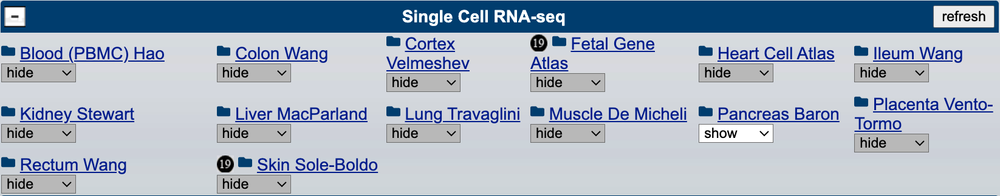
We are starting with 14 scRNA-seq tracks covering different major organs of the body. Each new scRNA-seq track contains anywhere from 2-19 individual mRNA expression tracks in barChart format. By default, tracks display gene expression per individual cell type annotation and are colored according to cell class:
| Color | Cell Classification |
|---|---|
| neural | |
| stem cell | |
| adipose | |
| fibroblast | |
| myeloid | |
| immune | |
| lymphoid | |
| muscle | |
| hepatocyte | |
| kidney tubule | |
| secretory | |
| ciliated | |
| epithelial | |
| endothelial | |
| glia |
When available, expression tracks organized by other categories such as sex, donor, sample, detailed cell type, etc. are also included in these container tracks. In all of the tracks, the gene expression is averaged for each item in a category.
Clicking on any of the track titles below will lead to the track description
page, which includes additional information and allows for configuration of
various display options.
This release includes the following
tracks:
Many of these datasets can also be explored interactively using the UCSC Cell Browser. We are interested in bringing more single-cell datasets into the Genome Browser and the UCSC Cell Browser as well as the Human Cell Atlas project. If you have data you would like to contribute, check out our questionnaire.
We would like to thank the publication authors for making these data available. We would also like to thank Jim Kent, Brittney Wick, Luis Nassar, Daniel Schmelter, Jairo Navarro, and Gerardo Perez for building and testing these tracks.
We are happy to announce the release of two new tracks for the human assembly (GRCh38/hg38): the GTEx High-Confidence cis-eQTLs from CAVIAR and GTEx RNA-seq read coverage tracks.
We would like to thank the GTEx investigators, analysts, and portal team for providing this data. We would also like to thank Max Haeussler, Matt Speir, and Jairo Navarro for the creation and release of these tracks.
We are pleased to announce the release of the GENCODE Genes V38 track for the human (GRCh38/hg38) Genome Browser.
The GENCODE Genes track (version 38, May 2021) shows high-quality manual annotations merged with evidence-based automated annotations across the entire human genome generated by the GENCODE project. By default, this track displays only the basic GENCODE set, splice variants, and non-coding genes. This track contains annotations on the reference chromosomes as well as assembly patches and alternative loci (haplotypes).
More details about the new GENCODE Genes track can be found on the track description page.
We would like to thank the GENCODE Project for providing the data. We would also like to thank Brian Raney, Mark Diekhans, and Jairo Navarro for the creation and release of this track.
The UCSC Genom Browser is proud to share our latest update to the SARS-CoV-2 browser, the updated Variants of Concern (VOC) track. This data track includes amino acid and nucleotide annotations for 10 different COVID variants, including the Delta and Mu variants, mapped along the SARS-CoV-2 reference genome. These variants are classified by the WHO into several categories: Variants of Concern (VOC), Variants of Interest (VOI), and Variants under Investigation (VUM). These tracks help provide a more clear understanding of the mutations that comprise each named variant. This track's items also include links to Outbreak.info, providing geographic distibutions for each variant.
The underlying data is publically accessible and compatible with many analysis tools, including our Table Browser, Data Integrator, and JSON API. More information on this track can be found on the Variants of Concern (VOC) track description page.
We are pleased to announce the addition of GRCh38 patch release 13 to the hg38 assembly. hg38 has been updated with patches since its release in 2013. The GRC patch releases do not change any previously existing sequences; they simply add new sequences for fix patches or alternate haplotypes that correspond to specific regions of the main chromosome sequences. For most users, the patches are unlikely to make a difference and may complicate the analysis as they introduce more duplication.
More information on how patch sequences are incorporated can be found on the Patching up the Genome blog post. The blog post contains details about the new /latest, /initial, and /p13 download directories on the downloads server. With the addition of new sequences to hg38, we can expect to see BLAT return more matches to the genome.
We would like to thank the Genome Reference Consortium for creating the patches for hg38. We would also like to thank Galt Barber, Jairo Navarro, and Gerardo Perez at UCSC for implementing and testing the latest patch to the hg38 genome.
We are pleased to announce the release of the JASPAR Transcription Factors tracks for human assemblies hg19/GRCh37 and hg38/GRCh38.
These data represent genome-wide predicted binding sites for TF (transcription factor) binding profiles in the JASPAR CORE collection. This collection is an open-source database containing a curated, non-redundant set of binding profiles derived from published collections of experimentally defined transcription factor binding sites for eukaryotes.
JASPAR has been a popular Public Hub for many years and in collaboration with their group, the data can now be found as native tracks. The hub will continue to exist uninterrupted and includes data on additional assemblies mm10, danRer11, dm6, ce10, araTha1, and sacCer3.
See the track description page for more information including data access, available filters, display conventions, and direct links to the other assemblies.
We would like to thank Anthony Mathelier and Oriol Fornes as well as the rest of the researchers that develop and maintain the JASPAR database. We would also like to thank Daniel Schmelter and Lou Nassar for the development and release of these tracks.
A new 241-way comparative genomics track has been added to the human (GRCh38/hg38) genome browser. This track shows multiple alignments of 241 vertebrate species and measurements of evolutionary conservation from the Zoonomia Project.
The multiple alignments were generated using the Cactus comparative genomics alignment system and the base-wise conservation scores were computed using phyloP from the PHAST package. For genome assemblies not available in the genome browser, there are alternative assembly hub genome browsers. Missing sequence in any assembly is highlighted in the track display by regions of yellow when zoomed out and by Ns when displayed at base level.
We would like to thank the Zoonomia Project for providing the data. We would also like to thank Hiram Clawson, Brian Joseph Raney, Mark Diekhans, Lou Nassar, and Gerardo Perez for their efforts in creating this track.
We are pleased to announce the release of the GENCODE Genes VM27 track for the mouse (GRCm39/mm39) Genome Browser.
The GENCODE Genes track (version M27, Dec 2020) shows high-quality manual annotations merged with evidence-based automated annotations across the entire mouse genome generated by the GENCODE project. By default, this track displays only the basic GENCODE set, splice variants, and non-coding genes. This track contains annotations on the reference chromosomes as well as assembly patches and alternative loci (haplotypes).
More details about the new GENCODE Genes track can be found on the track description page.
We would like to thank the GENCODE Project for providing the data. We would also like to thank Brian Raney, Mark Diekhans, and Jairo Navarro for the creation and release of this track.
We are pleased to announce the addition of GRCm38 patch release 6 to the mm10 assembly. mm10 has been updated with patches since its release in 2012. The GRC patch releases do not change any previously existing sequences; they simply add new sequences for fix patches or alternate haplotypes that correspond to specific regions of the main chromosome sequences. For most users, the patches are unlikely to make a difference and may complicate the analysis as they introduce more duplication.
More information on how patch sequences are incorporated can be found on the Patching up the Genome blog post. The blog post contains details about the new /latest, /initial, and /p6 download directories on the downloads server. With the addition of new sequences to mm10, we can expect to see BLAT return more matches to the genome.
We would like to thank the Genome Reference Consortium for creating the patches for mm10. We would also like to thank Galt Barber and Jairo Navarro at UCSC for implementing and testing the latest patch to the mm10 genome.
A genome browser is now available for the Xenopus tropicalis assembly released in Nov. 2019 by the University of California, Berkeley (UCB_Xtro_10.0).
We would like to thank the University of California, Berkeley for creating this new X. tropicalis assembly. We would also like to thank Hiram Clawson, Lou Nassar, and Gerardo Perez for the development and release of the xenTro10 genome browser.
We have updated our GENCODE gene datasets to the latest releases; v38 for human (hg38 & hg19) and v27 for the mouse genome assembly (mm39). These new annotation data were released by GENCODE in May 2021 and correspond to the Ensembl Genes 104 dataset.
These tracks can be found in our All GENCODE super-track folder, with subset tracks and abundant filter options. This super-track contains many previous versions of the GENCODE genes for easy comparison. From the GENCODE stats page, this updated dataset has approximately 60.6k genes and 237k transcripts on the human hg38 assembly.
For more information or to visualize the data, you can visit the following track description pages:
We are happy to announce an update to the Genome Aggregation Database (gnomAD) variants track for the hg38/GRCh38 assembly. The gnomAD v3.1.1 variants track contains the same underlying data as v3.1, but with minor corrections to the VEP annotations and dbSNP rsIDs. In this update, we have now included the mitochondrial chromosome data that was released as part of gnomAD v3.1 but after the UCSC version of the track was created and released. For more information about gnomAD v3.1.1, please see the related changelog.
We would like to thank the Genome Aggregation Database team at the BROAD institute for releasing the underlying data. We would also like to thank Chris Lee and Jairo Navarro for the creation and release of the UCSC Genome Browser track.
We are pleased to announce the updated NCBI RefSeq Annotation Release 109.20210514 tracks for the hg38/GRCh38 assembly. To keep up with the periodic version releases, we will update the NCBI RefSeq tracks automatically for both hg19/GRCh37 and hg38/GRCh38. For all of these tracks, the alignments and coordinates are provided by RefSeq. These tracks are organized in a composite track that includes:
We would like to thank NCBI and the RefSeq Annotation database for collecting and curating these data. We would also like to thank Hiram Clawson, Lou Nassar, and Gerardo Perez for developing and releasing these tracks.
The UCSC Genome Browser's list of genetic variation datasets is now more organized, with a new folder supertrack for previous dbSNP versions. We have listened to requests and have simplified our tracks listing. This change adds a new track link and clears up older versions of dbSNP links (for mm10, hg19, and hg38) while retaining all functionality of filters and saved sessions. The previous versions of dbSNP can be accessed and visualized by the new dbSNP Archive supertrack.
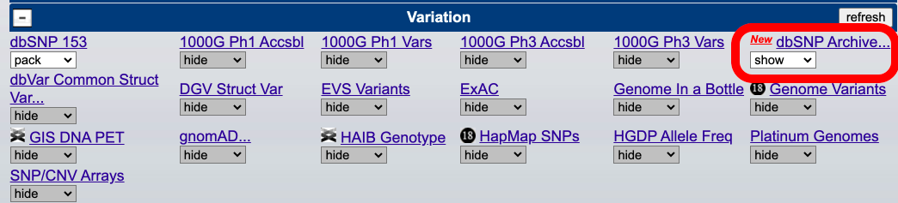
The Track Database Definition Document defining hub settings has been updated from version two to version three. This document primarily serves as a library of settings that users can refer to when they are setting up and configuring their own track hubs. The update in the version is to account for two new sections that highlight the new bigLolly type specialized for variant data and the new vcfPhasedTrio type specialized for phased VCF data.
The new specifications for these types are included in their relevant
sections such as vcfChildSample and
vcfUseAltSampleNames for the new vcfPhasedTrio settings, or lollySizeField and lollyField
for the new bigLolly settings
with full descriptions in the document.
The Track Database Definition Document also serves a second function beyond defining settings as providing a versioned specification for those sites that support and display data from track hubs such as Ensembl and NCBI. See this blog post to learn more about this second element of the document and using the hubCheck utility to gain an idea of how your hub's settings might work on different sites.
The UCSC Genome Browser has just added the REVEL tracks to the hg38 and hg19 reference genomes. This much requested clinical dataset is now visualized and interactive on the Genome Browser. REVEL scores predict the pathogenicity of missense variants for every possible basepair change across the entire genome's coding sequences. This dataset bases its scores on 13 individual tools to produce high predictive performance of common and rare mutations. To learn more about the REVEL dataset, please visit their site below:
To access these tracks on the Genome Browser, please visit their description pages below and change the tracks' visibility.
Thanks to REVEL for providing these annotations, as well as Max Haeussler and Dan Schmelter of the UCSC Genome Browser group for their work in creating and releasing these tracks.
We are pleased to announce updated Ensembl gene annotation tracks corresponding to v104 for the following assemblies:
Thanks to Ensembl for providing these annotations, as well as Hiram Clawson and Lou Nassar of the UCSC Genome Browser group for their work in creating and releasing these tracks.
We are pleased to announce the updated NCBI RefSeq Annotation Release 105.20201022 tracks for the hg19/GRCh37 assembly. For all of these tracks, the alignments and coordinates are provided by RefSeq. These tracks are organized in a composite track that includes:
We would like to thank NCBI and the RefSeq Annotation database for collecting and curating these data. We would also like to thank Hiram Clawson, Lou Nassar, and Gerardo Perez for developing and releasing these tracks.
Do you have a favorite species or a research organism for which you'd like to visualize the genomic sequence? With the recent addition of genomic assemblies for more than 1,300 species, it's possible that your favorite is now available in the UCSC Genome Browser. Check this list of new assemblies to see if yours is a click away. Each of these Genome Browser assembly hubs comes pre-loaded with several annotation tracks, gene models, and the ability to align genomic sequence to the reference assembly using the BLAT alignment tool. You can add your own data to your view of the assembly hub by uploading a custom track or creating a track hub.
We call this group of assembly hubs, the Genome Repository (GenArk). The genomes in the GenArk are sourced from NCBI RefSeq, the Vertebrate Genomes Project (VGP) and other projects. See the complete list of assembly hubs here.
GenArk assemblies can be found by searching the common name (e.g.
American Beaver) or GCA/GCF accession
(e.g. GCF_001984765.1) directly on the
Genome Browser Gateway page.
A full list can also be seen on the GenArk portal which
is organized by phylogenetic groups and projects:
The number of NCBI RefSeq assemblies has been increasing each year, and we expect the trend to continue as assemblies from VGP, and other projects are released. Our next step is to add additional clades to GenArk including archaea, viruses, and bacteria.
As mentioned above, assembly hubs in the GenArk allow for sequence alignment using the BLAT tool. We extended our traditional BLAT tool to accommodate these assembly hubs and we call it Dynamic BLAT. Dynamic BLAT pre-computes index genomes files, which allows assemblies to have a BLAT server without needing it to be resident in the computer's memory. Dynamic BLAT allows us to offer BLAT services on nearly all of our GenArk assemblies, with a few exceptions due to excessive genome size.
We would like to thank NCBI RefSeq and Vertebrate Genome Project (VGP) for making these assemblies available. We would also like to thank Hiram Clawson, Mark Diekhans, Galt Barber, Lou Nassar, and Gerardo Perez, and the rest of the Browser team for their work on building the assembly hubs, creating GenArk, and extending BLAT to include these new assembly hubs.
We are happy to announce the release of the Vaccines track for the UCSC SARS-CoV-2 Genome Browser. This track shows the alignment of three different mRNA vaccine sequences to the coronavirus genome:
The protein encoded by the three sequences has two amino acid substitutions compared to the SARS-CoV-2 S glycoprotein. These vaccines include two variations compared to the reference Spike sequence to stabilize the shape into a pre-infection structure that delivers a better immune response, S:K986P and S:V987P. See also: The tiny tweak behind COVID-19 vaccines. More information about this track can be found on the description page.
We want to thank the Andrew Fire lab, Stanford University School of Medicine for providing the sequencing data of these vaccines. We also want to thank Hiram Clawson and Jairo Navarro for the creation and release of this track.
A genome browser is now available for the Rattus norvegicus assembly released in Nov. 2020 by the Darwin Tree of Life Project at the Wellcome Sanger Institute (mRatBN7.2).
We would like to thank the Darwin Tree of Life Project at the Wellcome Sanger Institute for creating this new rat assembly. We would also like to thank Hiram Clawson, Lou Nassar, and Gerardo Perez for the development and release of the rn7 genome browser.
We are happy to announce a new haploinsufficiency predictions track for human assembly GRCh37/hg19. This track displays haploinsufficiency predictions for human genes from DECIPHER. Human cells have two copies of most genes, one from each parent. If a mutation alters one allele, or copy, the other is usually still sufficient to maintain proper gene function. For haploinsufficient genes, however, both copies must be functioning for the organism to have a normal life. Haploinsufficiency is implicated in a number of health disorders.
Moving the mouse cursor over any gene in the track will display a pop-up box with the gene name and α-upper quantile for the prediction. The genes in this track are also color-coded according to quantile:
We would like to thank the DECIPHER team for making the haploinsufficiency prediction data available. We also want to thank Jonathan Casper and Jairo Navarro for the creation and release of this track.
We are happy to announce an update to the sno/miRNA track for human assembly GRCh37/hg19. With this update, the miRBase database was updated to version 20. The four different types of RNA and their counts in the human genome are listed below.
We would like to thank Hiram Clawson and Jairo Navarro for the creation and release of this update.
We are pleased to announce the update to the Chain/Net tracks for the recently released mouse assembly mm39/GRCm39. The chain track shows alignments of the mouse assembly to 29 other organisms using a gap scoring system that allows longer gaps than traditional affine gap scoring systems. The net track shows the best mouse/other chain for every part of the other genome.
We would like to thank Angie Hinrichs, Hiram Clawson, Lou Nassar, and Gerardo Perez for the development and release of these tracks.
We are pleased to announce new GENCODE Gene annotation tracks, which correspond to Ensembl 103, for three assemblies: hg19/GRCh37, hg38/GRCh38, and mm39/GRCm39. For human, the GENCODE V37 annotations were mapped to hg38/GRCh38 and then back-mapped to the hg19/GRCh37 assembly. For all three assemblies, the gene sets contain the following tracks:
The hg38 and mm39 assemblies also include the following tracks that are not available on hg19:
Details on each release can be found on the GENCODE site. This includes statistics on each release.
We would like to thank the GENCODE project for providing these annotations. We would also like to thank Mark Diekhans and Lou Nassar for the development and release of these tracks.
We are happy to announce an update to the TS miRNA Targets track for human, GRCh37/hg19. This track shows conserved mammalian microRNA regulatory target sites for conserved microRNA families in the 3' UTR regions of Refseq Genes, as predicted by TargetScanHuman 7.2.
The track items are colored based on the four classes of target sites identified in Agarwal et al., 2015.
| Purple | 8mer | |
| Red | 7mer-m8 | |
| Blue | 7mer-A1 | |
| Green | Non-canonical |
Thanks to George Bell of Bioinformatics and Research Computing at the Whitehead Institute for providing this annotation, which was generated in collaboration with the labs of David Bartel and Chris Burge. Additional information on microRNA target prediction is available on the TargetScan website. We would also like to thank UCSC Genome Browser team members Brittney Wick, Kate Rosenbloom, and Jairo Navarro for the development and release of this track.
We have updated the most recent human genome, GRCh38/hg38, with an updated default gene set, GENCODE v36. This is part of our commitment to keep our annotation data as up-to-date as possible with the most useful information, all versioned for stability and reproducibility. This geneset replaces our previous default, GENCODE v32, with a more recent dataset while retaining all of the filters, viewing options, and data access abilities. GENCODE v32 can still be viewed in the All GENCODE track. You can view the new default geneset at the following link: GENCODE v36
The default gene dataset is called "knownGene" internally at UCSC and is used in many bioinformatics pipelines as a reference geneset. The GRCh37/hg19 default geneset will stay the same. The UCSC Genome Browser would like to thank the GENCODE consortium and the internal development team at UCSC, including Daniel Schmelter and Brian Raney.
We are pleased to announce a combination of both updated and new NCBI RefSeq gene annotation tracks for the following 13 assemblies. Most notably, we have updated both human assemblies and the new mouse assembly.
Thanks to NCBI RefSeq for providing these annotations. We would also like to thank Hiram Clawson and Daniel Schmelter of the UCSC Genome Browser group for their work in creating and releasing these tracks.
We are happy to announce the release of a new track for human assemblies, hg19 and hg38. The new track shows Combined Annotation Dependent Depletion (CADD) scores for each base in the genome and corresponds to the v1.6 developmental release. CADD is a tool for scoring the deleteriousness of single nucleotide variants as well as insertion/deletion variants in the human genome. CADD scores strongly correlate with allelic diversity, pathogenicity of both coding and non-coding variants, experimentally measured regulatory effects, and also highly rank causal variants within individual genome sequences. Finally, CADD scores of complex trait-associated variants from genome-wide association studies (GWAS) are significantly higher than matched controls and correlate with study sample size, likely reflecting the increased accuracy of larger GWAS.
The supertrack consists of the following tracks:
CADD scores are freely available for all non-commercial applications from the CADD website. For commercial applications, see the license instructions there.
We would like to thank the CADD development team for providing precomputed data as simple tab-separated files. We would also like to thank Max Haeussler and Jairo Navarro for the creation and release of these tracks.
A genome browser is now available for the marmoset (Callithrix jacchus) assembly released in May 2020 by the McDonnell Genome Institute at Washington University (Callithrix_jacchus_cj1700_1.1).
In our effort to better support personalized medicine and clinical genetics researchers, we are happy to announce the addition of 78 new whole exome sequencing (WES) probes and targets tracks from several major companies for human genomes hg38 and hg19. Our new tracks include data on WES kits from Illumina, Agilent, Roche, IDT, Twist, and MGI (BGI). Understanding exome sequencing probes and targets helps bring awareness to the different gene isoforms and alternative splicing that may be important for disease research. You can find these tracks under the "Mapping and Sequencing" group or go directly to the description pages of the "Exome Probesets" tracks below:
Thank you to those who contributed to these tracks, including Ana Benet, Max Hauessler, Daniel Schmelter, Beagan Nguy, Tiana Pereira, and Pranav Muthuraman.
We are pleased to announce new conservation tracks for the recently released mouse assembly (mm39/GRCm39). The tracks display multiple alignments (multiZ) for 35 different organisms and evolutionary conservation scores (phastCons and phyloP). For more details, visit the track description page below.
The UCSC Genome Browser is proud to share our sixth round of genetics data for the SARS-CoV-2 virus (see our first, second, third, fourth, and fifth releases). These data focus on the virus's mutations, evolution, and antibody responses. As usual, these data are all open-access and interactive. For more information, you can also visit our COVID-19 home page.
Clicking on any of the track titles below will lead to the track description page, which includes additional information and allows for configuration of various display options. This release includes the following tracks:
A genome browser is now available for the Canis lupus familiaris assembly released in May 2019 by the University of Michigan (UMICH_Zoey_3.1).
We are pleased to announce updates to the gnomAD Variants super-track for the hg19/GRCh37 and hg38/GRCh38 human assemblies.

We would like to thank the Genome Aggregation Database (gnomAD) team at the BROAD institute and the UCSC Genome Browser team members Christopher Lee, Anna Benet-Pages, Daniel Schmelter, and Gerardo Perez for developing and releasing these tracks.
We are pleased to announce new GENCODE Gene annotation tracks, which correspond to Ensembl 101 and Ensembl 102, for the hg19/GRCh37 and hg38/GRCh38 human assemblies. The annotations were mapped to hg38 and then back-mapped to the hg19 assembly. All gene sets contain the following tracks:
The hg38 annotations also include the following tracks not available on hg19:
Details on each release can be found on the GENCODE site. This includes statistics on each release.
We would like to thank the GENCODE project for providing these annotations. We would also like to thank Mark Diekhans and Lou Nassar for the development and release of these data.
We are pleased to start the year with our fifth data release for the coronavirus genome browser. (See also our first, second, third, and fourth releases)
This update includes an updated track as well as three new tracks for the coronavirus genome browser, and a track for the hg19/GRCh37 and hg38/GRCh38 human assemblies. Worth note is the B.1.1.7 in USA track which shows substitution and deletion variants in the B.1.1.7 lineage, known for its rapid spread in England in November and December 2020, alongside the first nine genome sequences in the United States that were assigned to the lineage.
We have also updated our web interface to UShER, a tool for placing new SARS-CoV-2 sequences in a global phylogenetic tree, to include COG-UK sequences available as of Dec. 30, 2020 including thousands of new sequences in the B.1.1.7 lineage.
Clicking on any of the track titles below will lead to the track description page, which includes additional information and allows for configuration of various display options.
This release includes the following tracks:
We would like to thank the publication authors Li et al and
Liu et al for
making these data available. We would also like to thank
Jason Fernandes,
COG-UK,
GenBank,
the GISAID Initiative,
the COVID-19 Host Genetics Initiative (HGI)
and their partners, as well as
Rachel Liao, Juha Karjalainen, and Kumar Veerapen from the Broad Institute.
These tracks are made possible due to the worldwide efforts of scientists, including the Genome Browser team. We will continue to provide SARS-COVID-2 resources as they become available. For the latest data, see our preview site. Note that content on our preview server has not undergone our QA process, and is subject to change at any time.
We are pleased to release a new track, ClinVar Interpretations, for the hg19/GRCh37 and hg38/GRCh38 human assemblies. This track can be found as part of the ClinVar Composite. It is the first track to use our bead graph display, which is a variation of our existing lollipop display.
The ClinVar Interpretations track displays the genomic positions of individual variant submissions and interpretations of the clinical significance, as well as their relationship to disease in the ClinVar database. As seen on the image below, the variants are classified into six categories each on a separate horizontal line:
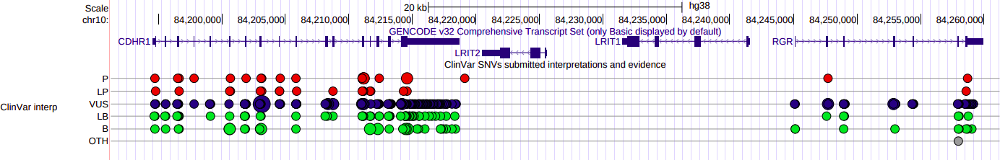
The size of the bead on the line represents the number of submissions at that genomic position. The color of the beads aids to distinguish the categories further. Hovering on the track items shows the genomic variations which start at that position and the number of individual submissions with that classification. Additional information on the variants can be found by clicking into the item.
For more information see the track description page.
We would link to thank ClinVar for making these data available, as well as Brian Joseph Raney, Ana Benet Pages, Gerardo Perez, and Lou Nassar for the development and release of this track.
We are excited to announce assembly hubs can now perform In-Silico PCR. Assembly hub developers have long been able to activate DNA and amino acid BLAT searches on their hubs by running gfServers from their institution, and now with the new isPcr setting, they can enable In-Silico PCR searches too using the same running gfServers. In-Silico PCR searches a sequence database with a pair of PCR primers, using an indexing strategy for fast performance to find target regions across the genome. Browser users without an institution to host gfServers can still benefit from this new feature by downloading and installing a virtual machine Genome Browser in a Box (GBiB), and alternatively running gfServers on the GBiB, all locally from a laptop. For more information see the Assembly Hub Wiki and the Quick Start Guide to Assembly Hubs.
We would like to thank Brian Raney and Gerardo Perez for their work on this release.
We are pleased to announce a new GENCODE Genes annotation track, which corresponds to Ensembl 101, for the: hg19/GRCh37 assembly. The GENCODE V35 annotations were mapped to hg38/GRCh38 and then back-mapped to the hg19/GRCh37 assembly. The gene set contains the following tracks:
Details on each release can be found on the GENCODE site. This includes statistics on each release.
We would like to thank the GENCODE project for providing these annotations. We would also like to thank Mark Diekhans and Lou Nassar for the development and release of this track.
A genome browser is now available for the Hawaiian monk seal (Neomonachus schauinslandi) assembly released in Jun. 2017 by the Johns Hopkins University (ASM220157v1).
We would like to thank Alan F. Scott at Johns Hopkins University and NCBI for creating this new Hawaiian monk seal assembly. We would also like to thank Hiram Clawson, Robert Kuhn, and Gerardo Perez for the development and release of the neoSch1 genome browser.
We are pleased to announce new and updated UniProt tracks for the following assemblies:
These tracks will continue to be updated automatically as part of a quarterly pipeline.
Thanks to UniProt for providing these annotations, as well as Maximilian Haeussler and Lou Nassar of the UCSC Genome Browser group for their work in creating and releasing these tracks.
We are pleased to announce the release of three new tracks from the Genome in a Bottle Consortium (GIAB) available for human assemblies, GRCh37/hg19 and GRCh38/hg38. GIAB is an open, public consortium hosted by NIST. The priority of GIAB is to develop reference standards, reference methods, and reference data by authoritative characterization of human genomes for use in benchmarking, including analytical validation and technology development that will support translation of whole human genome sequencing to clinical practice. The sole purpose of this work is to provide validated variants and regions to enable technology and bioinformatics developers to benchmark and optimize their detection methods.
There are two phased trio tracks and a structural variants track available:
We would like to thank NCBI, the Genome in a Bottle Consortium, and NIST for providing the benchmark VCF and BED files. We would also like to thank Chris Lee and Jairo Navarro for the creation and release of the Genome Browser tracks.
We are happy to share that we have updated our gnomAD super track to include the gnomAD pext datasets on the GRCh37/hg19 genome. This track displays isoform expression levels across 53 tissues based on 11,706 tissue samples from the Genotype Tissue Expression (GTEx) v7 dataset, showing a comprehensive view of the expression of exons across a gene using the proportion expression across transcripts, or pext metric, a transcript-level annotation metric which quantifies isoform expression for variants.
This may be especially useful to those interested in alternative splicing and clinicial assessment of variants. For more information, please see the track description page and the associated publication:
We would like to thank the gnomAD team at the BROAD institute and the UCSC Genome Browser team members Chris Lee, Anna Benet-Pages, and Daniel Schmelter for developing, and releasing this track.
We are pleased to announce the release of a new mouse assembly, mm39, which corresponds to the GRCm39 assembly released by the Genome Reference Consortium (GRC). Starting with this release, the UCSC Genome Browser version numbers for mouse assemblies will match those of the GRC to minimize version confusion. Hence, the GRCm39 assembly is referred to as mm39 in Genome Browser datasets and documentation.
For more information about the files included in the GRCm39 GenBank submission, see the GRCm39 README. The GRCm39 GenBank record provides a detailed array of statistics about this assembly. Bulk downloads of the sequence and annotation data may be obtained from the Genome Browser FTP server or the Downloads page. The annotation tracks for this browser were generated by UCSC and collaborators worldwide.
We would like to thank the GRC and NCBI for creating this new mouse assembly. We would also like to thank Hiram Clawson and Jairo Navarro for the development and release of the mm39 genome browser.
We are pleased to announce our fourth data release for the coronavirus genome browser. (See also our first, second, and third releases)
In line with our previous releases, these tracks include diverse data such as gene models, immunology, pathogenicity, and conservation. We would also like to bring attention to our recently released COVID-19 GWAS tracks for the GRCh37/hg19 and GRCh38/hg38 human assemblies. The COVID-19 GWAS track displays data which aims to identify genetic determinants of SARS-CoV-2 infection susceptibility and disease severity.
Clicking on any of the track titles below will lead to the track description
page, which includes additional information and allows for configuration of
various display options.
This release includes the following tracks:
We would like to thank the publication authors De Maio et al, Gussow et al, Pond et al, Starr et al, Sun et al, and Turakhia et al for making these data available. We would also like to thank Rob Lanfear, Irwin Jungreis, Qiangfeng Cliff Zhang, Jason Fernandes, Santrupti Nerli, Bjoern Peters, the Bloom Lab, the Weizmann Institute of Science and the GISAID Initiative.
These tracks are made possible due to the worldwide efforts of scientists, including the Genome Browser team. We will continue to provide SARS-COVID-2 resources as they become available. For the latest data, see our development site. Note that content on our preview server has not undergone our QA process, and is subject to change at any time.
We are pleased to announce an update to the Ensembl gene annotation tracks to v101 for the following assemblies:
Thanks to Ensembl for providing these annotations, as well as Hiram Clawson and Lou Nassar of the UCSC Genome Browser group for their work in creating and releasing these tracks.
We have updated three clinical tracks to add three ease-of-use features. Decipher and LOVD Copy Number Variant (CNV) tracks now have the option to "Merge items that span the current region", collapsing items that are annotated across the entire Genome Browser visible region. Decipher now includes options to filter by Pathogenicity and Variant Class. GeneReviews now has a simple mouse-over which shows gene symbol and disease associations.
Thank you to the LOVD, Decipher, and GeneReviews teams for their curation of those high-quality datasets. Thank you Genome Browser staff Kate Rosenbloom, Chris Lee, Anna Benet-Pages, and Daniel Schmelter for developing and releasing these feature updates.
We are happy to release the dbVar composite tracks, providing a curated resource for structural variant datasets on human GRCh37/hg19 and GRCh38/hg38 genome assemblies. The track aggregates data from more than one hundred sources including Gnomad, 1000 Genomes Consortium, and Decipher from the dbVar, the database of Structural Variation from NCBI. The Common Structural Variants track shows variants that meet the following criteria: more than 50 basepairs, occur in at least 100 samples, and have an allele frequency of >=0.01 in at least one population. For more information, please see the track description page:
We thank the dbVar team at NCBI, especially John Lopez and Tim Hefferon for technical coordination and consultation, and to Chris Lee, Anna Benet-Pages, and Daniel Schmelter of the Genome Browser team for developing, and releasing this track.
We are happy to announce another release to the UCSC Genome Browser YouTube channel.
This new video, Making links to the UCSC Genome Browser. Part 3: Composite tracks, custom tracks and spreadsheets is the final installment of a three-part series showing how to make links to the Browser. This release features how to link to the tracks grouped together in a composite track, such as dbSNP or gnomAD, how to load your remotely hosted custom tracks and hubs via URL and how to make columns of links in a spreadsheet so each link opens a Genome Browser to to a unique configuration determined by data in the sheet. Please see our training page for more resources.
As is our usual practice, the video comes with a transcript with internal links to make it easier to find specific topics.
Thanks to Robert Kuhn for production and to the Browser staff for all the features.
We have updated the ClinVar Variants track (hg19/hg38), and made changes to the current ClinGen CNVs track (hg19/hg38). We have also added three new tracks in support of a new ClinGen composite. These changes have been made in an effort to support our clinical users, with an emphasis on facilitating Genome Browser use in variant interpretation.
The ClinVar Variants track has been reorganized based on variant length. The previous tracks, ClinVar Short Variants (<= 100bp) and ClinVar Long Variants (> 100bp), are now ClinVar SNVs (< 50bp) and ClinVar CNVs (>= 50bp). We have also added a mouse-over from the track display which shows phenotype and clinical significance information. In addition, the CNV track now has the following improvements:
Lastly, multiple feature options have been added to both tracks independently:
Below is an example of the filter options available for the ClinVar SNVs track. For additional details on the updated display, see the track description page.
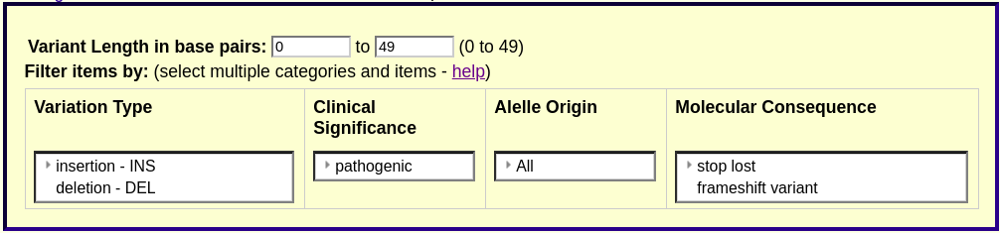
We have created a new composite track, ClinGen, and deprecated the previous ClinGen CNVs track. The ClinGen CNVs track will continue to be available, however, the data will no longer be updated. This was done by request of ClinGen, as all the data, as well as further updates, can be found in the ClinVar Copy Number Variants (ClinVar CNVs) track.
The new ClinGen composite track includes three new tracks described below:
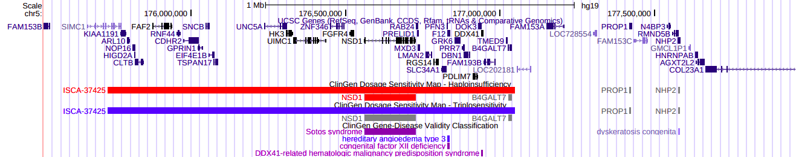
For more information on these tracks, including display conventions, scores, and classifications, see the track description page.
We would like to thank Erin Riggs and May Flowers as well as the rest of the ClinGen team. We would also like to thank ClinVar for making these data available. Track development and release was made possible by Anna Benet-Pages, Christopher Lee, Max Haeussler, and Lou Nassar.
We are happy to announce the first COVID-19 tracks in our human genome browsers GRCh37/hg19 and GRCh38/hg38, the COVID-19 GWAS meta-analysis. This track brings together data from 17 international GWAS studies and aims to identify genetic determinants of SARS-CoV-2 infection susceptibility and disease severity. These data are from the COVID-19 Host Genetics Initiative (HGI), a collaborative effort to analyze and share viral host genetics research. More resources are available on our page: COVID-19 Resources at UCSC.
These data are shown in our new lollipop visualization in order to show the dimensions of effect size and p-value in addition to location. Filters are also available for these variables and the number of studies. Custom tracks using the lollipop format are not yet available. For more information on these datasets, please read the track description page and try the interactive visualization for yourself:

Our gratitude goes to the COVID-19 Host Genetics Initiative contributors and project leads for making this data available, Kumar Veerapen, Rachel Liao, and Juha Karjalainen at the Broad Institute for their input during track development. We would also like to thank the UCSC Genome Browser staff Kate Rosenbloom, Daniel Schmelter, Brain Raney, and Ana Benet-Pages for developing, staging, and documenting this track.
We are happy to share a new data set, 1000 Genomes Trios on hg38, and a visualization tool for displaying chromosome phased VCFs and family inheritance patterns. This track shows phased variants from seven trios of parents and child across different regions. You can infer which parent passed on which variant and identify possible de-Novo variants. The data was produced by International Genome Sample Resource (IGSR) from sequence data generated by the 1000 Genomes Project. For more information on the 1000 Genomes Trios track and the VCF Trio format, please visit the track description page and VCF help page:

We would like to thank the IGSR and 1000 Genomes Project teams and contributors for doing the research and making their data accessible. We would also like to thank Chris Lee, Daniel Schmelter, and Angie Hinrichs for designing, developing, and releasing this track.
We are proud to announce the release of UCSC LiftOver and NCBI Remap alignments for human (GRCh37/hg19 and GRCh38/hg38). These alignments are contained in a composite track with three subtracks, one for UCSC LiftOver and two for NCBI alignments.
We would like to thank NCBI for making the ReMap data available and to Angie Hinrichs for the file conversion. We would also like to thank Max Haeussler and Jairo Navarro for the development and release of these tracks.
We are happy to release a Genome Browser data visualization for the much anticipated 2019 Gorilla genome. Thanks to the University of Washington for releasing the high-quality assembly, to NCBI RefSeq for providing the RefSeq annotations, as well as Hiram Clawson and Daniel Schmelter of the UCSC Genome Browser group for their work in creating and releasing this Genome Browser.
Northern California and the county of Santa Cruz are experiencing serious wildfires, including in the Santa Cruz mountains just north of UCSC campus. Campus has been evacuated and shutdowns are occurring. We believe that the Genome Browser will not be affected, but it is possible that if power is lost, backup power will not last indefinitely. We do not know how long before the fire is contained or how far it will progress before it is.
If the Genome Browser loses power, we will redirect traffic to our mirror server in Bielefeld, Germany. That server and our other in Yokahama, Japan, are maintained to be identical to the server in Santa Cruz, but you should know that your custom tracks and saved sessions are local to the machine where they were saved.
We do not expect to lose any data, as we have backups. Nevertheless, we have always advised that you should keep local copies of your data. This would be a good time to make local backups of custom tracks, if you do not already have them, and save your sessions to a local file. To do so, simply load a saved session and in the "Save Settings" section of the page, name a local file. This small file contains the parameters to recreate your sessions and can be uploaded to the European or Asian server.
Any custom tracks associated with sessions will have to be loaded separately on the other servers. You can back up custom tracks from a session by clicking the Submit button next to "Save Custom Tracks," in that same section. Read more in this news announcement from last year.
We should add that the Browser team wishes to express our sadness and concern for the loss of property and displacement experienced by many people in the UCSC community. We are doing everything we can to help those who need it. It is possible that responses on the mailing list will be delayed.
We are working hard to support the scientific effort against the COVID pandemic and are happy to announce eight new annotation tracks on the SARS-CoV-2 genome. These datasets reveal information about duplication regions, sequencing, gene identities, plasmid constructs, protein contact sites, and variant distribution. Like nearly all of our tracks, the data are open-access and downloadable through our Downloads page or Table Browser page. More information on each of these datasets can be obtained by reading the data track descriptions linked below.
We would like to acknowledge the work of the UCSC Genome Browser team and the data collaborators. Thank you to the research community for creating, sharing, and using this important data to propel science in light of this pandemic.
We are pleased to announce an annotated SNVs track for the Rhesus macaque (rheMac10) assembly. SNVs were called using the Genome Analysis Toolkit (GATK), then the Variant Effect Predictor software was used to predict the functional consequence of SNVs. Ensembl release 98 gene models were used in the predictions, which are based on both Ensembl and RefSeq gene predictions as well as PacBio iso-seq data.
For more information including a credits and methods section, see the track description page.
We would like to thank the Rhesus Macaque Genome Consortium and Jeff Rogers' lab at BCM-HGSC for supplying the data for this track. We would also like to thank Mark Diekhans and Lou Nassar for the development and release of this track.
We are happy to announce another release to the UCSC Genome Browser YouTube channel.
This new video, Making links to the UCSC Genome Browser. Part 2: Links inside genes and more tricks, is Part Two of a three-part series showing how to make links to the Browser. This release features how to fashion a URL that gets to a gene or a location within a gene using nucleotide or amino-acid numbers instead of genomic coordinates, how to set highlights, how to find variables for setting Browser parameters and how to make a URL that retrieves just the Brower graphic.
The third installment will show how to link to composite tracks, how to access your remotely-hosted custom tracks and how to make useful links in your spreadsheets.
As is our usual practice, the video comes with a transcript with internal links to make it easier to find specific topics.
Thanks to Robert Kuhn for production and to the Browser staff for all the features.
We have generated RefSeq Diffs tracks for 51 new assemblies. These tracks show alignment differences between the reference genome and RefSeq transcripts. This track can be found as part of the NCBI RefSeq composite track. Click the assembly links below to go to the respective assembly RefSeq composite page:
Thanks to NCBI RefSeq for providing the RefSeq annotations, as well as Hiram Clawson and Lou Nassar of the UCSC Genome Browser group for their work in creating and releasing these tracks.
Genome browsers are now available for the Canis lupus familiaris assembly released in March 2020 by Uppsala University (UU_Cfam_GSD_1.0), and the Pan paniscus assembly released in May 2020 by the University of Washington (Mhudiblu_PPA_v0).
We are pleased to announce three new SARS-CoV-2 (COVID) data track about coronavirus variation and conservation. Like nearly all of our tracks, the data are open-access and downloadable through our Downloads page or Table Browser page.
We would also like to thank the many people involved in this research and publication including the researchers Irwin Jungreis at MIT, Brianna Sierra Chrisman at Stanford, and UCSC staff members Max Haeussler, Hiram Clawson, and Daniel Schmelter.
July 7, 2020 marks the 20th anniversary of UCSC publishing the first-ever human Genome on the Internet in 2000. This was the first time that the code for human life was replicated and spread through computers instead of through biological means. We are lucky to have some of the original publishers still with us at the Genome Browser. Thank you, David Haussler and Jim Kent for your incredible effort pushing forward the field of human genomics and open-source data sharing.
For a timeline and pictures, please visit the Genomics Institute's article on the anniversary as well as this short video commemorating the occasion:
We are happy to announce another release to the UCSC Genome Browser YouTube channel.
This new video, Making links to the UCSC Genome Browser. Part 1: Dissecting / Understanding the URL, is Part One of a three-part series showing how to make links to the Browser, featuring how to fashion a URL that turns on datasets of choice at specific locations using coordinates, gene names and other annotation identifiers.
Future installments will show how to navigate to specific locations within genes without knowing their genomic coordinates, how to set highlights, loading composite tracks, accessing your remotely hosted custom tracks and how to make useful links in your spreadsheets.
As is our usual practice, the video comes with a transcript with internal links to make it easier to find specific topics.
Thanks to Robert Kuhn for production and to the Browser staff for all the features.
We are proud to announce our first major update to the Vertebrate Genomes Project assembly hub. This is a follow up to our initial release, and expands the hub to 168 assemblies.
With this update, we have created three additional hubs in addition to the main hub:
As with the previous release, all assemblies are built with a minimum set of data tracks including gene annotations, CpG islands, GC content, and repeat masking. Assembly statistics and track statistics are also available for all hubs. Links to the different pages are included below:
| Available VGP assemblies | ||||
|---|---|---|---|---|
| Index pages: | primary assembly | alternate/haplotype | trio mat/pat | legacy/superseded |
| Assembly statistics: | primary assembly | alternate/haplotype | trio mat/pat | legacy/superseded |
| Track statistics: | primary assembly | alternate/haplotype | trio mat/pat | legacy/superseded |
All data are available from the UCSC download servers. For information on how to download specific assembly data, refer to the assembly gateway page once the hub is connected, e.g. greater horseshoe bat. This page also includes information on starting a local BLAT server for the assembly.
We would like to thank the Vertebrate Genomes Project and the Genome 10k Project for their sequencing efforts and making these genomes available. We would also like to thank Hiram Clawson and Luis Nassar from the Genome Browser team for the development and release of these assembly hubs.
We have updated the Self Chain track for the human GRCh38/hg38 assembly. The Self Chain track shows alignments of the human genome with itself, using a gap scoring system that allows longer gaps than traditional affine gap scoring systems. After filtering out the alignments produced when identical locations of the genome map to one another (e.g. chrN mapping to chrN), the remaining alignments point out areas of duplication within the human genome.
The updated track now includes 33,039,051 chains, and should provide improved sensitivity for pseudogenes and other homologous regions. For more information, see the track description page.
We would like to thank Angie Hinrichs, Anna Benet-Pages, and Lou Nassar for the development and release of this track.
We are pleased to announce the ENCODE Registry of candidate cis-Regulatory Elements (cCREs) track for the human and mouse genomes (GRCh38/hg38 and GRCm38/mm10). cCREs are the subset of representative DNase hypersensitive sites across ENCODE and Roadmap Epigenomics samples that are supported by either histone modifications (H3K4me3 and H3K27ac) or CTCF-binding data. The Registry of cCREs is one of the core components of the integrative level of the ENCODE Encyclopedia of DNA Elements. A total of 926,535 elements for human and 339,815 elements for mouse were identified and classified by the ENCODE Data Analysis Center according to biochemical signatures.
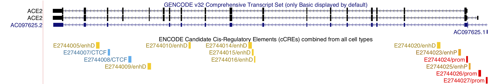CCREs are colored and labeled according to classification by regulatory signature:
| Color | UCSC label | ENCODE classification | ENCODE label | |
|---|---|---|---|---|
| red | prom | promoter-like signature | PLS | |
| orange | enhP | proximal enhancer-like signature | pELS | |
| yellow | enhD | distal enhancer-like signature | dELS | |
| pink | K4m3 | DNase-H3K4me3 | DNase-H3K4me3 | |
| blue | CTCF | CTCF-only | CTCF-only |
This dataset was produced by the ENCODE Data Analysis Center (Zlab at UMass Medical Center). Thanks to Henry Pratt, Jill Moore, Michael Purcaro, and Zhiping Weng, PI for providing this data and initial version of the track. Thanks also to the ENCODE Consortium, the ENCODE production laboratories, and the ENCODE Data Coordination Center for generating and processing the datasets used here. Thanks to Kate Rosenbloom and Jairo Navarro for the development and release of these tracks.
We have released a new video to the Browser's YouTube channel.
Browser Basics, Part Three — Configuring the Browser + DNA navigation
This video is part of a three-part series that goes back to the Basics, designed to introduce new users to the Browser. Our previous videos have been directed either at experienced users who may have questions about how to do certain tasks, or serve as introductions to new features in the Browser. In this three-part series, we fill in the background with more basic information, though we expect experienced users to find some new things as well.
Today's release, Part Three, shows further configuration options in the Browser and also how to use DNA sequence to find locations in the genome. Examples include BLAT, Short Match, Drag-N-Highlight, removing highlights, Drag-N-Zoom, configuring the scale bar/base position track, adding a title to the image and more.
As is our practice, a transcript is provided for those who wish to review the content before watching.
Thanks to Robert Kuhn for the video production.
We are pleased to announce new NCBI RefSeq assembly hubs for vertebrate genomes. Currently these hubs contain 295 assemblies, encompassing most RefSeq vertebrate genomes.
All assemblies contain multiple gene models including NCBI RefSeq annotations, and Ensembl gene predictions where available. Additional tracks include repeat masking and simple repeat data. A complete list of available tracks for each assembly can be found in the respective track statistics pages.
The assemblies are divided into five categories. See the assembly statistics link below for a complete list of available genomes in each hub. Assembly statistics such as genome size, gaps, and masking are also available for each genome. Lastly, track statistics are also available displaying all available tracks for each assembly, as well as their genomic coverage.
These assemblies can be found on our list of Public Hubs, or by searching for a species by NCBI accession or name directly from the Gateway page.
We would like to thank NCBI RefSeq for making these data available. We would also like to thank Hiram Clawson and Lou Nassar for the development and release of these hubs.
We are pleased to announce new GENCODE Gene annotation tracks, which correspond to Ensembl 100, for three assemblies: hg19/GRCh37, hg38/GRCh38, and mm10/GRCm38. For human, the GENCODE V34 annotations were mapped to hg38/GRCh38 and then back-mapped to the hg19/GRCh37 assembly. For all three assemblies, the gene sets contain the following tracks:
The hg38 and mm10 assemblies also include the following tracks that are not available on hg19:
Details on each release can be found on the GENCODE site. This includes statistics on each release.
We would like to thank the GENCODE project for providing these annotations. We would also like to thank Mark Diekhans and Daniel Schmelter for the development and release of these tracks.
We are excited to announce an update to the GTEx V8 for the gene expression track based on data from the NIH Genotype-Tissue Expression (GTEx) project. This track displays tissue-specific gene expression based on RNA-seq in 54 tissues from 948 donors released in August 2019. The original data for this track can be found at the GTEx Portal hosted by the Broad Institute.
This track features a horizontal bar chart for each GENCODE gene, resulting in colored bars which show median tissue expression values assayed by the GTEx project in RPKM. Mouse over the bar in the graph shows a tissue specific expression value, while clicking on a chart shows a much larger box-and-whiskers graph for that transcript. The complete tissue color legend and filters are shown on the GTEx track configuration page. Below the bar graph, a line is shown indicating the gene extent that was used to generate the annotation, colored by gene class using GENCODE conventions (e.g. blue for protein-coding, green for non-coding).
Thank you Kate Rosenbloom and Daniel Schmelter for developing and releasing these tracks
We are pleased to announce the release of a new video on our YouTube channel, designed to help make the Browser more accessible to those not usually using the Genome Browser, especially virologists and molecular biologists developing assays and vaccines. The video highlights many features that regular Browser users may already know, but in the context of SARS-CoV-2 genome assembly. The Browser coronavirus tour highlights RT-PCR data, UniProt , crowd-sourced data, T-cell Reactive epitopes and comparative genomics data for viral isolates from around the world and those infecting other vertebrates.
As is our practice, a transcript of the voiceover is available.
Thanks to Robert Kuhn for production and Max Haeussler and Jason Fernandes for input.
We are happy to announce a new data track which describes Problematic Regions for NGS or Sanger sequencing or very variable regions in the human assembly (hg19/GRCh37).
This track shows genomic regions known to cause artefacts for common sequencing downstream analyses, like alignment, variant, or peak calling. This track is composed of 12 subtracks with underlying data imported from these projects:
We would like to thank Anna Benet-Pages, Max Haeussler, Angie Hinrichs, and Daniel Schmelter at the UCSC Genome Browser for planning, building, and testing these tracks.
We are pleased to announce our second data release for the coronavirus genome browser. Much like our first release, this includes a variety of annotation types such as CRISPR tracks, protein structure and interaction tracks, immunology tracks, and a 119-way multiple sequence alignment.
One new track we would like to highlight is the Crowd-Sourced Data track. This track displays annotations made via a public spreadsheet available at http://bit.ly/cov2annots. Any user can freely contribute to the spreadsheet, after which the annotations will display in the public coronavirus genome browser.
Clicking on any of the track titles below will lead to the track description page,
which includes additional information and allows for configuration of various display
options.
This release includes the following tracks:
We would like to thank the publication authors Abbott et al, Gordon et al, Rangan et al, Poran et al, and Braun et al for making these data available. We would also like to thank Rfam, PDB, Mammoth Biosciences, the Sabeti Lab at the Broad Institute, and the Sanjana Lab at New York University.
Lastly, we would like to thank Kord Kober and Kiley Charbonneau from the Kober lab at UCSF for their contributions to the crowd-sourced data track, as well as David Haussler, Jason Fernandes, Nikolaos Sgourakis, Santrupti Nerli, Manny Ares, Justin Sim, Alinne Gonzalez Armenta, and the rest of the scientists at UCSC (and the Genome Browser) for making these tracks possible.
We are pleased to announce a combination of both updated and new NCBI RefSeq gene annotation tracks for the following 43 assemblies:
Thanks to NCBI RefSeq for providing these annotations. We would also like to thank Hiram Clawson and Lou Nassar of the UCSC Genome Browser group for their work in creating and releasing these tracks.
We are pleased to announce two new Genome Aggregation Database (gnomAD) tracks, Predicted Constraint Metrics and Structural Variants, for the human (GRCh37/hg19) assembly.
These data show various metrics of pathogenicity per-gene as predicted for gnomAD v2.1.1 and identifies genes subject to strong selection against various classes of mutation. It is comprised of three subtracks:
These data show structural variants calls (>=50 nucleotides) from the gnomAD v2.1 release on 10,847 unrelated genomes. It is comprised of three subtracks:
These data can be found as part of the gnomAD super-track. More information on this track can be found in the track description pages, as well as the gnomAD site.
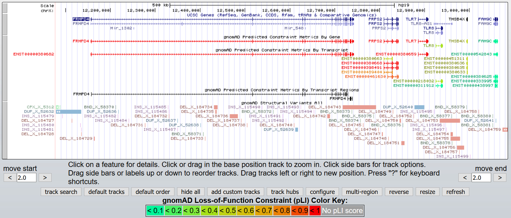
We would like to thank the Genome Aggregation Database Consortium for making these data available. We would also like to thank Christopher Lee, Maximilian Haeussler, Lou Nassar, Jairo Navarro, Robert Kuhn and Anna Benet-Pages for their effort in the creation of these tracks.
We have released a new video to the Browser's YouTube channel.
Browser Basics, Part Two — Configuring the Browser
This video is part of a three-part series that goes back to the Basics, designed to introduce new users to the Browser. Our previous videos have been directed either at experienced users who may have questions about how to do certain tasks, or serve as introductions to new features in the Browser. In this three-part series, we fill in the background with more basic information, though we expect experienced users to find some new things as well.
Today's release, Part Two, shows how to configure the Browser with special attention to how you might prepare a Browser session for export to a poster or paper. Examples include changing font size and screen width, removing blue guidelines, navigating quickly to nearby annotations and more.
The final installment will focus on more configuration features of the Browser and on navigating using DNA sequence. As with all our videos, a transcript is provided for those who wish to review the content before watching.
We are pleased to announce an update to the Ensembl gene annotation tracks to v99 for the following assemblies:
Thanks to Hiram Clawson and Lou Nassar of the UCSC Genome Browser group for their work in creating and releasing these tracks.
We have released a new video to the Browser's YouTube channel.
Browser Basics, Part One — Getting around in the Browser
This video is part of a three-part series that goes back to the Basics, designed to introduce new users to the Browser. Our previous videos have been directed either at experienced users who may have questions about how to do certain tasks, or serve as introductions to new features in the Browser. Here we fill in the background with more basic information, though we expect experienced users to find some gems as well.
Today's release, Part One, shows many ways to get to a chosen location in the Browser using accession names in a variety of formats: gene names, genomic coordinates, codon numbers, SNP rsIDs, RefSeq NM_ identifiers and more. As with all our videos, a transcript is provided for those who wish to review the content before watching.
Future installments will focus on configuration features of the Browser.
Rest in Peace, James Taylor of Galaxy. You will be missed.
In recent months, we have seen the beginning of the global effort against the coronavirus. Here at the UCSC Genome Browser, we have also been directing some work towards that front and will continue to do so.
This has brought new users to our site who may have previously been unfamiliar with this resource. The Genome Browser aims to facilitate genome research by offering data visualization, genome annotations, and other tools. We encourage anyone who would like to learn more to see our user guide.
With this in mind, we would like to announce a new COVID-19 Resources at UCSC landing page as well as the first release of novel coronavirus annotation data for the SARS-CoV-2 genome assembly browser released in early February. The SARS-CoV-2 genome browser includes displays of the virus's molecular evolution in other species and its further evolution during this human pandemic. We have also added multiple lung datasets to the UCSC Single Cell Browser. This information is made freely available to researchers everywhere, with the goal of advancing our knowledge of SARS-CoV-2 (COVID-19).
These latest data were primarily sourced from outside groups and include different kinds of information such as gene annotations, variant data, and locally produced multiple genome alignments.
Note: Genome Browser data is often referred to as 'tracks', and the term 'track' and 'data annotation track' can be used interchangeably.
More information on any of these data annotation tracks can be found by clicking on the names. This will lead to the track description page, which also allows for configuration of various display options. Additional information on how to use the UCSC Genome Browser can be found on our training page.
We would like to thank NCBI, UniProt, Nextstrain, the Sgourakis Research Group, Tomer Altman, and Jason Fernandes as well as the scientists from UCSC for providing these data.
The UCSC Genome Browser is funded by the NIH National Human Genome Research Institute. In addition to this funding, the SARS-CoV-2 assembly and data were made possible by generous individual donors including local donors Pat and Roland Rebele.
We are pleased to announce the release of a patch to the hg19 assembly that will introduce a new mitochondrial sequence, chrMT, to the assembly. We used GenBank sequence NC_001807 for chrM in hg19 and earlier, but the sequence preferred by the community is the revised Cambridge Reference Sequence (rCRS), NC_012920. The new chrMT is the rCRS, NC_012920. Patch sequences from GRCh37.p13 have also been added to hg19.
More information on how patch sequences are incorporated can be found on the Patching up the Genome blog post. The blog post contains details about the new /latest download directory on the downloads server. With the addition of new sequences to hg19, we can expect to see BLAT return more matches to the genome.
Also, with these patches, the hg19 genome is not optimal anymore for aligners. So we added an "analysis set" version of the hg19 genome fasta file to our bigZips directory, and indexes for BWA, Bowtie2, and Hisat2.
We would like to thank the Genome Reference Consortium for creating the patches to hg19. We would also like to thank Angie Hinrichs and Jairo Navarro at UCSC for implementing and testing the latest patch to hg19.
We are pleased to announce a new track, RefSeq Select+MANE, for the GRCh38/hg38 human assembly. This track is a combination of NCBI transcripts with the RefSeq Select tag, as well as transcripts with the MANE Select tag. The result is a track with a single representative transcript for every protein-coding gene. The track can be found as part of the NCBI RefSeq composite track.
RefSeq Select transcripts are chosen by an NCBI pipeline to be representative of every protein-coding gene. As part of the MANE project, however, RefSeq Select transcripts that have a 100% identical match to a transcript in the Ensembl annotation are given the MANE Select designation. In this way, MANE Select is a subset of RefSeq Select. It should be noted, however, that there are cases where RefSeq Select transcripts are replaced when a different MANE Select transcript is chosen. Once the MANE project is complete, RefSeq Select and MANE Select for human should be nearly the same.
In summary, this track provides a functional canonical gene set until the MANE set is complete. More information on this track and data can be found in the track description page, NCBI's RefSeq Select page, and the MANE page.
We would like to thank NCBI for releasing the RefSeq Select data, as well as the NCBI and Ensembl-GENCODE collaboration for MANE. We would also like to thank Max Haussler and Lou Nassar for the development and release of these tracks.
We are pleased to announce new GENCODE Gene annotation tracks, which correspond to Ensembl 99, for three assemblies: hg19/GRCh37, hg38/GRCh38, and mm10/GRCm38. For human, the GENCODE V33 annotations were mapped to hg38/GRCh38 and then back-mapped to the hg19/GRCh37 assembly. For all three assemblies, the gene sets contain the following tracks:
The hg38 and mm10 assemblies also include the following tracks that are not available on hg19:
Details on each release can be found on the GENCODE site. This includes statistics on each release.
We would like to thank the GENCODE project for providing these annotations. We would also like to thank Mark Diekhans and Lou Nassar for the development and release of these tracks.
We are happy to release the updated NCBI RefSeq Annotation Release 109.20190905 track on the Genome Browser. The NCBI RefSeq Genes composite track shows human protein-coding and non-protein-coding genes taken from the NCBI RNA reference sequences collection (RefSeq). This update adds more than 500 new gene entries to the collection of nearly 167,000 annotations. More information can be found on the track description pages for these composite tracks for hg19 and hg38.
We would like to thank NCBI and the RefSeq Annotation database for collecting and curating these data. We would also like to thank Hiram Clawson and Daniel Schmelter for their role creating, documenting, and reviewing these tracks.
We are pleased to announce a new track, Avada Variants, now available on hg19. Additionally, we have updated the Mastermind Variants track and expanded it to hg38.
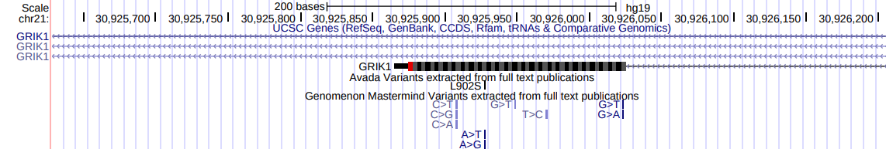
The Avada Variants track shows the genomic positions of variants in the AVADA database. AVADA is a database of variants built by machine learning software that analyzes full text research articles in PDF format to find genes and variants that look most relevant for genetic diagnosis.
Additional information can be found on the AVADA publication.
The Mastermind Variants track is now available for the hg38 assembly alongside hg19. Both tracks will now be updated on a quarterly cycle. The track is also now filtered to make the data more specific by removing longer non-indels that are not directly mentioned in the text.
Additional information on Mastermind Variants can be found in the track description page.
We would like to thank Gill Bejerano and Johannes Birgmeier for making the AVADA data available, as well as Genomenon for the Mastermind track. We would also like to thank Maximilian Haeussler, Lou Nassar, and the rest of the Genome Browser team for the creation of these tracks.
We are happy to announce the release of the 1000 Genomes Phase 3 Integrated Variant Calls from the International Genome Sample Resource (IGSR) for human (GRCh38/hg38). This track shows approximately 73 million single nucleotide variants (SNVs) and 5 million short insertions/deletions (indels) produced by the IGSR from sequence data generated by the 1000 Genomes Project in its Phase 3 sequencing of 2,504 genomes from 16 populations worldwide. The genomes of 2,504 individuals were sequenced using both whole-genome sequencing (mean depth = 7.4x) and targeted exome sequencing (mean depth = 65.7x). Sequence reads were aligned to the reference genome using alt-aware BWA-MEM (Zheng-Bradley et al.). Variant discovery and quality control were performed as described in (Lowy-Gallego et al.).
Variants were called on the autosomes (chromosomes 1 through 22) and on the Pseudo-Autosomal Regions (PARs) of chromosome X. Therefore this track has no annotations on alternate haplotype sequences, fix patches, chromosome Y, or the non-PAR portion (the majority) of chromosome X.
We would like to thank the IGSR for making these variant calls freely available. We would also like to thank Angie Hinrichs and Jairo Navarro for their efforts in creating and reviewing this track.
We are pleased to announce a new dbSNP pipeline, along with the first new dataset: dbSNP b153 for hg19 and hg38.
dbSNP has seen an explosive growth in recent releases, from roughly 324 million variants in build 150, to over 700 million variants in the latest build b153. In an effort to continue providing efficient access to these data, dbSNP has redesigned their architecture and data flow. We have also taken this opportunity to redesign our dbSNP ingestion pipeline. Below is a short summary of the UCSC changes brought forth by both dbSNP's redesign, as well as UCSC's new pipeline.
"SNPs" tracks were previously based on related mysql database tables, but the new bigDbSnp format is a bigBed file with extra columns that contains all necessary information to display the variant. An accompanying dbSnpDetails file contains additional data displayed in the item details page. Schemas are available for both bigDbSnp and dbSnpDetails.
dbSNP's redesign includes an important change to the representation of insertion/deletion variants (indels) in repetitive regions. Rather than annotating the minimal representation of the indel on the genome, dbSNP now expands the reference and alternate alleles to cover the entire repetitive region on the genome. Accordingly, we display the newly expanded regions, but use thin and thick lines to indicate the region of uncertain placement and the minimal size. For example, when there is a deletion of one base in a range of three identical bases, we draw a thin rectangle over the first two bases to show that there is uncertain placement, and a thick rectangle over the last base to show that one base is deleted from the range. Some indel variants have multiple alternate alleles. You may notice some thick but gray rectangles when there are deletion alleles of different sizes.
Below is an image from an example session which displays an instance of this new visualization. In a repetitive region with 11 As, the previous dbSNP track, dbSNP 151, displays three variants (blue). Two of them include a single base insertion, but are arbitrarily placed one base apart from each other. There is also a single-base deletion. In release 153, dbSNP has clustered them into a single variant spanning the 11 As on the genome. We indicate the uncertainty of placement within the 11 As with a thin line across the entire repeat, and a thick gray rectangle over the final base to indicate that one base may be deleted (orange). At the right end there is a tall line to indicate an insertion(s).
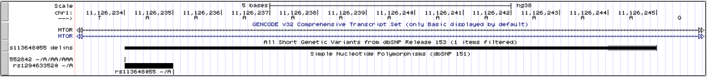
dbSNP b153 is composed of 5 subtracks. Four of these closely correlate to our previous SNP releases; a new subtrack displays mappings with inconsistent coordinates in dbSNP download files:
While processing the information downloaded from dbSNP, UCSC annotates some properties of interest. These are noted on the item details page, and may be used to include or exclude affected variants. These UCSC notes (currently 26) can be divided into three categories:
With the bigDbSnp format, these data will no longer be available as a database table dump. The complete data can be found across two separate files in our download server, a bigBed file (bigDbSnp) for hg19 and hg38, and a shared secondary details file which holds additional variant details.
Additional information including visibility display, a complete list of UCSC notes, and a methods section can be found in the track description page.
We would like to thanks the dbSNP group at NCBI for providing access to these data. We would also like to thank Angie Hinrichs and the UCSC Genome Browser team for their efforts on this release.
We are pleased to announce the release of the new EPDnew Promoters track for human (hg38 and hg19) and mouse (mm10) assemblies. These tracks represent the experimentally validated promoters generated by the Eukaryotic Promoter Database, based on gene transcript models obtained from multiple sources (HGNC, GENCODE, Ensembl, RefSeq), then validated using data from CAGE and RAMPAGE experimental studies obtained from FANTOM 5, UCSC, and ENCODE. Peak calling, clustering and filtering based on relative expression were applied to identify the most expressed promoters and those present in the largest number of samples.
We would like to thanks Philipp Bucher and the EPD team at the Swiss Bioinformatics Institute for providing these data, and Kate Rosenbloom and Jairo Navarro at UCSC for creating and reviewing these tracks.
We are pleased to announce a new Enhancer-Gene Map for the mouse mm10 assembly. This track set presents enhancer-promoter interactions predicted from correlation of enhancer-associated chromatin signals and gene expression across tissue stages, based on histone modification (ChIP-seq) and transcription (RNA-seq) assays and analysis performed in the ENCODE project as part of the Mouse Developmental Series (part of ENCODE phase 3). Data underlying this track are presented in the Histone Modifications and Chromatin State tracks, part of the ENCODE Regulation supertrack. The promoters in this track were derived from experimentally validated promoters provided by the Eukaryotic Promoter Database (EPDNew). A more complete presentation of this annotation can be found in the EPDnew Promoters track.
We would like to thank Iros Barozzi and colleagues in the Environmental Genomics and Systems Biology Division at the Lawrence Berkeley Laboratory, and David Gorkin and Yanxiao Zhang at the Ren lab (UCSD/Ludwig Institute for Cancer Research) and the ENCODE Consortium for providing these data and assisting with track development at UCSC. We also thank Kate Rosenbloom and Jairo Navarro at UCSC for creating and reviewing these tracks.
We are glad to announce an update to the LOVD track for human (GRCh37/hg19). The LOVD track is now a composite track with the following two subtracks:
With this new update, the option is now available to only show the short variants and exclude the long variants, or vice versa.
We would like to than Maximillian Haussler and Jairo Navarro for creating and testing these changes. We would also like to thank the LOVD team, Ivo Fokkema, Peter Taschner, Johan den Dunnen, and all LOVD curators who gave permission to show their data.
We are happy to announce that Hi-C heatmaps can now be used to visualize custom Hi-C data as Custom Tracks and Track Hubs. This heatmap visualization shows interaction scores for contact sequencing methods which may indicate enhancer-promoter interactions. Supporting users' Hi-C data is the next step in our support for 3C sequencing data, following the popular Hi-C tracks on hg19 and hg38 as well as the Interact format used in GeneHancer for low-density interactions.
Information and examples of displaying your own Hi-C data can be found on the hic track format help page.
We are pleased to announce the release of an expanded CRISPR Targets track for the mouse (GRCm38/mm10) assembly. This track shows the DNA sequences targetable by CRISPR RNA guides using the Cas9 enzyme from S. pyogenes (PAM: NGG) over the entire mouse genome. CRISPR target sites were annotated with predicted specificity (off-target effects) and predicted efficiency (on-target cleavage) by various algorithms through the tool CRISPOR. The target sequence of the guide is shown with a thick (exon) bar. The PAM motif match (NGG) is shown with a thinner bar.
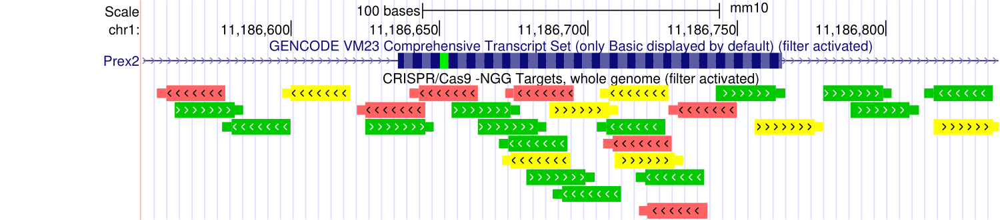
We would like to thank Maximilian Haeussler, Hiram Clawson, and Lou Nassar for their effort creating and releasing this data track.
We are pleased to announce the new ENCODE 3 Regulation super-track for the mouse (GRCm38/mm10) assembly. The ENCODE project has established an epigenomic resource for mammalian development, profiling a diverse panel of mouse tissues at eight developmental stages from 10.5 days post conception until birth. The ENCODE 3 Regulation super-track is composed of the three following composite tracks:
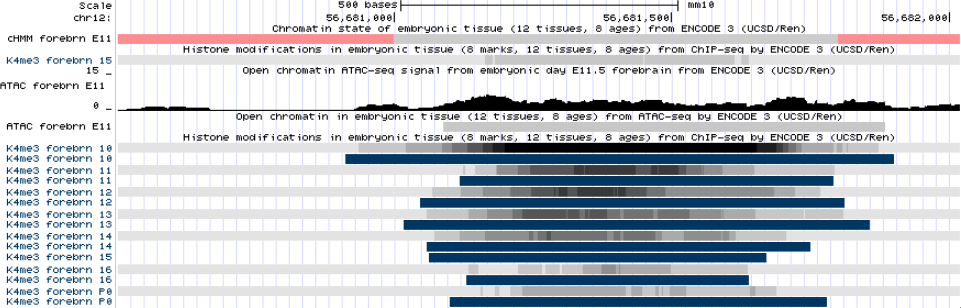
Thanks to David Gorkin and Yanxiao Zhang at the Ren lab (UCSD/Ludwig Institute for Cancer Research) and Iros Barozzi of the Environmental Genomics and Systems Biology Division at the Lawrence Berkeley National Laboratory for providing these data and assisting with track development at UCSC. We would also like to thank Kate Rosenbloom, Conner Powell and the UCSC Genome Browser team for their efforts on this release.
We are pleased to announce an update to the Locus Reference Genomic (LRG) regions track for human, (GRCh37/hg19) and (GRCh38/hg38). Each LRG record also includes at least one stable transcript on which variants may be reported. These transcripts appear in the LRG Transcripts track in the Gene and Gene Predictions track section.
This track was produced at UCSC using LRG XML files. Thanks to LRG collaborators for making these data available. We would also like to thank Angie Hinrichs and Jairo Navarro for creating and releasing these tracks.
We are pleased to announce the new gnomAD Variants super-track for the Human (GRCh38/hg38) assembly. This super-track currently includes gnomAD v3 and gnomAD v2.
gnomAD v3 contains variants from 71,702 whole genomes (and no exomes), all mapped to the GRCh38/hg38 reference sequence. For more information on gnomAD v3, see the following blog post.
gnomAD v2 is a composite of gnomAD Genome and Exome Variants v2.1. These two tracks contain variants from 125,748 exomes and 15,708 whole genomes, all mapped to the GRCh37/hg19 reference sequence and lifted to the GRCh38/hg38 assembly. For more information on gnomAD v2.1, see the following blog post.
Additional information, display conventions, and data access can be found on the track description page.
We would like to thank the Genome Aggregation Database Consortium for making these data available. We would also like to thank Kate Rosenbloom, Angie Hinrichs, and Lou Nassar for their work on this release.
We are pleased to announce the release of the Illumina Global Diversity Array (GDA) for human (GRCh37/hg19). This track is included in the SNP/CNV composite track under the Variation group.
The Global Diversity Array-8 v1.0 BeadChip includes coverage of the ACMG 59-gene clinical research variants and multi-ethnic, genome-wide content. The GDA is the commercial version of the array chosen by the All of Us Research Program and is designed to capture a wider range of the world's populationsthan traditional microarrays.
We would like to thank Jay Kaufman and John Picuri at Illumina for providing the data. We would also like to thank Brian Raney and Jairo Navarro at UCSC for creating and reviewing the tracks for hg19.
We are pleased to announce two new Hi-C heatmap tracks now available on the Genome Browser for hg19 and hg38. They can be configured as square, triangular, or arc interactions. These heatmaps will soon be available to visualize custom data for Chromosome Conformation Capture (3C), Hi-C, and other high-density interaction based sequencing methods. This feature will be the next evolution of our support for 3C sequencing data, following the popular Interact format used in GeneHancer, which was made for low-density interactions.
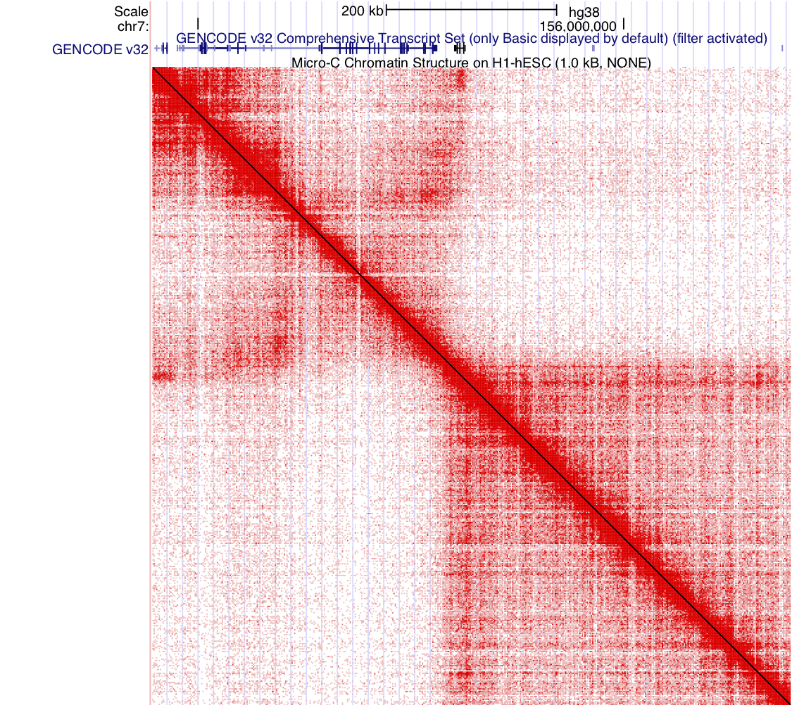
We are pleased to announce the new Platinum Genomes VCF Tracks. These variant tracks offer deeply sequenced and validated VCFs on both hg19 and hg38. These data were derived from consensus analysis of a 17-member family pedigree to reduce potential error. You can view the tracks below:
We are pleased to announce the release of updated GENCODE Genes annotation tracks for both the hg38/GRCh38 and mm10/GRCm38 assemblies corresponding to the Ensembl 98 release.
The following table provides statistics for the human V32 and mouse VM23 releases derived from the GTF files that contain annotations only on the main chromosomes. More information on how these statistics were generated can be found on the GENCODE site.
| Genes & Transcripts | human V32 Release Stats | mouse V23 Release Stats |
|---|---|---|
| Protein-coding Genes | 19,965 | 21,849 |
| Protein-coding transcripts | 83,986 | 59,188 |
| Long non-coding RNA genes | 17,910 | 13,201 |
| Small non-coding RNA genes | 7,576 | 6,108 |
| Psuedogenes | 14,749 | 13,681 |
More details about these new GENCODE Genes tracks can be found on the respective GENCODE description pages. We would like to thank the GENCODE team and thank Brian Raney, Mark Diekhans, Jairo Navarro, and Conner Powell at UCSC for their work on this track.
A new "group auto-scale" option is now available for signal tracks collected together in composites. The original auto-scale setting, which is still available, acts to auto-scale each track individually inside a composite group. With the new "group auto-scale" setting, all of the tracks within the composite will scale to the track with the highest auto-scale value viewed in the region.
For example, below is a side-by-side image of two views of the same data from a selection of cell lines within a composite of related RNA-seq experiments. On the left is the original "auto-scale to data view" setting, where each track is auto-scaled to appear at each track's highest value. And on the right is the new "group auto-scale" setting for the same RNA-seq data where all tracks are scaled against the one track in the region that has the highest value (67215 for IMR9 cell TAP + 1).
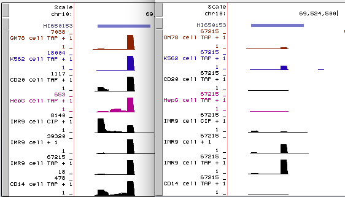
While the original auto-scale setting on the left has the advantage of showing any available data calibrated to each track's maximum, the new "group auto-scale" setting on the right quickly draws attention to the track with the highest signal within the composite group.
The new setting can be found for signal tracks within a composite group under the "Data view scaling:" options.
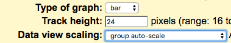
We are pleased to announce the release of an expanded CRISPR Targets track for the human hg38/GRCh38 assembly. This track shows the DNA sequences targetable by CRISPR RNA guides using the Cas9 enzyme from S. pyogenes (PAM: NGG) over the entire human genome. CRISPR target sites were annotated with predicted specificity (off-target effects) and predicted efficiency (on-target cleavage) by various algorithms through the tool CRISPOR. The target sequence of the guide is shown with a thick (exon) bar. The PAM motif match (NGG) is shown with a thinner bar.
We would like to thank Maximilian Haeussler, Hiram Clawson, and Conner Powell for their effort creating and releasing this data track.
We are pleased to announce the release of a GRC Incident track for both the Chicken (galGal6) and Zebrafish (danRer11) assemblies. These tracks show locations in the Chicken and Zebrafish assemblies where assembly problems have been noted or resolved, as reported by the Genome Reference Consortium (GRC).
Data for these tracks are extracted from the GRC incident database from the specific species *_issues.gff3 file. The tracks are updated daily from the GRC server to incorporate new updates.
Thanks to Hiram Clawson and Conner Powell for the development and release of these tracks.
A genome browser is now available for the rhesus monkey (Macaca mulatta) assembly released in Feb. 2019 by the Genome Institute at Washington University School of Medicine (Mmul_10).
The UCSC Genome Browser is proud to announce its Vertebrate Genomes Project assembly hub. The Vertebrate Genomes Project (VGP) aims to generate near error-free reference genome assemblies of all 70,000 extant vertebrate species.
As of now, the VGP assembly hub includes 24 vertebrate assemblies. See our assembly statistics page for specific information (gap counts, masking percent, genome size, etc.) on each individual assembly. All assemblies have a combination of Genome Browser generated data tracks, as well as external data. These include:
These tracks also include individual track description pages with a summary of their contents or results where applicable. Such as a summary of all RepeatMasker elements found in the Canada lynx or gene count and genome coverage of NCBI genes for the platypus.
All data are available from the UCSC download servers. For information on how to download specific assembly data, refer to the assembly gateway page once the hub is connected. Here is an example of the gateway page for the greater horseshoe bat. This page also includes information on starting a local BLAT server for the assembly.
We would like to thank the Vertebrate Genomes Project and the Genome 10k Project for their sequencing efforts and making these genomes available. We would also like to thank Hiram Clawson and Luis Nassar from the Genome Browser team for the development and release of this assembly hub.
A genome browser is now available for the Equus caballus assembly released in Jan. 2018 by the University of Louisville (EquCab3.0).
We are pleased to announce the release of the new GENCODE Gene annotation tracks, which corresponds to the Ensembl 97 release for human assemblies, hg19/GRCh37 and hg38/GRCh38. All GENCODE V31 annotations are available for hg38/GRCh38, and the annotation release was back-mapped to the hg19/GRCh37 assembly. For both hg19 and hg38, the GENCODE v31 gene set contains the following tracks:
The hg38 assembly also includes the following tracks that are not available on hg19:
Thanks to Mark Diekhans and Jairo Navarro for the development and release of these tracks.
We are happy to announce the release of the most up-to-date GENCODE M22 gene set for the mouse genome (mm10/GRCm38).
The GENCODE Genes track (version M22, June 2019) shows high-quality manual annotations merged with evidence-based automated annotations across the entire mouse genome. This track includes 5 subtracks: a basic gene set, a comprehensive gene set, a pseudogene set, a high confidence pseudogene set, and a set of polyA site locations. You can read more about the VM22 by navigating there from the All GENCODE supertrack or by going directly to the track description page.
Thanks to Mark Diekhans and Daniel Schmelter for their work developing and releasing this track.
We are pleased to announce the release of a new set of TransMap (V5) tracks for 94 different assemblies.
The TransMap tracks are an attempt to map features, such as mRNAs, ESTs, and gene annotations from one organism to another through pairwise, whole-genome alignments. These new TransMap tracks are:
You can read more about how these tracks were created on the track description page for the hg38/GRCh38 version of these tracks. The TransMapV4 data can still be found in our download server.
Thanks to Mark Diekhans and Lou Nassar for their work in creating and releasing these tracks.
We are pleased to announce the release of an expanded CRISPR Targets track for the human hg19/GRCh37 assembly. This track shows the DNA sequences targetable by CRISPR RNA guides using the Cas9 enzyme from S. pyogenes (PAM: NGG) over the entire human genome. CRISPR target sites were annotated with predicted specificity (off-target effects) and predicted efficiency (on-target cleavage) by various algorithms through the tool CRISPOR.
We would like to thank Maximilian Haeussler, Hiram Clawson, and Daniel Schmelter for their effort creating, developing, and releasing this data track.
We are pleased to announce the DGV Gold Standard track for human (hg19/GRCh37). This track displays copy number variants (CNVs), insertions/deletions (InDels), inversions and inversion breakpoints annotated by the Database of Genomic Variants (DGV). The initial criteria for the Gold Standard set require that a variant be found in at least two different studies and found in at least two different samples. After filtering out low-quality variants, the remaining variants are clustered according to 50% minimum overlap, and then merged into a single record. Gains and losses are merged separately.
The DGV Gold Standard track utilizes a boxplot-like display to represent the merging of records. The highest ranking variant in the cluster defines the inner "box", while the outer lines define the outermost start and stop coordinates of the CNV. In this way, the inner box forms a high-confidence CNV location and the thin connecting lines indicate confidence intervals for the location of the CNV.
We would like to thank Jeff MacDonald and the Database of Genomic Variants group for providing guidance and these data. We would also like to thank Christopher Lee and Conner Powell as well as the entire UCSC Genome Browser team for creating and releasing this track.
Genome browsers are now available for the Bos taurus assembly released in Apr. 2018 by the USDA Agricultural Research Service (ARS-UCD1.2), and the Papio anubis assembly released in Apr. 2017 by the Human Genome Sequencing Center (Panu_3.0).
The UCSC Genome Browser is pleased to announce its new JavaScript Object Notation (JSON) Application Programming Interface (API). The API provides direct access to different data including annotations and sequence data for both native Genome Browser assemblies as well as hubs.
Some functions possible with the API include:
See our help page for a complete list of what data can be accessed, as well as as examples of how to access the data.
The UCSC Genome Browser would like to thank Hiram Clawson and Lou Nassar for the development and testing of this new feature.
We are pleased to announce the GDC Cancer mutations track for human (GRCh38/hg38). This track shows the genomic positions of somatic variants found through whole genome sequencing of tumors as part of The Cancer Genome Atlas (TCGA) by the National Cancer Institute, made available through the Genomic Data Commons Portal. The data shown is sometimes called the "Pan-Cancer dataset", a collection of thirty-three TCGA projects processed in a uniform way.
With the release of the GDC Cancer track, we are introducing a new lollipop display mode, available when this track is in 'full' or 'squish' mode. These variants can be shown in two display modes:
We would like to thank the Genomic Data Commons Portal for making the TCGA data available on their web site. We would also like to thank Brian Raney and Jairo Navarro at the UCSC Genome Browser for creating and testing this track and the new lollipop display mode.
We are pleased to announce two new ENCODE 3 transcription factor binding site track sets for human (GRCh37/hg19, GRCh38/hg38). These track sets show regions of transcription factor binding derived from a large collection of ChIP-seq experiments performed by the ENCODE project between February 2011 and November 2018.
The ENCODE TF ChIP-seq data were processed using the
ENCODE Transcription Factor ChIP-seq Processing Pipeline to generate peaks of TF binding.
Peaks from 1264 experiments (1256 in hg38) representing 338 transcription factors (340 in hg38) in
130 cell types (129 in hg38) were used to generate these two track sets.
An example of these two track sets is shown in the following sessions where CTCF binds to the MYC Proto-Oncogene
across a few selected cell types. CTCF is a transcription factor identified as a repressor of MYC
shown to inhibit cell growth (Qi et al., 2002).
Thanks to the ENCODE Consortium, the ENCODE ChIP-seq production laboratories, and the ENCODE Data Coordination Center for generating and processing the TF ChIP-seq datasets. The ENCODE accession numbers of the constituent datasets are available on the peak details page as links in the Clusters tracks and in the track title for the Peaks tracks. Special thanks to Henry Pratt, Jill Moore, Michael Purcaro, and Zhiping Weng, PI, at the ENCODE Data Analysis Center (ZLab at UMass Medical Center) for providing the peak datasets, metadata, and guidance developing these track sets. Thanks to Kate Rosenbloom and Conner Powell of the UCSC Genome Browser group for their work in creating and releasing these track sets.
A genome browser is now available for the Chinese Hamster Ovary cell line assembly released in June 2017 by the Eagle Genomics Ltd (CHOK1S_HZDv1).
A genome browser is now available for the Felis catus assembly released in November 2017 by the Genome Sequencing Center (GSC) at Washington University (WashU) School of Medicine (Felis_catus_9.0).
We are pleased to announce the release of the GENCODE Genes VM20 track for the Mouse assembly (GRCm38/mm10). In this GENCODE Genes update, we have made the ENSMUST* IDs the default IDs and have added the GENCODE pseudogenes to the knownGene tables.
More details about the GENCODE Genes VM20 track can be found on the GENCODE Genes track description page.
We would like to thank the GENCODE Project for providing the data. The creation of this track was made possible thanks to Brian Raney, Mark Diekhans, and Conner Powell.
We are pleased to announce the release of the Genomenon Mastermind Variants track for the hg19/GRCh37 assembly. This track is composed of variants found in full-text scientific publications collected by Genomenon Mastermind. Mastermind uses software that searches for disease-gene-variant associations in the scientific literature to generate a commercial database.
Genomic locations of variants are labeled with the nucleotide change (C>A) where one can hover over the features to see the gene impacted, the specific amino acid change, and the related support scores (SOD1:A2E - 3/3/3). By clicking an item a link titled "Protein change and link to details" provides access to the respective Mastermind variant database page for further information. More information about this track and its display can be found on the track description page.
We would like to thank Mark Kiel, Steve Schwartz and Clayton Wheeler from Genomenon for making this data available as well as Max Haeussler, Conner Powell and the rest of the UCSC Genome Browser team.
Genome Browser users can now download custom track data from the Session Management page. You can backup Custom Tracks from a particular session by clicking into a named session with uploaded custom tracks, returning to the Session Management page, then clicking the button next to "Save Custom Tracks". You will be directed to a review page where you will be able download your custom track data. Read more in the "How to backup text-based Custom Track data to a file" section of the Session User Guide.
We are pleased to announce the addition of GRCh38 patches to the GRCh38/hg38 database. Without a release date for the next coordinate-changing assembly, incorporating these sequences is an important step towards providing the most up to date human assembly.
This release includes new tracks visualizing patch sequences; the Fix Patches track represents error corrections, and the Alt Haplotypes track represents novel patches (alt loci).
Additional information can be found on our Genome Browser blog including a specific section detailing what changes to expect.
The number of human assembly patch sequences is quickly growing. This is primarily due to alternative haplotypes (_alt) sequences, though fix sequences (_fix) are also being introduced. The fix patches reset from GRCh37.p13 to GRCh38 as they were integrated into the assembly.
We would like to thank Angie Hinrichs and Lou Nassar for their work on this release.
We are pleased to announce the release of the Tabula Muris superTrack for mouse, mm10/GRCm38. These tracks incorporate single cell FACS RNA-seq data where 44,779 cells were assigned to single cell clusters, representing a cell or tissue type. The Tabula Muris superTrack contains the following three composite tracks:
More information about these tracks and their display can be found on the track description page, and more information about the Tabula Muris dataset can be found at the CZI Biohub. We would like to acknowledge our CZI contacts that spent quite a bit of time to get the data to us: Angela Pisco, James Webber, and Joshua Batson. Track creation was done by Max Haeussler and tested by Jairo Navarro at the UCSC Genome Browser. WiggleTools, written by Daniel Zerbino, and IntronProspector, written by Mark Diekhans, were used in the creation of these tracks. Track hubs were written to a large extent by Brian Raney and colleages at the UCSC Genome Browser.
We are pleased to announce the release of a new gene annotation track for the GRCh38/hg38 and GRCh37/hg19 assemblies based on data from The Human Gene Mutation Database (HGMD) and NCBI's Reference Sequence Database (RefSeq). The alignments and coordinates for these tracks are provided by RefSeq. The NCBI RefSeq HGMD tracks show only RefSeq Curated transcripts mentioned in the public version of the Human Gene Mutation Database. More details about the tracks, their construction, and how to access their underlying data can be found on the track description pages by clicking into an item after loading the tracks with the following links:
A huge thank you to the HGMD group at Cardiff University, Frank Schacherer and Rupert Yip from QIAGEN, Anna Benet-Pages and Andreas Laner from The Medizinisch Genetisches Zentrum (MGZ), Max Haeussler, Conner Powell, and many others from the UCSC Genome Browser staff for bringing this track to life.
The UCSC Genome Browser is proud to announce an update to the Ensembl gene annotation tracks, from v92 to v95, for the following assemblies:
Thanks to Hiram Clawson and Conner Powell of the UCSC Genome Browser group for their work in creating and releasing these tracks.
We are pleased to announce new comparative genomics tracks for each of the following organisms: D. melanogaster (fruit fly), C. elegans (roundworm), and G. gallus (chicken). These composite tracks display multiple alignments (multiZ) and measurements of evolutionary conservation (phastCons and phyloP) across different species. For more details, visit the track description pages below.
The UCSC Genome Browser would like to thank Hiram Clawson, Conner Powell, Lou Nassar, and Daniel Schmelter for their efforts in creating these tracks.
We are pleased to announce the release of our "SNP" tracks derived from NCBI's dbSNP Human Build 151 data, available on the two most recent human assemblies, GRCh38/hg38 and GRCh37/hg19. This release will again double in size to about 650 million variants compared to the previous 150 release (300 million for hg38, and over 200 million for hg19).
There are four SNP tracks available as part of this release:
The graph above shows the increasing growth of variants in the All SNPs track, by dbSNP release number, and the stagnant growth of the Common SNPs track, essentially stuck at 14.8 million variants.
By default, only the Common SNPs (151) are visible in the browser; other tracks must be made visible using the track controls. All four SNP tracks reside in the "Variation" group category for the hg19 and hg38 genome browsers.
We would like to thank Angie Hinrichs, Robert Kuhn, and Jairo Navarro for their work on creating and analyzing the data. We'd like to thank the dbSNP group at NCBI for providing access to the data.
A genome browser is now available for the Gallus gallus assembly released in March 2018 by the Genome Reference Consortium (GRCg6a).
A genome browser is now available for the Pongo pygmaeus abelii assembly released in January 2018 by the University of Washington (Susie_PABv2).
We are pleased to announce the release of the GENCODE Genes v29 track for the Human (GRCh38/hg38) assembly. In this GENCODE Genes update, we have made the ENST* IDs the default IDs and have added the GENCODE pseudogenes to the knownGene tables.
More details about the GENCODE Genes v29 track can be found on the GENCODE Genes track description page.
We would like to thank the GENCODE Project for providing the data. The creation of this track was made possible thanks to Brian Raney, Mark Diekhans, and Jairo Navarro.
We are pleased to announce the release of another video tutorial, Saving and sharing sessions. The Saved Sessions feature of the Browser has been around for quite some time, but many of our users have not made full use of it. It offers a great way to keep track of your thinking on a particular topic and has also been discussed in our blog.
This video shows how to create an account, how to save sessions for easy future access, how to share sessions with colleagues and how to make a public session that you can share with all Genome Browser users. The video comes with a full transcript
Links to all of our tutorials are available on our training page and on our YouTube channel. At the YouTube channel and in the transcript, quick links offer access to the video at key points.
Produced at UCSC by Robert Kuhn and David Gibson.
The UCSC Genome Browser is proud to announce a new BLAT feature: Search ALL. Generally, BLAT is used to find locations of sequence similarity in a single target genome or to determine the exon structure of a mRNA. The Search ALL feature allows users to search the genomes of the default assemblies for all of our organisms at once. The results page displays an ordered list of all our organisms and their similarity to your query sequence. The results are ordered so that the organism with the most hits is at the top, indicating which region(s) of that organism has the greatest similarity with your query sequence. One example of how a user might employ the new Search ALL feature is to determine what organism an unknown sequence comes from.
See the following link for examples and more information on the
Using BLAT alignments
and
BLAT FAQs.
Thanks to Galt Barber and Conner Powell for development and testing of this new feature.
The UCSC Genome Browser is pleased to announce enhancements to our interact track format as well as our first native track using this format: GeneHancer. GeneHancer is a database of human regulatory elements (enhancers and promoters) and their inferred target genes. These elements were created from over 1 million regulatory elements obtained from seven genome-wide databases--more information is available in the methods. This track is available on the hg19 and hg38 assemblies.
Interact format now supports an inverted view (hills instead of valleys), pack and squish visibility modes, and a cluster mode which combines directional interactions with the same target or source into a single item. For additional information see our help docs.
Thanks to Simon Fishilevich, Marilyn Safran, Naomi Rosen, and Tsippi Iny Stein of the GeneCards group and Shifra Ben-Dor of the Bioinformatics Core group at the Weizmann Institute for providing this data and assisting with track development. Thanks to Kate Rosenbloom, Max Haeussler, and Luis Nassar of the UCSC Genome Browser for development and testing.

We are pleased to announce the release of four new assemblies now available in the Genome Browser: chimpanzee, sheep, African malaria mosquito, and garter snake.
Bulk downloads of the sequence and annotation data may be obtained from the Genome Browser FTP server or the Downloads page. Please observe the conditions of use when accessing and using these data sets. The annotation tracks for this browser were generated by UCSC and collaborators worldwide. See the Credits for a detailed list of the organizations and individuals who contributed to these releases.
The UCSC Genome Browser is proud to announce a new method to visualize interactions between regions of the genome. The interact track format (and the binary-indexed bigInteract version) displays pairwise interactions as arcs or half-rectangles connecting two genomic regions on the same chromosome. Cross-chromosomal interactions can also be represented in this format. This format is useful for displaying functional element interactions such as SNP/gene interactions, and is also suitable for low-density chromatin interactions, such as ChIA-PET, and other use cases with a limited number of interactions on the genome. It is not suitable for high-density chromatin data such as Hi-C, but we are working on another new visualization to enable such display. Stay tuned...
See the following link for examples and more information on the interact and bigInteract formats.
Thanks to Kate Rosenbloom, Brian Raney, and Jairo Navarro for the development and testing of this new track format.
The UCSC Genome Browser is proud to announce an update to the Ensembl gene annotation tracks, from v91 to v92, for the following assemblies:
Thanks to Hiram Clawson, Chris Lee, and Jairo Navarro of the UCSC Genome Browser group for their work in creating and releasing these tracks.
We are pleased to announce the release of a new DECIPHER variants track available for human, GRCh37/hg19. The entries in the DECIPHER SNVs track are colored according to the estimated pathogenicity of the variant. Entries are colored:
We are happy to announce the patch release 13 is available for the GRCh37/hg19 assembly. This is a minor release of GRCh37 that does not disrupt the coordinate system in the reference sequence GRCh37. All but four patch scaffolds from patch releases 1-12 were retained.
Between patch release 12 and patch release 13:
Total patch scaffolds in this patch release: 204
Thanks to Hiram Clawson and Jairo Navarro of the UCSC Genome Browser group for their work in creating and releasing these tracks.
We are happy to announce the release of the Genome Aggregation Database (gnomAD) for the human (GRCh37/hg19) assembly. This release consists of two callsets: variants from 123,136 exomes and 15,496 whole genomes of unrelated individuals sequenced as part of various population-genetic and disease-specific studies collected by the Genome Aggregation Database (gnomAD), release 2.0.2.
For more information on the processing pipeline and population annotations, see the following blog post and the 2.0.2 README. Thanks to the Genome Aggregation Database Consortium for making this data available. The data is released under the ODC Open Database License (OBdL) as described here. Special thanks to Jonathan Casper and Jairo Navarro for their efforts in creating and releasing these tracks.
We are pleased to announce the release of an updated UCSC Genes track for the Mouse (GRCm38/mm10) assembly. The new release has 63,814 total transcripts, compared with 63,759 in the previous version. The total number of canonical genes has decreased from 33,079 to 32,989. Comparing the new gene set with the previous version:
More details about the new UCSC Genes track can be found on the UCSC Genes track description page.
Many thanks to Brian Raney and Jairo Navarro for their work on this track.
We are pleased to announce the release of the updated GENCODE Gene annotation tracks, which corresponds to the Ensembl 92 release for human assemblies, hg19/GRCh37 and hg38/GRCh38. All GENCODE V28 annotations are available for hg38/GRCh38, and the annotation release was back-mapped to the hg19/GRCh37 assembly. For both hg19 and hg38, the GENCODE v28 gene set contains the following tracks:
The hg38 assembly also includes the following tracks that are not available on hg19:
Thanks to Mark Diekhans and Jairo Navarro for the development and release of these tracks.
We are pleased to announce the release of a new set of gene annotation tracks for the hg19/GRCh37, hg38/GRCh38, rn6/Rnor_6.0, sacCer3/R64, ce11/WBcel235, danRer10/GRCz10, danRer11/GRCz11, xenTro7/Xtropicalis_v7, xenTro9/Xenopus_tropicalis_v9.1 and dm6/Release 6 plus ISO1 MT assemblies based on data from NCBI's Reference Sequence Database (RefSeq). For all of these tracks, the alignments and coordinates are provided by RefSeq. These tracks are organized in a composite track that includes:
The new composite track also includes a "UCSC RefSeq" track that is based on our original "RefSeq Genes" track. As with before, this UCSC track is a result of our realignments of RefSeq RNAs to the genome, which means that there may be some cases where the annotations differ from those in the new NCBI RefSeq tracks. Also note that the Predictions subtrack is unavailable for the following assemblies: hg19, dm6, ce11, and sacCer3.
More details about these tracks, their construction, and how to access their underlying data can be found on this blog post.
A huge thank you to Terence Murphy from the RefSeq group and to Hiram Clawson, Angie Hinrichs, Christopher Lee and many others from the UCSC Genome Browser staff for bringing this track to life.
We are pleased to announce a new tool in the UCSC Genome Browser:
The Track Collection Builder (My Data > Track Collection Builder) is a tool that allows multiple tracks to be copied and grouped together into one composite track or "collection". A composite track can be thought of as a container for grouping a set of similar-type annotation tracks. Once grouped, settings (e.g., track height, graph color, overlay views) can be applied to all sub-tracks at once. Currently, supported data types are limited to continuous graphing data (wiggle, bigWig, and bedGraph).
The Track Collection Builder is pictured below - note the left and right panes. The left pane, "Available Tracks" displays tracks that are available to add to a new collection. The first folder, "Visible Tracks" displays all supported tracks that are currently seen in the browser (i.e., not set to "hide" visibility). Below that are expandable folders which show selectable tracks from all other browser categories, regardless of browser visibility. To add custom tracks or tracks from hubs, first load them into the browser and then add them to a collection.
The right pane, "Collected Tracks" displays current collections. In the image below, two tracks (which are currently visible in the browser) have been added to a new collection. In the lower part of the image, the browser graphic is shown displaying this collection (highlighted in green). Below the collection are the two original tracks ("My Custom Track" and the native GC Percent track). Note that the two original tracks have been copied into the new collection, where they are now grouped sub-tracks.
Below are several new features which are detailed in the detailed in the help guide:
See also: Quick Demo Video of the Track Collection Builder

A genome browser is now available for the Petromyzon marinus assembly released in December 2017 by the University of Kentucky (Pmar_germline 1.0, UCSC version petMar3).
We have released a new video demonstrating the visibility controls in the Browser. In our Browser training workshops we are often asked about the meaning of the track controls: squish, dense, pack and full. In this tutorial we describe the controls for BED, wiggle and conservation tracks. There is also a discussion of visibility control in composite tracks (2-level nesting) and supertracks (3-level). This brings to 16 the number of video tutorials available on our YouTube channel. Most are accompanied by a transcript, via a link on the video itself and from our training page.
We thank Robert Kuhn and David Gibson for video production.
Have you ever wanted to use 1 instead of chr1 to search for a chromosome position?
The following assemblies now support a new feature for matching different chromosome aliases. Equivalent entries only exist in the new table, chromAlias, when an exact sequence match has been verified. This feature is limited to searching coordinates, it is not yet supported for custom tracks.
For example, for felCat8, aliases that
now map to chrA2 are NC_018724.2, CM001379.2, and A2. Search terms such as
CM001379.2 133,978,000 134,105,980 will be equivalent to
chrA2 133,978,000 134,105,980.
We have released a new video demonstrating the in-silico PCR tool (isPCR). This tutorial shows how to use a pair of primers to amplify either DNA or RNA templates for human or mouse genomes and to visualize the results on the Genome Browser. For other genomes, only DNA may serve as a template. This brings to 15 the number of video tutorials available on our YouTube channel. Most are accompanied by a transcript, via a link on the video itself and from our training page.
We thank Robert Kuhn and David Gibson for video production.
The UCSC Genome Browser has released updated Ensembl gene annotation tracks, from v89 to v90, for the following assemblies:
The UCSC Genome Browser has also released updated Ensembl gene annotation tracks, from v89 to v91, for the following assemblies:
A new 30-way comparative genomics track has been added to the human GRCh38/hg38 browser. This composite track displays multiple alignments (Multiz) and measurements of evolutionary conservation (phastCons and phyloP) for 30 species (27 primates). Developer: Hiram Clawson, UCSC Genome Browser.
Please see the 30-way Multiz & Conservation track description page for assembly details of participating assemblies:
Human, chimp, bonobo, gorilla, orangutan, gibbon, rhesus, crab-eating macaque, pig-tailed macaque, sooty mangabey, baboon, green monkey, drill, proboscis monkey, angolan colobus, golden snub-nosed monkey, black snub-nosed monkey, marmoset, squirrel monkey, white-faced sapajou, ma's night monkey, tarsier, mouse lemur, coquerel's sifaka, black lemur, sclater's lemur, bushbaby, mouse, dog, and armadillo.
We are pleased to announce the release of a new set of annotations from the Hoffman Lab that contains mappability data for both the reference genome and bisulfite-converted genome of hg38/GRCh38. These tracks indicate regions with uniquely mappable reads of particular lengths before and after bisulfite conversion.
The Mappability supertrack contains two composite tracks, Bismap and Umap. Both Umap and Bismap tracks contain single-read and multi-read mappability tracks for four different read lengths: 24 bp, 36 bp, 50 bp, and 100 bp. You can use these tracks for many purposes, including filtering unreliable signal from sequencing assays. The Bismap track can help filter unreliable signal from sequencing assays involving bisulfite conversion, such as whole-genome bisulfite sequencing or reduced representation bisulfite sequencing.
For greater detail and explanatory diagrams, see the preprint, the Umap and Bismap project website, or the Umap and Bismap software documentation.
A huge thank you to Anshul Kundaje (Stanford University) who created the original Umap software in MATLAB and Mehran Karimzadeh (Michael Hoffman lab, Princess Margaret Cancer Centre) who implemented the Python version of Umap and added features, including Bismap. Thanks to Hiram Clawson, Chris Eisenhart, and Jairo Navarro of the UCSC Genome Browser.
A genome browser is now available for the Pan paniscus assembly released in August 2015 by the Max-Planck Institute for Evoluntionary Anthropology (MPI-EVA panpan1.1, UCSC version panPan2).
We are pleased to announce the release of a new set of functional regulatory elements for the hg38/GRCh38 and mm10/GRCm38 assemblies. NCBI is now providing RefSeq and Gene records for non-genic functional elements that have been described in the literature and are experimentally validated. Elements in scope include experimentally-verified gene regulatory regions, known structural elements, well-characterized DNA replication origins, and clinically-significant sites of DNA recombination and genomic instability.
Functional elements are colored by Sequence Ontology (SO) term using the same scheme as NCBI's Genome Data Viewer:
A huge thank you to Terence Murphy from the RefSeq group, Angie Hinrichs, and many others from the UCSC Genome Browser staff for bringing this track to life.
We're happy to announce support for a new binary indexed track type called bigNarrowPeak. This new track type joins the ranks of other recent "big" track types: bigMaf, bigChain, bigPsl, bigBarChart and bigGenePred
With bigNarrowPeak, any narrowPeak files that were previously already made into bigBeds
in the past with the bedToBigBed utility and the proper narrowPeak.as definitions should
now display just as though they were narrowPeak custom tracks. For example here is a file
from the ENCODE 2012 AWG Hub that can be pasted into the
Custom Tracks page with
type=bigNarrowPeak instead of type=bigBed used previously:
track type=bigNarrowPeak visibility=full db=hg19 name="nPk" description="AWG ENCODE narrowPeak Example" bigDataUrl=http://ftp.ebi.ac.uk/pub/databases/ensembl/encode/integration_data_jan2011/byDataType/peaks/jan2011/spp/optimal/hub/spp.optimal.wgEncodeOpenChromChipGm12878Pol2AlnRep0_VS_wgEncodeOpenChromChipGm12878InputAln.bb
These tracks also support additional filter options for their additional fields, see more with this illustrated example.
Did you know you could BLAT from the search box?
If you have short sequences (less than 2000 characters) you can directly search for them when Browsing without first visiting the BLAT tool to input the sequence. You can also output your BLAT results as a custom track, giving the results a name and description, and then save special results into Sessions allowing you to return to those findings when you wish to see them at a later date.
A genome browser is now available for the X. tropicalis assembly released in July 2016 by the US DOE Joint Genome Institute (JGI v9.1, UCSC version xenTro9).
We are pleased to announce the release of a new set of gene annotation tracks for the mm10/GRCm38 assembly based on data from NCBI's Reference Sequence Database (RefSeq). For all of these tracks, the alignments and coordinates are provided by RefSeq. These tracks are organized in a composite track that includes:
The new composite track also includes a "UCSC RefSeq" track that is based on our original "RefSeq Genes" track. As with before, this UCSC track is a result of our realignments of RefSeq RNAs to the genome, which means that there may be some cases where the annotations differ from those in the new NCBI RefSeq tracks.
More details about these tracks, their construction, and how to access their underlying data can be found on this blog or the track description page.
A huge thank you to Terence Murphy from the RefSeq group and to Hiram Clawson, Brian Raney, Mark Diekhans, Angie Hinrichs, Jairo Navarro and many others from the UCSC Genome Browser staff for bringing this track to life.
Please welcome xenLae2, the 192nd genome assembly in the UCSC Genome Browser. This is the first assembly for the African clawed frog (Xenopus laevis).
Please welcome susScr11, the 191st genome assembly in the UCSC Genome Browser. This is the third assembly in the browser for pig (Sus scrofa) .
Please welcome criGriChoV1, the 190th genome assembly in the UCSC Genome Browser. This assembly marks the first cell line to reside in the browser; the Chinese hamster (Cricetulus griseus) ovary cell line, CHO-K1.
A genome browser is now available for the Zebrafish (Danio rerio) assembly released in May 2017 by The Genome Reference Consortium. For more information and statistics about this assembly, see the NCBI assembly record for GRCz11. There are 20,680 contigs and 2,848 scaffolds in this assembly with a total size of 1,679,203,469 bases.
Bulk downloads of the sequence and annotation data may be obtained from the Genome Browser FTP server or the Downloads page. Please observe the conditions for use when accessing and using these data sets. The annotation tracks for this browser were generated by UCSC and collaborators worldwide. See the Credits page for a detailed list of the organizations and individuals who contributed to this release.
We are pleased to announce that a public MariaDB server of UCSC Genome Browser data is now available in Europe! This should speed up programmatic access to the underlying MariaDB databases for users in Europe. Connect to this new MariaDB server using the command:
mysql --user=genome --host=genome-euro-mysql.soe.ucsc.edu -AMore information about connecting to our public MariaDB servers can be found on our MariaDB access page.
Additionally, we have configured both the Genome Browser in a Box (GBiB) and Genome Browser in the Cloud (GBiC) to take advantage of this new server. If you are in Europe and have auto-updates enabled for your GBiB, it should automatically switch to using this new server the next time it updates. The GBiC will only auto-configure this connection when first created, otherwise, you will need to manually configure which MariaDB server you want your mirror to use.
We are pleased to announce two new GTEx eQTL tracks in the GRCh37/hg19 browser within the "Regulation" track category. These tracks show genetic variants associated with and likely causal for differences in gene expression in 44 human tissues from the Genotype-Tissue Expression (GTEx) V6 data release. The data items displayed are gene expression quantitative trait loci within 1MB of gene transcription start sites (cis-eQTLs), significantly associated with gene expression and in the credible set of variants for the gene at a high confidence level (95%).
hg19: GTEx Combined eQTL This "all in one" track displays all cis-eQTL's from the 44 tissues, collapsed into a single track for a summary view in the browser display. Gene/variant pairs occurring in multiple tissues are combined into a single item in the display. The item label shows the number of tissues where the eQTL was identified, or the tissue name and the GTEx-convention tissue color if the eQTL was identified solely in one tissue. Mouseover lists all tissues affected and the effect size. The item color reflects the largest effect size in any tissue (red for positive, blue for negative). Click-through on a combined eQTL shows for each tissue the significance of the association, effect size on gene expression, and the probability the eQTL belongs to the the 95% credible set. Track configuration supports filtering by gene, effect size, or probability. Tissues can be selected via checkboxes or from the UCSC GTEx Body Map graphic.
hg19: GTEx Tissue eQTL This track is a composite track containing 44 subtracks representing the GTEx eQTL tissues. Each subtrack contains all eQTLs identified for that tissue. Filtering is available for all 44 subtracks.
These two tracks join the previously released GTEx data tracks and track hubs in the UCSC Genome Browser:
Please see the related October 11, 2017 publication in Nature, "Genetic effects on gene expression across human tissues" for an in-depth article about these data.
Acknowledgments to UCSC Genome Browser engineer, Kate Rosenbloom, for creating these tracks.
The UCSC Genome Browser has continued to expand the support for Human Genome Variation Society (HGVS) nomenclature. We have recently enhanced our Variant Annotation Integrator (VAI) tool to allow output of HGVS terms from inputed variants when the gene prediction source is set to annotate on RefSeq genes.
For a quick experience click the "Get results" button in this example session. This session is loaded with an artifical input of variants on the human hg38 assembly with NCBI RefSeq Genes track (curated NM_*, NR_*, and YP_* subset) filtered for coding exons and splice site roles and on DNase regulatory elements with output in HTML Variant Effect Predictor format where the "Extra" column will include HGVS notation. Please note that a semi-colon ";" will separate results in that field (HGVSG=NC_000010.11:g.27005592_27005594delAGA; HGVSCN=NM_014915.2:c.5129_5131delTCT; EXON=34/34).
Credit goes to Angie Hinrichs and Christopher Lee for the implementation and testing of this feature.
Announcing the release of a new addition to our YouTube channel.
Our new tutorial describes the dbSNP resources in the Genome Browser, including display conventions and the subdivision of the data into several useful subset tracks, especially the Common SNPs. There is also a discussion about changes to the genome assemblies from one version to another and of two ways to navigate between different assemblies of the human genome in the Browser.
Principal engineering on the dbSNP integration by Angie Hinrichs, quality assurance by Cath Tyner and Christopher Lee, with other contributions from the rest of the Genome Browser staff. Video production by Robert Kuhn and David Gibson.
We are pleased to announce the release of a new video to the UCSC Genome Browser YouTube channel. This video demonstrates the Data Integrator, a tool that allows data from up to five primary table to be exported. The tables do not have to share a common data field, but are intersected using the coordinate footprint of the annotations in the first selected dataset.
For example, even though the variants in the Common SNPs table share no identifiers with the genes in the UCSC Genes track of the human genome assembly hg19, it is possible to export a list of genes and all the Common SNPs that map to the chosen set of genes. This functionality extends the reach of data mining beyond what is possible with the Table Browser.
Principal engineering on the Data Integrator by Angie Hinrichs, quality assurance by Matt Speir, with other contributions from the rest of the Genome Browser staff. Video production by Robert Kuhn and David Gibson.
We are pleased to announce the release of the GTEx Transcript Expression track available on the two most recent human assemblies, GRCh38/hg38 and GRCh37/hg19. This track provides additional analysis of the same data as the existing GTEx Gene track and displays median transcript expression levels in 53 tissues, based on RNA-seq data from the GTEx midpoint milestone data release (V6, October 2015). Data for this track were computed at UCSC from GTEx RNA-seq sequence data using the Toil pipeline running the kallisto transcript-level quantification tool.
The data in the GRCh37/hg19 version of this track was generated by coordinate converting the GRCh38/hg38 track data. Of the 189,615 BED entries from the original hg38 track, 176,220 were mapped over by transcript name to hg19 using wgEncodeGencodeCompV24lift37 (~93% coverage).
Samples were collected by the GTEx Consortium. RNA-seq was performed by the GTEx Laboratory, Data Analysis and Coordinating Center (LDACC) at the Broad Institute. John Vivian, Melissa Cline, and Benedict Paten of the UCSC Computational Genomics lab were responsible for the sequence read quantification used to produce this track. Thanks to Kate Rosenbloom, Chris Eisenhart, and Jairo Navarro of the UCSC Genome Browser group for their work in creating and releasing these tracks.
The UCSC Genome Browser has released updated Ensembl gene annotation tracks, from v86 to v89, for the following assemblies:
We are pleased to announce the release of our "SNP" tracks derived from NCBI's dbSNP Human Build 150 data, available on the two most recent human assemblies, GRCh38/hg38 and GRCh37/hg19. NCBI's dbSNP database is a collection which includes a range of molecular variation, such as single nucleotide polymorphisms and small insertions/deletions (indels). This release nearly doubles the number of SNP records compared to the previous 147 release (now over 300 million for hg38, and over 200 million for hg19).
There are four SNP tracks available as part of this release:
By default, only the Common SNPs (150) are visible in the browser; other tracks must be made visible using the track controls. All SNPs (150) tracks reside in the "Variation" group category for the hg19 and hg38 browsers.
These tracks were produced at UCSC by Angie Hinrichs and checked for quality by Cath Tyner. We'd like to thank the dbSNP group at NCBI for providing access to these data.
A new CRISPR/Cas9 track is now available for the Chinese hamster (C_griseus_v1.0/criGri1) assembly.
This track shows regions of the genome within 200 bp of transcribed regions and DNA sequences targetable by CRISPR RNA guides using the Cas9 enzyme from S. pyogenes (PAM: NGG). CRISPR target sites were annotated with predicted specificity (off-target effects) and predicted efficiency (on-target cleavage) by various algorithms using the CRISPOR tool.
The details page for each target contains a wealth of information related to the target, such as the MIT Specificity score, Moreno-Mateos Efficiency Score, Doench/Fusi Efficiency Score, and any off-targets.
If you would like us to generate this track for another assembly, please notify us at genome@soe.ucsc.edu.
We would like to thank Hiram Clawson, Maximilian Haeussler, Christopher Lee, and Jairo Navarro for the development and release of these tracks.
A mouse strain assembly hub is now available and shows an alignment of 16 assembled laboratory mice strains, including the reference mouse (mm10) as well as the reference rat (rn6). This hub contains some of the most common mice strains used in disease models such as NOD, BALB/c, and C3H. Each mouse strain in the assembly hub is displayed as the primary sequence along with strain-specific annotations. You can load this hub from our Public Hubs or the following page.
Along with the release of this assembly hub, a new track is available for mm10. The Mouse SNPs track shows single nucleotide variants between the different strains of mice and all SNP and indel calls are relative to the reference mouse genome (GRCm38/mm10).
Special thanks to Joel Armstrong, Ian Fiddles, and Benedict Paten for the alignment generation, as well as Thomas Keane and the Mouse Genomes Project for providing the genome assemblies. Thanks to Hiram Clawson and Jairo Navarro for the development and release of this track and hub.
Today we release a new video showing how to use the enhanced Multi-Region display mode. This feature allows the display of any regions of the genome together on the same screen. A recent enhancement of the feature allows users to load their coordinates directly into a text box, bypassing the previous requirement to use a URL to upload coordinates.
This completes a trilogy of videos demonstrating the Multi-Region mode. Previous episodes showed how to use Exon-Only mode and how to view alternate haplotypes in their chromosomal context.
This video, like the other content in this series, is annotated in our training pages with an index showing the steps, with links directly to the corresponding places in the video. There is also a transcript.
The videos were produced at UCSC by Robert Kuhn and David Gibson. The Multi-Region engineering was by Galt Barber.
Individual genes do not exist in a vacuum and their expression, activation, and function are often dependent on their interactions with other genes, frequently as part of pathways or complexes. The new "Gene Interactions" tool combines data from a number of curated interaction and pathway databases as well as interactions mined from over 20 million PubMed abstracts through the Literome project.

This new tool displays a detailed pathway and interaction graph for a selected gene, marked in yellow. This primary gene is connected by lines to other genes, with those displayed representing the interactions with the most support from both text mining and databases. You can hover over any gene in the image to see more details about its product; you can hover over the connecting lines to see more detailed information about the data supporting a particular interaction. Clicking on one of these interaction lines brings you to a page that provides links to supporting information. Interactions can be filtered based on various support levels (both text-mined and databases, all databases, curated-only databases); and genes can be annotated and colored according to a variety of properties (GNF2 average expression, DrugBank and more.) You can read more about this tool and its features on the help page.
This new interaction graph can be accessed from the "Tools" menu or through the "Gene Interactions" track for the human assemblies hg38 or hg19. Note that while this tool can be accessed from the "Tools" menu while browsing any genome assembly, the data will always be based on human sources.
A huge thank you to the many collaborators and contributors who helped by providing their databases and expertise, notably Hoifung Poon and Chris Quirk at Microsoft Research who provided text mining data. Thank you to Max Haeussler and Matthew Speir at the UCSC Genome Browser for all of their efforts in the creation and release of these new resources.
Are you loving the GTEx track and want to make a similar barChart display track for yourself? Are you wondering how you can get boxplots of data points to show up on track item details pages? Well, look no further as we have just released support for a GTEx style barChart track format. This new track format is available for use with custom tracks, and in binary format (bigBarChart) for use in track hubs. Both barChart and bigBarChart formats support external matrix and sample files specifying data points for a boxplot display on details pages, while the barChart/bigBarChart file typically specifies summary values (mean or median) over the matrix, which determines the bar heights. See the documentation for further explanation and examples.
Along with the release of this new track format are some tools that help to create the tracks,
expMatrixToBarchartBed and bedJoinTabOffset. Both utilities are free for
all use cases, and can be downloaded from our
directory of utilities. For more information about this new track format and helper scripts,
please see the help documentation.
Thanks to Kate Rosenbloom, Christopher Eisenhart and Christopher Lee for the development and testing of this new track format.
We are pleased to announce the release of a new command-line tool for annotating variants,
vai.pl. This program is similar to our web-based
Variant Annotation Integrator (VAI), except it allows for bypassing
the variant limit imposed by web-based VAI, and does not require connections to UCSC, allowing
annotation of private clinical data.
Along with the release of this program, we have published a
new blog post with some background on both web-based and command-line VAI, as well
as some example usage to serve users. vai.pl is available for download from the
genome-browser store, via purchase of the GBiB, GBiC,
or full source.
Thanks to Angie Hinrichs and Christopher Lee for the development and testing of the program.
A genome browser is now available for the ciona intestinalis(vase tunicate) assembly released in April 2011 by The Graduate School of Science, Kyoto University. For more information and statistics about this assembly, see the NCBI assembly record for Ciona intestinalis. There are 6,381 contigs and 1,272 scaffolds in this assembly with a total size of 115,227,500 bases.
Bulk downloads of the sequence and annotation data may be obtained from the Genome Browser FTP server or the Downloads page. Please observe the conditions for use when accessing and using these data sets. The annotation tracks for this browser were generated by UCSC and collaborators worldwide. See the Credits page for a detailed list of the organizations and individuals who contributed to this release.
We have made several changes to the sets of default tracks for some of our human and mouse assemblies. The GTEx Gene Expression track is now part of the set of default tracks for both human genome assemblies hg38 and hg19. In addition, we have added the DGV Struct Var track, which displays large structural variant such as CNVs, inversions and in/dels, to the default track set for the human genome assembly hg19. Lastly, for the mouse genome assembly mm10, we have added the 60-way Vertebrate Conservation track to its set of default tracks.
A genome browser is now available for the golden eagle (Aquila chrysaetos canadensis) assembly released in October 2014 by Washington University. For more information and statistics about this assembly, see the NCBI assembly record for Aquila_chrysaetos-1.0.2. There are 17,032 contigs and 1,142 scaffolds in this assembly with a total size of 1,192,743,076 bases.
Bulk downloads of the sequence and annotation data may be obtained from the Genome Browser FTP server or the Downloads page. Please observe the conditions for use when accessing and using these data sets. The annotation tracks for this browser were generated by UCSC and collaborators worldwide. See the Credits page for a detailed list of the organizations and individuals who contributed to this release.
We are pleased to announce the release of a new set of TransMap V4 tracks for nearly 70 different assemblies.
The TransMap tracks are an attempt to map features, such as mRNAs, ESTs,and gene predictions from one organism to another through pairwise, whole-genome alignments. These new TransMap tracks are:
You can read more about how these tracks were created on the track description page for the hg38/GRCh38 version of these tracks.
Thanks to Mark Diekhans and Matthew Speir for their work in creating and releasing these tracks.
We are excited to announce the release of a long awaited feature: the ability to save BLAT search results as a Genome Browser custom track.
Now, after running a BLAT search, you can save your results as a bigPsl custom track with the click of a button. You can even configure the name and description of the track to your liking!
These custom tracks display and function exactly the same as BLAT results (with a slight coloring difference for amino acid searches), with the advantage that they will persist when saved in a session, just like any other custom track. That means you can now send your colleagues a session of your BLAT searches and they will still be able to see them weeks later!
Thanks to Brian Raney and Christopher Lee for the implementation and release of this feature.
In March of 2014, a new highlight feature was released, allowing an option to drag-and-select a single highlight color in genome browsers. This highlighting feature has been enhanced with new additions, as displayed on the "Drag-and-select" menu that appears when conducting "shift+drag" or "click-drag" within the Genome Browser (for example, when zooming into a region).
Main features in drag-and-select menu:
In the Genome Browser, there are also options for right-clicking:
A Genome Browser is now available for the Chinese pangolin (Manis pentadactyla) assembly released in August 2014 by Washington University. For more information and statistics about this assembly, see the NCBI assembly record for M_pentadactyla-1.1.1. There are 230,930 contigs and 92,772 scaffolds in this assembly with a total size of 2,204,741,241 bases.
Bulk downloads of the sequence and annotation data may be obtained from the Genome Browser FTP server or the Downloads page. Please observe the conditions for use when accessing and using these data sets. The annotation tracks for this browser were generated by UCSC and collaborators worldwide. See the Credits page for a detailed list of the organizations and individuals who contributed to this release.
A Genome Browser is now available for the Tibetan frog (Nanorana parkeri) assembly released in March 2015 by the Bejing Genomics Institute. For more information and statistics about this assembly, see the NCBI assembly record for BGI_ZX_2015. There are 147,513 contigs and 25,188 scaffolds in this assembly with a total size of 2,053,867,363 bases.
Bulk downloads of the sequence and annotation data may be obtained from the Genome Browser FTP server or the Downloads page. Please observe the conditions for use when accessing and using these data sets. The annotation tracks for this browser were generated by UCSC and collaborators worldwide. See the Credits page for a detailed list of the organizations and individuals who contributed to this release.
A Genome Browser is now available for the American bison (Bison bison bison) assembly released in October 2014 by U.Maryland. For more information and statistics about this assembly, see the NCBI assembly record for Bison_UMD1.0. There are 470,415 contigs and 128,431 scaffolds in this assembly with a total size of 2,828,031,685 bases.
Bulk downloads of the sequence and annotation data may be obtained from the Genome Browser FTP server or the Downloads page. Please observe the conditions for use when accessing and using these data sets. The annotation tracks for this browser were generated by UCSC and collaborators worldwide. See the Credits page for a detailed list of the organizations and individuals who contributed to this release.
We are pleased to announce the release of a new Conservation track based on the rat (RGSC 6.0/rn6) assembly. This track shows multiple alignments of 20 vertebrate species and measurements of evolutionary conservation using two methods (phastCons and phyloP) from the PHAST package for all species. The multiple alignments were generated using multiz and other tools in the UCSC/Penn State Bioinformatics comparative genomics alignment pipeline. Conserved elements identified by phastCons are also displayed in this track. For more details, visit the track description page.
We would like to thank Hiram Clawson, Chris Lee and Jairo Navarro for their efforts in creating this track.
We're happy to announce the recent release of Version 2 of our Track Database Definition Document. This document includes all of the currently supported track configuration options (trackDb) for track and assembly hubs in the UCSC Genome Browser.
This latest version includes settings for our latest "big" track types: bigMaf, bigChain, bigPsl, and bigGenePred, as well as the "CRAM" track type. This newest version also marks the movement of some trackDb settings (html, priority, colorByStrand, autoScale, spectrum) from the "full" to the "base" support level to indicate that they are supported by other genome browsers. At this time, it is primarily Ensembl that supports the use of these new "base" settings in track hubs on their site.
Additionally, we have published a new blog post that discusses the versioning of these trackDb settings and how you can use hubCheck to see if your hubs are compatible with other genome browsers. We have also added examples to our help documentation that show how to use hubCheck to test track hub compatibility.
A Genome Browser is now available for the Golden Snub-Nosed Monkey (Rhinopithecus roxellana) assembly released in October 2014 by Novogene. For more information and statistics about this assembly, see the NCBI assembly record for Rrox_v1. There are 196,797 contigs and 135,512 scaffolds in this assembly with a total size of 2,899,552,139 bases.
Bulk downloads of the sequence and annotation data may be obtained from the Genome Browser FTP server or the Downloads page. Please observe the conditions for use when accessing and using these data sets. The annotation tracks for this browser were generated by UCSC and collaborators worldwide. See the Credits page for a detailed list of the organizations and individuals who contributed to this release.
A Genome Browser is now available for the Proboscis Monkey (Nasalis larvatus) assembly released in November 2014 by the Proboscis Monkey Functional Genome Consortium. For more information and statistics about this assembly, see the NCBI assembly record for Charlie1.0. There are 553,412 contigs and 319,549 scaffolds in this assembly with a total size of 3,011,966,170 bases.
Bulk downloads of the sequence and annotation data may be obtained from the Genome Browser FTP server or the Downloads page. Please observe the conditions for use when accessing and using these data sets. The annotation tracks for this browser were generated by UCSC and collaborators worldwide. See the Credits page for a detailed list of the organizations and individuals who contributed to this release.
A Genome Browser is now available for the Turkey (Meleagris gallopavo) assembly released in November 2014 by the Turkey Genome Consortium. For more information and statistics about this assembly, see the NCBI assembly record for Turkey_5.0. There are 296,331 contigs and 233,806 scaffolds in this assembly with a total size of 1,128,339,136 bases.
Bulk downloads of the sequence and annotation data may be obtained from the Genome Browser FTP server or the Downloads page. Please observe the conditions for use when accessing and using these data sets. The annotation tracks for this browser were generated by UCSC and collaborators worldwide. See the Credits page for a detailed list of the organizations and individuals who contributed to this release.
We are pleased to announce the release of a new set of gene annotation tracks for the hg38/GRCh38 assembly based on data from NCBI's Reference Sequence Database (RefSeq). For all of these tracks, the alignments and coordinates are provided by RefSeq. These tracks are organized in a composite track that includes:
The new composite track also includes a "UCSC RefSeq" track that is based on our original "RefSeq Genes" track. As with before, this UCSC track is a result of our realignments of RefSeq RNAs to the genome, which means that there may be some cases where the annotations differ from those in the new NCBI RefSeq tracks.
More details about these tracks, their construction, and how to access their underlying data can be found in this blog or on the track description page.
A huge thank you to Terence Murphy from the RefSeq group and to Hiram Clawson, Brian Raney, Mark Diekhans, Matthew Speir and many others from the UCSC Genome Browser staff for bringing this track to life.
Please welcome the newest additions to the UCSC Genome Browser keyboard shortcuts menu, now providing over 40 shortcuts. To view a menu of shortcuts, simply press the "?" key on your keyboard while on an assembly's browser display page (e.g., GRCh38/hg38 assembly display). The new shortcut set utilizes the keyboard keys 1 - 6 to provide six levels of zoom views for tracks in the browser display, as listed below:
Credit: Michael Hiller for initial development, Max Haeussler for browser implementation.
Until now, genomics research groups working with sensitive medical data were largely limited to using local Genome Browser installations to maintain confidentiality, complicating data-sharing among collaborators. Today, the Genome Browser group of the UC Santa Cruz Genomics Institute announced they have changed that by launching a new product, Genome Browser in the Cloud (GBiC). GBiC introduces new freedom to collaborate by allowing rapid Browser installation, in any UNIX-based cloud.
Users provide the cloud instance, then install the Genome Browser image and grant access to whomever needs it. GBiC functions the same and is as secure as the public version of the Genome Browser, Genome Browser in a Box (GBiB), or a Genome Browser mirror site. Another GBiC innovation is significantly reduced installation time as compared to earlier Genome Browser versions.
"We are very pleased with how this product facilitates remote collaboration — for example, between a hospital physician, an off-site lab technician and a third-party genomic researcher," said Genome Browser author and Principal Investigator Jim Kent. "Thanks to the efforts of GBiC Engineer Max Haeussler, users also benefit from significantly faster installation time," Kent continued. "What historically took at least a week, now typically is less than an hour," he said.
While the GBiC is intended specifically for cloud-based installations, its functionality is versatile. For most purposes, the GBiC essentially replaces the manual installation process for mirroring the UCSC Genome Browser in multiple environments (cloud servers, dedicated servers, or even a laptop).
GBiC is free for non-profit academic research and for personal use. Corporate use requires a license, a one-time setup fee of $2,000 and annual payment of $1,000 per instance. GBiC is available exclusively at the UCSC Genome Browser store.
For an installation demonstration, see the Genome Browser in the Cloud (GBiC) Introduction video.
We are pleased to announce the release of a new graphic-based
"Tissue Body Map" configuration page for the GTEx Gene
Expression track. This new page allows users to view GTEx-sampled tissues in an
anatomical context and select tissues from the anatomy graphic as an alternative to
using the alphabetical tissue list.
This new track settings page contains
its original functionality, but uses a new interface for track configuration. Next to
a color-coded checkbox list of the 53 tissues is an interactive illustration of a
human anatomical "body map." Hovering over a tissue in the list will highlight the
corresponding anatomical region in the body map image. To show or hide tissues in the
GTEx Gene Expression track, tissue selections can be made by either selecting tissues
in the list or by clicking on the tissue labels in the body map.
To quickly see which tissues are selected, right-click the bar graph displayed in
the browser for the GTEx track and then click the wrench icon to go to the
"Configure GTEx" page. To navigate to the
new track settings page
from the UCSC Genome Browser, go to the
hg38
or hg19
browser and click on the track label "GTEx" in the Expression group.
In the
coming months, we plan to incorporate the Tissue Body Map into other GTEx resources.
The Genome Reference Consortium has released many alternate haplotypes as part of the most recent human genome assembly, hg38 (GRCh38). Our new video tutorial, shows how to use the Genome Browser's multi-region viewing mode to substitute these sequences, along with their annotations, into the main chromosomes of this assembly, as well as other genome assemblies with alternate haplotypes. The video was produced by Robert Kuhn and David Gibson.
See our video page for a full list of our video offerings.
A new CRISPR/Cas9 track has been released for the human (hg38, hg19), mouse (mm10), rat (rn5), zebrafish (danRer7), C. elegans (ce10), D. melanogaster (dm6), yeast (sacCer3) and C. intestinalis (ci2) assemblies.
This track shows regions of the genome within 200bp of transcribed regions and DNA sequences targetable by CRISPR RNA guides using the Cas9 enzyme from S. pyogenes (PAM: NGG). CRISPR target sites were annotated with predicted specificity (off-target effects) and predicted efficiency (on-target cleavage) by various algorithms using the tool crispor.org.
The details page for each target contains a wealth of information related to the target, such as the MIT Specificity score, Moreno-Mateos Efficiency Score, Doench/Fusi Efficiency Score, and any off-targets.
If you would like us to generate this track for another assembly, please notify us at genome@soe.ucsc.edu.
The tracks were produced at UCSC by Maximilian Haeussler and Christopher Lee.
Have you ever wanted to use 1 instead of chr1 to search for a chromosome position?
The hg38 assembly now supports a new feature of matching different chromosome aliases. Equivalent entries only exist in the new table, chromAlias, when an exact sequence match has been verified. This feature is limited to searching coordinates, it is not yet supported for custom tracks.
For example, aliases that now map to chr1 are NC_000001.11, CM000663.2, and 1, so that a hg38 search such as CM000663.2 16,560,000 16,615,000 will be equivalent to chr1 16,560,000 16,615,000.
A Genome Browser is now available for the Chimp (Pan troglodytes) assembly released in May 2016 by the Chimpanzee Sequencing and Analysis Consortium. For more information and statistics about this assembly, see the NCBI assembly record for Pan_tro 3.0. There are 26 different chromosomes along with 72,326 contigs and 45,511 scaffolds in this assembly with a total size of 3,231,170,666 bases.
Bulk downloads of the sequence and annotation data may be obtained from the Genome Browser FTP server or the Downloads page. Please observe the conditions for use when accessing and using these data sets. The annotation tracks for this browser were generated by UCSC and collaborators worldwide. See the Credits page for a detailed list of the organizations and individuals who contributed to this release.
A Genome Browser is now available for the Green Monkey (Chlorocebus sabaeus) assembly released in March 2014 by the Vervet Genomics Consortium. For more information and statistics about this assembly, see the NCBI assembly record for Chlorocebus_sabeus 1.1. There are 32 different chromosomes along with 162,724 contigs and 2,022 scaffolds in this assembly with a total size of 2,789,656,328 bases.
Bulk downloads of the sequence and annotation data may be obtained from the Genome Browser FTP server or the Downloads page. Please observe the conditions for use when accessing and using these data sets. The annotation tracks for this browser were generated by UCSC and collaborators worldwide. See the Credits page for a detailed list of the organizations and individuals who contributed to this release.
A Genome Browser is now available for the Gorilla (Gorilla gorilla gorilla) assembly released in March 2016 by the University of Washington. For more information and statistics about this assembly, see the NCBI assembly record for GSMRT3. There are 15,997 contigs, Contig N50 of 10,016,017 in this assembly with a total size of 3,080,414,926 bases.
Bulk downloads of the sequence and annotation data may be obtained from the Genome Browser FTP server or the Downloads page. Please observe the conditions for use when accessing and using these data sets. The annotation tracks for this browser were generated by UCSC and collaborators worldwide. See the Credits page for a detailed list of the organizations and individuals who contributed to this release.
We are pleased to announce the first release of our support for Human Genome Variation Society (HGVS) nomenclature in the Genome Browser. Navigate directly to individual nucleotides or codons using coordinates in the following formats:
The gene-name format uses RefSeq genes to identify the codon. In the next release we will add support for nomenclature describing coding (c.) intron and UTR coordinates as well as insertions, deletions and duplications.
A Genome Browser is now available for the Chicken (Gallus gallus) assembly released December 2015 by the International Chicken Genome Consortium (ICGC). For more information and statistics about this assembly, see the NCBI assembly record for Gallus_gallus-5.0. There are 36 different chromosomes along with 23,439 contigs/scaffolds in this assembly with a total size of 1,230,258,557 bases.
Bulk downloads of the sequence and annotation data may be obtained from the Genome Browser FTP server or the Downloads page. Please observe the conditions for use when accessing and using these data sets. The annotation tracks for this browser were generated by UCSC and collaborators worldwide. See the Credits page for a detailed list of the organizations and individuals who contributed to this release.
We are pleased to announce the release of Allele Specific Expression (ASE) data for the human hg19 and hg38 assemblies. ASE data from the Lappalainen Lab at the New York Genome Center is now available in the UCSC Genome Browser as a public track hub. This track hub contains ASE data identified from transcriptome and genotype data in 53 tissues collected by the Genotype-Tissue Expression (GTEx) project and analyzed by the Lappalainen Lab. The hub contains 3 tracks, a cross tissue summary via density graph of median allelic imbalance, a summary track of all SNPs with evidence of ASE in any tissue, and a composite track showing ASE on a tissue by tissue basis. In the composite track each subtrack is colored based on median ASE for the site across all samples of the tissue, shaded on a spectrum of gray (low) to GTEx convention tissue color (high).
To access and view this hub, navigate to the Track Hub gateway page and select "GTEx Analysis Hub" from the Public Hubs list. Please direct any queries to Stephane Castel.
Many thanks to Stephane Castel and the Lappalainen Lab at the NY Genome Center for providing this data.
We are pleased to announce the release of four tracks derived from NCBI dbSNP Build 147 data, available on the two most recent human assemblies GRCh37/hg19 and GRCh38/hg38. NCBI's dbSNP database is a collection of "simple nucleotide polymorphisms" (SNPs), which are a class of genetic variations that include single nucleotide polymorphisms and small insertions/deletions (indels). This immense database contains over 150 million such SNPs that cover the human genome.
There are four SNP tracks available as part of this release. One is a track containing all mappings of reference SNPs to the human assembly, labeled "All SNPs (147)". The other three tracks are subsets of this track and show interesting and easily defined subsets of dbSNP:
By default, only the Common SNPs (147) are visible; other tracks must be made visible using the track controls. You will find the other SNPs (147) tracks on both of GRCh37/hg19 and GRCh38/hg38 browsers in the "Variation" group.
The tracks were produced at UCSC by Angie Hinrichs and Christopher Lee. We'd like to thank the dbSNP group at NCBI for providing access to these data.
A Genome Browser is now available for the Malayan flying lemur (Galeopterus variegatus) assembly released June 2014 by The Genome Institute at Washington University. For more information and statistics about this assembly, see the NCBI assembly record for G_variegatus-3.0.2. There are 179,514 scaffolds with a total size of 3,187,660,572 bases.
Bulk downloads of the sequence and annotation data may be obtained from the Genome Browser FTP server or the Downloads page. Please observe the conditions for use when accessing and using these data sets. The annotation tracks for this browser were generated by UCSC and collaborators worldwide. See the Credits page for a detailed list of the organizations and individuals who contributed to this release.
We are excited to announce the support of CRAM files on the Browser!
CRAM files, which are more dense than BAM files, use an additional external "reference sequence" file to both compress and decompress the read information. For CRAM tracks to load there is an expectation that the checksum of the reference sequence used to create the CRAM file will be in the CRAM header and be accessible from the EBI CRAM reference registry or in a designated "refUrl" location.
Click here to load an example CRAM file from the 1000 Genomes Project where
reads are displayed as a bar graph using the "Display data as a density graph" option.
Loading CRAM tracks is identical to loading BAM files, the only difference is that instead of
providing the URL to a BAM file, the URL instead points to a CRAM file. Both use type
bam in hub and custom track lines, and both expect an associated index file (CRAM.crai for
CRAMs).
See complete details on the CRAM Track Format page.
Thanks to Jonathan Casper and Brian Raney for the implementation of this feature.
We are pleased to announce the release of an updated GENCODE Genes track for the Human (GRCh38/hg38) assembly. The GENCODE v24 gene set has 197,782 total transcripts, compared with 195,178 in the previous version. The total number of canonical genes has increased from 49,534 to 49,948. Comparing the new gene set with the previous version:
More details about the GENCODE Genes track can be found on the GENCODE v24 track description page.
Many thanks to Brian Raney and Luvina Guruvadoo for their work on this track!
We are pleased to announce the release of an updated UCSC Genes track for the Mouse (GRCm38/mm10) assembly. The new release has 63,759 total transcripts, compared with 63,244 in the previous version. The total number of canonical genes has increased from 32,958 to 33,079. Comparing the new gene set with the previous version:
More details about the new UCSC Genes track can be found on the UCSC Genes track description page.
Many thanks to Jonathan Casper and Christopher Lee for their work on this track.
We are excited to announce the release of the Public Sessions page, the newest way to share your UCSC Genome Browser snapshots with your colleagues and the world. The Public Sessions page collects sessions that users have elected to share publicly. Sessions on this page can be filtered based on assembly, name, or a phrase from the description. Sessions can also be sorted based on their popularity or creation date. To add your own sessions to this Public Sessions page, just check the box under "post in public listing" on the session management page.
The Genome Browser session management page has also received an update with the release of the new Public Sessions page. Sessions are now arranged in a table, where varying numbers of sessions can be displayed on a page of this table. Sessions can now be filtered and ordered based on session name, primary assembly, and creation date. Clicking on the session name now displays that session in the Genome Browser. Session details, such as the name or the description, can be changed using the "details" button in the new table layout.
The release of the new Public Sessions page also marks a change in our session expiration policy. We no longer expire sessions and associated custom tracks four months after their last use. Please note, however, that the UCSC Genome Browser is not a data storage service and that we encourage you to keep local copies of your session contents and custom track data.
For more information about using sessions to share snapshots of the UCSC Genome Browser, please see the User Guide or our blog post, How to share your UCSC screenthoughts.
Thanks to Jonathan Casper and Matthew Speir for their work on this new tool.
We are pleased to announce the introduction of a new supported Genome Browser mirror to serve our users in Asia. The genome-asia server (http://genome-asia.ucsc.edu), which is administered by UCSC, is physically located at the RIKEN Yokohama Campus in Japan.
Genome-asia is intended as an alternate, faster access point for those Browser users who are geographically closer to Asia than to the western United States. The mirror is functionally identical to the U.S.-based server, with one exception. Custom tracks residing on the U.S. server are not automatically accessible from the genome-asia mirror; therefore, the use of these custom tracks and saved sessions containing them will require some manual intervention.
Genome Browser users located in Asia will be automatically redirected to genome-asia when they click the "Genomes" menu item on the Genome Browser home page, but will have the option to remain on the U.S.-based server. In addition to the genome-asia mirror, we continue to support a Europe-based Genome Browser mirror (http://genome-euro.ucsc.edu) in Bielefeld, Germany. A third-party mirror in Aarhus, Denmark, is available as an emergency backup in the rare event that our three supported sites are offline.
We wish to express our special thanks to Dr. Hideya Kawaji at the RIKEN Advanced Center for Computing and Communication for making this possible. We would also like to acknowledge the following members of the UCSC Genome Browser team for their efforts: Galt Barber, Robert Kuhn, Jorge Garcia, and Luvina Guruvadoo.
We are pleased to announce the release to our YouTube channel of a new training video, in which we demonstrate the recently released Multi-Region feature in exon-only mode. This feature is useful for those studying gene expression or undertaking whole-exome sequencing. By removing intronic and intergenic regions, exon-only mode shows the portion (sometimes as little as a few percent) of the genome most useful for these analyses.
This video is indexed to allow easy access to relevant sections and comes with a transcript for the hard-of-hearing.
Thanks to Robert Kuhn and David Gibson for production.
The Genome Browser is proud to announce a new "density graph" feature for a variety of tracks, including BAM custom tracks, that converts data into a summary display.
The density graph feature enables certain track types to be displayed as a bar graph where the height is proportional to the number of reads mapped to each genomic position. Through dynamic calculation of items in the current window, this feature plots a line similar to a wiggle graph that can be customized with a number of graph-based configuration options such as drawing indicator lines, smoothing plots, adjusting graph height and vertical range, and switching from bars to points. Please note that the feature is best displayed with Display mode set to full and that the default is auto-scale data to view. Please note that using this feature on a virtual machine Genome Browser in a Box (GBiB) may benefit from increasing memory.
To turn on the feature click into the track controls for certain track types, such as a BAM custom track, and check the box next to "Display data as a density graph" to see graph configurations and then click "Submit". To see the new density graph feature in use, please see this example session.
Thanks to Brian Raney for the implementation of this feature.
The UCSC Genome Browser team is proud to announce a newly redesigned Genome Browser Gateway page. The Gateway retains its original functionality as a central access point for all genome assemblies available on our site, while sporting several helpful new features and updates:
Please see our Gateway video for an introduction to these new features.
The new Gateway addresses the need for streamlined access to the rapidly growing number of genome assemblies available on our public site. As an alternative to scrolling through long drop-down menus of genome assemblies, you can now simply type in assembly search terms for autocomplete recognition, visually scroll through our collection, or click a button to access our most popular species.
Note that a few browser utilities that were previously accessed through links and buttons on the Gateway page have been moved to the top menu bar:
We would like to acknowledge the following people for their contributions to the new Gateway: original art by Jeff West Design, concept by Robert Kuhn, software design by Angie Hinrichs, and quality assurance by Cath Tyner.
We are pleased to announce the release of a set of tracks showing the genomic mapping of biomedical sequences submitted as part of patent application documents worldwide. The sequence data, mappings and associated patent information were obtained from the PatSeq database provided by The Lens. The PatSeq data are mapped to the genome, and the individual sequence features within the tracks are then color-coded to indicate their status within the associated patent documents. Track details pages show information about the patent documents in which the sequences are referenced, and provide a link to The Lens PatSeq Analyzer tool for the given chromosome range. The PatSeq data are divided into two tracks: a bulk patent track for sequences affiliated with patents in which more than 100 sequences were submitted, and a non-bulk patent track for all other sequences. These tracks are currently present on the human (hg19), mouse (mm10), and Ebola virus (eboVir3) genomes.
Thanks to our collaborators at The Lens, Osmat Jefferson and Deniz Koellhofer, for providing the data and feedback on the visualization. Thank you to Max Haeussler and Matthew Speir, members of the UCSC Genome Browser team, for their efforts in creating these tracks.
We are excited to announce the release of a new gene expression track based on data from the NIH Genotype-Tissue Expression (GTEx) project. This track displays tissue-specific gene expression based on RNA-seq in 53 tissues from 570 donors obtained from the GTEx 'midpoint' data release (V6, October 2015). The original data for this track can be found at the GTEX Portal hosted by the Broad Institute.
This track also features a new gene expression display method that extends the traditional Genome Browser display — a horizontal bar graph. Every gene is annotated by a graph with colored bars, each of which corresponds to a specific tissue assayed by the GTEx project. Within a graph, the bar color indicates the tissue type, using GTEx conventions, and the bar height depicts the median expression level (in RPKM).To quickly view the tissue and expression level represented by a bar in the tracks display, mouse over the bar in the graph. The complete tissue color legend is shown on the track configuration page, and can also be popped up for viewing alongside the track using the right-click menu. Below the bar graph, a line is shown indicating the gene extent that was used to generate the annotation, colored by gene class using GENCODE conventions (e.g. blue for protein-coding, green for non-coding).
User alert: In the figure above, do you notice how the bar graph sometimes extends past the righthand end of the associated gene annotation? This is because all bar graphs in the display are the same width (and have the same tissue ordering) to facilitate comparison. For example, in this figure (which may also be viewed here), the three tall bars in the annotation of the TCAP gene indicate this entire gene is highly expressed in cardiac and skeletal muscle. It does not indicate that there are expression peaks in the intergenic region beyond the gene!
Similar to other Genome Browser track displays, clicking on the graph will bring up a description page that shows a detailed box-and-whiskers plot of the RPKM data, as well as a description of the methods used to generate the data.
Credit goes to Kate Rosenbloom and Christopher Lee for the implementation and testing of this feature.
We are pleased to announce the release of four tracks derived from NCBI dbSNP Build 146 data, available on the two most recent human assemblies GRCh37/hg19 and GRCh38/hg38. NCBI's dbSNP database is a collection of "simple nucleotide polymorphisms" (SNPs), which are a class of genetic variations that include single nucleotide polymorphisms and small insertions/deletions (indels). This immense database contains over 150 million such SNPs that cover the human genome.
There are four SNP tracks available as part of this release. One is a track containing all mappings of reference SNPs to the human assembly, labeled "All SNPs (146)". The other three tracks are subsets of this track and show interesting and easily defined subsets of dbSNP:
By default, only the Common SNPs (146) are visible; other tracks must be made visible using the track controls. You will find the other SNPs (146) tracks on both of GRCh37/hg19 and GRCh38/hg38 browsers in the "Variation" group.
The tracks were produced at UCSC by Angie Hinrichs and Matthew Speir. We'd like to thank the dbSNP group at NCBI for providing access to these data.
A Genome Browser is now available for the gorilla (Gorilla gorilla gorilla) assembly released December 2014 by the Wellcome Trust Sanger Institute. For more information and statistics about this assembly, see the NCBI assembly record for gorGor4. There are 25 complete chromosomes alongside 40,667 scaffolds with a total size of 3,063,362,754 bases.
Bulk downloads of the sequence and annotation data may be obtained from the Genome Browser FTP server or the Downloads page. Please observe the conditions for use when accessing and using these data sets. The annotation tracks for this browser were generated by UCSC and collaborators worldwide. See the Credits page for a detailed list of the organizations and individuals who contributed to this release.
A Genome Browser is now available for the rhesus monkey (Macaca mulatta) assembly released November 2015 by the Baylor College of Medicine Human Genome Sequencing Center. For more information and statistics about this assembly, see the NCBI assembly record for Mmul_8.0.1. There are 23 complete chromosomes alongside 284,705 scaffolds with a total size of 3,236,224,332 bases.
Bulk downloads of the sequence and annotation data may be obtained from the Genome Browser FTP server or the Downloads page. Please observe the conditions for use when accessing and using these data sets. The annotation tracks for this browser were generated by UCSC and collaborators worldwide. See the Credits page for a detailed list of the organizations and individuals who contributed to this release.
A Genome Browser is now available for the crab-eating macaque (Macaca fascicularis) assembly released June 2013 by the Genome Sequencing Center at Washington University, St. Louis. For more information about this assembly, see Macaca_fascicularis_5.0 in the NCBI Assembly database. There are 22 complete chromosomes alongside 7,579 scaffolds with a total size of 2,946,843,737 bases.
Bulk downloads of the sequence and annotation data may be obtained from the Genome Browser FTP server or the Downloads page. Please observe the conditions for use when accessing and using these data sets. The annotation tracks for this browser were generated by UCSC and collaborators worldwide. See the Credits page for a detailed list of the organizations and individuals who contributed to this release.
We have released a new video to our YouTube channel. This newest installment in our effort to share the capabilities of the Genome Browser shows how to use the Table Browser to obtain either the sequences or the coordinates for exons in the genes from a chosen region of the genome.
We also want to take this opportuinty to remind you that we offer onsite workshops to help you and your colleagues make the most out of the Genome Browser.
For many years, the UCSC Genome Browser has provided a dynamic, cutting-edge interface for viewing genomic data. As time has gone by, however, it has become clear to us that we cannot keep this up. It is not fair to you, our users, that our interface keeps changing, and it has increasingly been a burden on us to keep up with emerging web technologies. Today that all changes, as we return you to the roots of the web: ASCII.

We apologize again for subjecting you to so many changes over the years, and hope that this new, more consistent interface will find your approval.
In related news, we have also revised the interface for uploading custom tracks. Rather than forcing you to wrestle with inconvenient file formats for your data or attempt to set up a web server, we now provide the option of loading your data from a deck of ISO 6586:1980 punch cards. Simply punch your data onto a deck and mail the deck to us. Our staff of highly trained specialists will take care of loading track, and will inform you by mail when the process is complete. Please note that our current policy of expiring unused custom tracks remains in effect; you must visit your track within 72 hours of the postmark date. Regrettably, decks cannot be returned.
Card decks may be addressed to:
UCSC Genome Informatics Group
Center for Biomolecular Science & Engineering
CBSE, 501D Engineering II Building
University of California, Santa Cruz
1156 High Street
Santa Cruz, CA 95064
This new file format is also an option for data output from the UCSC Table Browser. Simply select "mail card deck" from the "output format" menu, and then enter your name and address on the subsequent page. Please allow 4-6 weeks for delivery.
A Genome Browser is now available for the Caenorhabditis elegans assembly released February 2013 by the C. elegans Sequencing Consortium (C. elegans Sequencing Consortium version WBcel235, UCSC version ce11). For more information and statistics about this assembly, see the NCBI assembly record for WBcel235. There are 7 complete chromosomes with a total size of 100,286,401 bases.
Bulk downloads of the sequence and annotation data may be obtained from the Genome Browser FTP server or the Downloads page. Please observe the conditions for use when accessing and using these data sets. The annotation tracks for this browser were generated by UCSC and collaborators worldwide. See the Credits page for a detailed list of the organizations and individuals who contributed to this release.
A Genome Browser is now available for the brown kiwi (Apteryx australis) assembly released June 2015 by the Max-Plank Institute for Evolutionary Anthropology (MPI-EVA version AptMan0, UCSC version aptMan1). For more information and statistics about this assembly, see AptMant0 in the NCBI Assembly database. There are 24,719 scaffolds with a total size of 1,523,986,457 bases.
Bulk downloads of the sequence and annotation data may be obtained from the Genome Browser FTP server or the Downloads page. Please observe the conditions for use when accessing and using these data sets. The annotation tracks for this browser were generated by UCSC and collaborators worldwide. See the Credits page for a detailed list of the organizations and individuals who contributed to this release.
Have you ever wished you could remove all of the intronic or intergenic regions from the Genome Browser display? Have you ever dreamed of being able to visualize multiple far-flung regions of a genome? Well, now you can with the new "multi-region" option in the Genome Browser!
The multi-region modes provide four different ways to manipulate the display. First, we have an "exon-only" mode that allows you to remove all of the intergenic and intronic sequences from the display, leaving you with only the exonic regions. Next, there is the "gene-only" mode allowing you to remove only the intergenic regions from the display, leaving the genes with exons and introns intact. Then there is the "custom regions" mode that allows you to use a remote BED file to specify the regions you are interested in viewing alongside each other. Lastly, for human assemblies hg17 and newer, there is the "alternative haplotype" mode that allows you to view a haplotype sequence inserted into its position in the reference genome.
To access these exciting, new multi-region modes, first select your organism and assembly of interest and navigate to the Genome Browser visualization. Below the tracks display, there is a button labeled "multi-region". Clicking this button will bring up a configuration box for the different multi-region modes. For example:
From this pop-up, you will be able to switch between the different modes or exit these multi-region modes if desired. For instance:
Additionally, you can enter the "Exon-only" mode by typing the keyboard shortcut "e" then "v". You can exit any of the multi-region modes and return to the default Genome Browser display by typing the keyboard shortcut "d" then "v".
For more information about each individual multi-region mode, please see the User Guide.
Thank you to Galt Barber, Matthew Speir, and the entire UCSC Genome Browser quality assurance team for all of their efforts in creating these exciting new display modes.
A Genome Browser is now available for the mouse lemur (Microcebus murinus) assembly released May 2015 by the The Broad Institute and the Baylor College of Medicine Human Genome Sequencing Center. For more information and statistics about this assembly, see the NCBI assembly record for Mmur_2.0. There are 10,311 scaffolds with a total size of 2,438,804,424 bases.
Bulk downloads of the sequence and annotation data may be obtained from the Genome Browser FTP server or the Downloads page. Please observe the conditions for use when accessing and using these data sets. The annotation tracks for this browser were generated by UCSC and collaborators worldwide. See the Credits page for a detailed list of the organizations and individuals who contributed to this release.
A Genome Browser is now available for the platypus (Ornithorhynchus anatinus) assembly released February 2007 by the Genome Sequencing Center at Washington University, St. Louis. For more information about this assembly, see Ornithorhynchus_anatinus-5.0.1 in the NCBI Assembly database. There are 201,525 scaffolds with a total size of 1,996,826,513 bases.
Bulk downloads of the sequence and annotation data may be obtained from the Genome Browser FTP server or the Downloads page. Please observe the conditions for use when accessing and using these data sets. The annotation tracks for this browser were generated by UCSC and collaborators worldwide. See the Credits page for a detailed list of the organizations and individuals who contributed to this release.
Data from dbSNP build 142 is now available for the most recent mouse assembly (mm10/GRCm38). As was the case for previous annotations based on dbSNP data, there are three tracks in this release. One is a track containing all mappings of reference SNPs to the mouse assembly, labeled "All SNPs (142)" The other two tracks are subsets of this track and show different interesting and easily defined subsets of dbSNP:
By default, only the Common SNPs (142) are visible. The other tracks can be made visible using the track controls. These three SNPs (142) tracks can be found on the Mouse Dec. 2011 (mm10/GRCm38) browser in the Variation and Repeats group.
Thank you to the dbSNP group at NCBI for making these data publicly available. The tracks were produced at UCSC by Brian Raney, Angie Hinrichs and Matthew Speir.
We are pleased to announce the release of four tracks derived from NCBI dbSNP Build 144 data, available on the two most recent human assemblies GRCh37/hg19 and GRCh38/hg38.
There are four SNP tracks available as part of this release. One is a track containing all mappings of reference SNPs to the human assembly, labeled "All SNPs (144)" The other three tracks are subsets of this track and show interesting and easily defined subsets of dbSNP:
By default, only the Common SNPs (144) are visible; other tracks must be made visible using the track controls. You will find the other SNPs (144) tracks on both of GRCh37/hg19 and GRCh38/hg38 browsers in the Variation group.
The tracks were produced at UCSC by Angie Hinrichs and Luvina Guruvadoo. We'd like to thank the dbSNP group at NCBI for providing access to these data.
A Genome Browser is now available for the frog (Xenopus tropicalis) assembly released Sept. 2012 by the US DOE Joint Genome Institute (JGI-PGF) (JGI v7.0, UCSC version xenTro7). For more information and statistics about this assembly, see the NCBI assembly record for Xtropicalis_v7. There are 7,728 scaffolds with a total size of 1,437,530,879 bases.
Bulk downloads of the sequence and annotation data may be obtained from the Genome Browser FTP server or the Downloads page. Please observe the conditions for use when accessing and using these data sets. The annotation tracks for this browser were generated by UCSC and collaborators woldwide. See the Credits page for a detailed list of the organizations and individuals who contributed to this release.
A Genome Browser is now available for the cat (Felis catus) assembly released Nov. 2014 by the International Cat Genome Sequencing Consortium (ICGSC version Felis_catus_8.0, UCSC version felCat8). For more information and statistics about this assembly, see the NCBI assembly record for Felis_catus_8.0. There are 267,625 scaffolds with a total size of 2,641,342,258 bases.
Bulk downloads of the sequence and annotation data may be obtained from the Genome Browser FTP server or the Downloads page. Please observe the conditions for use when accessing and using these data sets. The annotation tracks for this browser were generated by UCSC and collaborators woldwide. See the Credits page for a detailed list of the organizations and individuals who contributed to this release.
In the UCSC Genome Browser database, detailed information on the annotations for many tracks is stored in extra tables. This information can include things such as identifiers in other databases, transcript status, or other descriptive information. You can now obtain data from these related tables in your output from the Data Integrator.
To add related tables to your Data Integrator output, first, select and add at least one track to your data sources. Then, scroll down to the "Output Options" section and click the button. Lastly, at the bottom of the section for each selected track, you will see a drop-down menu labeled "Related tables" which allows you to select and add various tables to your output.
For more information about using the Data Integrator, please see the User Guide.
Thank you to Angie Hinrichs and Matthew Speir for their work on this feature.
We have made data from Phase 3 of the 1000 Genomes Project available for the hg19 version of the human assembly. The data includes almost 90 million variants in the form of single nucleotide variants (SNVs), insertions/deletions (InDels), and structural variants (SVs). Each variant includes a detail page that incorporates links to the variant in the dbSNP database, quality scores, and allele frequency information for various populations. More information is available on the track description page.
In addition to variant calls, the data includes two tracks that highlight regions of the genome that are accessible to next generation sequencing technologies that utilize paired-end reads. One track contains regions that meet the 1000 Genomes Project "pilot" criteria while the other contains regions that meet a more "strict" set of guidelines. More information about how these accessible regions were identified can be found on the track description page.
Thank you to the 1000 Genomes Project and Tom Blackwell and Mary Kate Wing at the University of Michigan for making these data available. Thank you to Angie Hinrichs and Matthew Speir at UCSC for their work on these tracks.
Do you often get the current sequence with "View - DNA" just to copy and paste it into another website? With the new menu "View - In External Tools" you can now send the current region to remote tools with two clicks.
For example, when browsing hg38 and zoomed in on the start of a gene like ABO at chr9:133,255,000-133,255,555, click the View menu and select "In External Tools", or simply type the keyboard shortcut "s" then "t", to send the region to a list of different prediction tools.
Some of the available tools (not available for all assemblies or all zoom levels) are primer design and restriction enzyme predictions (Primer3Plus, Primer-BLAST, NEBCutter), mRNA and protein predictions (RegRNA 2, Riboswitches, RNAfold, PFAM), cis-regulatory predictions (Promoter 2, RSAT Metazoa), and CRISPR/Cas9 predictions (CRISPOR, CHOPCHOP), as well as links to view the region at NCBI or Ensembl. You can suggest other tools via our Suggestion Box.
Credit goes to Max Haeussler for implementing this new feature.
The "Genomes" menu now features direct links to jump to browsing the human (hg38 and hg19) and mouse (mm10 and mm9) assemblies! These links also preserve location information, such as a favorite gene's location, allowing users to quickly compare available annotation tracks between two assemblies.
The "Genome Browser" menu now features a "Configure" link to quickly set visibilities for all tracks on the currently browsed assembly and a "Reset All User Settings" option that will remove all external hubs and custom tracks data while resetting the entire browser to default visibilities and the hg38 assembly.
We are excited to announce the addition of keyboard shortcuts to navigate the Genome Browser display. It's now possible to zoom in and out, navigate left and right, hide all tracks, configure the browser display and much more using only your keyboard. Use the "?" key to view the entire list of shortcuts. Happy browsing!
Credit goes to Max Haeussler for implementing this new feature.
In conjunction with the release of the new 100-species Conservation track on the hg38/GRCh38 human assembly, we have now changed the default human browser on our website from hg19 to hg38. This should not affect your current browsing sessions; if you were last looking at the hg19 (or older) browser, the Genome Browser will continue to display that assembly for you when you start it up. There are circumstances, however, in which the selected assembly can switch to the newer version. For instance, the assembly will switch to hg38 if you reset your browser defaults. If you find yourself in a situation where some of your favorite browser tracks have "disappeared", you may want to check that you're viewing the right assembly.
We will continue our efforts to expand the annotation track set on the hg38 browser to include many of the tracks present on previous human assemblies. In cases where it makes sense, data may be simply "lifted" from hg19 using migration tools. In many instances, however, we must rely on our data providers to generate new versions of their data on the latest assembly. We will publish these data sets as they become available.
For a summary of the new features in the GRCh38 assembly, see the overview we published in March 2014.
We are pleased to announce the release of a new Conservation track based on the human (GRCh38/hg38) assembly. This track shows multiple alignments of 100 vertebrate species and measurements of evolutionary conservation using two methods (phastCons and phyloP) from the PHAST package for all species. The multiple alignments were generated using multiz and other tools in the UCSC/Penn State Bioinformatics comparative genomics alignment pipeline. Conserved elements identified by phastCons are also displayed in this track. For more details, visit the track description page.
We would like to thank Hiram Clawson and Jonathan Casper for their efforts in creating this track.
Do you want to save your UCSC Browser screenthoughts, or share them with a colleague, or make a slide for a talk, or publish them in a paper? Saving the state of your screen can take two forms: static or dynamic. You can snap and save a picture of the screen, or you can share a link to an active Genome Browser. We talk about both approaches here and discuss some of the advantages and pitfalls of each.
In a move towards standardizing on a common gene set within the bioinformatics community, UCSC has made the decision to adopt the GENCODE set of gene models as our default gene set on the human genome assembly. Today we have released the GENCODE v22 comprehensive gene set as our default gene set on human genome assembly GRCh38 (hg38), replacing the previous default UCSC Genes set generated by UCSC. To facilitate this transition, the new gene set employs the same familiar UCSC Genes schema, using nearly all the same table names and fields that have appeared in earlier versions of the UCSC set.
By default, the browser displays only the transcripts tagged as "basic" by the GENCODE Consortium. These may be found in the track labeled "GENCODE Basic" in the Genes and Gene Predictions track group. However, all the transcripts in the GENCODE comprehensive set are present in the tables, and may be viewed by adjusting the track configuration settings for the All GENCODE super-track. The most recent version of the UCSC-generated genes can still be accessed in the track "Old UCSC Genes".
The new release has 195,178 total transcripts, compared with 104,178 in the previous version. The total number of canonical genes has increased from 48,424 to 49,534. Comparing the new gene set with the previous version:
More details about the new GENCODE Basic track can be found on the GENCODE Basic track description page.
We are pleased to announce the release of a Genome Browser for the May 2012 assembly of bonobo, Pan paniscus (Max-Planck Institute panpan1, UCSC version panPan1). The assembly was provided by the Max-Planck Institute for Evolutionary Anthropology. There are 10,867 scaffolds with a total size of 2,869,190,071 bases.
Bulk downloads of the sequence and annotation data are available via the Genome Browser FTP server or the Downloads page. These data have specific conditions for use. The bonobo (panPan1) browser annotation tracks were generated by UCSC and collaborators worldwide. See the Credits page for a detailed list of the organizations and individuals who contributed to this release.
Have you ever wished that the Table Browser could associate your custom track items with some other track, while retaining the item names from both? We have released a new tool that can do just that, and more: the Data Integrator.
Using the Data Integrator you can select up to five tracks, including custom tracks and hub tracks, and output tab-separated text that contains all the fields from both the first track and the overlapping items from the other track(s). If you need only a subset of the fields from your selected tracks, the Data Integrator allows you to choose which fields to include in the output. You can also query your current Genome Browser position, search for positions of items such as genes, SNPs, etc. by name, query over a set of up to 1000 positions, and even retrieve genome-wide data (subject to data size). The Data Integrator output can be viewed in your web browser window or downloaded to an optionally gzip-compressed file. Look for "Data Integrator" in the Genome Browser Tools menu (top blue bar) if you'd like to try it out.
For more information about the Data Integrator's capabilities and usage, see the user's guide: http://genome.ucsc.edu/goldenPath/help/hgIntegratorHelp.html. As always, we welcome questions and feedback on our public mailing list: genome@soe.ucsc.edu
Thanks to Angie Hinrichs and Matthew Speir for all of their work on this feature.
We're happy to announce the release of an updated UCSC Genes track for the GRCm38/mm10 mouse Genome Browser. The new release has 63,244 total transcripts, compared with 61,642 in the previous version. The total number of canonical genes has increased from 32,408 to 32,958. Comparing the new gene set with the previous version:
More details about the new UCSC Genes track can be found on the UCSC Genes track description page.
Many thanks to Brian Raney and Matthew Speir for their work on this track.
The UCSC Genome Browser project team is looking for two talented people to join our engineering staff based in Santa Cruz, CA.
The Software Engineer will work with a small engineering team to support and extend the UCSC Genome Browser database and software, while interfacing with Genome Browser collaborators and users worldwide. Our engineering work requires solid experience with C, UNIX and SQL. For application information and more details, see Job #150568 on the UCSC staff employment page.
The Quality and User Support Analyst will work with a small QA group that interacts closely with browser software developers and genomics researchers throughout the world. As a member of the QA team, you will participate in all aspects of quality assurance for genomics projects staffed by our group and provide technical support for the affiliated user communities. For application information and more details about the position, see Job #1505685 on the UCSC staff employment page.
If you'd like to apply for one of these positions, be sure to submit your application materials by May 25, 2015, for maximum consideration.
We are pleased to announce that the UCSC Genome Browser now supports data in bigGenePred format. bigGenePred format stores annotation items that are a linked collection of exons, much as BED files do, but bigGenePred has additional information about the coding frames and other gene specific information. bigGenePred files are created initially from BED-type files with some extra fields, using the program bedToBigBed with a special AutoSql file that defines the fields of the bigGenePred. The resulting bigBed files are in xed binary format. The advantage of these bigBed files is that only portions of the files needed to display a particular region are transferred to UCSC. So for large data sets, bigBed is considerably faster than regular BED files.
This new format is available for use in custom tracks and data hubs. For more information about bigGenePred, please see our bigGenePred Track Format help page.
We are pleased to announce the release of a Genome Browser for the Sep. 2013 assembly of tarsier, Tarsius syrichta (WashU Tarsius_syrichta-2.0.1, UCSC version tarSyr2). The whole genome shotgun assembly was provided by Washington University. There are 337,189 scaffolds with a total size of 3,453,864,774 bases.
Bulk downloads of the sequence and annotation data are available via the Genome Browser FTP server or the Downloads page. These data have specific conditions for use. The tarsier (tarSyr2) browser annotation tracks were generated by UCSC and collaborators worldwide. See the Credits page for a detailed list of the organizations and individuals who contributed to this release.
Going crazy counting amino acids? Learn an easier way to find the codon number in our new video. See our training page or our YouTube channel for details.
The most recent zebrafish assembly -- GRCz10 (UCSC version danRer10, Sep. 2014) -- is now available in the UCSC Genome Browser. This is the first zebrafish release by the Genome Reference Consortium, who took over the improvement and maintenance of the zebrafish genome assembly.
The GRCz10 assembly improves upon Zv9 by utilizing optical mapping and additional meiotic mapping to fill gaps with new clone sequence and improve the positioning of assembly components. This has also been supplemented with a new whole genome shotgun assembly WGS31. The result is an assembly with a sequence length of 1.3 Gb in 26 chromosomes and 1,035 scaffolds. For more details about the GRCz10 assembly, see the GRCz10 assembly page or the official GRCz10 announcement.
The danRer10 sequence and annotation data can be downloaded from the UCSC Genome Browser FTP server or downloads page.
We'd like to thank the Genome Reference Consortium for providing this assembly. The UCSC zebrafish Genome Browser was produced by Hiram Clawson, Brian Raney and Steve Heitner. See credits page for a detailed list of the organizations and individuals who contributed to this release.
We are excited to announce the release of the new RepeatMasker Visualization track for the hg38 and mm10 assemblies. This new RepeatMasker track displays detailed information that includes the amount of unaligned repeat sequence and lines joining repeat fragments. Additionally, repeats are now colored based on their repeat class. This new RepeatMasker track incorporates a new details page that includes the detailed RepeatMasker output and the raw alignment used to generate the final repeat annotation. You can read more about this track on the description page for either hg38 or mm10.
This track is the result of a collaboration between the Institute for Systems Biology and the UCSC Genome Browser. We would like to thank Robert Hubley, Arian Smit, Hiram Clawson, and Matthew Speir for their efforts in creating this track.
The UCSC Genome Browser is pleased to share a download protocol to use when downloading large sets of files from our download servers: UDR (UDT Enabled Rsync). UDR utilizes rsync as the transport mechanism, but sends the data over the UDT protocol, which enables huge amounts of data to be downloaded efficiently over long distances.
We now have two identical download servers to better serve your needs. You can use either one:
The background
Typical TCP-based protocols like http, ftp and rsync have a problem in that the further away the download source is from you, the slower the speed becomes. Protocols like UDT/UDR allow for many UDP packets to be sent in batch, thus allowing for much higher transmit speeds over long distances. UDR will be especially useful for users who are downloading from locations distant to California. The US East Coast and the international community will likely see much higher download speeds by using UDR rather than rsync, http or ftp.
Getting UDR & setting it up on your system
It should be noted that UDR is not written or managed by UCSC, it was written by the Laboratory for Advanced Computing at the University of Chicago. It has been tested to work under Linux, FreeBSD and Mac OSX, but may work under other UNIX variants. The source code can be obtained here, through GitHub: https://github.com/LabAdvComp/UDR
If you need help building the UDR binaries or have questions about how UDR functions, please read the documentation on the GitHub page, and if necessary, contact the UDR authors via the GitHub page. We recommend reading the documentation on the UDR GitHub page to better understand how UDR works. UDR is written in C++. UDR is Open Source and is released under the Apache 2.0 License. You must first have rsync installed on your system.
For your convenience, we are offering a binary distribution of UDR for Red Hat Enterprise Linux 6.x and 7.x (or variants such as CentOS 6/7 or Scientific Linux 6/7). You'll find the rpm packages here: http://hgdownload.gi.ucsc.edu/admin/udr.
For RHEL 6 we have 32-bit and 64-bit packages, but for RHEL 7 we have dropped the 32-bit and offer onlya 64-bit package. Those who need a 32-bit package for RHEL 7 can download the source and compile it locally.
Example of using UDR to download ENCODE data from the UCSC Genome Browser Download Server
Once you have a working UDR binary, either by building from source or by installing the rpm (if you are using RHEL 6.x or other variant), you can download files from either of our download servers in a fashion very similar to rsync. For example, using rsync, you may want to download all of the ENCODE information for the mm9 database using the command:
$ rsync -avP rsync://hgdownload.gi.ucsc.edu/goldenPath/mm9/encodeDCC/ /my/local/mm9/Using UDR is very similar. The UDR syntax for downloading the same data would be:
$ udr rsync -avP hgdownload.gi.ucsc.edu::goldenPath/mm9/encodeDCC/ /my/local/mm9/If you installed the rpm, use the 'man udr' command for more information via the man page; if you installed from source please refer to the UDR GitHub page for more details on the capabilities of UDR and how to use it.
Firewall Considerations
UDR establishes connections on TCP/9000, then transmits the data stream over UDP/9000-9100. Your institution may need to modify its firewall rules to allow inbound and outbound ports TCP/9000 and UDP/9000-9100 from either of the two download machines.
If you decide to install and use UDR, we hope that you experience greatly increased download speeds. If you have difficulties installing UDR on your system, please contact the Laboratory for Advanced Computing through their github page: https://github.com/LabAdvComp/UDR.
Ever wondered how to find the tables associated with your favorite Browser track? Find out how in our new training video. See our training page, our YouTube channel, and our blog for details.
Assembly data hubs, track hubs that allow researchers to annotate genomes that are not in the UCSC Genome Browser, can now use blat to quickly find DNA and protein sequences in their unique assemblies.
While running remote blat servers with the gfServer utility, you can now add lines to your assembly hub's genomes.txt file to inform the Browser where to send blat searches. Or by downloading and installing a virtual machine Genome Browser In a Box (GBiB), you can alternatively locally run gfServers, preinstalled on GBiB, all from your laptop. For more information see the Assembly Hub Wiki and the new Quick Start Guide to Assembly Hubs.
We are pleased to announce the release of four tracks derived from NCBI dbSNP Build 142 data, available on the two most recent human assemblies GRCh37/hg19 and GRCh38/hg38. The new tracks contain a substantial amount of additional annotation data not included in previous dbSNP tracks, with corresponding coloring and filtering options in the Genome Browser.
There are four SNP tracks available as part of this release. One is a track containing all mappings of reference SNPs to the human assembly, labeled "All SNPs (142)" The other three tracks are subsets of this track and show interesting and easily defined subsets of dbSNP:
By default, only the Common SNPs (142) are visible; other tracks must be made visible using the track controls. You will find the other SNPs (142) tracks on both of GRCh37/hg19 and GRCh38/hg38 browsers in the Variation group.
The tracks were produced at UCSC by Angie Hinrichs and Jonathan Casper. We'd like to thank the dbSNP group at NCBI for providing access to these data.
As part of this release, we are also retiring the older dbSNP Build 135 and 137 data from display on the GRCh37/hg19 human assembly. Those tracks will still be available for viewing on our preview server, and the associated masked FASTA files will continue to be available on our download server.
New timeslots are now available to host a Genome Browser workshop at your institution. Thanks to the funding support of NHGRI, we offer hands-on Genome Browser training onsite at your institution, tailored to your audience's level of expertise.
For more information or to submit a request to host a workshop, please visit our sign-up page.
We are pleased to announce the release of the UCSC Genome Browser YouTube channel. The channel contains short videos showing how to use the Genome Browser and associated tools to solve selected problems, supplementing the other materials on our training page. The videos were produced by Robert Kuhn and Pauline Fujita, with assistance from Luvina Guruvadoo, Jonathan Casper, Matt Speir and the rest of the Browser staff.
If you have any comments or questions, including requests for future video topics, please send them to our training group: ucscgbtraining@soe.ucsc.edu.
We are pleased to announce the release of proteomics data for the human hg19 assembly. Data from the National Cancer Institute's (NCI) Clinical Proteomic Tumor Analysis Consortium (CPTAC) is now available in the UCSC Genome Browser as a public track hub. This track hub contains peptides that were identified by CPTAC in their deep mass spectrometry based characterization of the proteome content of breast, colorectal and ovarian cancer biospecimens that were initially sequenced by The Cancer Genome Atlas. This effort extends the accessibility of CPTAC data to more researchers and provides an additional level of analysis to assist the cancer biology community.
To access and view this hub, navigate to the Track Hub gateway page and select "CPTAC Hub v1" from the Public Hubs list. Please direct any queries to the Fenyo Lab at info@fenyolab.org.
In addition, we have also released a PeptideAtlas track which displays peptide identifications from the PeptideAtlas August 2014 (Build 433) Human build. This build, based on 971 samples containing more than 420 million spectra, identified over a million distinct peptides covering more than 15,000 canonical proteins. To read more about this track, please see the track description page. Many thanks to Eric Deutsch, Zhi Sun, and the PeptideAtlas team at the Institute for Systems Biology, Seattle for providing this data.
We are pleased to announce the release of a Genome Browser for the June 2014 assembly of cow, Bos taurus (Bos_taurus_UMD 3.1.1, UCSC version bosTau8). This updated cow assembly was provided by the UMD Center for Bioinformatics and Computational Biology (CBCB). This assembly is an update to the previous UMD 3.1 (bosTau6) assembly. UMD 3.1 contained 138 unlocalized contigs that were found to be contaminants. These have been suppressed in UMD 3.1.1.
Bulk downloads of the sequence and annotation data are available via the Genome Browser FTP server or the Downloads page. These data have specific conditions for use. The cow browser annotation tracks were generated by UCSC and collaborators worldwide. See the Credits page for a detailed list of the organizations and individuals who contributed to this release.
We are pleased to announce the release of a Genome Browser for the August 2014 assembly of Drosophila melanogaster (BDGP Release 6, UCSC version dm6). This updated D. melanogaster assembly was provided by the Berkeley Drosophila Genome Project (BDGP). Please see this announcement on the FlyBase website for more details about this updated D. melanogaster assembly.
Bulk downloads of the sequence and annotation data are available via the Genome Browser FTP server or the Downloads page. These data have specific conditions for use. The D. melanogaster (dm6) browser annotation tracks were generated by UCSC and collaborators worldwide. See the Credits page for a detailed list of the organizations and individuals who contributed to this release.
Sometimes you just want to keep your genomics data to yourself. Have you ever hesitated when uploading your data set into the UCSC Genome Browser? If so, you'll be happy to know that we have created a stand-alone personal version: Genome Browser in a Box (GBiB). If you have sensitive genomics data that you would like to view securely on your own laptop in the context of the UCSC Genome Browser, GBiB is for you.
GBiB is an easy-to-install personal copy of the Genome Browser that comes preloaded with the most popular annotation tracks for human. It is highly configurable — you can access or download other annotation tracks of interest, or view any of the other 90+ organisms featured in the public Genome Browser. GBiB runs inside of Oracle's free VirtualBox virtual machine. It has the same core functionality as the UCSC Genome Browser, but keeps your data private and local to your own computer.
GBiB is free for non-profit academic research and for personal use. Commercial use requires purchase of a license with setup fee and annual payment. Download or purchase GBiB in our secure online store.
You can read more about GBiB on our blog or in our documentation.
We are pleased to announce the release of four tracks derived from NCBI dbSNP Build 141 data, available on the two most recent human assemblies GRCh37/hg19 and GRCh38/hg38. The new tracks contain additional annotation data not included in previous dbSNP tracks, with corresponding coloring and filtering options in the Genome Browser.
There are three SNP tracks available for the GRCh37/hg19 assembly. One is a track containing all mappings of reference SNPs to the human assembly, labeled "All SNPs (141)". The other two tracks are subsets of this track and show interesting and easily defined subsets of dbSNP:
Unlike previous dbSNP releases for GRCh37/hg19, Build 141 does not include mappings to alternate haplotype sequences. In addition, variants that map to multiple genomic locations (e.g. to different chromosomes, or more than one position on the same chromosome) have been removed.
This release also marks the first set of dbSNP data available for the newest human assembly, GRCh38/hg38. In addition to the three tracks described for hg19, there is one additional track available for hg38:
By default, only the Common SNPs (141) are visible; other tracks must be made visible using the track controls. You will find the other SNPs (141) tracks on both of GRCh37/hg19 and GRCh38/hg38 browsers in the Variation group.
The tracks were produced at UCSC by Angie Hinrichs and Matthew Speir. We'd like to thank the dbSNP group at NCBI for providing access to these data.
We're excited to introduce a new blog that will feature posts by Genome Browser staff and guests. On the blog we'll be publishing in-depth information about UCSC Genome Browser features, tools, projects and related topics that we hope people will find both useful and interesting. We just published our inaugural post written by Jim Kent, the UCSC Genome Browser Architect and PI, on the 2014 Ebola Epidemic.
If you have a suggestion for a blog post topic, please let us know via our suggestion box.
We are excited to announce the release of a Genome Browser and information portal for the Jun. 2014 assembly of the Ebola virus (UCSC version eboVir3, GenBank accession KM034562) submitted by the Broad Institute. We have worked closely with the Pardis Sabeti lab at the Broad Institute and other Ebola experts throughout the world to incorporate annotations that will be useful to those studying Ebola. Annotation tracks included in this initial release include genes from NCBI, B- and T-cell epitopes from the IEDB, structural annotations from UniProt and a wealth of SNP data from the 2014 publication by the Sabeti lab. This initial release also contains a 160-way alignment comprising 158 Ebola virus sequences from various African outbreaks and 2 Marburg virus sequences. You can find links to the Ebola virus Genome Browser and more information on the Ebola virus itself on our Ebola Portal page.
Bulk downloads of the sequence and annotation data are available via the Genome Browser FTP server or the Downloads page. The Ebola virus (eboVir3) browser annotation tracks were generated by UCSC and collaborators worldwide. See the Credits page for a detailed list of the organizations and individuals who contributed to this release and conditions for use of these data.
We are pleased to announce that data from the Ensembl Regulatory Build is now available in the UCSC Genome Browser as a public track hub for both hg19 and hg38. This track hub contains promoters and their flanking regions, enhancers, and many other regulatory features predicted across a number of cell lines using annotated segmentation states. Click here to view this hub on the hg19 assembly, or click here to view it on the hg38 assembly.
We would like to thank our collaborators Daniel Zerbino, Steve Wilder, and Nathan Johnson from Ensembl and Kate Rosenbloom and Matthew Speir from UCSC for their efforts in bringing these resources to the UCSC Genome Browser.
The website for up-to-date information about the ENCODE project is now hosted at www.encodeproject.org. The former portal at genome.ucsc.edu/ENCODE is no longer maintained. Those UCSC ENCODE pages now archive information and tools from the ENCODE production and pilot phases (2003 to 2012) including live links to visualize and download data. Please navigate to the new ENCODE portal for recent data releases. Along with the ability to use faceted searching to explore all ENCODE data, the ENCODE portal provides visualization in the UCSC Genome Browser via a "Visualize Data" link on assay pages when processed data files are available.
We are pleased to announce that much of the data from the FaceBase Consortium is now available in the UCSC Genome Browser as a public track hub. This track hub contains data from numerous experiments carried out by the Potter and Visel labs to study craniofacial development in mice and humans, with tracks for the mm9, mm10, hg18, and hg19 assemblies. You can check out the hub on the mm9 assembly here. In addition to this public track hub, we have a set of microarray expression data hosted as a native track for both the mm9 and mm10 assemblies. This expression data compares expression across the mouse genome for a number of embryonic days and craniofacial cell types. For more information on this track, please see the track description page.
We would like to thank Robert Kuhn, Pauline Fujita, and Matthew Speir from UCSC and Thomas Maher from the FaceBase Consortium for their efforts in bringing these resources to the UCSC Genome Browser.
We are excited to announce the release of a Genome Browser for the July 2014 assembly of rat, Rattus norvegicus (RGSC Rnor_6.0, UCSC version rn6)! This assembly is provided by the Rat Genome Sequencing Consortium, which is comprised of eight research organizations across the United States and Canada and led by the Baylor College of Medicine. The new RGSC Rnor_6.0 assembly contains a new, partially assembled Y chromosome as well as improvements to other regions of the genome. You can find more information on the RGSC's efforts to sequence rat genome on the Baylor College of Medicine's project page.
Bulk downloads of the sequence and annotation data are available via the Genome Browser FTP server or the Downloads page. These data have specific conditions for use. The rat (rn6) browser annotation tracks were generated by UCSC and collaborators worldwide. See the Credits page for a detailed list of the organizations and individuals who contributed to this release.
We are pleased to announce the release of a Genome Browser for the August 2008 assembly of shrew, Sorex araneus (Broad SorAra2.0, UCSC version sorAra2). The whole genome shotgun assembly was provided by The Broad Institute. There are 12,845 scaffolds with a total size of 2,423,158,183 bases.
Bulk downloads of the sequence and annotation data are available via the Genome Browser FTP server or the Downloads page. These data have specific conditions for use. The shrew (sorAra2) browser annotation tracks were generated by UCSC and collaborators worldwide. See the Credits page for a detailed list of the organizations and individuals who contributed to this release.
We are pleased to announce the release of a Genome Browser for the May 2012 assembly of pika, Ochotona princeps (Broad OchPri3.0, UCSC version ochPri3). The whole genome shotgun assembly was provided by The Broad Institute. There are 10,420 scaffolds with a total size of 2,229,835,716 bases.
Bulk downloads of the sequence and annotation data are available via the Genome Browser FTP server or the Downloads page. These data have specific conditions for use. The pika (ochPri3) browser annotation tracks were generated by UCSC and collaborators worldwide. See the Credits page for a detailed list of the organizations and individuals who contributed to this release.
We are pleased to announce the release of a new Conservation track based on the rat (RGSC 5.0/rn5) assembly. This track shows multiple alignments of 13 vertebrate species and measurements of evolutionary conservation using two methods (phastCons and phyloP) from the PHAST package for all species. The multiple alignments were generated using multiz and other tools in the UCSC/Penn State Bioinformatics comparative genomics alignment pipeline. Conserved elements identified by phastCons are also displayed in this track. For more details, visit the track description page.
With the release of this new conservation track, we have changed the default rat browser on site from rn4 to rn5. In general, the Genome Browser will continue to display whichever rat assembly you have already been viewing, and will default to the rn5 assembly only for those users who haven't recently viewed a rat assembly. However, there are circumstances in which the assembly may update the view to the newer version, for instance if you reset your browser settings to the default values. If you find yourself in a situation where some of your favorite browser tracks have "disappeared", you may want to check that you're viewing the expected assembly.
We would like to thank Pauline Fujita, Matthew Speir, and Hiram Clawson for their efforts in creating this track.
We would like to announce the release of the new Exome Variant Server (EVS) Variants track. The EVS, maintained by the Nickerson lab at the University of Washington, contains variant annotations for over 6,500 exomes that were sequenced as part of the NHLBI GO Exome Sequencing Project (ESP). This annotation includes information such as function, clinical association, dbSNP rsID, average sample read depth, and much more. You can find more information on how the data for this track was generated on the track description page.
We would like to acknowledge Tim Dreszer and Matthew Speir for their hard work in creating this track.
We are pleased to announce the addition of the Roadmap Epigenomics Integrative Analysis Hub to our list of publicly available track hubs. This new hub, produced by VizHub at Washington University in St. Louis (WUSTL), contains hundreds of tracks that cover the wide range of epigenomic data available from the Roadmap Epigenomics Project. This hub contains data from over 40 different assays carried out on over 250 different cell and sample types. These assays include RNA-seq, MeDIP-seq, MRE-seq, methylC-seq, DNase hypersensitivity, chromHMM segmentation, ChIP-seq, and more than 30 histone modifications. The data contained in this hub is complementary to the ENCODE data available at UCSC and in the ENCODE Integrative Analysis public hub.
You can view more data produced by the Roadmap Epigenomics Project in their other publicly le track hub, the Roadmap Epigenomics Data Complete Collection. You can use these two gether to access all the available Roadmap Epigenomics Project data using the UCSC Browser. To access and view these hubs, navigate to the Track Hub gateway page and select both the Roadmap Epigenomics Integrative Analysis Hub and Roadmap Epigenomics Data Complete Collection Hub from the Public Hubs list.
Any queries about the data should be directed to Ting Wang from VizHub.
We're happy to announce the release of a new UCSC Genes track for the GRCh38/hg38 human Genome Browser. The new release has 104,178 transcripts, compared with 82,960 in the previous version on hg19. The total number of canonical genes has increased from 31,848 to 48,424. Comparing the new gene set with the previous version:
More details about the new UCSC Genes track can be found on the UCSC Genes track description page.
Many thanks to Brian Raney, Jim Kent, and Luvina Guruvadoo for their work on this track.
A Genome Browser is now available for the Chinese hamster (Cricetulus griseus) assembly released July 2013 by the Beijing Genomics Institution-Shenzhen (BGI version C_griseus_v1.0, UCSC version criGri1). For more information and statistics about this assembly, see the NCBI assembly record for C_griseus_v1.0. There are 52,711 scaffolds with a total size of 2,360,146,428 bases.
Bulk downloads of the sequence and annotation data may be obtained from the Genome Browser FTP server or the Downloads page. Please observe the conditions for use when accessing and using these data sets. The annotation tracks for this browser were generated by UCSC and collaborators woldwide. See the Credits page for a detailed list of the organizations and individuals who contributed to this release.
A Genome Browser is now available for the hedgehog (Erinaceus europaeus) assembly released May 2012 by the Broad Institute (Broad version EriEur2.0, UCSC version eriEur2). For more information and statistics about this assembly, see the NCBI assembly record for EriEur2.0. There are 5,802 scaffolds with a total size of 2,715,720,925 bases.
Bulk downloads of the sequence and annotation data may be obtained from the Genome Browser FTP server or the Downloads page. Please observe the conditions for use when accessing and using these data sets. The annotation tracks for this browser were generated by UCSC and collaborators woldwide. See the Credits page for a detailed list of the organizations and individuals who contributed to this release.
A Genome Browser is now available for the zebra finch (Taeniopygia guttata) assembly released February 2013 by The Genome Institute at Washington University (WUSTL version Taeniopygia_guttata-3.2.4, UCSC version taeGut2). For more information and statistics about this assembly, see the NCBI assembly record for Taeniopygia_guttata-3.2.4. There are 37,096 scaffolds with a total size of 1,232,135,591 bases.
Bulk downloads of the sequence and annotation data may be obtained from the Genome Browser FTP server or the Downloads page. Please observe the conditions for use when accessing and using these data sets. The annotation tracks for this browser were generated by UCSC and collaborators woldwide. See the Credits page for a detailed list of the organizations and individuals who contributed to this release.
A Genome Browser is now available for the elephant shark (Callorhinchus milii) assembly released December 2013 by the Singapore Institute of Molecular and Cell Biology (IMCB version Callorhinchus_milii-6.1.3, UCSC version calMil1). For more information and statistics about this assembly, see the NCBI assembly record for Callorhinchus_milii-6.1.3. There are 21,204 scaffolds with a total size of 974,498,586 bases.
Bulk downloads of the sequence and annotation data may be obtained from the Genome Browser FTP server or the Downloads page. Please observe the conditions for use when accessing and using these data sets. The annotation tracks for this browser were generated by UCSC and collaborators woldwide. See the Credits page for a detailed list of the organizations and individuals who contributed to this release.
We are excited to announce the release of the new stacked overlay method for multi-wiggle tracks. This new stacked overlay method displays each graph stacked on top of each other.
Navigate to the track settings for H3K27Ac Mark on the human hg19 assembly to view this new stacked overlay method on a multi-wiggle track. On the track settings page, from the "Overlay method" drop-down menu select "stacked". Make sure that the display mode is not set to "hide", then click Submit.
Credit for the implementation and testing of this new feature goes to Brian Raney and Matthew Speir.
We released the initial version of the 100-species Conservation track for the hg19 human assembly in Nov.2013. Over the past few months, we found a couple of inconsistencies and decided, for the integrity of the data, that we should rerun the computation pipeline and re-release the data. The fixes required minimal changes, and resulted in a more precise data set. We published the new version of the hg19 100-species Conservation track on 15 April 2014.
Here are more details about the two fixes that we made:
The Browser's default displayed Transcription Factor ChIP-seq track is updating to the latest data release, which has been enhanced with the display of Factorbook motifs. Within a cluster, a green highlight indicates the highest scoring site of a Factorbook-identified canonical motif for the corresponding factor. Upon clicking a transcription factor's cluster with a motif, the details page now displays the motif's sequence logo, alignment and underlying Positional Weight Matrix. Also, the track configuration page now enables the filtering of factors.
The newly added Genome Segmentations from ENCODE tracks display multivariate genome-segmentation performed on six human cell types (GM12878, K562, H1-hESC, HeLa-S3, HepG2, and HUVEC), integrating ChIP-seq data for eight chromatin marks, RNA Polymerase II, the CTCF transcription factor and input data. In total, twenty-five states were used to segment the genome, and these states were then grouped and colored to highlight predicted functional elements. These Genome Segmentations are the same data as found in the Analysis Working Group Hub, but are now hosted natively in the Browser with enhanced filtering capability where desired segmented states can be selected using the Filter by Segment Type' control on the track configuration page.
A Genome Browser is now available for the minke whale (Balaenoptera acutorostrata scammoni) assembly released October 2013 by the Korea Ocean Research & Development Institute (KORDI version BalAcu1.0, UCSC version balAcu1). For more information and statistics about this assembly, see the NCBI assembly record for BalAcu1.0. There are 10,776 scaffolds with a total size of 2,431,687,698 bases.
Bulk downloads of the sequence and annotation data may be obtained from the Genome Browser FTP server or the Downloads page. Please observe the conditions for use when accessing and using these data sets. The annotation tracks for this browser were generated by UCSC and collaborators worldwide. See the Credits page for a detailed list of the organizations and individuals who contributed to this release.
We're happy to announce the release of an updated UCSC Genes track for the GRCm38/mm10 mouse Genome Browser. The new release has 61,642 total transcripts, compared with 59,121 in the previous version. The total number of canonical genes has increased from 31,469 to 32,408. Comparing the new gene set with the previous version:
More details about the new UCSC Genes track can be found on the UCSC Genes track description page.
Many thanks to Brian Raney and Steve Heitner for their work on this track.
In the final days of 2013, the Genome Reference Consortium (GRC) released the eagerly awaited GRCh38 human genome assembly, the first major revision of the human genome in more than four years. During the past two months, the UCSC team has been hard at work building a browser that will let our users explore the new assembly using their favorite Genome Browser features and tools. Today we're announcing the release of a preliminary browser on the GRCh38 assembly. Although we still have plenty of work ahead of us in constructing the rich feature set that our users have come to expect, this early release will allow you to take a peek at what's new.
Starting with this release, the UCSC Genome Browser version numbers for human assemblies will match those of the GRC to minimize version confusion. Hence, the GRCh38 assembly is referred to as hg38 in Genome Browser datasets and documentation. We've also made some slight changes to our chromosome naming scheme that affect primarily the names of haplotype chromosomes, unplaced contigs and unlocalized contigs. For more details about this, see the hg38 gateway page.
What's new in GRCh38?
For more information about the files included in the GRCh38 GenBank submission, see the GRCh38 README. The GRCh38 GenBank record provides a detailed array of statistics about this assembly. Bulk downloads of the sequence and annotation data may be obtained from the Genome Browser FTP server or the Downloads page. The annotation tracks for this browser were generated by UCSC and collaborators worldwide.
Much more to come! This initial release of the hg38 Genome Browser provides a rudimentary set of annotations. Many of our annotations rely on data sets from external contributors (such as our popular SNPs tracks) or require massive computational effort (our comparative genomics tracks). In the upcoming months/years, we will release many more annotation tracks as they become available. To stay abreast of new datasets, join our genome-announce mailing list or follow us on twitter.
We'd like to thank our GRC and NCBI collaborators who worked closely with us in producing the hg38 browser. Their quick responses and helpful feedback were a key factor in expediting this release. The production of the hg38 Genome Browser was a team effort, but in particular we'd like to acknowledge the engineering efforts of Hiram Clawson and Brian Raney, the QA work done by Steve Heitner, project guidance provided by Ann Zweig, Robert Kuhn, and Jim Kent, and documentation work by Donna Karolchik. See the Credits page for a detailed list of the organizations and individuals who contributed to this release.
We are excited to announce the new highlight feature in the UCSC Genome Browser. Using drag-and-select, you can now highlight a region or gene of interest.
To highlight a region: Click and hold the mouse button on one edge of the desired area to be highlighted in the Base Position track, drag the mouse right or left to highlight the selection area, then release the mouse button. Click the "Highlight" button on the "drag-and-select" popup. More details about this new feature can be found on our help page.
Credit goes to Tim Dreszer, Larry Meyer, Robert Kuhn and Luvina Guruvadoo for the design, development and testing of this feature. Additional testing was also provided by several members of the QA team.
Explore the full power of the UCSC Genome Browser! Thanks to the funding support of NHGRI, we can now offer hands-on Genome Browser training onsite at your institution, tailored to your audience's level of expertise. Through this program, the services of our expert trainer are provided for free, and participating institutions cover only the transportation from UCSC, lodging, and a flat fee to cover other costs.
For more information or to submit a request for a workshop, please visit our signup.
We're pleased to announce the release of the Web Sequences track on the UCSC Genome Browser. This track, produced in collaboration with Microsoft Research, contains the results of a 30-day scan for DNA sequences from over 40 billion different webpages. The sequences were then mapped with Blat to the human genome (hg19) and numerous other species including mouse (mm9), rat (rn4), and zebrafish (danRer7). The data were extracted from a variety of sources including patents, online textbooks, help forums, and any other webpages that contain DNA sequence. In essence, this track displays the Blat alignments of nearly every DNA sequence on the internet! The Web Sequences track description page contains more details on how the track was generated.
We would like to acknowledge Max Haeussler and Matt Speir from the UCSC Genome Browser staff and Bob Davidson from Microsoft Research for their hard work in creating this track.
We're pleased to add two new assembly hubs produced by the UCSC David Haussler lab to our collection of publicly available hubs. The new hubs feature over 60 bacterial assemblies, including more than 55 different E. coli strains. The assembly annotations include genes, pathogenic genes, conservation, GC percent, repetitive elements and much more.
These hubs focus on comparative genomics and showcase the new "snake" track type. Snakes, which visualize alignments from Hierarchical Alignment (HAL) files, provide a way to view sets of pairwise gapless alignments that may overlap on both the chosen genome (reference) and the query genome, and show various types of genomic variations such as insertions, substitutions, and duplications. More details about the new snake track display and its configuration options can be found on our Genome Browser help page.
To access and view these hubs, navigate to the Track Hub gateway page and select one of the two E. coli comparative assembly hubs from the Public Hubs list.
We would like to acknowledge Ngan Nguyen, Glenn Hickey, Brian Raney, Joel Armstrong, Benedict Paten, Matt Speir, and Luvina Guruvadoo for their hard work in creating these hubs.
After 15.4 years of CPU run-time in 9,905,594 individual jobs and 99 cluster runs for lastz pair-wise alignment...we are excited to announce the release of a 100 species alignment on the hg19/GRCh37 human Genome Browser.
This new Conservation track shows multiple alignments of 100 species and measurements of evolutionary conservation using two methods (phastCons and phyloP) from the PHAST package. This adds 40 more species to the existing 60-way on the mm10 mouse browser. For more information about the 100 species Conservation track, see its description page.
We'd also like to acknowledge the hard work of the UCSC Genome Browser staff who pulled together the information for this track: Hiram Clawson and Pauline Fujita.
The Center for Biomolecular Science and Engineering (CBSE) at UCSC seeks an articulate, self-motivated educator for the two-year position of UCSC Genome Browser trainer. The trainer develops curriculum and provides in-person training on the UCSC Genome Browser at universities, hospitals, institutes, and professional meetings in the United States and internationally. Typical audiences include graduate and post-graduate biologists and doctors, with Genome Browser experience ranging from novice users to bioinformatics specialists. Presentations include formal talks, problem-solving sessions, and two-day workshops.
This position requires a Master's degree in a biological science, depth in molecular biology, experience in a research environment, working knowledge of the UCSC Genome Browser, understanding of its role in research methodology, and experience teaching or training in a scientific environment. Preferred qualifications include a PhD in a relevant field, experience with video production, and experience with HTML or web content management systems.
For more information and to apply for this position, see Job #1304619 on the UCSC Staff Employment website.
We are pleased to announce the release of four tracks derived from NCBI dbSNP Build 138 data, available on the human assembly (GRCh37/hg19). The new tracks contain additional annotation data not included in previous dbSNP tracks, with corresponding coloring and filtering options in the Genome Browser.
As was the case for the annotations based on the previous dbSNP build 137, there are four tracks in this release. One is a track containing all mappings of reference SNPs to the human assembly, labeled "All SNPs (138)". The other three tracks are subsets of this track and show interesting and easily defined subsets of dbSNP:
By default, only the Common SNPs (138) are visible; other tracks must be made visible using the track controls.
You will find the four SNPs (138) tracks on the Human Feb. 2009 (GRCh37/hg19) browser in the Variation and Repeats group.
The tracks were produced at UCSC by Angie Hinrichs and Luvina Guruvadoo. We'd like to thank the dbSNP group at NCBI for providing access to these data.
The UCSC Genome Browser is pleased to announce an updated DGV Structural Variation track to reflect the official launch of the new Database of Genomic Variants. The new release includes a number of updates and corrections and completes DGV's transition from their beta version as they retire their original site for the new and improved site. For more background on DGV's changes, please see DGV's June 2013 newsletter.
A Genome Browser is now available for the American alligator (Alligator mississippiensis) assembly released August 2012 by the International Crocodilian Genomes Working Group (version allMis0.2, UCSC version allMis1). Please note the assembly construction details. For more information and statistics about this assembly, see the NCBI assembly record for allMis0.2. There are 14,645 scaffolds with a total size of 2,174,259,888 bases.
Bulk downloads of the sequence and annotation data may be obtained from the Genome Browser FTP server or the Downloads page. Please observe the conditions for use when accessing and using these data sets. The annotation tracks for this browser were generated by UCSC and collaborators worldwide. See the Credits page for a detailed list of the organizations and individuals who contributed to this release.
We are pleased to announce the release of a Genome Browser for the March 2013 assembly of alpaca, Vicugna pacos (Broad Vicugna_pacos-2.0.1, UCSC version vicPac2). The whole genome shotgun assembly was provided by The Broad Institute. There are 276,725 scaffolds with a total size of 2,172,191,320 bases.
Bulk downloads of the sequence and annotation data are available via the Genome Browser FTP server or the Downloads page. These data have specific conditions for use. The alpaca browser annotation tracks were generated by UCSC and collaborators worldwide. See the Credits page for a detailed list of the organizations and individuals who contributed to this release.
We are pleased to announce the release of a Genome Browser for the Nov. 2012 assembly of tenrec, Echinops telfairi (Broad EchTel2.0, UCSC version echTel2). The whole genome shotgun assembly was provided by The Broad Institute. There are 8,402 scaffolds with a total size of 2,947,024,286 bases.
Bulk downloads of the sequence and annotation data are available via the Genome Browser FTP server or the Downloads page. These data have specific conditions for use. The tenrec browser annotation tracks were generated by UCSC and collaborators worldwide. See the Credits page for a detailed list of the organizations and individuals who contributed to this release.
We are pleased to announce the release of a Genome Browser for the August 2012 assembly of sheep, Ovis aries (ISGC Oar_v3.1, UCSC version oviAri3). The whole genome shotgun assembly was provided by the International Sheep Genomics Consortium. There are 5,698 scaffolds with a total size of 2,619,054,388 bases.
Bulk downloads of the sequence and annotation data are available via the Genome Browser FTP server or the Downloads page. These data have specific conditions for use. The sheep browser annotation tracks were generated by UCSC and collaborators worldwide. See the Credits page for a detailed list of the organizations and individuals who contributed to this release.
We are pleased to announce the release of three tracks that describe human genetic variation. They are based on the Leiden Open Variation Database (LOVD), the Human Gene Mutation Database Public (HGMD), and amino acid mutations in the UniProt database. The majority of the data were collected from publications by curators in the three databases.
The three databases have varying license restrictions. UniProt provides complete information about the mutation amino acid change, the disease and a link to the publications that mention it. LOVD provides the mutation and a link to a website with disease and publication details. HGMD provides some coordinates and a link to its own website which requires registration.
These tracks are intended for use primarily by physicians and other professionals concerned with genetic disorders, by genetics researchers, and by advanced students in science and medicine. While the Genome Browser database is open to the public, users seeking information about a personal medical or genetic condition are urged to consult with a qualified physician for diagnosis and for answers to personal questions.
We'd like to thank all three databases for their help in putting the data together. The tracks were produced at UCSC by Maximilian Haeussler and Steve Heitner.
In order to assist researchers in annotating and prioritizing thousands of variant calls from sequencing projects, we have developed the Variant Annotation Integrator (VAI). Given a set of variants uploaded as a custom track (in either pgSnp or VCF format), the VAI will return the predicted functional effect (e.g., synonymous, missense, frameshift, intronic) for each variant. The VAI can optionally add several other types of relevant information, including: the dbSNP identifier if the variant is found in dbSNP, protein damage scores for missense variants from the Database of Non-synonymous Functional Predictions (dbNSFP), and conservation scores computed from multi-species alignments. The VAI also offers filters to help narrow down results to the most interesting variants.
Future releases of the VAI will include more input/upload options, output formats, and annotation options, and a way to add information from any track in the Genome Browser, including custom tracks.
There are two ways to navigate to the VAI:
Thank you to Angie Hinrichs, Bob Kuhn, Brian Raney, Brooke Rhead, and Jonathan Casper for their input and work on this feature.
We are pleased to announce a new feature in the UCSC Genome Browser: Assembly Data Hubs.
Assembly Data Hubs extend the functionality of Track Data Hubs to assemblies that are not hosted natively on the Browser. Assembly Data Hubs were developed to address the increasing need for researchers to annotate sequence for which UCSC does not provide an annotation database. They allow researchers to include the underlying reference sequence, as well as data tracks that annotate that sequence. Sequence is stored in the UCSC twoBit format, and the annotation tracks are stored in the same manner as Track Data Hubs.
To read more about using Assembly Data Hubs, or about creating your own, see these guides:
Many thanks to Hiram Clawson, Brian Raney, and Pauline Fujita for their work on this feature.
We are excited to announce the release the new Gene Alleles feature on the details pages of UCSC genes. For each protein-coding gene in the UCSC Genes track, variant data from the 2,184 (per autosome) phased chromosomes from Phase 1 of the 1000 Genomes Project have been distilled into "gene haplotype alleles". Each haplotype allele is a distinct set of variants found on at least one of the 1000 Genomes subject chromosomes. For each haplotype, we display its frequency in the 1000 Genomes populations and indicate the frequency with which it occurs homozygously in each population. Unexpected frequencies of occurrence may thus be used to identify alleles that merit further study. Predicted protein sequence for common haplotypes can also be displayed, allowing differences among alleles to be used to identify differences at the amino acid level.
To see the Gene Alleles feature, go to the details page for any protein-coding gene in the UCSC Genes track and click the "Gene Alleles" link in the "Page Index" matrix. This will take you to the "Common Gene Haplotype Alleles" section. For more information on this feature see: http://genome.ucsc.edu/goldenPath/help/haplotypes.html.
Many thanks to Tim Dreszer, Brooke Rhead and Pauline Fujita for their work on this feature.
We're happy to announce the release of an updated UCSC Genes track for the GRCh37/hg19 human Genome Browser. The new release has 82,960 total transcripts, compared with 80,922 in the previous version. The total number of canonical genes has increased from 31,227 to 31,848. Comparing the new gene set with the previous version:
More details about the new UCSC Genes track can be found on the UCSC Genes track description page.
Many thanks to Brian Raney, Jim Kent, and Luvina Guruvadoo for their work on this track.
The UCSC Genome Browser is pleased to announce the introduction of a new mirror site to serve our users in Europe. Genome-euro is an official European mirror site of the UCSC Genome Browser at http://genome-euro.ucsc.edu. The server is physically located at the Universität Bielefeld Center for Biotechnology in Bielefeld, Germany, and is administered by UCSC. Genome-euro is meant to be an alternate, faster access point for those Browser users who are geographically closer to central Europe than to the western United States.
All functionality will be the same as on the US server, although Custom Tracks will not be transfered. Saved Sessions containing Custom Tracks will require some manual intervention.
When European users navigate to the US server home page and click the "Genomes" menu item, they will receive a notification that they have been redirected to the more geographically appropriate server. They will have the option to remain on the US server, as described in our documentation.
The backup mirror in Aarhus, Denmark will continue to serve as an emergency site in the event of the official sites in California and Germany malfunctioning.
We wish to express our special thanks to our colleagues at the Universität Bielefeld Bioinformatics, especially Jens Stoye, for making this possible.
Due to popular demand, we have created a suggestion box for track, assembly, tool, and other requests. All suggestions will be assigned a reference number so that you may follow up on their progress with our staff. Please limit the use of this form to requests for new features; questions and reports of problems about existing features and data should continue to be directed to our mailing lists. You may reach the suggestion box from the Contact Us page or by clicking here.
A Genome Browser is now available for the ferret (Mustela putorius furo) assembly released by the Ferret Genome Sequencing Consortium April 2011 (version MusPutFur1.0, UCSC version musFur1). Please note the assembly construction details. For more information and statistics about this assembly, see the NCBI assembly record for MusPutFur1.0.
Bulk downloads of the sequence and annotation data may be obtained from the Genome Browser FTP server or the Downloads page. Please observe the conditions for use when accessing and using these data sets. The annotation tracks for this browser were generated by UCSC and collaborators worldwide. See the Credits page for a detailed list of the organizations and individuals who contributed to this release.
A Genome Browser is now available for the Gibbon (Nomascus leucogenys) assembly released by the Gibbon Genome Sequencing Consortium Oct. 2012 (version Nleu_3.0, UCSC version nomLeu3). Please note the assembly construction details. For more information and statistics about this assembly, see the NCBI assembly record for Nleu_3.0.
Bulk downloads of the sequence and annotation data may be obtained from the Genome Browser FTP server or the Downloads page. Please observe the conditions for use when accessing and using these data sets. The annotation tracks for this browser were generated by UCSC and collaborators worldwide. See the Credits page for a detailed the organizations and individuals who contributed to this release.
The UCSC Cancer Genomics group has recently remodeled the interface of the Cancer Genomics Browser to make it easier to navigate and more intuitive to display, investigate, and analyze cancer genomics data and associated clinical information. This tool provides access to many types of information—biological pathways, collections of genes, genomic and clinical information—that can be used to sort, aggregate, and perform statistical tests on a group of samples. The Cancer Browser currently displays 473 datasets of 25 cancers from The Cancer Genome Atlas (TCGA) as well as data from the Cancer Cell Line Encyclopedia (CCLE) and Stand Up To Cancer.
You can find more information about how to use this tool in the online tutorial, user's guide and FAQ. Any questions or comments should be directed to genome-cancer@soe.ucsc.edu.
We are pleased to announce the release of three tracks derived from dbSNP build 137, available on the mouse assembly (GRCm38/mm10). dbSNP build 137 is available at NCBI. The new tracks contain additional annotation data not included in previous dbSNP tracks, with corresponding coloring and filtering options in the Genome Browser.
As was the case for previous annotations based on dbSNP data, there are three tracks in this release. One is a track containing all mappings of reference SNPs to the mouse assembly, labeled "All SNPs (137)". The other two tracks are subsets of this track and show interesting and easily defined subsets of dbSNP:
By default, only the Common SNPs (137) are visible; other tracks must be made visible using the track controls.
You will find the three SNPs (137) tracks on the Mouse Dec. 2011 (GRCm38/mm10) browser in the Variation and Repeats group.
The tracks were produced at UCSC by Angie Hinrichs and Luvina Guruvadoo.
In conjunction with the publication of the paper by Meyer et al. A High-Coverage Genome Sequence from an Archaic Denisovan Individual the UCSC Genome Browser is hosting a set of new tracks. Briefly, Meyer et al. applied a novel single-stranded DNA library preparation method to DNA previously extracted from 40mg of a phalanx bone excavated from Denisova Cave in the Altai Mountains in southern Siberia.
Two supporting datasets and one analysis dataset are now available in the Genome Browser:
We'd like to thank Richard Green and the many authors of the Science paper for providing the UCSC Genome Browser with these data. We'd also like to acknowledge the hard work of the UCSC Genome Browser staff who pulled together the annotations and information for these tracks: Angie Hinrichs and Pauline Fujita.
A Genome Browser is now available for the Southern White Rhinoceros (Ceratotherium simum simum) assembly released by the Broad Institute in May 2012 (Broad version cerSimSim1.0, UCSC version cerSim1). This genome was sequenced and assembled at the Broad Institute using samples provided by Dr. Oliver Ryder at the San Diego Zoo Institute for Conservation Research. For more information and statistics about this assembly, see the NCBI assembly record for CerSimSim1.0.
Bulk downloads of the sequence and annotation data may be obtained from the Genome Browser FTP server or the Downloads page. Please observe the conditions for use when accessing and using these data sets. The annotation tracks for this browser were generated by UCSC and collaborators worldwide. See the Credits page for a detailed list of the organizations and individuals who contributed to this release.
We are pleased to announce the release of a Genome Browser for the March 2012 assembly of the olive baboon, Papio anubis (Baylor Panu_2.0, UCSC version papAnu2). The whole genome shotgun assembly was provided by The Baylor College of Medicine Human Genome Sequencing Center. There are 72,500 scaffolds with a total size of 2,948,380,710 bases.
Bulk downloads of the sequence and annotation data are available via the Genome Browser FTP server or the Downloads page. These data have specific conditions for use. The baboon browser annotation tracks were generated by UCSC and collaborators worldwide. See the Credits page for a detailed list of the organizations and individuals who contributed to this release.
We are pleased to announce the release of a Genome Browser for the Sep. 2010 assembly of the lamprey, Petromyzon marinus (WUGSC 7.0, UCSC version petMar2). The whole genome shotgun assembly was provided by The Genome Institute at Washington University. There are 25,006 scaffolds with a total size of 885,550,958 bases.
Bulk downloads of the sequence and annotation data are available via the Genome Browser FTP server or the Downloads page. These data have specific conditions for use. The lamprey browser annotation tracks were generated by UCSC and collaborators worldwide. See the Credits page for a detailed list of the organizations and individuals who contributed to this release.
Over the past several weeks, we have released 28 new vertebrate assemblies on the public Genome Browser website, featuring 22 new species and 6 assembly updates. These assemblies were added to support the 60-species Conservation track on the latest mouse assembly (mm10/GRCm38). Several of these species were originally sequenced and assembled for the Mammalian Genome Project (Lindblad-Toh et al., Nature 2011)*.
Primates:
Other mammals:
Other vertebrates:
Our sincere thanks to the many organizations who contributed to the release of these datasets. We'd also like to acknowledge the Genome Browser staff who worked on this release: Hiram Clawson, Chin Li, Brian Raney, Brooke Rhead, Steve Heitner, Pauline Fujita, Luvina Guruvadoo, Greg Roe, and Donna Karolchik. Please see the Genome Browser credits page for complete acknowledgment information and data use restrictions. All datasets may be downloaded from our ftp server or downloads page.
We regret that we don't have the resources to support the many other genomics research communities who would like us to visualize their data in our browser. However, we can provide you with information for setting up your own browser or track hub to display your data, as well as links to other visualization resources on the web that are specific to your genome of interest. Feel free to contact our mail list for more information.
*Lindblad-Toh K et al. A high-resolution map of human evolutionary constraint using 29 mammals. Nature. 2011 Oct 12;478(7370):476-82.
We are pleased to announce the release of four tracks derived from dbSNP build 137, available on the human assembly (GRCh37/hg19). dbSNP build 137 is available at NCBI. The new tracks contain additional annotation data not included in previous dbSNP tracks, with corresponding coloring and filtering options in the Genome Browser.
As was the case for previous annotations based on dbSNP data, there are four tracks in this release. One is a track containing all mappings of reference SNPs to the uman assembly, labeled "All SNPs (137)". The other three tracks are subsets of this track and show interesting and easily defined subsets of dbSNP:
By default, only the Common SNPs (137) are visible; other tracks must be made visible using the track controls.
You will find the four SNPs (137) tracks on the Human Feb. 2009 (GRCh37/hg19) browser in the Variation and Repeats group. The tracks were produced at UCSC by Angie Hinrichs and Steve Heitner.
We're happy to announce the release of a new UCSC Genes track for the GRCm38/mm10 mouse Genome Browser.
The new release has 59,121 transcripts, compared with 55,419 in the previous version on mm9. The total number of canonical genes has increased from 28,661 to 31,227. Comparing the new gene set with the previous version:
More details about the new UCSC Genes track can be found on the UCSC Genes track description page. Also, please note that GRCm38/mm10 is now the default mouse assembly on the Genome Browser Gateway.
Many thanks to Brian Raney, Jim Kent, and Luvina Guruvadoo for their work on this track.
OpenHelix and the UCSC Bioinformatics group have collaborated to provide free access to the newly updated ENCODE tutorial until the end of February 2013.
The online tutorial suite, which runs on most Internet browsers, teaches users how to access the ENCODE data in the UCSC Genome Browser. The approximately 60-minute tutorial was created by OpenHelix in conjunction with the UCSC Bioinformatics Group, and can be viewed at no cost at http://www.openhelix.com/ENCODE2. The material has been updated to reflect recent changes to the UCSC Genome Browser, and can be viewed sequentially or navigated using chapters and forward/backward sliders. The original, older tutorial is still available at http://www.openhelix.com/ENCODE.
In addition to the tutorial, users can access other useful training materials including the animated PowerPoint slides used as a basis for the tutorial, a suggested script for the slides, slide handouts, and exercises.
We are announcing the imminent retirement of the Proteome Browser. The Proteome Browser was introduced in 2003 to provide access to protein-specific information independent of the genomic details presented in the Genome Browser. Since then we've incorporated much of this information into the UCSC Genes details page accessible from the Genome Browser, and into the columns of the Gene Sorter. Our decision to retire this tool was based on its low usage and our desire to focus our work on the more frequently used UCSC Genes track and the Gene Sorter. Access to the databases that supported the Proteome Browser (uniProt and proteome) will still be available through the Table Browser and our public MariaDB server.
We have released a browser for the Medium ground finch, Geospiza fortis, renowned as one of naturalist Charles Darwin's Galapagos finches. This species, which has been the subject of many evolutionary studies, is one of a group of birds that evolved over a few million years from a single ancestral species into multiple species whose beak sizes and shapes are specialized for using different food resources. The phenotypic diversity of these birds contributed to Darwin's theory of evolution. The significance of this genome assembly is described in the Aug. 16, 2012, press release issued by the UCSC Center for Biomolecular Science and Engineering (CBSE).
The initial Medium ground finch genome assembly (GeoFor_1.0, UCSC version geoFor1) is the product of a collaboration between the Genome 10K project and Beijing Genomics Institute (BGI) to sequence 100 vertebrate species, and is the first to be released in the UCSC Genome Browser. For more information about the G. fortis genome, see the NCBI website.
Bulk downloads of the sequence and annotation data are available via the Genome Browser FTP server or the Downloads page. The browser annotation tracks were generated by UCSC and collaborators worldwide. See the Credits page for a detailed list of the organizations and individuals who contributed to this release. We'd like to thank BGI for contributing the data for this assembly and acknowledge the UCSC staff members who released this browser: Hiram Clawson and Greg Roe.
We are pleased to announce a few changes to the look and feel of the Genome Browser website. In addition to a new font throughout the site, the first thing you might notice is a new menu bar across the top of many of the pages. We have reorganized the navigation on our web applications with you in mind; we hope you find it more intuitive!
Additionally, we greatly simplified the search mechanism by collapsing all search methods into a single box.

In this box, you can search for chromosomal coordinate ranges, gene names, accession numbers, keywords, etc. For a complete list of ways to query the browser data, see Querying the Genome Browser.
We are pleased to announce the release of a Genome Browser for the Feb. 2011 Tasmanian devil assembly, Sarcophilus harrisii (WTSI version Devil_refv7.0, UCSC version sarHar1). The Tasmanian devil, which is native to the island of Tasmania, is at risk of extinction due to a transmissible facial cancer. The devil population in Tasmania has declined by more than 80% since the first time the disease was observed 14 years ago. This draft assembly, created by the Wellcome Trust Sanger Institute, was sequenced using Illumina reads. This completed genome is the first step towards finding genetic mutations in the transmissible cancer, which will help researchers understand the disease and its spread.
Bulk downloads of the sequence and annotation data are available via the Genome Browser FTP server or the Downloads page. The Tasmanian devil browser annotation tracks were generated by UCSC and collaborators worldwide. See the Credits page for a detailed list of the organizations and individuals who contributed to this release.
We are announcing the imminent retirement of the hgText CGI. hgText was the original version of the Table Browser, and was replaced by the new CGI, hgTables, in 2004. A very small number of our users still access the database using the old hgText CGI. We plan to remove hgText from our site on Jul. 24, 2012, after which all users must use hgTables.
With the abundance of new vertebrate assemblies available in GenBank, the UCSC Genome Browser team has streamlined its browser release pipeline in the effort to keep pace. In the past week we have released a new browser on the Western painted turtle and updated assemblies for the cow, rat, and chicken. Browsers for the lesser hedgehog tenrec and the latest dog assembly should be available later this week, for a total of 18 assemblies released in the past half year. You can expect many new assemblies to show up on our website in upcoming months, along with broader multiple alignment annotations on selected organisms that include many of the new assemblies.
Keep in mind that some of these new assemblies may not yet be fully populated with annotation tracks. Some data, such as the data underlying genes and SNPs tracks, may not be immediately available, and other annotations (e.g., comparative genomics tracks) may take a while to generate. As always, our mandated focus is on vertebrates, with a particular emphasis on richly annotating the human genome, although we do provide occasional updated assemblies for other selected model organisms (fly, worm, yeast).
We regret that we don't have the resources to support the many other genomics research communities who would like us to visualize their data in our browser, but we can provide you with information for setting up your own browser or track hub to display your data, as well as links to other visualization resources on the web that are specific to your genome of interest. Feel free to contact us for more information.
Newly released assemblies:
Released in the past half year:
Bulk downloads of the sequence and annotation data for these assemblies are available via the Genome Browser FTP server or the Downloads page. Be sure to check the credits page for data use restrictions and acknowledgments.
Many thanks to the sequencing and assembly groups, as well as NCBI's GenBank, for making these genomes available for public use. We'd also like to acknowledge Hiram Clawson, Chin Li, and our hard-working QA team for putting together these browsers.
We are pleased to announce the release of a Genome Browser for the October 2011 assembly of the Fugu, Takifugu rubripes (JGI v5.0, UCSC version fr3). The whole genome shotgun assembly was provided by the International Fugu Genome Sequencing Consortium led by JGI and the Singapore Institute of Molecular and Cell Biology (IMCB).
Bulk downloads of the sequence and annotation data are available via the Genome Browser FTP server or the Downloads page. These data have specific conditions for use. The Fugu (fr3) browser annotation tracks were generated by UCSC and collaborators worldwide. See the Credits page for a detailed list of the organizations and individuals who contributed to this release.
We are pleased to announce the release of a Genome Browser for the July 2011 Naked mole-rat, Heterocephalus glaber (BGI version HetGla1.0, UCSC version hetGla1). This draft assembly, produced by the Beijing Genomics Institute, has been sequenced using Illumina reads with a sequencing depth of >20x. There are 39,266 scaffolds with a total size of 2,643,961,837 bases. The N50 size of the scaffolds is 1,603,177 bases with 502 scaffolds larger, and 38,764 scaffolds smaller. The mitochondrial sequence is also available as the virtual chromosome "chrM".
Bulk downloads of the sequence and annotation data are available via the Genome Browser FTP server or the Downloads page. These data have specific conditions for use. The naked mole-rat browser annotation tracks were generated by UCSC and collaborators worldwide. See the Credits page for a detailed list of the organizations and individuals who contributed to this release.
OpenHelix is conducting two free webinars on the UCSC Genome Browser:
The webinars will last approximately 1hr 15min.
Seating is limited and registration is required. Slides may be downloaded from the OpenHelix website prior to the webinar.
OpenHelix provides training materials and programs on hundreds of free, publicly accessible bioinformatics and genomics resources. To browse their entire collection of UCSC genomics tutorials, go to the OpenHelix UCSC training page.
OpenHelix has released updated versions of two Genome Browser tutorial suites:
The OpenHelix website also provides UCSC tutorials on the Gene Sorter and VisiGene (UCSC Genome Browser: The Additional Tools), ENCODE Foundations, and the UCSC Archaeal Genome Browser.
Each suite contains an online, narrated tutorial that highlights and explains the features and functionality needed to use the UCSC tools effectively, and a collection of training materials that includes the PowerPoint slides used as a basis for the tutorial, a suggested script for the slides, slide handouts, and exercises. These materials, all of which are free, can be used as a reference for users or as a ready-made presentation for training others on the use of the Genome Browser.
For more information on the tutorials and OpenHelix, see the OpenHelix press release.
The Genome Reference Consortium (GRC) plans to update the human reference assembly to GRCh38 in the summer of 2013. This revision is aimed at addressing issues found with the current model for representing genome assemblies, which uses a single, preferred tiling path to produce a single consensus representation of the genome. Subsequent analysis has shown that for most mammalian genomes a single tiling path is insufficient to represent a genome in regions with complex allelic diversity. The GRC is working to create assemblies that better represent this diversity and provide more robust substrates for genome analysis.
If you have questions, concerns or feedback about the plans for the GRCh38 assembly, the GRC would like your input.
We have released the latest Genome Browser for the Dec. 2011 mouse genome assembly produced by the Mouse Genome Reference Consortium (Genome Reference Consortium GRCm38, UCSC version mm10). This version, which includes approximately 2.6 Gb of sequence, is considered to be "essentially complete". The assembly includes chromosomes 1-19, X, Y, M (mitochondrial DNA) and chr*_random (unlocalized) and chrUn_* (unplaced clone contigs). Note that the UCSC mm10 database contains only the reference strain C57BL/6J.
Bulk downloads of the sequence and annotation data are available via the Genome Browser FTP server or the Downloads page. The mouse browser annotation tracks were generated by UCSC and collaborators worldwide. See the Credits page for a detailed list of the organizations and individuals who contributed to this release.
We are pleased to announce the release of RGD Genes for rat (Baylor 3.4/rn4). This track shows protein-coding gene annotations curated by RGD. This track replaces UCSC Known Genes as the main gene track for this assembly.
More details about this track can be found on the RGD Genes track description page.
We'd like to thank RGD for providing the base annotations for this track. The RGD Genes track was produced by Fan Hsu, Mary Goldman and Hiram Clawson.
We are pleased to announce the release of four tracks derived from dbSNP build 135, available on the human assembly (GRCh37/hg19). dbSNP build 135 is available at NCBI. The new tracks contain additional annotation data not included in previous dbSNP tracks, with corresponding coloring and filtering options in the Genome Browser.
As was the case with dbSNP build 132, there are four tracks in this release. One track, labeled "All SNPs (135)", contains all mappings of reference SNPs to the human assembly. The other three tracks are subsets of this track and show interesting and easily defined subsets of dbSNP:
By default, only the Common SNPs (135) are visible; other tracks must be made visible using the track controls.
You will find the four SNPs (135) tracks on the Human Feb. 2009 (GRCh37/hg19) browser in the Variation and Repeats group.
Many thanks to dbSNP at NCBI for the data, and to Mary-Claire King at the University of Washington for helpful comments that motivated us to enhance our dbSNP annotations. The tracks were produced at UCSC by Angie Hinrichs and Brooke Rhead.
We're happy to announce the release of an updated UCSC Genes track for the GRCh37/hg19 human Genome Browser. This release includes more noncoding transcripts based on data from Rfam and from the tRNA Genes track contributed by the Todd Lowe lab at UCSC.
The new release has 80,922 total transcripts, compared with 77,614 in the previous version. The total number of canonical genes has increased from 27,297 to 31,227. Comparing the new gene set with the previous version:
Additionally, several improvements where made to the UCSC Genes build pipeline:
More details about the new UCSC Genes track can be found on the UCSC Genes track description page.
Many thanks to Melissa Cline, Jim Kent, Brian Raney, Mark Diekhans, and Brooke Rhead for their work on this track.
We have released a Genome Browser for the September 2009 genome assembly of the Tammar wallaby, Macropus eugenii (TWGS version Meug_1.1, UCSC version macEug2). This assembly, which has been sequenced to 2X coverage, was produced by the Tammar Wallaby Genome Sequencing Consortium, a collaboration between the Baylor College of Medicine Human Genome Sequencing Center and the Australian Genome Research Facility.
Bulk downloads of the sequence and annotation data are available via the Genome Browser FTP server or the Downloads page. These data have specific conditions for use.
We'd like to thank the Tammar Wallaby Genome Sequencing Consortium for providing this assembly. The wallaby browser and annotation tracks were produced by Chin Li and Luvina Guruvadoo. See the Credits page for a detailed list of the organizations and individuals who contributed to this release.
We are pleased to announce the release of the Roadmap Epigenomics data on the UCSC Genome Browser through our data hub utility. The Roadmap Epigenomics Project is part of The NIH Common Fund's Epigenomics Program. It was launched with the goal of producing a public resource of human epigenomic data to catalyze basic biology and disease-oriented research. The Consortium leverages experimental pipelines built around next-generation sequencing technologies to map DNA methylation, histone modifications, chromatin accessibility and small RNA transcripts in stem cells and primary ex vivo tissues selected to represent the normal counterparts of tissues and organ systems frequently involved in human disease. The Consortium expects to deliver a collection of normal epigenomes that will provide a framework or reference for comparison and integration within a broad array of future studies.
All data were produced and processed by the Roadmap Epigenomics Mapping Consortium, and will be periodically updated. Genome Browser tracks were constructed and hosted by VizHub at Washington University in St. Louis. Tracks are available at UCSC Genome Browser via the data hub utility, or follow this link. The Roadmap Epigenomics Mapping Consortium is responsible for the quality of the data.
We are pleased to announce that the UCSC Genome Browser now supports Variant Call Format (VCF). VCF is a flexible and extendable line-oriented text format developed by the 1000 Genomes Project for releases of single nucleotide variants, indels, copy number variants and structural variants discovered by the project. Similar to bigBed, bigWig and BAM, the Browser transfers only the portions of VCF files necessary to display viewed regions, making VCF a fast and attractive option for large data sets. VCF files will need to be compressed and indexed using the tabix package available from SAMtools. This new format is available for use in custom tracks and data hubs. For more information about VCF and tabix, please see our VCF Track Format help page.
In response to the many requests from the bovine research community, we now offer the University of Maryland (UMD) Bos taurus assembly in the Genome Browser, in addition to the assemblies produced by the Baylor College of Medicine Human Genome Sequencing Center. The UMD v3.1 assembly (Nov. 2009, UCSC bosTau6) was produced by the UMD Center for Bioinformatics and Computational Biology (CBCB) in College Park, MD.
The UMD 3.1 assembly is based on reads downloaded from the NCBI Trace Archive, most of which were sequenced by the Baylor College of Medicine. UMD reports that they were able to apply several assembly improvement techniques to produce an assembly that is substantially more accurate and complete than previous alternative versions, as evaluated using independent metrics. Based on UMD statistics, this assembly provides more genome coverage, closes thousands of gaps, corrects many erroneous inversions, deletions, and translocations, and fixes thousands of single-nucleotide errors. For more information, see Zimin, AV et al., A whole-genome assembly of the domestic cow, Bos taurus, Genome Biol. 2009;10(4).
Downloads of the UMD bovine data and annotations may be obtained from the UCSC Genome Browser FTP server or Downloads page.
We'd like to thank the UMD CBCB for providing this genome assembly. The UMD Cow Genome Browser and annotation tracks were produced by Hiram Clawson, Chin Li, Brooke Rhead, Greg Roe, Steve Heitner, and Donna Karolchik. See the Credits page for a detailed list of the organizations and individuals who contributed to this release.
We are happy to announce the release of an updated browser for the Saccharomyces cerevisiae yeast genome. The April 2011 sacCer3 assembly corresponds to the S288c assembly produced by the Saccharomyces Genome Database (SGD) project. For more information on this genome, see the SGD Genome Overview.
Downloads of the yeast data and annotations may be obtained from the UCSC Genome Browser FTP server or Downloads page.
We'd like to thank the SGD for providing this genome assembly. The S. cerevisiae Genome Browser and annotation tracks were produced by Hiram Clawson, Greg Roe, and Steve Heitner. See the Credits page for a detailed list of the organizations and individuals who contributed to this release.
We've added several new features to the Genome Browser that make it easier to quickly configure and navigate around in the browser's annotation tracks window.
Automatic image resizing: The first time the annotation track window is displayed, or after the Genome Browser has been reset, the size of the track window is now set by default to the width that best fits your Internet browser window. If you subsequently resize your browser window, you can automatically adjust the annotation track image size to the new width by clicking the resize button under the track image. The default width can still be manually overridden on the Track Configuration page.
Scrolling left or right in the track window: You can now scroll (pan) horizontally through the tracks image by clicking on the image, dragging the cursor to the left or right, then releasing the mouse button. The view may be scrolled by up to one image width.
Improved drag-zoom navigation: The browser's "drag-and-zoom" feature lets you quickly zoom to a specific region of interest on the annotation tracks image. To define the region you wish to zoom to, click-and-hold the mouse button on one edge of the desired zoom area (which can be anywhere in the tracks window), depress the shift key, drag the mouse right or left to highlight the selection area, then release the mouse button. The annotation tracks image will automatically zoom to the new region. The Genome Browser still supports the earlier implementation of this feature, which restricted the click-drag to the Base Position track area of the image, but did not require the shift key to be pressed.
Reordering groups of tracks: You can now vertically reposition an entire group of associated tracks in the tracks image (such as all the displayed subtracks in a composite track) by clicking and holding the gray bar to the left of the tracks, dragging the group to the new position, then releasing the mouse button. To move a single track up or down, click and hold the mouse button on the side label, drag the highlighted track to the new position, then release the mouse button.
If you haven't yet tried the browser's right-click menu for quick access to frequently used track configuration features and functionality, read more here.
We are pleased to announce a new feature in the UCSC Genome Browser: track data hubs. Track hubs are web-accessible directories of genomic data that can be viewed on the UCSC Genome Browser alongside native annotation tracks. The Track Hub utility allows efficient access to data sets from around the world through the familiar Genome Browser interface. Browser users can display tracks from any public track hub that has been registered with UCSC. Additionally, users can import data from unlisted hubs or can set up, display, and share their own track hubs.
The data underlying the tracks in a hub reside on the remote server of the data provider rather than at UCSC. The data are stored in compressed binary indexed files in bigBed, bigWig or BAM format that contain the data at several resolutions. When a hub track is displayed in the Genome Browser, only the relevant data needed to support the view of the current genomic region are transmitted rather than the entire file. The transmitted data are cached on the UCSC server to expedite future access. This on-demand transfer mechanism eliminates the need to transmit large data sets across the Internet, thereby minimizing upload time into the browser.
To check out some track data hubs that are already available, most notably those from the NIH Roadmap Epigenomics Mapping Consortium, press the "Track Hubs" button in the genome Browser or follow this link: http://genome.ucsc.edu/cgi-bin/hgHubConnect.
To read about using hubs or creating your own, see:
We announce today the release of our newly re-engineered OMIM (Online Mendelian Inheritance in Man) tracks for both hg18 and hg19. With the kind assistance of Ada Hamosh (director), Joanna Amberger and Francois Schiettecatte of the OMIM project, we have divided the OMIM records into three separate tracks:
The new tracks can be found in the Phenotype and Disease Associations track group below the browser graphic and are searchable by OMIM number. In most cases, simply typing the 6-digit MIM number into the position/search box on the Browser will take you to the record.
The OMIM data are the property of Johns Hopkins University and will not be available for download from UCSC. Please contact the OMIM project at omim.org for download information.
UCSC thanks engineers Fan Hsu, Brooke Rhead and Robert Kuhn for this release.
Early access to ENCODE and other UCSC browser data tracks under construction is now available from the new UCSC Preview Browser site: http://genome-preview.ucsc.edu. This site is a weekly mirror of our internal development server for public access. Data and tools there are under construction, have not been quality reviewed, and are subject to change at any time. We provide this site for early access, with the warning that it is less available and stable than our public site. For high-quality reviewed annotations on our production server, visit our public website: http://genome.ucsc.edu.
We have released a Genome Browser for the May 2010 genome assembly of the green anole lizard, Anolis carolinensis (Broad version AnoCar2.0, UCSC version anoCar2). This assembly, which has been sequenced to 7.1X coverage, was produced by the Broad Institute, Cambridge, MA.
Bulk downloads of the sequence and annotation data are available via the Genome Browser FTP server or the Downloads page. These data have specific conditions for use.
We'd like to thank the Broad Institute for providing this assembly. The lizard Genome Browser and annotation tracks were produced by Hiram Clawson, Brian Raney, and Luvina Guruvadoo. See the Credits page for a detailed list of the organizations and individuals who contributed to this release.
We've released an updated set of UCSC Genes for the mm9 (NCBI Build 37) mouse browser. This version of the gene set was generated using the same computational pipeline as the previous mm9 UCSC Genes, but is based on more recent GenBank data.
The new release has 55,419 total transcripts, compared with 49,409 in the previous version. The total number of canonical genes has increased from 27,389 to 28,661. Comparing the new gene set with the previous version:
The UCSC Bioinformatics Group announces two free webinars on the UCSC Genome Browser. The webinars will be conducted by OpenHelix, a provider of training on many free, publicly accessible bioinformatics and genomics resources.
The webinars (one hour and 15 minutes long) will cover the topics needed to effectively use the Genome Browser. The first webinar, to be held Tuesday, May 24, 11:00-12:15 PM PDT, Introduction to the UCSC Genome Browser, is designed for new users of the UCSC Genome Browser, and those who want to improve their skills at basic navigation and display.
The second webinar, UCSC Genome Browser: Custom Tracks and Table Browser, will be held Thursday, May 26, 1:00-2:15 PM PDT.
Sign-up required. For details see OpenHelix.
The ENCODE project has just published an overview of their ongoing large-scale efforts to interpret the human genome sequence in the journal PLoS Biology. A Users Guide to the Encyclopedia of DNA Elements, highlights the scope of data production, and provides guidance for locating and using the data. With the vast amount of data now available, the ENCODE Data Coordination Center at UCSC continues to focus on improving the accessiblity and usability of this valuable resource. We invite all current and prospective users of ENCODE data to participate in the 2011 ENCODE Usability Survey. Your input will help us to make this data more accessible to the scientific community. Thank you!
We are pleased to announce the release of four tracks derived from dbSNP build 132, available on the human assembly (GRCh37/hg19). dbSNP build 132 is available at NCBI. The new tracks contain additional annotation data not included in previous dbSNP tracks, with corresponding coloring and filtering options in the Genome Browser.
As was the case for previous annotations based on dbSNP data, there is a track that contains all mappings of reference SNPs to the human assembly; it is now labeled "All SNPs (132)". Three new tracks have been added to show interesting and easily defined subsets of dbSNP:
By default, only the Common SNPs (132) are visible; other tracks must be made visible using the track controls.
The counts of distinct reference SNPs and their mappings to hg19 differ greatly among the tracks:
| Track | Reference SNPs | Mappings to hg19 |
|---|---|---|
| Common SNPs (132) | 13,842,381 | 14,024,295 * |
| Flagged SNPs (132) | 17,899 | 18,084 * |
| Mult. SNPs (132) | 1,114,599 | 3,568,988 |
| All SNPs (132) | 30,030,754 | 33,026,121 |
*The Common and Flagged tracks have more mappings than SNPs due to the alternate haplotype sequences and the pseudoautosomal regions on X and Y. SNPs are considered uniquely mapped if they map only once to a haploid reference genome. These regions add non-haploid sequence to the reference genome; therefore, multiple mappings involving these regions are still considered unique.
You will find the four SNPs (132) tracks on the Human Feb. 2009 (GRCh37/hg19) browser in the Variation and Repeats group.
Many thanks to dbSNP at NCBI for the data, and to Mary-Claire King at the University of Washington for helpful comments that motivated us to enhance our dbSNP annotations. The tracks were produced at UCSC by Angie Hinrichs, Brooke Rhead, Bob Kuhn, and Jim Kent.
We are happy to announce a Genome Browser for the initial release of sheep (Ovis aries) genome. The Feb. 2010 Ovis aries draft assembly (NCBI project 10709, GCA_000005525.1) was produced by the International Sheep Genomics Consortium (ISGC) sequencing center. The mitochondrial genome was sequenced by Justus-Liebig-University.
There are 27 chromosomes: chr1 - chr26, chrX, plus the mitochondrial sequence chrM from GenBank accession NC_001941, for a total sequence length of 2,860,512,983 bases. There are 1,659,241,706 "N" bases in gaps, leaving 1,201,271,277 ACGT bases.
The genome has been sequenced using 454 FLX sequencing to 3X coverage (DNA derived from six female sheep each sequenced with 0.5X coverage). Contigs were assembled based on alignment to the bovine genome and ordered into ovine chromosomes using BAC-end sequences and the virtual sheep genome.
We'd like to thank the International Sheep Genomics Consortium (ISGC) sequencing center and Justus-Liebig-University for providing this assembly. We'd also like to acknowledge the UCSC team who worked on this release: Chin Li, Greg Roe, and Luvina Guruvadoo. The sheep browser annotation tracks were generated by UCSC and collaborators worldwide.
Consensus was reached on color standards to represent CNV loss (red) and gain (blue) in genomics databases by DGV, NCBI, DECIPHER, UCSC and ISCA during the 1st annual ISCA Scientific Conference.
At the recent ISCA Scientific Conference in Atlanta, GA, Nigel Carter, representing DECIPHER, made a plea for a standardized color scheme for representation of CNV loss (deletion) or gain (duplication). Discussions in person and by email with leaders of major CNV/genomic databases (including DGV, dbVar, ISCA, and the UCSC Genome Browser) resulted in the recommendation to utilize red to represent loss/deletion (consistent with the original convention for CGH on metaphase chromosomes) and blue to represent gain/duplication (avoiding green which is difficult for color-blind individuals to discriminate from red).
Announcememnt reprinted from the website for the International Standards for Cytogenomic Arrays (ISCA) Consortium. The UCSC Genome Browser is now conforming to this standard for the DECIPHER track and the DGV track on human assemblies (which was released today) and on any future tracks derived from dbVar.
Thanks to Nigel Carter, Steve Scherer, Deanna Church, Angie Hinrichs, Fan Hsu, Pauline Fujita and Robert Kuhn.
We are happy to announce the release of a Genome Browser for the latest release of the chimpanzee (Pan troglodytes) genome. The Oct. 2010 assembly -- CGSC v2.1.3, UCSC version panTro3 -- was produced by the Chimpanzee Sequencing and Analysis Consortium.
This assembly covers about 97 percent of the genome and is based on 6X sequence coverage. It comprises 192,898 contigs with an N50 length of 44 kb and 33,990 supercontigs with an N50 length of 8.4 Mb. Improvements introduced with the 2.1.3 assembly include the addition of over 300,000 finishing reads and the merging in of 640 finished BACS. Approximately 49,000 additional merges were made in this assembly as compared with the 2.1 assembly.
The whole genome shotgun data were derived primarily from the donor Clint, a captive-born male chimpanzee from the Yerkes Primate Research Center in Atlanta, GA, USA. The sequence data were assembled and organized by the Washington University Genome Center. The underlying whole genome shotgun data were generated at the Washington University School of Medicine and the Broad Institute. For detailed information about the assembly process, see the sequencing and analysis discussion in the GenBank accession record.
Bulk downloads of the sequence and annotation data are available via the Genome Browser FTP server or the Downloads page. The complete set of sequence reads is available at the NCBI trace archive. These data have specific conditions for use.
We'd like to thank the International Chimpanzee Sequencing and Analysis Consortium, Washington University at St. Louis School of Medicine Genome Sequencing Center, and the Broad Institute for providing this assembly. We'd also like to acknowledge the UCSC team who worked on this release: Hiram Clawson, Greg Roe, and Donna Karolchik. The chimpanzee browser annotation tracks were generated by UCSC and collaborators worldwide.
The most recent zebrafish assembly -- Zv9 (UCSC version danRer7, Jul. 2010) -- is now available in the UCSC Genome Browser. This assembly was produced by The Wellcome Trust Sanger Institute, UK.
The Zv9 assembly comprises a sequence length of 1.4 Gb in 26 chromosomes and 1,107 scaffolds. This assembly is based on a clone path sorted with the high-density meiotic map SATMAP (Clark et al., in preparation). The data freeze was taken on Apr. 1, 2010. The remaining gaps were filled with sequence from WGS31, a combined Illumina and capillary assembly. The assembly integration process involved sequence alignemnts as well as cDNA, marker and BAC/Fosmid end sequence placements. The zebrafish mitochondrial sequence is also available in the Genome Browser as the virtual chromosome, chrM. For more details about the Zv9 assembly, see the Sanger Institute page for the Danio rerio Sequencing Project.
The danRer7 sequence and annotation data can be downloaded from the UCSC Genome Browser FTP server or downloads page. Please review the Sanger Institute guidelines for using these data.
We'd like to thank the Wellcome Trust Sanger Institute for providing this assembly. The UCSC zebrafish Genome Browser was produced by Hiram Clawson, Greg Roe, Mary Goldman, Brian Raney and Donna Karolchik. See the credits page for a detailed list of the organizations and individuals who contributed to this release.
Several of the common display and navigation operations offered on the Genome Browser tracks page may now be quickly accessed by right-clicking on a feature on the tracks image and selecting an option from the displayed menu. Depending on context, the right-click feature will let you change the track display mode, zoom in or out to the exact position coordinates of the feature, open the "Get DNA" window at the feature's coordinates, display details about the feature, open a popup window to configure the track's display, or display the entire tracks image in a separate window for inclusion in spreadsheets or other documents. (Note that the "PDF/PS" option in the Genome Browser top navigation bar can also be used to generate a high-quality annotation tracks image suitable for printing.)
To use the right-click feature, make sure the "Enable advanced javascript features" option on the tracks configuration page is checked, and configure your internet browser to allow the display of popup windows from genome.ucsc.edu. When enabled, the right-click navigation feature replaces the default contextual menu typically displayed by your internet browser when you right-click on the tracks image. A few combinations of the Mozilla Firefox browser on Mac OS do not support the right-click menu functionality using secondary click; in these instances, you must use the explicit ctrl-click action to display the menu.
Credit goes to Larry Meyer and Brooke Rhead for doing the lion's share of the design, development and testing of this feature, with engineering support from Tim Dreszer and additional testing by several others on the QA team.
The number of genome assemblies and annotation tracks in the UCSC Genome Browser has increased exponentially over the past few years. Along with this growth, it has become more difficult for browser users to sort through the many tracks to find the data they're interested in.
With our latest Genome Browser release, we've introduced a new track search feature that will help you to quickly and easily find and display specific annotation data sets. The search feature is available via the "track search" button on the browser gateway and tracks display pages.
The default search takes one or more terms as input, and returns a list of all the browser tracks in which the name, description, group or associated metadata contains the terms. The advanced search option lets the user fine-tune the search based on the track name, description, and group. Individuals interested in the ENCODE data available on selected human genome assemblies can use the advanced search to specify particular ENCODE metadata terms, such as cell line, experiment type, etc.

Once the list of search results is shown, you may choose which tracks you'd like to view in the browser, and can adjust the display modes. The search results list is sortable by multiple criteria, and provides direct links to detailed track descriptions and additional information about the tracks.
Special thanks to Tim Dreszer and Larry Meyer for implementing track search, and to the QA team for their work in testing and finetuning it. We hope our users, particularly those exploring ENCODE data, will take advantage of this new feature. As always, we appreciate your feedback. Please send comments or questions to genome@soe.ucsc.edu.
We are pleased to announce new functionality in the Genome Browser. It is now possible to rearrange the order that tracks appear in the browser image directly from the browser image itself. To reorder tracks, click-and-hold the side label or gray mini-button of a single track and drag the highlighted track to a new position within the image.
Because reordering is now available in the browser image itself, we have removed the "enable track reordering" option from the configuration page.
Thanks to Tim Dreszer and the rest of the team for implementing and testing this feature.
We are pleased to announce the release of the ENCODE Integrated Regulation super-track, a collection of regulatory tracks containing state-of-the-art information about the mechanisms that turn genes on and off at the transcription level. Individual tracks within the set show enrichment of histone modifications suggestive of enhancer and promoter activity, DNAse clusters indicating open chromatin, regions of transcription factor binding, and transcription levels. When viewed in combination, the complementary nature of the data within these tracks has the potential to greatly facilitate our understanding of regulatory DNA.
The data comprising these tracks were generated from hundreds of experiments on multiple cell lines conducted by labs participating in the Encyclopedia of DNA Elements (ENCODE) project, and were submitted to the UCSC ENCODE Data Coordination Center for display on the Genome Browser.
Faced with the problem of how to display such a large amount of data in a manner facilitating analysis, UCSC has developed new visualization methods that cluster and overlay the data, and then display the resulting tracks on a single screen. Each of the cell lines in a track is associated with a particular color. Light, saturated colors are used to produce the best transparent overlay.

The data in the ENCODE Regulation super-track, as with all data from the production phase of the ENCODE project, have genome-wide coverage. In general, Genome Browser tracks that show ENCODE-generated data can be identified by the double-helix icon preceding the name in the track list. Currently, the ENCODE Regulation data are available only on the Mar. 2006 (NCBI Build 36, UCSC version hg18) assembly of the human genome.
For a detailed description of the datasets contained in this super-track and a discussion of how the tracks can be used synergistically to examine regions of regulatory functionality within the genome, see the track description page.
We have released a Genome Browser for the latest assembly of Cat (Felis catus). The GTB V17E assembly (Dec. 2008, UCSC version felCat4) was produced by the NHGRI Genome Technology Branch and NIH Intramural Sequencing Center, Maryland; Agencourt Bioscience Corporation, Massachusetts; NCI Laboratory of Genomic Diversity, Maryland; and Hill's Pet Nutrition, Inc, Kansas. The mitochondrial genome was sequenced by NCI Laboratory of Genomic Diversity. For detailed sequencing and assembly information, see the NCBI Felis catus assembly page.
Downloads of the Cat data and annotations may be obtained from the UCSC FTP site or Downloads page. These data have been freely provided for use in the UCSC Genome Browser with specific conditions for use.
Many thanks to NHGRI, Agencourt Bioscience Corporation, NCI and Hill's Pet Nutrition for providing these data. The felCat4 annotation tracks were generated by UCSC and its collaborators. We'd also like to acknowledge the UCSC Cat browser team: Chin Li, Antonio Coelho, Mary Goldman and Donna Karolchik. See the Credits page for a detailed list of the organizations and individuals who contributed to this release.
Last summer, we announced the release of new data formats for very large data sets: BigBed and BigWig. Read more about these data formats here. As a follow up, we are pleased to announce that we have published a paper on these new file formats: Kent WJ, Zweig AS, Barber G, Hinrichs AS, Karolchik D. BigWig and BigBed: enabling browsing of large distributed data sets. Bioinformatics. 2010 July 17. Published online in advance of print.
From the abstract: "BigWig and BigBed files are compressed binary indexed files containing data at several resolutions that allow the high-performance display of next-generation sequencing experiment results in the UCSC Genome Browser. The visualization is implemented using a multi-layered software approach that takes advantage of specific capabilities of web-based protocols and Linux and UNIX operating systems files, R trees, and various indexing and compression tricks. As a result, only the data needed to support the current browser view is transmitted rather than the entire file, enabling fast remote access to large distributed data sets."
The supplemental materials (available online) contain the technical details about the implementation.
In the years since its introduction, the UCSC Genome Browser has become an important tool for research and teaching. As it has grown in capacity and therefore complexity, however, even experienced users sometimes have difficulty leaning how to make the most of it.
We plan to provide a limited number free browser training workshops at selected institutions during the coming year. We invite you to apply. Please indicate your interest by completing our survey: Apply for free workshop.
We are pleased to announce the release of a new Conservation track based on the zebrafish (danRer6) assembly. This track shows multiple alignments of 6 vertebrate species and measurements of evolutionary conservation using phastCons from the PHAST package. The multiple alignments were generated using multiz and other tools in the UCSC/Penn State Bioinformatics comparative genomics alignment pipeline. Conserved elements identified by phastCons are displayed in the companion "Most Conserved" track.
For more details, please visit the track description page.

|
| Top graph: total traffic on the UCSC domain during June-July,
2000. Bottom graph: page hit statistics on genome.ucsc.edu in the ensuing years since the Genome
Browser was released. |
UCSC is pleased to celebrate the 10-year anniversary of the debut of the first assembled human genome sequence and its then-fledgling visualization tool, the UCSC Genome Browser. Released on July 7, 2000, the genome sequence instantly created unprecedented web traffic on the ucsc.edu domain as researchers around the world scrambled to download the data: 0.5 terabytes per day, a record that stood for many years.
David Haussler recounts that day: "Seeing the waterfall of As, Gs, Cs, and Ts pouring off our server was an emotional moment. We were witnessing the product of more than three billion years of evolution, sequences passed down from the beginning of life to present-day humans." 1
The UCSC Genome Bioinformatics group is proud of the role we have played in bringing the human genome, as well as the genomes of many other species, to the world. We'd like to thank NHGRI, HHMI, and our other funding agencies for making this service possible, and also our many users and collaborators for their suggestions, contributions, and support throughout the years. We look forward to serving as a reliable source of bioinformatics tools and genomic annotations in the years to come while facing the exciting challenges presented by rapidly advancing technology.
To read more about UCSC's role in the race to assemble the first working draft of the human genome, including Jim Kent's remarkable programming feat that pulled it all together in the final weeks, see the Center for Biomolecular Science and Engineering (CBSE) website.
(1) Sansom C, Morrison McKay BJ (2008) ISCB Honors David Haussler and Aviv Regev. PLoS Comput Biol 4(7): e1000101.
We are pleased to announce the release of dbSNP build 131, available from on the human assembly (GRCh37/hg19). The dbSNP build 131 is available at NCBI. The SNPs (131) track contains 26,033,053 mappings of 23,445,889 reference SNPs that have been mapped to the reference genome by dbSNP. This is a significant increase from the provisional hg19 mappings of build 130 (18,404,149 mappings of 17,512,501 SNPs).
You will find the SNPs (131) track on the Human Feb. 2009 (GRCh37/hg19) browser in the Variation and Repeats group.
Many thanks to dbSNP at NCBI for the data. The track was produced at UCSC by Angie Hinrichs and Mary Goldman.
We have released an updated marmoset (Callithrix jacchus) assembly, UCSC version calJac3, corresponding to the Mar. 2009 v3.2 assembly from the Genome Center at Washington University St. Louis School of Medicine (WUSTL).
This draft of the marmoset genome has approximately 6X coverage. For statistics and details on the assembly process, see the WUSTL Callithrix jacchus assembly information page.
Bulk downloads of the sequence and annotation data are available via the Genome Browser FTP server or the Downloads page. See the WUSTL Genome Center's data use policy for conditions of use.
Many thanks to the Genome Center at WUSTL School of Medicine for providing the assembly data. The calJac3 annotation tracks were generated by UCSC and collaborators. See the Credits page for a detailed list of the organizations and individuals who contributed to this release.
We have released a Genome Browser for the pig, Sus scrofa. This assembly (SGSC Sscrofa9.2 (NCBI project 10718, GCA_000003025.2)) was produced by the Swine Genome Sequencing Consortium and the Wellcome Trust Sanger Institute. The pig is a member of the artiodactyls (cloven-hoofed mammals), which is an evolutionary clade distinct from the primates and rodents. It is an important model for human health, particularly for understanding complex traits such as obesity and cardiovascular disease. There is extensive conserved homology with the human genome.
The pig genome assembly is a hybrid of BAC end-sequencing to anchor contigs combined with whole-genome shotgun (WGS) libraries. There are 19 chromosomes: chr1 - chr18, chrX and the mitochondrial sequence chrM (GenBank accession number NC_012095) for a total sequence length of 2,262,501,571 bases. There are 31,203,023 "N" bases in gaps, leaving 2,231,298,548 ACGT bases. For more information, see the Sanger Institute's Porcine Genome Sequencing Project web page.
Many thanks to the Swine Genome Sequencing Consortium and the Wellcome Trust Sanger Institute for the pig assembly data. Bulk downloads of the sequence and annotation data are available via the Genome Browser FTP server or the Downloads page. These data have specific conditions for use. The pig browser annotation tracks were generated by UCSC and collaborators worldwide. The UCSC Pig browser was produced by: Hiram Clawson, Brian Raney, Mark Diekhans, and Mary Goldman. See the Credits page for a detailed list of the organizations and individuals who contributed to this release.
In conjunction with the publication of the paper Green et al. A Draft Sequence of the Neandertal Genome in the May 7 issue of Science, the UCSC Genome Browser project has released a public Neandertal portal that may be used to access the Neandertal sequence, alignments to the UCSC hg18 (NCBI Build 36) human reference assembly and the UCSC panTro2 (Chimpanzee Sequencing and Analysis Consortium v2.1) chimpanzee reference assembly, and several associated analyses.
Neandertals are the closest extinct relatives of humans. They lived in much of Europe and western Asia before disappearing from the fossil records approximately 30,000 years ago. The Neandertal genome sequence consists of short sequence fragments, usually about 50 base pairs long, mapped to the human reference genome. The sequence was derived primarily from DNA extracted from three Neandertal bones, each about 40,000 years old, found in the Vindija Cave in Croatia; smaller amounts of data were also obtained from three bones from other sites. The bulk sequencing was carried out on the Illumina GAII platform. Neandertal DNA was differentiated from the background of microbial sequences in the bone by similarity to the human or chimpanzee genomes.
The draft sequence of the Neandertal genome yields important new insights into the evolution of modern humans. Among the findings discussed in the Science publication is evidence that some early modern humans, after their migration out of Africa, interbred with Neandertals, resulting in traces of Neandertal DNA sequences in the genomes of present-day non-Africans. The authors also cataloged genetic features unique to modern humans by comparing the Neandertal, human, and chimpanzee genomes. Among the genes highlighted in the study as likely to have undergone important changes in recent human evolution are those involved in cognitive development, skull structure, energy metabolism, skin morphology and physiology.
We'd like to thank Richard Green (formerly of the Max-Planck Institute, and now an assistant professor of biomedical engineering at UCSC) and the many authors of the Science paper for providing the UCSC Genome Browser with these data. We'd also like to acknowledge the hard work of the UCSC Genome Browser staff who pulled together the annotations and information for the UCSC Neandertal portal: Angie Hinrichs, Katrina Learned, and Pauline Fujita.
We have released a Genome Browser for the European rabbit, Oryctolagus cuniculus. This assembly (UCSC version oryCun2, Broad oryCun2) was produced by the Broad Institute of MIT and Harvard, Cambridge, MA. The European rabbit is the precursor of all domestic rabbits. It is a valuable model in both immunology and evolutionary biology.
The genome has been sequenced to nearly 7.5X coverage. The sequence is 2.7 Gb in length and includes 21 autosomes, the X chromosome, and the mitochondrial DNA (chrM), as well as 3,219 unplaced segments. For more information on the assembly, see the Rabbit Genome Project page.
Bulk downloads of the sequence and annotation data are available via the Genome Browser FTP server or the Downloads page. These data have specific conditions for use.
Many thanks to the Broad Institute for the rabbit assembly data. The oryCun2 annotation tracks were generated by UCSC and collaborators. We'd also like to acknowledge the UCSC Rabbit browser team: Hiram Clawson and Antonio Coelho. See the Credits page for a detailed list of the organizations and individuals who contributed to this release.
We have released a Genome Browser for the giant panda, Ailuropoda melanoleuca. This assembly (UCSC version ailMel1, BGI AilMel1) was produced by the Beijing Genomics Institute at Shenzhen, Shenzhen, China. The panda is a member of Ursidae, despite earlier taxonomy that marked it as a relative of the raccoon. It has become the most recognized symbol for the fight for animal conservation.
This draft of the panda genome has a size of approximately 2.3 Gb at 94% coverage. The assembly comprises 81,467 scaffolds and chrM (mitochondrial DNA). For more information on the assembly, see the BGI Giant Panda Database page.
Bulk downloads of the sequence and annotation data are available via the Genome Browser FTP server or the Downloads page. These data have specific conditions for use.
Many thanks to the Beijing Genomics Institute at Shenzhen for the panda assembly data. The ailMel1 annotation tracks were generated by UCSC and collaborators. We'd also like to acknowledge the UCSC Panda browser team: Hiram Clawson, Ann Zweig, and Antonio Coelho. See the Credits page for a detailed list of the organizations and individuals who contributed to this release.
We have released a Genome Browser for the African savannah elephant, Loxodonta africana. This assembly (UCSC version loxAfr3, Broad loxAfr3) was produced by the Broad Institute, Cambridge, MA, USA. The elephant was the first member of Afrotheria to be sequenced. Afrotheria is the deepest node of Eutheria, and the elephant sequence should be useful in reconstructing the ancestral eutherian genome.
This draft of the elephant genome has a size of approximately 3 Gb with 7X coverage. The assembly comprises 2352 scaffolds and chrM (mitochondrial DNA). For more information on the assembly, see the Broad Institute Elephant Genome Project page.
Bulk downloads of the sequence and annotation data are available via the Genome Browser FTP server or the Downloads page. These data have specific conditions for use.
Many thanks to the Broad Institute for the elephant assembly data. The loxAfr3 annotation tracks were generated by UCSC and collaborators. We'd also like to acknowledge the UCSC Elephant browser team: Hiram Clawson, Pauline Fujita, Vanessa Swing, Antonio Coelho, and Donna Karolchik. See the Credits page for a detailed list of the organizations and individuals who contributed to this release.
We have released a Genome Browser for the California sea hare, Aplysia californica. This assembly (UCSC version aplCal1, Broad version Aplcal2.0) was produced by the Broad Institute, Cambridge, MA, USA. The sea hare is the first mollusc to be sequenced, and is particularly noted for its nervous system, which is quite useful for neurobiological experimentation.
This draft of the sea hare genome has a size of approximately 712 Mb with nearly 10X coverage. The assembly comprises 8766 scaffolds and chrM (mitochondrial DNA). For more information on the assembly, see the Broad Institute Aplysia Genome Project page.
Bulk downloads of the sequence and annotation data are available via the Genome Browser FTP server or the Downloads page. These data have specific conditions for use.
Many thanks to the Broad Institute for the sea hare assembly data. The aplcal1 annotation tracks were generated by UCSC and collaborators. We'd also like to acknowledge the UCSC Sea Hare browser team: Galt Barber, Brian Raney, Hiram Clawson, Katrina Learned, Antonio Coelho, and Donna Karolchik. See the Credits page for a detailed list of the organizations and individuals who contributed to this release.
We have released a Genome Browser for the latest assembly of Tetraodon nigroviridis. The V8 assembly (March 2007, UCSC version tetNig2) was provided by Genoscope, Evry, France, in collaboration with the Broad Institute, Cambridge, MA, USA. For detailed sequencing and assembly information, see the Genoscope Tetraodon nigroviridis assembly page.
Downloads of the Tetraodon data and annotations may be obtained from the UCSC FTP site or Downloads page. These data have been freely provided by Genoscope for use in the UCSC Genome Browser with specific conditions for use. For more information about the Tetraodon nigroviridis project, see the Genoscope website.
Many thanks to Genoscope and the Broad Institute for providing these data. The tetNig2 annotation tracks were generated by UCSC and its collaborators. We'd also like to acknowledge the UCSC Tetraodon browser team, which includes several new faces: Hiram Clawson, Mark Diekhans, Brian Raney, Ann Zweig, Mary Goldman, Vanessa Swing, Antonio Coelho, Robert Kuhn, and Donna Karolchik. See the credits page for a detailed list of the organizations and individuals who contributed to this release.
UCSC has introduced a new gene search functionality in the Genome Browser, available through a "gene" text box on the gateway and annotation tracks pages. If you are searching for a particular gene, but you don't remember the exact coordinates, simply type the gene name into the box. The software will suggest gene names as you type; you can either choose a gene from the list, or finish typing your full gene name and then press "jump" or press enter. This functionality is available now—there's nothing to configure. Start using it here.
Thanks to Larry Meyer and the rest of the team for implementing and testing this feature.
We are pleased to announce the availability of another new track type for Custom Tracks: the Binary Alignment/Map (BAM).
BAM is the compressed binary version of the Sequence Alignment/Map (SAM) format, a compact and index-able representation of nucleotide sequence alignments. Many next-generation sequencing and analysis tools work with SAM/BAM. For custom track display, the main advantage of indexed BAM over PSL and other human-readable alignment formats is that only the portions of the files needed to display a particular region are transferred to UCSC. This makes it possible to display alignments from files that are so large that the connection to UCSC would time out when attempting to upload the whole file to UCSC. Both the i BAM file and its associated index file remain on your web-accessible server (http or ftp), not on the UCSC server. UCSC temporarily caches the accessed portions of the files to speed up interactive display.
Due to the popularity of UCSC custom tracks and sessions, we are running out of disk space for storing custom tracks accessed within sessions. Although sessions themselves are saved for one year, user-generated tracks within sessions (including custom tracks) are saved for 48 hours, the typical period for other custom tracks. Until now, because we have had space available on the server, we have attempted to keep custom tracks alive for the lifetime of the session.
While we provide short-term custom track storage as a service to users who want to view their own data in the UCSC Genome Browser, we unfortunately do not have the resources to guarantee long-term data storage. Over the next few days, we will begin to actively delete custom tracks within sessions that have not been accessed within the past four months. If you actively use your custom tracks within saved sessions, they will not be deleted.
Instead of uploading your data to our servers, please consider using alternate data types such as bigBed, bigWig, or other URL-based tracks that enable you to store your data locally.
The most recent zebrafish assembly -- zv8 (UCSC version danRer6, Dec. 2008) -- is now available in the UCSC Genome Browser. This assembly was produced by the Wellcome Trust Sanger Institute, UK.
The danRer6 assembly consists of nearly 1.5 billion bp in 11,623 scaffolds with a coverage of 6.5-7x. It includes sequence anchored to chromosomes 1-25 and chrM (mitochondrial), as well as 11,418 unplaced scaffolds. Significant problems existing in previous assemblies have been rectified in this assembly through the use of a whole-genome shotgun assembly with more coverage and a reorganization of the fingerprint contig order and orientation through more careful use of maps. For more information about this assembly, see the Sanger Institute web page for the Danio rerio Sequencing Project and the track description page for the danRer6 Assembly track.
The danRer6 sequence and annotation data can be downloaded from the UCSC Genome Browser FTP server or downloads page. Please review the guidelines for using these data.
We'd like to thank the Wellcome Trust Sanger Institute for providing this assembly. The UCSC zebrafish Genome Browser was produced by Galt Barber, Robert Kuhn, Katrina Learned, and Donna Karolchik. The initial set of annotation tracks was generated by the UCSC Genome Bioinformatics Group. See the credits page for a detailed list of the organizations and individuals who contributed to the release of this browser.
The UCSC Genome Browser project is looking for a bioinformatician, biologist, or software engineer with a strong biology background to collect and import data into the UCSC Genome Browser database and website. This person will work closely with external research laboratories to capture their experimental results and methods and with internal software developers and database testing staff to make the data accessible to the worldwide scientific community.
Candidates must have a bachelor's degree in bioinformatics or a biological science (or equivalent experience), be proficient in UNIX/Linux command-line use, competent in UNIX shell scripting and Perl programming, and familiar with relational database concepts and SQL. Besides having the ability to quickly learn and interpret biological and technical information, the ideal candidate is an effective communicator, resourceful, and a diplomatic team player who is both quality-oriented and able to work effectively under deadline.
To find more information and application instructions for this job as well as other open positions with the UCSC Genome Browser project and the UCSC Center for Biomolecular Science and Engineering, see the CBSE staff positions web page.
In conjunction with the release of the UCSC Genes and Conservation tracks on the hg19 (GRCh37) human assembly, we have changed the default human browser on our website from hg18 to hg19. In general, if you are currently using the hg18 (or older) browser, the Genome Browser will continue to display that assembly for you when you start it up. However, there are circumstances in which the assembly may switch to the newer version (for instance, if you reset your browser defaults). If you find yourself in a situation where some of your favorite browser tracks have "disappeared", you may want to check that you're viewing the right assembly.
We're happy to announce the release of two of our most popular data sets on the hg19/GRCh37 human Genome Browser. The UCSC Genes track is a moderately conservative set of gene predictions based on data from RefSeq, Genbank, CCDS and UniProt. The Conservation track shows multiple alignments of 46 vertebrate species and measurements of evolutionary conservation using two methods (phastCons and phyloP) from the PHAST package for all vertebrate species as well as primate and placental mammal subsets. For more information about these annotations, read the description pages that accompany these tracks.
The UCSC Genome Browser project is currently accepting applications for a Biological Database Testing/User Support Technician (Programmer/Analyst I). We are looking for a talented self-motivated individual who would like to use their skills in computer science, biology, and bioinformatics on a fast-paced project featuring the work of top genomics scientists worldwide.
For a summary of the position details and qualifications, see Biological Database Testing/User Support Technician on the Center for Biomolecular Science and Engineering (CBSE) website. For detailed job descriptions and application information, go to the UCSC Staff Employment website, click the "Search Postings" link on the sidebar, and type in job #0902365 (Testing/User Support Technician).
If you have been taking advantage of the new bigBed format (for very large data sets), you'll be happy to hear that we have considerably slimmed down the memory footprint of the program that converts BED files into bigBed files: bedToBigBed. Because it now uses a multi-pass approach, it now takes only 1/4 the amount of RAM as the size of the uncompressed BED input file (instead of the 5x RAM it needed previously!). Read more here. Pick up the new bedToBigBed executable here.
In conjunction with this change, there is also a change to the way you must specify your bigBed or bigWig custom track. When you specify the location of your local bigBed/bigWig file (on your web-accessible http, https, or ftp server), use the designation "bigDataUrl" instead of the old "dataUrl":
track type=bigBed name="My Big Bed" description="Some Data from My Lab"
bigDataUrl=http://myorg.edu/mylab/myBigBed.bbAdditionally, we would like to announce a companion program to the previously-announced wigToBigWig program: bedGraphToBigWig. This program converts bedGraph files into bigWig files. The bedGraph format allows display of sparse or varying-size data. Read more here. You can download the new bedGraphToBigWig utility here.
The main advantage of the bigBed and bigWig formats is that only the portions of the files needed to display a particular region are transferred to UCSC, so for large data sets, displaying bigBed/bigWig data is considerably faster than regular BED/wig data. The bigBed/bigWig file remains on your web accessible server (http, https, or ftp), not on the UCSC server. Consequently, creating your custom track is very fast. Only the portion that is needed for the chromosomal position you are currently viewing is locally cached at UCSC as a "sparse file".
We have added the June 2008 release of the yeast genome (Saccharomyces cerevisiae) based on sequence from the Saccharomyces Genome Database (SGD). The sequence, open reading frame (ORF), and gene annotations were downloaded from the site ftp://genome-ftp.stanford.edu/pub/yeast/data_download.
The S288C strain was used in this sequencing project. Reference information for each chromosome may be found in the SGD Systematic Sequencing Table. Bulk downloads of the sequence and annotation data are available via the Genome Browser FTP server or the Downloads page.
See the Credits page for details on contributions to this release.
We have released an updated opossum (Monodelphis domestica) genome browser, UCSC version monDom5, corresponding to the Broad Institute's October 2006 assembly.
This draft of the opossum genome has approximately 6.8X coverage. The assembly length is nearly 3.61 billion bp including gaps (3.50 billion bp without gaps) contained on chromosomes 1-8, X, M (mitochondrial DNA), and Un (unmapped clone contigs). The N50 of the scaffolds including gaps is 60,456 kb; the N50 without gaps is 110 kb.
Bulk downloads of the sequence and annotation data are available via the Genome Browser FTP server or the Downloads page. These data have specific conditions for use.
Many thanks to The Broad Institute for the opossum assembly data. The monDom5 annotation tracks were generated by UCSC and collaborators worldwide. See the Credits page for a detailed list of the organizations and individuals who contributed to this release.
The UCSC Center for Biomolecular Science and Engineering is currently accepting applications for a full-time, experienced engineer to develop software and databases for the UCSC Genome Browser and related projects. The successful candidate must be independent, articulate, self-motivated, able to learn and integrate technical information quickly, and have a strong commitment to quality and best engineering practices.
For more information about this position, see the CBSE employment page. To apply for this job, go to the UCSC Staff Employment Opportunities page, click the "Search Postings" link, and then enter job #0902109.
We are pleased to announce the availability of a public Genome Browser mirror for the Australasian research community: https://ucsc.genome.edu.au/.
The Queensland Facility for Advanced Bioinformatics (QFAB), in conjunction with the University of Queensland, Australia, maintains this full mirror of the UCSC Genome Browser, which is sponsored by the Australian Research Council. The QFAB mirror offers alternative access to the Genome Browser data when the UCSC site is unavailable, and may provide better performance for our Australasian users.
We'd like to extend our thanks to QFAB for providing and maintaining this mirror, and in particular to Jeremy Barker and Michael Pheasant for their collaborative work with UCSC in setting up this site.
We are pleased to announce the release of the February 2009 human genome browser, UCSC version hg19.
Starting with this assembly, the human genome sequence is now provided by the Genome Reference Consortium, whose goal is to correct the small number of regions in the reference that are currently misrepresented, to close as many remaining gaps as possible and to produce alternative assemblies of structurally variant loci when necessary. The hg19 browser corresponds to GRCh37.
Statistics for the GRCh37 build assembly can be found on the NCBI Build 37.1 Statistics web page.
The hg19 browser contains 9 haplotypes. See the Wellcome Trust Sanger Institute MHC Haplotype Project web site for additional information on the chr6 alternate haplotype assemblies.
The UCSC staff responsible for producing the initial hg19 browser include Hiram Clawson, Brooke Rhead, Pauline Fujita, Ann Zweig, Katrina Learned, and Robert Kuhn. See the Credits page for a detailed list of the organizations and individuals who contributed to this release.
The Center for Biomolecular Science & Engineering (CBSE) invites applications from outstanding PhD- or MD-level scientists for two distinct positions. Position is open until filled, but applications received after March 27 may not be considered.
Cancer Genomics Director: We seek an independent, creative scientist with cancer research experience to guide the group in building our cancer genomics data analysis platform into an essential tool for cancer research and an engine for personalized, genome-based cancer treatment. The successful candidate will extend our existing cancer research collaborations, conceptualize new research directions, oversee their implementation by our outstanding postdoctoral students and scientific programming staff, write papers and present results at scientific meetings, and apply for additional grants. Our exceptional collegiality and interdisciplinary collaborations make UCSC an excellent environment for an innovative scientist who can benefit from and contribute to the rapid growth in the sciences and engineering at UCSC. Read more.
Medical Genomics Director: We seek an independent, creative scientist who can guide the group in the direction of clinical diagnostics, pediatric/prenatal diagnostics, personalized medicine, pharmacogenomics, or related fields, building on the exceptional genome analysis resources at UCSC. The successful candidate will interface with the medical community, conceptualize genomics projects, oversee implementation by the scientific programming staff, write papers describing the projects, and apply for grants to fund future projects. Our exceptional collegiality and interdisciplinary collaborations make UCSC an excellent environment for an innovative scientist who can benefit from and contribute to the rapid growth in the sciences and engineering at UCSC. Read more.
We'd like to invite everyone to explore UCSC's ENCODE Data Coordination Center website, as well as the ENCODE data displayed as annotation tracks in the UCSC Genome Browser. Today's featured dataset is a track showing transcription factor binding sites determined by ChIP-seq, produced through a collaboration of Yale University, University of CA Davis, and Harvard University. Many more tracks from the Feb. 2009 and Dec. 2008 ENCODE data freezes will become available on the UCSC Genome Browser in upcoming weeks. To monitor the ENCODE data releases in the Genome Browser, see the UCSC ENCODE data release page.
We would like to announce the release of a new navigation feature, called drag-and-zoom, in the Genome Browser. It is now possible to position your mouse over a location in the Base Position track, at the top of the browser image and define a zoom range by moving the mouse to a second place within the image. The browser will redraw at the new coordinates when the mouse button is released.

As coincidence would have it, we are releasing version 200 of the browser code base this week. Though we typically release code on a Friday, we couldn't resist the impulse to release a day early, on the 200th birthday of Charles Darwin, whose ground-breaking work set the stage for modern biology.
The National Human Genome Research Institute (NHGRI) seeks community comments on the future of its large-scale genome sequencing program. To stimulate discussion, NHGRI has produced a white paper, "The Future of Genome Sequencing". If you'd like to review the paper or would like more information on NHGRI's long-range planning process, please visit their planning website.
We are pleased to announce the release of a new Conservation track based on the human (hg18) assembly. This track shows multiple alignments of 44 vertebrate species and measurements of evolutionary conservation using two methods (phastCons and phyloP) from the PHAST package, for all species (vertebrate) and two subsets (primate and placental mammal). The multiple alignments were generated using multiz and other tools in the UCSC/Penn State Bioinformatics comparative genomics alignment pipeline. Conserved elements identified by phastCons are also displayed in this track. For more details, visit the track description page.
This track is now the default Conservation track for the hg18 human assembly. It replaces the previous 28-vertebrate Conservation track, which is now available as the "28-Way Cons" track.
Many people contributed to the creation of this track including, but not limited to:
The Sep. 2007 EquCab2 release of the horse genome (Equus caballus) is now available in the UCSC Genome Browser. This assembly, UCSC version equCab2, was produced by the Broad Institute.
The horse draft genome has been sequenced to 6.8X coverage. Approximately 84% of the sequence has been anchored to chromosomes, which include autosomes 1-31 and sex chromosome X. Unanchored contigs that could not be localized to a chromosome have been concatenated into the virtual chromosome "chrUn", separated by gaps of 1,000 bp. The mitochondrial sequence is also available in the Genome Browser as the virtual chromosome "chrM".
For more details about the current assembly, see the Broad Institute Horse Genome Project page.
Bulk downloads of the sequence and annotation data are available from the Genome Browser FTP server or the Downloads page. These data have specific conditions for use.
The UCSC Horse Genome Browser was produced by Larry Meyer, Hiram Clawson, Pauline Fujita, Brooke Rhead, and Donna Karolchik. See the Credits page for a detailed list of the organizations and individuals who contributed to this release.
We have updated the initial UCSC Medaka Genome Browser (oryLat1) to correct an error with chrUn in which the gap relationships between the contigs within their ultracontigs were incorrect. This error was introduced by UCSC during the browser assembly process. The corrected replacement browser, oryLat2 (Oct. 2005), is based on the same v1.0 assembly produced by the National Institute of Genetics (NIG) and the University of Tokyo, Japan. We have removed the original oryLat1 assembly from the browser.
We have archived seven older assemblies of the human (hg15), mouse (mm5, mm6), rat (rn2), C. elegans (ce1), zebrafish (danRer2), and cow (bosTau1) genomes. You can continue to download these assemblies from the Genome Browser downloads server. At least two later assemblies for each of these organisms remain available on the main Genome Browser site.
We do not provide blat servers or updated GenBank data for archived assemblies. However, it is still possible to lift coordinates between these assemblies and those on the main browser site.
The National Human Genome Research Institute (NHGRI) has updated the data release plan for the ENCODE and model organism ENCODE (modENCODE) projects. Because the plan is intended to take into account the needs and responsibilities of the resource users, NHGRI is soliciting feedback on the proposal from the research community before the plan is finalized. To facilitate this review, UCSC has made the plan available to the community here on our ENCODE website.
Please send comments directly to Encode@mail.nih.gov by Wednesday, Oct. 15, 2008.
We have released an updated UCSC Genes data set on the latest human assembly (hg18, Mar. 2006). The new annotation can be found on the hg18 Genome Browser in the "Genes and Gene Predictions" track group. The previous set of UCSC Genes on the hg18 assembly has been renamed as Old UCSC Genes in the same track group.
The UCSC Genes track shows gene predictions based on data from RefSeq, GenBank, CCDS and UniProt. This is a moderately conservative set of predictions, requiring the support of one GenBank RNA sequence plus at least one additional line of evidence. The RefSeq RNAs are an exception to this, requiring no additional evidence. The track includes both protein-coding and putative non-coding transcripts. Some of these non-coding transcripts may actually code for protein, but the evidence for the associated protein is weak. Compared to RefSeq, this gene set has generally about 10% more protein-coding genes, approximately five times as many putative non-coding genes, and about twice as many splice variants.
The latest version of UCSC Genes explicitly incorporates CCDS proteins in addition to the evidence included in previous versions, as well as additional data from GenBank, RefSeq, and UniProt. Although we have made every effort to preserve UCSC Gene IDs across versions, some gene IDs have changed in the new data set. In general, the ID number has been incremented if the new version of a gene is larger than the previous version, and a completely new ID has been assigned in those instances where a splice site changed or the protein-coding region shrank. However, searching on an old discontinued ID from the previous gene set will take you to the corresponding gene in the updated track. Alternatively, you can check the kg3ToKg4 table directly to find corresponding gene IDs.
The UCSC Genes set was produced by Jim Kent. Thanks to Ann Zweig for heading up the testing of the new data set, and to the entire Genome Browser QA team for coordinating its release on our public site.
We've added the Jul. 2008 release of the zebra finch genome (Taeniopygia guttata) to our collection of vertebrate genome browsers. The v3.2.4 draft assembly (UCSC version taeGut1) was produced by the Genome Sequencing Center at the Washington University in St. Louis (WUSTL) School of Medicine in St. Louis, MO, USA.
The zebra finch genome is the second bird genome to be sequenced (following the chicken, Gallus gallus). The DNA used for the shotgun sequencing and the BAC and cosmid libraries was derived from a single male zebra finch. The initial assembly was generated using PCAP with approximately 6X coverage. About 1.0 Gb of the 1.2-Gb genome has been ordered and oriented along 33 chromosomes and one linkage group. The chromosome names are based on their homologous chromosomes in the chicken (Gallus gallus). For more assembly details, as well as a cross reference table of zebra finch and chicken chromosome names, see the WUSTL assembly notes.
Bulk downloads of the sequence and annotation data are available from the Genome Browser FTP server or Downloads page. These data have specific conditions for use. Please refer to the WUSTL data use policy for additional usage guidelines and citation information.
The UCSC Zebra Finch Genome Browser and initial annotations were produced by Brian Raney, Kayla Smith, Pauline Fujita, and Donna Karolchik. See the Credits page for a detailed list of the organizations and individuals who contributed to this release.
Culminating our recent updates of the nematode browsers on our site, we've released a Genome Browser for the latest C. elegans assembly based on sequence version WS190 deposited into WormBase in May 2008. This new assembly (UCSC version ce6) was produced jointly by the Wellcome Trust Sanger Institute in Hinxton, England, and the Genome Sequencing Center at Washington University in St. Louis (WUSTL) School of Medicine, MO, USA. The ce6 browser includes a Conservation annotation and pairwise alignment tracks comparing C. elegans sequence with that of five other worms.
Bulk downloads of the sequence and annotation data are available via the Genome Browser FTP server or Downloads page. Please review the WUSTL data use policy for usage restrictions and citation information.
We'd like to thank WUSTL and the Sanger Institue for providing the sequence data for this assembly. The UCSC ce6 browser was produced by Hiram Clawson, Kayla Smith, Pauline Fujita, Brooke Rhead, and Donna Karolchik. See the Genome Browser Credits page for a detailed list of the organizations and individuals who contributed to this release.
Along with the set of worm browser updates that we're currently releasing, we've added a new nematode to the collection: Caenorhabditis japonica. This genome assembly (UCSC version caeJap1, Mar. 2008) corresponds to the v. 3.0.2 assembly produced by the Genome Sequencing Center at the Washington University St. Louis (WUSTL) School of Medicine.
Bulk downloads of the sequence and annotation data are available via the Genome Browser FTP server or Downloads page. Please review the WUSTL data use policy for usage restrictions and citation information.
We'd like to thank WUSTL for providing the sequence data for this assembly. The UCSC caeJap1 browser was produced by Hiram Clawson, Ann Zweig, and Donna Karolchik. See the Genome Browser Credits page for a detailed list of the organizations and individuals who contributed to this release.
We've updated our browsers for the C. remanei and C. brenneri nematode genomes. Both sets of sequence were obtained from the Genome Sequencing Center at Washington University in St. Louis (WUSTL) School of Medicine. The C. remanei assembly (UCSC version caeRem3) corresponds to WUSTL version 15.0.1 dated May 2007. The C. brenneri assembly (UCSC version caePb2) is based on WUSTL version 6.0.1 dated Feb. 2008.
Bulk downloads of the sequence and annotation data are available via the Genome Browser FTP server or Downloads page. Please review the WUSTL data use policy for usage restrictions and citation information.
We'd like to thank WUSTL for providing the sequence data for these assemblies. The UCSC worm browsers were produced by Hiram Clawson, Brooke Rhead, Pauline Fujita, and Donna Karolchik. See the Genome Browser Credits page for a detailed list of the organizations and individuals who contributed to this release.
We have released a Genome Browser for the Mar. 2007 assembly of the lamprey genome, Petromyzon marinus. This assembly, UCSC version petMar1, was produced by the Genome Sequencing Center at the Washington University in St. Louis School of Medicine (WUSTL), St. Louis, MO, USA.
Bulk downloads of the sequence and annotation data are available from the Genome Browser FTP server or Downloads page. The lamprey sequence is made freely available before scientific publication. Please see the WUSTL data use policy for usage restrictions and citation information.
The UCSC Lamprey Genome Browser was produced by Hiram Clawson, Ann Zweig, Pauline Fujita, and Donna Karolchik. See the Credits page for a detailed list of the organizations and individuals who contributed to this release.
The Mar. 2006 release of the lancelet genome (Branchiostoma floridae) is now available in the UCSC Genome Browser. This assembly, UCSC version braFlo1, was produced by the DOE Joint Genome Institute (JGI), Walnut Creek, CA, USA.
Bulk downloads of the sequence and annotation data are available from the Genome Browser FTP server or Downloads page. The lancelet sequence is made freely available before scientific publication. Please see the JGI data release policy for usage restrictions and citation information.
The UCSC Lancelet Genome Browser was produced by Hiram Clawson, Ann Zweig, Pauline Fujita, and Donna Karolchik. See the Credits page for a detailed list of the organizations and individuals who contributed to this release.
The Feb. 2008 CavPor3 release of the guinea pig genome (Cavia porcellus) is now available in the UCSC Genome Browser. This assembly, UCSC version cavPor3, was produced by the Broad Institute.
The guinea pig is one of 24 mammals whose genomes are being sequenced as part of the Mammalian Genome Project, funded by the National Institutes of Health. While most of these genomes are slated for low-coverage (2X), a limited subset (including the guinea pig genome) are being sequenced to a higher quality of 6-7X.
The guinea pig genome has been sequenced to 6.76X coverage with 95.55% of bases assembled. A total of 3143 scaffolds cover 2,722,377,657 bases (2.17% in gaps), with 50% of the scaffolds having a (N50) length of at least 27,408,292 bases (not including gaps). For more details about the assembly, see the Broad Institute Mammmalian Genome Project page.
Bulk downloads of the sequence and annotation data are available via the Genome Browser FTP server or the Downloads page. These data have specific conditions for use.
The UCSC Guinea Pig Genome Browser was produced by Tim Dreszer, Kate Rosenbloom, Hiram Clawson, Kayla Smith, Robert Kuhn, and Donna Karolchik. See the Credits page for a detailed list of the organizations and individuals who contributed to this release.
Global Solutions for Infectious Diseases (GSID) has announced the launch of an HIV Data Browser with clinical and viral sequence data from infected subjects in the VAX004 (North American/European) Phase III clinical trial of the AIDSVAX B/B vaccine. The browser, which is a customized version of the UCSC Genome Browser developed by the UCSC Genome Bioinformatics group and hosted by GSID, provides researchers with searchable demographic and clinical data from volunteers who became HIV infected during the VAX004 trial. Using the browser, viral sequences may be aligned with one another or with reference or consensus sequences.
GSID is making these AIDSVAX data and serological samples available to the HIV research community through an agreement with VaxGen and with funding provided by the Bill and Melinda Gates Foundation. Future releases will include the addition of clinical and viral sequence data from infected subjects in the VAX003 (Thai) Phase III clinical trial of AIDSVAX B/E, and immunogenicity data from infected subjects in both the VAX004 and VAX003 trials. The browser may be expanded to include data from uninfected subjects in both trials as well.
For information on accessing the GSID HIV Data Browser and background on the AIDSVAX clinical trials, visit http://gsid.org/gsid_hiv_data_browser.html.
We'd like to announce the release of a Genome Browser and Blat server for the marmoset genome (Callithrix jacchus). The Jun. 2007 assembly -- WUSTL version Callithrix jacchus-2.0.2, UCSC version calJac1 -- was produced by Washington University St. Louis (WUSTL) School of Medicine Genome Sequencing Center in St. Louis, MO, USA.
C. jacchus, a member of the New World monkey clade, is the most widely studied marmoset. It is a popular non-human primate model due to its small body size and unique biological features, and has contributed to the study of brain function, immunity, reproductive biology and drug toxicity. C. jacchus marmosets typically give birth to twins that are somatic chimeras, i.e. each sibling is the mixture of sibling genotypes. (Excerpted from the WUSTL C. jacchus project page.)
The C. jacchus genome was sequenced to 6X coverage using DNA from a female marmoset provided by the Southwestern National Primate Research Center in San Antonio, TX, USA. DNA from a full brother of the female was used as the source for the CHORI-259 BAC library. This assembly is composed of 49,724 supercontigs containing a total of approximately 3.02 billion bases. For more statistics and details on the assembly process, refer to the WUSTL Callithrix_jacchus-2.0.2 assembly page.
Bulk downloads of the calJac1 sequence and annotations may be obtained from the Genome Browser FTP server or Downloads page. The sequence data can also be obtained directly from WUSTL. See the WUSTL data use policy for conditions of use. Please acknowledge WUSTL School of Medicine Genome Sequencing Center in any publications that result from the use of this sequence assembly.
We'd like to thank WUSTL School of Medicine Genome Sequencing Center for providing this assembly. The initial set of marmoset browser annotation tracks were generated by UCSC. The UCSC marmoset Genome Browser team is Hiram Clawson, Robert Kuhn, Pauline Fujita, Brooke Rhead, and Donna Karolchik. See the Credits page for a detailed list of the organizations and individuals who contributed to this release.
We'd like to introduce the Archaeal Genome Browser Database, a visualization tool and an integrated repository for archaeal functional genomics data. This resource was developed by the Lowe Lab in the UCSC Biomolecular Engineering Department, with key assistance from the UCSC Genome Browser team. The Archaeal Genome Browser Database home page can be accessed via the Archaeal Genomes menu link on the Genome Browser home page.
Currently there are more than 50 completed archaeal genomes, the least studied domain of life. Although archaea and bacteria are both prokaryotes, often co-existing in the same environments, many aspects of archaeal cell biology such as DNA replication, repair, transcription, and translation are homologous to those found in eukaryotes. Some members of archaea are also notable for inhabiting extreme environments, including boiling terrestrial hot springs, black smoker vents at the bottom of the ocean, the ultra briny water of the Dead Sea, and highly acidic drainage water from ore mines, to name a few.
The Archaeal Genome Browsers offer a variety of basic tracks derived from Genbank RefSeq annotation, along with published genome analyses from the Lowe Lab and external groups. The annotations include operon predictions, regulatory sequence motifs (promoters and Shine-Dalgarno), microarray data, multi-genome alignments, and protein conservation across major phylogenetic groups.
The goal of the Lowe Lab is to make the Archaeal Genome Browser Database a forum for ongoing community-based genome annotation, and they welcome new experimental and bioinformatic analyses. If you would like to contribute data, or have questions or feedback about the database, contact Todd Lowe.
The UCSC Genome Bioinformatics Group has released a Genome Browser and Blat server for the Oct. 2007 draft assembly of the Cow genome Bos taurus. This assembly (UCSC version bosTau4) was produced by the Baylor College of Medicine Human Genome Sequencing Center (BCM HGSC) as Baylor release Btau_4.0.
The Btau_4.0 release was produced using the Atlas genome assembly system at BCM HGSC. The sequencing strategy combined BAC shotgun reads with whole genome shotgun reads from small insert libraries as well as BAC end sequences. The assembly contains chromosomes 1-29 and X as well as 11869 scaffolds (named chrUn.004.*). The mitochondrial sequence (available in the browser as "chrM") was obtained from GenBank accession GI:60101824.
The Btau_4.0 assembly was tested against available bovine sequence data sets (EST sequences and finished BAC sequences) for extent of coverage (completeness). When assembled contigs were tested, over 95% of the sequences in these data sets were found to be represented, indicating that the shotgun libraries used to sequence the genome were comprehensive. Of the 1.04 million EST sequences 95.0% were contained in the assembled contigs. Assuming the ESTs are uniformly distributed throughout the genome, the estimated genome size is 2.73Gb/95% = 2.87Gb. For detailed information on the sequencing and assembly techniques, see the Baylor Bovine Genome Project web page.
For a list of the chromosomes and scaffolds in this assembly, click the "Sequences" link on the cow browser gateway page.
Bulk downloads of the sequence and annotation data are available via the Genome Browser FTP server or Downloads page. These data have specific conditions for use. The cow annotation tracks were generated by UCSC and collaborators worldwide.
We'd like to thank Baylor College of Medicine for providing this assembly. The UCSC bosTau4 browser and documentation were produced by Hiram Clawson, Brian Raney, and Ann Zweig. See the Credits page for a detailed list of the organizations and individuals who contributed to this release.
The UCSC Bioinformatics Group announces your chance to bring our hands-on computer workshop on the UCSC Genome Browser to your institution. The seminar is presented by our training partner, OpenHelix.
The 3-1/2-hour introductory tutorial will cover the topics needed to effectively use our tool set, including: basic functionality of Genome Browser searching and BLAT use, Table Browser use, creating and using Custom Tracks, and an introduction to the Gene Sorter. The workshop material requires knowledge of genomic/biological concepts, but no programming skills are required. Participants will receive slide hand-outs, exercises, and UCSC Genome Browser and Table Browser Quick Reference Cards.
To bring the seminar to your institution, apply on the OpenHelix website. Participating institutions are required only to:
The number of seminars is limited -- apply today! Contact information: www.openhelix.com or 1-888-861-5051.
About OpenHelix, LLC: OpenHelix provides the genomics knowledge you need when you need it. OpenHelix offers online self-run tutorials, web seminars, and on-site training for institutions and companies on the most powerful and popular free, web-based, publicly accessible bioinformatics resources. In addition, OpenHelix is contracted by resource providers to provide comprehensive, long-term training and outreach programs. The company has its headquarters in Seattle, with offices in San Francisco and Boston. Further information can be found at www.openhelix.com or by calling 1-888-861-5051.
The UCSC Genome Bioinformatics Group has released a Genome Browser and Blat server for the Jul. 2007 draft assembly of the Sumatran orangutan genome, Pongo pygmaeus abelii. This assembly (UCSC version ponAbe2, WUSTL version Pongo_albelii-2.0.2) was provided by the Genome Sequencing Center at Washington University School of Medicine in St. Louis (WUSTL), MO, USA.
The orangutan genome was sequenced to 6X coverage using a female orangutan known as "Susie" from the Gladys Park Zoo (Brownsville, TX, USA). The combined sequence reads were assembled using PCAP and filtered for all known non-orangutan sequence contaminants. For more details about the assembly, see the orangutan browser gateway page and the WUSTL Pongo abelii web page.
Of the 3.09 Gb of total sequence, 3.08 Gb are ordered and oriented along the chromosomes. Gap sizes between supercontigs were estimated based on their size in human, with a maximum gap size of 30 kb allowed. For a list of the chromosomes in this assembly, click the "Sequences" link on the orangutan browser gateway page. The mitochondrial sequence is also available as the virtual chromosome "chrM".
Bulk downloads of the sequence and annotation data are available via the Genome Browser FTP server or Downloads page. These data have specific conditions for use. The orangutan browser annotation tracks were generated by UCSC and collaborators worldwide.
We'd like to thank WUSTL for providing this assembly. The UCSC ponAbe2 browser and documentation were produced by Hiram Clawson, Kayla Smith, Robert Kuhn, Ann Zweig and Donna Karolchik. See the Credits page for a detailed list of the organizations and individuals who contributed to this release.
The Genome Browser team is happy to announce new functionality in the main Genome Browser track display. A new configuration button, "Reverse," now allows users to view the entire browser image flipped right-to-left. This is especially useful when a user's gene of interest aligns on the opposite strand from the reference assembly. Those genes then appear in the 5' to 3' direction.
When the reverse function has been activated, all of the track labels usually displayed on the left side of the track (including the mini-button providing access to configuration options) are displayed on the right side. This allows users to see at a glance which direction is being displayed. All navigation options operate as expected.
Thanks to Mark Diekhans, Ann Zweig, Robert Kuhn and the rest of the engineering team for implementing this feature.
In addition to the openings listed in the Dec. 12, 2007 announcement (see below), the UCSC Genome Browser project is accepting applications for Research Software Architect, a position in the UC Project Scientist academic series. For the job description, qualifications and application information, please see the Center for Biomolecular Science and Engineering website. To ensure full consideration, applications must be received by Jan. 22, 2008.
The UCSC Genome Browser project is currently accepting applications for two positions on our development team: Software Development Engineer (Programmer/Analyst 3) and Biological Database Testing/User Support Technician (Programmer/Analyst 1). We are looking for talented self-motivated individuals who would like to use their skills in computer science, biology, and bioinformatics on a fast-paced project featuring the work of top genomics scientists worldwide.
For a summary of the position details and qualifications, see the entries for Software Developer and Biological Database Testing/User Support Technician on the Center for Biomolecular Science and Engineering (CBSE) website. For detailed job descriptions and application information, go to the UCSC Staff Employment website, click the "Search Postings" link on the sidebar, and type in job #0701419 (Software Developer) or job #0701391 (Testing/User Support Technician).
The latest zebrafish assembly -- Zv7 (UCSC version danRer5, July 2007) -- is now available in the UCSC Genome Browser. The Zv7 assembly was produced by The Wellcome Trust Sanger Institute in collaboration with the Max Planck Institute for Developmental Biology in Tuebingen, Germany, and the Netherlands Institute for Developmental Biology (Hubrecht Laboratory), Utrecht, The Netherlands.
This assembly consists of 1,440,582,308 bp in 5,036 fragments. It includes sequence anchored to chromosomes 1-25 and chrM (mitochondrial), as well as 5010 unplaced scaffolds. The assembly was produced by integrating finished clone sequence from the physical map with whole genome shotgun assembly sequence. The N50 size is 1,153,933, n = 277 (i.e. the length such that 50% of the assembled genome lies in blocks of the N50 size or longer). For more information about this assembly, see the Sanger Institute web page for the Danio rerio Sequencing Project and the track description page for the Assembly track.
The danRer5 sequence and annotation data can be downloaded from the UCSC Genome Browser FTP server or downloads page. Please review the guidelines for using these data.
We'd like to thank the Wellcome Trust Sanger Institute, the Max Planck Institute for Developmental Biology, Hubrecht Laboratory and the other institutions who contributed to the sequencing and mapping effort of this release. Special thanks to the Zebrafish Genome Initiative at Children's Hospital in Boston for their collaboration on this release. The UCSC zebrafish Genome Browser was produced by Rachel Harte, Ann Zweig, and Donna Karolchik. The initial set of annotation tracks was generated by the UCSC Genome Bioinformatics Group. See the credits page for a detailed list of the organizations and individuals who contributed to the release of this browser.
The Sep. 2006 release of the purple sea urchin genome (Strongylocentrotus purpuratus) is now available in the UCSC Genome Browser. This assembly, UCSC version strPur2, was produced by the Baylor College of Medicine Human Genome Sequencing Center (BCM HGSC) and corresponds to their Spur_2.1 assembly.
The Spur_2.1 release was assembled from BAC sequence reads (approximately 2x coverage) and whole genome shotgun reads (6x coverage), and utilizes BAC tiling path information. The BCM HGSC Atlas-2.0 genome assembly system was used to generate this assembly. The total length of all contigs greater than 1kb is 804 Mbp. When the gaps between contigs in scaffolds are included, the total span of the assembly is 907 Mbp. The estimated size of the genome based on the assembly is 814 Mbp.
Compared to previous sea urchin releases, the Spur_2.1 assembly is more continuous and has fewer false duplications; contaminations identified in the previous Spur_2.0 assembly have been removed. This draft assembly may contain errors; therefore, users should exercise caution. Typical errors may include misassemblies of repeat sequences, collapses of repeat regions, and artificial duplications in polymorphic regions. However, base accuracy in contigs is usually very high with most errors near the ends of contigs.
More assembly details can be found in the Spur_2.1 README file and on the BCM HGSC Sea Urchin Genome Project web page.
Bulk downloads of the sequence and annotation data are available via the Genome Browser FTP server or the Downloads page. These data have specific conditions for use. The initial set of strPur2 annotation tracks was generated by UCSC. See the Credits page for a detailed list of the organizations and individuals who contributed to this release.
The UCSC ENCODE browser for the human genome assembly hg18 (NCBI Build 36) is now available. You can access the browser directly at http://genome.ucsc.edu/ENCODE/encode.hg18.html or by clicking the ENCODE link in the sidebar menu on this page, then clicking the Regions (hg18) link in the sidebar menu on the ENCODE portal page.
The hg18 ENCODE browser includes 540 data tables in 59 browser tracks that were migrated from the hg17 browser. The hg17 data coordinates were converted to hg18 coordinates using the UCSC liftOver process.
To improve the accessibility of the data, related ENCODE tracks have been gathered into new configuration groupings ("super-tracks") that can be displayed or hidden using a single visiblity control. We have also reduced the number of track groups and have modified some of the group names for clarity. ENCODE tracks with whole-genome data have been moved into the standard browser track groups.
For more information about the hg18 ENCODE data migration, see the News section on the UCSC ENCODE portal page and the UCSC genomeWiki.
The latest mouse genome assembly from the Mouse Genome Sequencing Consortium, NCBI Build 37.1, is now available in the UCSC Genome Browser. This version (UCSC version mm9) is considered to be essentially finished.
The Build 37.1 assembly includes approximately 2.6 Gb of sequence on chromosomes 1-19, X, Y, M (mitochondrial DNA) and Un (unmapped clone contigs). In-depth information about this assembly will become available on the NCBI website. On chromosome Y in this assembly, only the short arm has reliable mapping data; therefore, most of the contigs on the Y chromosome are unplaced.
The mm9 sequence and annotation data may be downloaded from the Genome Browser FTP server or Downloads web page. The mm9 annotation tracks were generated by UCSC and collaborators worldwide. NOTE: To expedite the availability of the mm9 browser on our website, the initial release does not contain the comparative genomics annotations. These will be added to our website as they become available. Also, note that the UCSC mm9 database contains only the reference strain C57BL/6J.
We'd like to thank Deanna Church and the Mouse Genome Sequencing Consortium for this assembly. We'd also like to acknowledge the work of the UCSC mm9 team: Hiram Clawson, Archana Thakkapallayil, Robert Kuhn, and Donna Karolchik. For a complete list of the individuals and organizations who participated in this assembly, see the Credits page.
The UCSC Genome Bioinformatics Group has released a Genome Browser and Blat server for the Aug. 2006 Btau_3.1 draft assembly of the cow genome. This assembly (UCSC version bosTau3) was provided by Baylor College of Medicine Human Genome Sequencing Center in Houston, TX.
The Btau_3.1 release was produced by the Atlas genome assembly system at Baylor College of Medicine Human Genome Sequencing Center. The sequencing strategy combined BAC shotgun reads with whole genome shotgun reads from small insert libraries as well as BAC end sequences. The assembly contains chromosomes 1-29 and X as well as 13045 scaffolds (named chrUn.003.*). More information on the Btau_3.1 assembly can be found on the Baylor Bovine Genome Project web page and the Readme file that accompanies this release.
Bulk downloads of the sequence and annotation data are available via the Genome Browser FTP server or Downloads page. Please refer to the Baylor conditions of use regarding these data. The bosTau3 annotation tracks were generated by UCSC and collaborators worldwide.
We'd like to thank Baylor College of Medicine for the bovine sequence and assembly. We'd also like to acknowledge the members of the UCSC Genome Bioinformatics Group who contributed to the Cow Genome Browser: Heather Trumbower, Angie Hinrichs, Kayla Smith, and Donna Karolchik. See the Credits page for a detailed list of the organizations and individuals who contributed to this release.
We've updated our existing nematode browsers--for C. elegans and C. briggsae--to the latest publicly available assemblies. In addition, we've added three new worms to our collection: C. brenneri (Caenorhabditis n. sp. PB2801), C. remanei, and Pristionchus pacificus. The C. elegans sequence was obtained from WormBase; the Genome Sequencing Center at Washington University in St. Louis (WUSTL) provided sequence data for the other four assemblies.
| SPECIES | UCSC VERSION | RELEASE DATE | SOURCE/RELEASE |
|---|---|---|---|
| C. elegans | ce4 | Jan. 2007 | WormBase v. WS170 |
| C. briggsae | cb3 | Jan. 2007 | WUSTL Cb3 |
| C. brenneri | caePb1 | Jan. 2007 | WUSTL 4.0 |
| C. remanei | caeRem2 | Mar. 2007 | WUSTL 1.0 |
| P. pacificus | priPac1 | Feb. 2007 | WUSTL 5.0 |
Bulk downloads of the sequence and annotation data are available via the Genome Browser FTP server or Downloads page. Please review the data use policy for the WUSTL-generated assemblies.
We'd like to thank WUSTL, WormBase, and the Sanger Institute for providing the sequence data for these assemblies. The UCSC worm browsers were produced by Hiram Clawson, Kayla Smith, Brooke Rhead, Ann Zweig, and Donna Karolchik. See the Genome Browser Credits page for a detailed list of the organizations and individuals who contributed to this release.
The latest D. melanogaster assembly can now be viewed in the UCSC Genome Browser. This version -- Release 5, dated Apr. 2006 (UCSC version dm3) -- was provided by the Berkeley Drosophila Genome Project (BDGP) and combines both euchromatic and heterochromatic sequence. The Release 5.1 annotations (Mar. 2007) were provided by FlyBase.
The six euchromatic arms in this assembly were sequenced and assembled by BDGP from a combination of BAC and whole genome shotgun data, and have been finished to high quality. All euchromatic sequence have been compared to the restriction digest fingerprints in multiple enzymes for validity. The details of this analysis will be described in a forthcoming publication.
Heterochromatic sequence from the Drosophila Heterochromatin Genome Project (DHGP) are also available in this assembly. Scaffolds that could not be unambiguously mapped to a chromosome arm have been concatenated into chrUn. chrUextra contains small scaffolds produced by the Celera shotgun assembler that could not be consistently joined with larger scaffolds. Because some of the chrUextra data are of low quality, researchers are encouraged to contact either BDGP or DHGP for further details on this resource. For more information on this assembly, see the Release 5 assembly release notes.
Bulk downloads of the sequence and annotation data are available via the Genome Browser FTP server or Downloads page. We'd like to thank the BDGP, DHGP, and Flybase for providing data for this release. The dm3 Genome Browser was produced by Angie Hinrichs, Archana Thakkapallayil, Kayla Smith, and Donna Karolchik. The D. melanogaster browser annotations were generated by FlyBase, DHGP, and the UCSC Genome Bioinformatics group. See the Credits page for a detailed list of the organizations and individuals who contributed to this release.
We are pleased to announce the release of new versions of the Conservation and Most Conserved annotation tracks for the Human March 2006 Genome Browser (hg18, NCBI Build 36). The new Conservation track displays multiple alignments of 27 vertebrate species aligned to the human genome, along with measurements of evolutionary conservation across all species in the alignment and a separate measurement of conservation across the placental mammal subset of species in the alignment.
The new track includes:
UCSC hosts browsers for the high-quality assemblies and the cat. Masked sequence data for the other genomes in the track are available from our downloads server.
In addition to the expanded species list, the new Conservation track features the following improvements:
Bulk data downloads are available from the Genome Browser FTP server (alignments, conservation) or from the Downloads page.
The previous 17-vertebrate versions of the Conservation and Most Conserved tracks remain available on the hg18 Genome Browser as the "17-Way Cons" and "17-Way Most Cons" tracks.
The findings of the ENCODE project have been released to the public today, the culmination of a four-year effort to catalog the biologically functional elements in 1 percent of the human genome. The publications, which include a group paper in the 14 June 2007 issue of Nature and 28 companion papers in the June 2007 issue of Genome Research, were authored by researchers from academic, governmental, and industry organizations located in 11 countries. The Nature issue includes a pull-out poster featuring a screenshot of the UCSC Genome Browser displaying a broad range of the ENCODE data.
In the press release accompanying the publication rollout, NHGRI Director Francis S. Collins is quoted as saying "This impressive effort has uncovered many exciting surprises and blazed the way for future efforts to explore the functional landscape of the entire human genome. Because of the hard work and keen insights of the ENCODE consortium, the scientific community will need to rethink some long-held views about what genes are and what they do, as well as how the genome's functional elements have evolved. This could have significant implications for efforts to identify the DNA sequences involved in many human diseases."
The main portal for the ENCODE data is the UCSC ENCODE Genome Browser. The analysis effort has been coordinated by Ensembl. Much of the primary data have been deposited in the NCBI GEO and EBI ArrayExpress databases. To access the UCSC Genome Browser ENCODE portal, click the ENCODE link in the left sidebar menu on the Genome Browser home page.
For more information on the ENCODE project, including the consortium's data release and accessibility policies and a list of NHGRI-funded participants, see the NHGRI ENCODE website. To read more about UCSC's role on the project, see the news release on the UCSC Center for Biomolecular Science and Engineering website.
We have released a Genome Browser and Blat server for the Jan. 2007 v5.0.1 draft assembly of Ornithorhynchus anatinus (UCSC version ornAna1) produced by the Genome Sequencing Center at Washington University, St. Louis, MO (WUSTL).
This assembly, which was sequenced using a combination of whole genome shotgun plasmid, fosmid and BAC end sequences, has a coverage of approximately 6X. It is comprised of about 1.84 Gb of actual sequence (excluding gap estimates), with 437 Mb anchored and ordered on chromosomes.
Bulk downloads of the sequence and annotation data are available via the Genome Browser FTP server or the Downloads page. These data have specific conditions for use.
We'd like to thank WUSTL for providing this assembly. The platypus Genome Browser was produced by Angie Hinrichs, Kayla Smith, Robert Kuhn, Brian Raney, and Donna Karolchik. The platypus browser annotation tracks were generated by UCSC and collaborators worldwide. See the Credits page for a detailed list of the organizations and individuals who contributed to this release.
A Genome Browser and Blat server are now available for the Feb. 2007 v1.0 draft assembly (UCSC version anoCar1) of Anolis carolinensis produced by the Broad Institute. This assembly has been sequenced to 6.8X coverage. The draft sequence contains 7,233 scaffolds comprised of nearly 1.74 Gb.
Bulk downloads of the sequence and annotation data are available via the Genome Browser FTP server or the Downloads page. These data have specific conditions for use.
We'd like to thank the Broad Institute for providing this assembly. The lizard Genome Browser was produced by Hiram Clawson, Archana Thakkapallayil, Robert Kuhn, and Donna Karolchik. The lizard browser annotation tracks were generated by UCSC and collaborators worldwide. See the Credits page for a detailed list of the organizations and individuals who contributed to this release.
The dates for the upcoming OpenHelix Genome Browser seminars in Washington, D.C. and Los Angeles, CA have been changed. The following updated announcement includes the new dates:
The UCSC Bioinformatics Group announces three regional seminars and hands-on computer workshops on the UCSC Genome Browser presented by OpenHelix:
All sessions will be held 1 p.m. to 4 p.m.
These introductory sessions are geared towards anyone with a basic knowledge of genomic and biological concepts who is interested in learning how to use the UCSC Genome Browser. No programming experience is required. The seminars will cover the topics necessary to learn how to effectively use the browser tool set, including basic Genome Browser functionality, searching and BLAT use, Table Browser use, creating and using custom annotation tracks, and an introduction to the Gene Sorter. Lectures will be accompanied by hands-on computer exercises conducted directly on the Genome Browser web site. Participants receive a complete set of slide and exercise handouts and printed Quick Reference Cards.
For further information or to make a reservation, visit the OpenHelix website or call 1-888-861-5051. Register early; seating is limited. Academic and student discounts are available.
The Jan. 2007 EquCab1 release of the horse genome (Equus caballus) is now available in the UCSC Genome Browser. This assembly, UCSC version equCab1, was produced by the Broad Institute.
The horse draft genome has been sequenced to 6.8X coverage. Approximately 84% of the sequence has been anchored to chromosomes, which include autosomes 1-31 and sex chromosome X. Unanchored contigs that could not be localized to a chromosome have been concatenated into the virtual chromosome "chrUn", separated by gaps of 1,000 bp. The mitochondrial sequence is also available in the Genome Browser as the virtual chromosome "chrM". For more details about the assembly, see the Broad Institute Horse Genome Project page.
Bulk downloads of the sequence and annotation data are available via the Genome Browser FTP server or the Downloads page. These data have specific conditions for use.
The UCSC Horse Genome Browser was produced by Fan Hsu, Brooke Rhead, Robert Kuhn, Hiram Clawson, Angie Hinrichs, Kate Rosenbloom, and Donna Karolchik. See the Credits page for a detailed list of the organizations and individuals who contributed to this release.
We're happy to announce the release of a Genome Browser and Blat server for the Medaka Version 1.0 draft assembly (Apr. 2006, UCSC version oryLat1). This assembly was produced in Japan by the National Institute of Genetics (NIG) and the University of Tokyo. It is equivalent to Ensembl's Oct. 2005 MEDAKA1 data set.
The v1.0 assembly has been sequenced to 10.6X coverage. It consists of approximately 700.4 million bp (excluding gaps) on chromosomes 1-24. 7,299 scaffolds comprised of nearly 36,500 contigs of unplaced sequence are displayed on the virtual chromosome "chrUn" These contigs are spaced with a 10 bp gap; scaffold gaps are 100 bp in size. The medaka mitochondrial sequence is also available in the Genome Browser as the virtual chromosome "chrM".
Bulk downloads of the sequence and annotation data are available via the Genome Browser FTP server or the Downloads page. See the University of Tokyo Medaka website for the data release policy for this assembly.
The Medaka browser annotation tracks were generated by UCSC and collaborators worldwide. See the Genome Browser Credits page for a detailed list of the organizations and individuals who contributed to this release.
OpenHelix will present a free introductory seminar on the Genome Browser during Experimental Biology 2007, April 29-May 1, in Washington, D.C. The tutorial will cover the topics needed to effectively use the Genome Browser, including: basic functionality of Genome Browser searching and BLAT use, Table Browser use, creating and using Custom Tracks, and an introduction to the Gene Sorter.
The seminar will be held on Monday April 30, 4:30-5:30p.m. in Room 204C in the Washington, D.C. Convention Center. It is open to any interested conference attendee with a basic knowledge of genomic/biological concepts; no programming skills are needed.
The tutorial requires no advanced registration or fee. Attendees will receive a free download of the training materials. For more information, see the OpenHelix website or call 1-888-861-5051.
In addition to the tutorial, OpenHelix will be presenting brief introductory overviews of the UCSC Genome Browser and other bioinformatics resources during show hours at Booth 330/332. Stop by the booth for more information and to receive your free Genome Browser Quick Reference Cards.
The UCSC Genome Browser now includes the latest release of the Fugu genome. The v4.0 whole genome shotgun assembly (Oct. 2004, UCSC fr2) was provided by the US DOE Joint Genome Institute (JGI) as part of the International Fugu Genome Consortium led by the JGI and the Singapore Institute of Molecular and Cell Biology (IMCB).
This version has been sequenced to approximately 8.5X coverage. The assembly contains 7,213 scaffolds covering 393,312,790 bp. The UCSC browser displays the scaffolds on the virtual chromosome chrUn with gaps of 1,000 bp between scaffolds. The scaffolds range in size from 2,223 bp to 7,245,445 bp. Fifty percent of the sequence (196,648,171 bp) is contained within 125 scaffolds of size 858,115 or greater (N50). The Fugu mitochondrial sequence is also available as the virtual chromosome chrM (GenBank accession: NC_004299.1).
Bulk downloads of the sequence and annotation data are available via the Genome Browser FTP server or Downloads page. These data have been freely provided by the JGI for use in the UCSC Genome Browser.
Many thanks to the JGI, IMCB, and the International Fugu Genome Consortium for the assembly data. The UCSC Fugu Genome Browser was produced by Cory McClean, Hiram Clawson, Ann Zweig, and Donna Karolchik. The annotation tracks were generated by UCSC and collaborators worldwide. See the Credits page for a detailed list of the organizations and individuals who contributed to this release.
We are pleased to announce the release of a new gene prediction set, UCSC Genes, on the latest human Genome Browser (hg18, NCBI Build 36). This annotation, which includes putative non-coding genes as well as protein-coding genes and 99.9% of RefSeq genes, is the next generation of the Known Genes set that UCSC has been providing for several years and supersedes the existing Known Genes annotation on the hg18 assembly.
The UCSC Genes is a moderately conservative prediction set based on data from RefSeq, GenBank, and UniProt. Each entry requires the support of one GenBank RNA sequence plus at least one additional line of evidence, with the exception of RefSeq RNAs, which require no additional evidence. Some of the non-coding transcripts in the set may actually code for protein, but the evidence for the associated protein is weak at best. Compared to RefSeq, this gene set generally has about 10% more protein-coding genes, approximately five times as many putative non-coding genes, and about twice as many splice variants.
A new companion track to UCSC Genes, Alt Events, shows various types of alternative splicing, alternative promoter, and other events that result in more than a single transcript from the same gene. This track is based on an analysis by the txgAnalyse program of splicing graphs produced by the txGraph program.
The UCSC Genes set is produced using a computational pipeline developed at UCSC by Jim Kent, Chuck Sugnet and Mark Diekhans. The programs used to construct the Alt Events data set were written by Jim Kent. For detailed information about the process used to construct the genes set, see the track description page. In upcoming months, we plan to release UCSC Genes sets on several organisms in addition to human. The UCSC Genes annotations will be updated approximately every three months.
As part of this change, we are now using our own UCSC Genes accession numbers as the primary key into the underlying knownGene table, rather than the GenBank mRNA accessions we used in the previous Known Genes prediction set. Note that this may affect external sites with URLs that link into our genes track using the older-style accessions.
We will continue to provide the older Known Genes track on hg18 under the name "Old Known Genes". You may find the following tables useful in referencing the older gene set and converting between the two sets:
We'd like to acknowledge the many people affiliated with the UCSC Genome Bioinformatics group who worked hard to release this new annotation: developers Jim Kent, Mark Diekhans, and Fan Hsu (with technical support from several other engineers in the group); David Haussler; our splendid QA team -- Archana Thakkapallayil, Ann Zweig, Robert Kuhn, Kayla Smith, and Brooke Rhead; our build engineer -- Andy Pohl; and our sysadmin group. We'd also like to thank Chuck Sugnet for his input, the people and organizations maintaining the RefSeq, UniProt, and GenBank databases, and the scientists worldwide who have contributed to them. If you have any questions about this new release, feel free to contact us at genome@soe.ucsc.edu (general questions) or genome-mirror@soe.ucsc.edu (mirror-specific questions).
We have released a Genome Browser and Blat server for the Feb. 2006 v1.0 draft assembly of Gasterosteus aculeatus produced by the Broad Institute.
This assembly has been sequenced to approximately 6X coverage. An estimated 87% of the sequence has been anchored to chromosomes (chrI - chrXXI). Of the remaining unanchored scaffolds, those that could be localized to a chromosome have been concatenated into the virtual chromosome "chrUn" with 1000bp gaps between scaffolds. The stickleback mitochondrial sequence is also available as the virtual chromosome "chrM".
Bulk downloads of the sequence and annotation data are available via the Genome Browser FTP server or the Downloads page.These data have specific conditions for use.
The stickleback browser annotation tracks were generated by UCSC and collaborators worldwide. See the Credits page for a detailed list of the organizations and individuals who contributed to this release.
We are pleased to announce the release of a new session management functionality in the Genome Browser, which allows users to save and share browser sessions.
Users are now able to configure their browsers with specific track combinations, including custom tracks, and save the configuraton options. Multiple sessions may be saved for future reference, for comparison of scenarios or for sharing with colleagues. Saved sessions persist for one year after the last access, unless deleted. Custom tracks persist for at least 48 hours after the last time they are viewed.
The new feature may be accessed via the "Sessions" link in the top blue bar in any assembly. To ensure privacy and security, users must login to the genomewiki site and create a username and password. Individual sessions may be designated by the user as either "shared" or "non-shared" to protect the privacy of confidential data.
To avoid having a new shared session from someone else override existing Genome Browser settings, users are encouraged to open a new web-browser instance or to save existing settings in a session before loading a new shared session.
The Sessions feature was written by Angie Hinrichs of the UCSC Genome Bioinformatics Group and released with the assistance of Kayla Smith and Robert Kuhn.
We are pleased to announce the release of a new software tool in the Genome Browser collection, the Genome Graphs tool. Genome Graphs offers the ability to upload and display genome-wide data sets such as the results of genome-wide SNP association studies, linkage studies and homozygosity mapping. The Genome Graphs tool may be accessed from the menu on the UCSC Genome Bioinformatics home page.
The initial release of Genome Graphs includes the following features:
For more information about the Genome Graphs tool, visit the Gateway page or consult the Getting Started on Genome Graphs section in the User's Guide.
Genome Graphs was written by Jim Kent of the UCSC Genome Bioinformatics Group and released with the assistance of Ann Zweig.
The Mar. 2006 release of Felis catus (UCSC version felCat3) is now available in the Genome Browser. This assembly was produced by The Broad Institute of MIT/Harvard and Agencourt Bioscience.
The felCat3 genome has been sequenced to 2X coverage and consists of 217,790 scaffolds. The total contig length for this assembly is approximately 1.6 Gb spanning nearly 4.0 Gb (with 60.1% in gaps). There are 749,376 contigs, with an N50 length of 2,506 bases. There are 149,283 supercontigs, with an N50 length of 49,769 bases (not including gaps). The N50 size is the length such that 50% of the assembled genome lies in blocks of the N50 size or longer.
The felCat3 sequence and annotation data can be downloaded from the Genome Browser FTP server or Downloads page. Please review the guidelines for using the cat assembly data.
Many thanks to The Broad Institute for providing these data. The UCSC cat Genome Browser was produced by Heather Trumbower, Angie Hinrichs, Mark Diekhans, Brooke Rhead, and Archana Thakkapallayil. The initial set of annotation tracks was generated by the UCSC Genome Bioinformatics Group. See the Genome Browser Credits page for a detailed list of the organizations and individuals who contributed to the release of this browser.
The UCSC Bioinformatics Group announces four regional seminars and hands-on computer workshops on the UCSC Genome Browser, presented by OpenHelix:
Two sessions will be offered for the New York and Cleveland seminars: 9:00 a.m. to noon and 1 p.m. to 4 p.m. Only the afternoon session will be offered in San Francisco and Seattle.
These introductory sessions are geared towards anyone with a basic knowledge of genomic and biological concepts who is interested in learning how to use the UCSC Genome Browser. No programming experience is required. The seminars will cover the topics necessary to learn how to effectively use the browser tool set, including basic Genome Browser functionality, searching and BLAT use, Table Browser use, creating and using custom annotation tracks, and an introduction to the Gene Sorter. Lectures will be accompanied by hands-on computer exercises conducted directly on the Genome Browser web site. Participants receive a complete set of slide and exercise handouts and printed Quick Reference Cards.
For further information or to make a reservation, visit the OpenHelix website or call 1-888-861-5051. Register early; seating is limited. Academic and student discounts are available.
The UCSC Genome Bioinformatics group has launched a wiki site for sharing information about the UCSC Genome Browser and its data. The wiki -- at http://genomewiki.ucsc.edu -- provides an informal forum for our browser users, mirror sites, and staff to discuss topics of interest in the genome biology field and exchange usage tips, scripts/programs, and notes about mirroring the Genome Browser and working with the Genome Browser source.
As with most wiki pages, general users are welcome to edit and add pages (login required). Please note that all content created on the genomewiki site becomes a public resource; content persists in the history of a page even after it has been deleted.
OpenHelix will present a free seminar on the UCSC Genome Browser at the American Heart Association's Scientific Sessions 2006 in Chicago, IL, on Nov. 12 from 7:00 - 8:30 p.m. The seminar will be held in the Hyatt Regency Conference Center , Room CC21, 2233 South Martin Luther King Drive, Chicago, IL.
The introductory tutorial will cover the topics needed to effectively use the Genome Browser including: basic functionality of Genome Browser searching and BLAT use, Table Browser use, creating and using Custom Tracks, and an introduction to the Gene Sorter. The jointly-sponsored seminar will also include an introduction to VISTA comparative genomics tools.
The session is open to anyone attending the AHA Scientific Sessions; no registration or fee is required. Participants should have a basic knowledge of genomic/biological concepts, but no programming skills are needed. Attendees will receive a free download of training materials, and refreshments will be served. This event is not part of the official Scientific Sessions 2006 as planned by the AHA Committee on Scientific Sessions Program.
OpenHelix will also be presenting brief introductory overviews of the Genome Browser and other resources during show hours at booth 2464. Stop by the booth for more information and to receive your free Quick Reference Cards for the Genome Browser and Table Browser.
We have enhanced one of the popular tools in the Genome Browser collection: the custom tracks utility. The new custom tracks tool provides a more user-friendly interface and increased flexibility for creating and managing your custom tracks.
The initial release of this upgraded tool includes the following features:
For more information about the new custom tracks functionality, see the Genome Browser Users's Guide. The hgCustom CGI was written by Kate Rosenbloom with the assistance of Archana Thakkapallayil, Ann Zweig and other members of the UCSC Genome Bioinformatics Group.
The Jan. 2005 rheMac1 draft assembly has been archived. The data remain available on our downloads server, but blat services are no longer supported.
The UCSC Genome Browser now includes the latest draft assembly of the opossum genome. The Jan. 2006 release of Monodelphis domestica (UCSC version monDom4) was sequenced and assembled by The Broad Institute, Cambridge, MA, USA.
This draft, which has approximately 6.5X coverage, has an assembly length of nearly 3.61 billion bp including gaps (3.50 billion bp without gaps) contained on chromosomes 1-8, X, and Un. The N50 of the genome including gaps is 104,359 bp; the N50 without gaps is 107,990. The N50 size is the length such that 50% of the assembled genome lies in blocks of the N50 size or longer.
The monDom4 sequence and annotation data can be downloaded from the Genome Browser FTP server or Downloads page. Please review the guidelines for using the opposum assembly data.
Many thanks to The Broad Institute for providing these data. The UCSC opossum Genome Browser was produced by Hiram Clawson, Archana Thakkapallayil, Ann Zweig, Kayla Smith and Donna Karolchik. The initial set of annotation tracks was generated by the UCSC Genome Bioinformatics Group. See the Genome Browser Credits page for a detailed list of the organizations and individuals who contributed to the release of this browser.
We have updated the Chicken Genome Browser to include the May 2006 v2.1 assembly (UCSC version galGal3) produced by the Genome Sequencing Center at the Washington University School of Medicine in St. Louis, MO, USA (WUSTL). The source of this sequence was a female inbred Red Jungle Fowl (Gallus gallus), the ancestor of domestic chickens. The chicken genome is the first of the avian genomes to be sequenced.
In this assembly, 198,000 additional reads covering all contig ends and regions of low quality have been added to the original assembly's 6.6X coverage. Approximately 95% of the sequence has been anchored to chromosomes, which include autosomes 1-24, 26-28, and 32, and sex chromosomes W and Z. (In contrast to mammals, the female chicken is heterogametic (ZW) and the male is homogametic (ZZ).) The remaining unanchored contigs that could be localized to a chromosome have been concatenated into the virtual chromosomes "chr*_random", separated by gaps of 10,000 bp. Unanchored contigs that could not be localized to a chromosome have been concatenated into the virtual chromosome "chrUn_random", separated by gaps of 100 bp to reduce the total size of chrUn_random. The chicken mitochondrial sequence is also available as the virtual chromosome "chrM".
Although centromere positions are indicated on this assembly, little is known of their exact sequence. The centromeres of 18 chromosomes were tentatively localized based on FISH hybridization using BAC clones, genetic markers flanking the centromeres in coordination with mapping gaps in the physical map, repetitive sequence content, and analysis of proximity to the constrictions of the mitotic metaphase chromosomes. For more information on the process used to create the chromosomal sequences and assign centromere locations, see the WUSTL Gallus gallus genome page.
Bulk downloads of the chicken sequence and annotations may be obtained from the Genome Browser FTP server or Downloads page. These data have specific conditions for use.
We'd like to thank WUSTL, who provided the sequence, physical map, assembly, and assembly/map for this release. The genetic mapping and linkage analysis were produced through a collaborative effort of labs in The Chicken Mapping Consortium. The chicken browser annotation tracks were generated by UCSC and collaborators worldwide. See the Credits page for a detailed list of acknowledgements. The UCSC Chicken Genome Browser was produced by Angie Hinrichs, Kayla Smith, and Donna Karolchik.
We are happy to announce the release of a Genome Browser for the latest release of the chimpanzee (Pan troglodytes) genome. The Mar. 2006 assembly -- labeled Chimp Build 2 Version 1 (UCSC version panTro2) -- was produced by the Chimpanzee Sequencing and Analysis Consortium.
This 6X whole genome assembly contains sequence from the initial 4X chimpanzee assembly described and analyzed in Nature (The Chimpanzee Sequencing and Analysis Consortium, 2005), with additional 2X sequence generated, assembled, and assigned to chromosomes by the Genome Sequencing Center of Washington University School of Medicine, St. Louis, MO, USA.
The whole genome shotgun data were derived primarily from the donor Clint, a captive-born male chimpanzee from the Yerkes Primate Research Center in Atlanta, GA, USA. The reads were assembled using the whole-genome assembly program PCAP. For information about the assembly process, see the panTro2 Gateway page.
This assembly covers about 97 percent of the genome and is based on 6X sequence coverage. It is composed of 265,882 contigs with an N50 length of 29 kb and 44,460 supercontigs with an N50 length of 9.7 Mb. The total contig length, not including estimated gap sizes, is 2.97 Gb. Of that total, 2.82 Gb of sequence have been ordered and oriented along specific chimpanzee chromosomes, 107 Mb have been placed in chr*_random, and 50 Mb remain in chrUn.
A major difference between this assembly and the previous Nov. 2003 version is the chromosomal numbering scheme, which has been changed to reflect a new standard that preserves orthology with human chromomes. Proposed by E.H. McConkey in 2004, the new numbering convention was subsequently endorsed by the International Chimpanzee Sequencing and Analysis Consortium. This standard assigns the identifiers "2a" and "2b" to the two chimp chromosomes that fused in the human genome to form chromosome 2. Note that the genome assembly shown in the Nov. 2003 panTro1 Genome Browser retains the older numbering scheme, in which these chromosomes are numbered 12 and 13.
Bulk downloads of the sequence and annotation data are available via the Genome Browser FTP server or the Downloads page. The complete set of sequence reads is available at the NCBI trace archive. These data have specific conditions for use.
We'd like to thank the International Chimpanzee Sequencing and Analysis Consortium, Washington University at St. Louis School of Medicine Genome Sequencing Center, and the Broad Institute for providing this sequence. We'd also like to acknowledge the UCSC team who worked on this release: Kate Rosenbloom, Brian Raney, Hiram Clawson, Ann Zweig, Archana Thakkapallayil, and Donna Karolchik. The chimpanzee browser annotation tracks were generated by UCSC and collaborators worldwide.
The UCSC Genome Bioinformatics group has released a Genome Browser for the v3.4 rat (Rattus norvegicus) genome. This assembly--UCSC version rn4, November 2004--was produced by the Atlas group at Baylor Human Genome Sequencing Center (HGSC) as part of the Rat Genome Sequencing Consortium.
The sequence was assembled using a hybrid approach that combines the clone-by-clone and whole genome shotgun methods. The assembly is a minor update to version 3.3 that spliced in 54.6 Mb finished BAC sequences; the overall statistics are unchanged from releases 3.0 to 3.4.
The 3.x assemblies reflect several sequence additions and software improvements over the previous 2.x assemblies, including the sequencing of over 1100 new BACs to cover gaps, an improved marker set from the Medical College of Wisconsin, a new FPC map from the BC Cancer Agency Genome Sciences Centre, and improved linking of bactigs. For detailed information and statistics about the 3.x assemblies, see the Baylor HGSC Rat Genome Project web page.
Bulk downloads of the sequence and annotation data are available via the Genome Browser FTP server or the Downloads page. These data are made available with specific conditions for use.
We'd like to thank the Rat Genome Sequencing Consortium and the Baylor HGSC for providing this assembly. We'd also like to acknowledge the UCSC team who produced the rn4 Genome Browser: Angie Hinrichs, Fan Hsu, Brooke Rhead, Archana Thakkapallayil, Kayla Smith, Ann Zweig, Robert Kuhn, and Donna Karolchik. The rn4 annotation tracks were generated by UCSC and collaborators worldwide. See the Credits page for a detailed list of the organizations and individuals who contributed to this release.
The v.4.1 Xenopus tropicalis assembly is now available on the UCSC Genome Browser. This whole genome shotgun assembly (xenTro2, Aug. 2005) was generated by the U.S. DOE Joint Genome Institute (JGI) using the Jazz assembler. It contains 19,501 scaffolds with an average coverage of 7.65X. Roughly half the genome is contained in 272 scaffolds, each of at least 1.56 Mb in length.
In this release, some scaffolds showing homology to a known prokaryotic contaminant as well as non-cellular or vector contamination have been removed by the JGI and placed in a separate directory. The X. tropicalis assembly will be improved over the coming year by additional sequencing of large insert clones, targeted gap closure, and the incorporation of physical and genetic mapping information as it becomes available.
For more information about the 4.1 assembly, see the JGI X. tropicalis website.
The xenTro2 sequence and annotation data can be downloaded from the UCSC Genome Browser FTP server or downloads page. These data have specific conditions for use.
Many thanks to the JGI and the other institutions who contributed to the sequencing and mapping effort for this release. The xenTro2 Genome Browser was produced by Angie Hinrichs, Kayla Smith, Robert Kuhn, and Donna Karolchik. The xenTro2 annotation tracks were generated by UCSC and collaborators worldwide. See the credits page for a detailed list of the organizations and individuals who contributed to this release.
The latest zebrafish assembly -- Zv6 (UCSC version danRer4, March 2006) -- is now available in the UCSC Genome Browser. The Zv6 assembly was produced by The Wellcome Trust Sanger Institute in collaboration with the Max Planck Institute for Developmental Biology in Tuebingen, Germany, and the Netherlands Institute for Developmental Biology (Hubrecht Laboratory), Utrecht, The Netherlands.
This assembly consists of 1,626,077,335 bp in 6.653 scaffolds (N50 = 1,247,221 bp) with a sequence coverage of approximately 6.5-7x. The sequence has been anchored to chromosomes 1-25, chrM (mitochondrial), chrNA_random, and chrUn_random. For more information about this assembly, see the Sanger Institute web page for the Danio rerio Sequencing Project.
The danRer4 sequence and annotation data can be downloaded from the UCSC Genome Browser FTP server or downloads page. Please review the guidelines for using these data.
We'd like to thank the Wellcome Trust Sanger Institute, the Max Planck Institute for Developmental Biology, Hubrecht Laboratory and the other institutions who contributed to the sequencing and mapping effort of this release. Special thanks to the Zebrafish Genome Initiative at Children's Hospital in Boston for their collaboration on this release. The UCSC zebrafish Genome Browser was produced by Rachel Harte, Archana Thakkapallayil, Robert Kuhn, Ann Zweig, and Donna Karolchik. The initial set of annotation tracks was generated by the UCSC Genome Bioinformatics Group. See the credits page for a detailed list of the organizations and individuals who contributed to the release of this browser.
The latest mouse genome assembly from the Mouse Genome Sequencing Consortium, NCBI Build 36, is now available in the UCSC Genome Browser. This version (UCSC version mm8) is considered to be essentially finished.
The Build 36 assembly includes approximately 2.6 Gb of sequence on chromosomes 1-19, X, Y, M (mitochondrial DNA) and Un (unmapped clone contigs). For in-depth information about the process used to assemble this version, see the NCBI website. On chromosome Y in this assembly, only the short arm has reliable mapping data; therefore, most of the contigs on the Y chromosome are unplaced. Note that the UCSC mm8 database contains only the reference strain C57BL/6J.
The mm8 sequence and annotation data may be downloaded from the Genome Browser FTP server or Downloads web page. The mm8 annotation tracks were generated by UCSC and collaborators worldwide.
We'd like to thank Deanna Church and the Mouse Genome Sequencing Consortium for this assembly. We'd also like to acknowledge the work of the UCSC mm8 team: Hiram Clawson, Fan Hsu, Kayla Smith, Ann Zweig, Robert Kuhn, Brooke Rhead, Archana Thakkapallayil, and Donna Karolchik. For a complete list of the individuals and organizations who participated in this assembly, see the Credits page.
The latest human genome reference sequence assembly (NCBI Build 36.1, March 2006) is now available as database hg18 in the UCSC Genome Browser. This sequence, which was obtained from NCBI, was produced by the International Human Genome Sequencing Consortium.
The hg18 assembly contains four alternate haplotype regions:
See the Wellcome Trust Sanger Institute MHC Haplotype Project web site for additional information on the chr6 alternate haplotype assemblies.
The Y chromosome in this assembly contains two pseudoautosomal regions (PARs) at chrY:1-2709520 and chrY:57443438-57772954. These sequences were taken from the corresponding regions in the X chromosome and are exact duplications of the X chromosome sequences.
For further information on NCBI Build 36.1, see the NCBI Build 36.1 release notes.
Bulk downloads of the data are available from the UCSC downloads server via ftp or http. We recommend that you use ftp or rsync for downloading large or multiple files.
We'd like to thank NCBI and the International Human Genome Sequencing Consortium for furnishing the data, and the entire UCSC Genome Browser staff for contributing to this release. Fan Hsu led the UCSC engineering effort; QA was headed up by Ann Zweig.
The Apr. 2005 release of the Purple Sea Urchin genome (Strongylocentrotus purpuratus) is now available in the UCSC Genome Browser. This assembly, UCSC version strPur1, was produced by the Baylor College of Medicine Human Genome Sequencing Center (BCM HGSC) and corresponds to their Spur_0.5 whole genome shotgun assembly.
This release was assembled from whole genome shotgun reads using the Atlas genome assembly system at the BCM HGSC. Several whole genome shotgun libraries, with inserts of 2-6 kb, were used to produce the data. About 7 million reads were assembled, representing about 800 Mb of sequence and about 6x coverage of the (clonable) sea urchin genome. Highly repeated sequences were assembled separately into reptigs and merged into the genome assembly. Sequences from BAC clones were omitted from this assembly and will be placed in a subsequent version of the draft sequence.
This is a draft sequence and may contain errors; therefore, users should exercise caution. Typical errors in draft genome sequences include misassemblies of repeated sequences, collapses of repeated regions, and unmerged overlaps (e.g. due to polymorphisms) creating artificial duplications. However, base accuracy in contigs (contiguous blocks of sequence) is usually very high with most errors near the ends of contigs.
More assembly details can be found in the Spur_0.5 README file and on the BCM HGSC Sea Urchin Genome Project web page.
Bulk downloads of the sequence and annotation data are available via the Genome Browser FTP server or the Downloads page. These data have specific conditions for use. The strPur1 annotation tracks were generated by UCSC and collaborators worldwide. See the Credits page for a detailed list of the organizations and individuals who contributed to this release.
The UCSC Bioinformatics Group announces four regional seminars and hands-on computer workshops on the UCSC Genome Browser, presented by OpenHelix:
Two sessions will be offered each day: 9:00 a.m. to noon and 1 p.m. to 4 p.m.
These introductory sessions are geared towards anyone with a basic knowledge of genomic and biological concepts who is interested in learning how to use the UCSC Genome Browser. No programming experience is required. The seminars will cover the topics necessary to learn how to effectively use the browser tool set, including basic Genome Browser functionality, searching and BLAT use, Table Browser use, creating and using custom annotation tracks, and an introduction to the Gene Sorter. Lectures will be accompanied by hands-on computer exercises conducted directly on the Genome Browser web site. Participants receive a complete set of slide and exercise handouts and printed Quick Reference Cards.
For further information or to make a reservation, visit the OpenHelix website or call 1-888-861-5051. Register early; seating is limited. Academic and student discounts are available.
The latest zebrafish assembly -- Zv5 (UCSC version danRer3, May 2005) -- is now available in the UCSC Genome Browser and Blat server. The Zv5 assembly was produced by The Wellcome Trust Sanger Institute in collaboration with the Max Planck Institute for Developmental Biology in Tuebingen, Germany, and the Netherlands Institute for Developmental Biology (Hubrecht Laboratory), Utrecht, The Netherlands.
This assembly consists of 1,630,306,866 bp in 16,214 scaffolds (N50 = 1,116,981 bp) with a sequence coverage of approximately 6.5-7x. The assembly has been tied to the fingerprint contig map (data freeze 15th February, 2005) and contains 699 Mb from 4,519 sequenced clones.
For more information about this assembly, see the Sanger Institute web page for the Danio rerio Sequencing Project.
The danRer3 sequence and annotation data can be downloaded from the UCSC Genome Browser FTP server or downloads page. Please review the guidelines for using these data.
We'd like to thank the Wellcome Trust Sanger Institute, the Max Planck Institute for Developmental Biology, Hubrecht Laboratory and the other institutions who contributed to the sequencing and mapping effort of this release. Special thanks to the Zebrafish Genome Initiative at Children's Hospital in Boston for their collaboration on this release. The UCSC zebrafish Genome Browser was produced by Rachel Harte, Jennifer Jackson, Ann Zweig, Ali Sultan-Qurraie, and Donna Karolchik. The initial set of annotation tracks was generated by the UCSC Genome Bioinformatics Group. See the credits page for a detailed list of the organizations and individuals who contributed to the release of this browser.
The latest rhesus macaque (Macaca mulatta) draft assembly—v.1.0, Mmul_051212—is now available in the UCSC Genome Browser. This version (UCSC rheMac2) was sequenced and assembled by the Macaque Genome Sequencing Consortium led by the Baylor College of Medicine Human Genome Sequencing Center, in collaboration with the Genome Sequencing Center at Washington University School of Medicine in St. Louis and the J. Craig Venter Institute Joint Technology Center.
The rhesus macaque follows the human and chimpanzee as the third primate and first Old World monkey to have its genome sequenced. Overall, the rhesus genome shares approximately 92 to 95 precent of its sequence with the human, compared with the chimp at 98 precent. Because of its genetic, physiologic, and metabolic similarities to the human and chimp, the rhesus is an ideal reference point for comparisons among the three primates.
The groups in the Macaque Genome Sequencing Consortium produced preliminary assemblies of the genome data using different and complementary approaches. The resulting data were combined into a single, high-density "melded" assembly by a team at J. Craig Venter Institute. This collaboration made use of published rhesus maps, the BAC fingerprint map from the Michael Smith Genome Sciences Centre, and the human reference genome sequence. The v.1.0 assembly covers about 93 percent of the rhesus genome. For more information about the rheMac2 assembly, see the Baylor Rhesus Monkey Project web page.
The rheMac2 sequence and annotation data can be downloaded from the UCSC Genome Browser FTP server or the Downloads page. These data have specific conditions for use.
Many thanks to Baylor College of Medicine, the Macaque Genome Sequencing Consortium, and the other institutions who contributed to the sequencing and mapping effort of the v.1.0 release. The UCSC Rhesus Genome Browser was produced by Robert Baertsch, Kayla Smith, Ann Zweig, Robert Kuhn, and Donna Karolchik. The initial set of rheMac2 annotation tracks was generated by the UCSC Genome Bioinformatics Group. See the credits page for a detailed list of the organizations and individuals who contributed to the release of this browser.
The Oct. 2005 D. sechellia assembly (UCSC version droSec1) is now available in the UCSC Genome Browser. This version was sequenced and assembled by the Broad Institute of MIT and Harvard.
Downloads of the droSec1 data and annotations can be obtained from the UCSC Genome Browser FTP server or Downloads page. The initial set of droSec1 annotation tracks were generated by UCSC.
Many thanks to the Broad Institute for providing the sequence and assembly of this genome. The UCSC D. sechellia Genome Browser was produced by Angie Hinrichs, Kayla Smith and Donna Karolchik. See the Credits page for a detailed list of the organizations and individuals who contributed to this release.
The latest D. yakuba assembly is now available in the UCSC Genome Browser. This version — Release 2.0, dated Nov. 2005 (UCSC version droYak2) — was sequenced and assembled by the Genome Sequencing Center, Washington University (WUSTL) School of Medicine in St. Louis.
The whole genome shotgun (WGS) assembly includes both raw shotgun data and data from two rounds of automated, directed read selection, which has improved the sequence quality and narrowed or (in some instances) closed gaps. For more assembly information and statistics, see the WUSTL Genome Sequencing Center Drosophila yakuba web page.
Downloads of the droYak2 data and annotations can be obtained from the UCSC Genome Browser FTP server or Downloads page. The initial set of droYak2 annotation tracks was generated by UCSC.
Thanks to the Genome Sequencing Center at WUSTL School of Medicine for providing the sequence and assembly of this genome. The droYak2 Genome Browser was produced by Angie Hinrichs, Jennifer Jackson and Donna Karolchik. See the Credits page for a detailed list of the organizations and individuals who contributed to this release.
The UCSC Genome Bioinformatics Group has released a Genome Browser and Blat server for the D. persimilis genome. The Oct. 2005 release (UCSC version droPer1) was sequenced and assembled by the Broad Institute of MIT and Harvard. The D. persimilis assembly joins nine other Drosophila species featured in the UCSC Genome Browser.
Downloads of the droPer1 data and annotations can be obtained from the UCSC Genome Browser FTP server or Downloads page. The droPer1 annotation tracks were generated by UCSC and collaborators worldwide.
Thanks to the Broad Institute for providing the sequence and assembly of this genome. The UCSC D. persimilis Genome Browser was produced by Angie Hinrichs, Kayla Smith, Robert Kuhn, Jennifer Jackson and Donna Karolchik. See the Credits page for a detailed list of the organizations and individuals who contributed to this release.
UCSC has updated the dog Genome Browser to include the May 2005 v2.0 assembly (UCSC version canFam2) sequenced and assembled by the Broad Institute of MIT and Harvard and Agencourt Bioscience. The whole genome shotgun sequence is based on 7.6X coverage of the dog genome which includes more than 98% of the euchromatic genome.
The dog genome, which contains approximately 2.5 billion base pairs, is similar in size to the genomes of humans and other mammals. The boxer breed was selected for the initial sequencing effort, based on the lower variation rate in its genome relative to other breeds. In addition to the boxer, samples from several other dog breeds were used to generate a set of single nucleotide polymorphisms (SNPs) to facilitate disease studies. The SNPs are available from the Broad Institute dog SNP web page. For more information about the dog draft assembly, see the Broad Institute Dog Genome Sequencing Project web page.
The dog sequence and annotation data can be downloaded from the UCSC Genome Browser FTP server or downloads page. These data have specific conditions for use.
Many thanks to the Broad Institute of MIT and Harvard, Agencourt Bioscience, and the other institutions who contributed to the sequencing, assembly, and mapping efforts. The canFam2 Genome Browser team included Angie Hinrichs, Jennifer Jackson, and Donna Karolchik. See the credits page for a detailed list of the organizations and individuals who contributed to this release.
The latest mouse genome assembly from the Mouse Genome Sequencing Consortium, NCBI Build 35 (UCSC version mm7), is now available in the UCSC Genome Browser.
The Build 35 assembly includes approximately 2.6 Gb of sequence, of which about 2.2 Gb is finished sequence. Chromosomes 2, 4, 11 and X are finished in this build. To review in-depth statistics on the assembly, see the NCBI Build 35 Data web page. Please note that the UCSC mm7 database contains only the reference strain C57BL/6J.
The mm7 sequence and annotation data may be downloaded from the Genome Browser FTP server or Downloads web page. The mm7 annotation tracks were generated by UCSC and collaborators worldwide.
We'd like to thank Deanna Church and the Mouse Genome Sequencing Consortium for this assembly. We'd also like to acknowledge the work of the UCSC mm7 team: Hiram Clawson, Fan Hsu, Ann Zweig, Kayla Smith, Robert Kuhn and Donna Karolchik. For a complete list of the individuals and organizations who participated in this assembly, see the Credits page.
We are pleased to announce the release of a new software tool in the Genome Browser collection, the VisiGene Image Browser. VisiGene offers the ability to view in situ images, allowing examination of expression patterns at both the tissue and cellular levels. The browser serves as a virtual microscope that lets viewers retrieve images that meet specific search criteria, then interactively zoom and scroll across the collection. The VisiGene Browser may be accessed from the menu on the UCSC Genome Bioinformatics home page or through a link on the details pages of Known Genes for which a VisiGene annotation exists.
The initial release of VisiGene includes the following image collections:
We hope to integrate images from the Allen Brain Atlas into the VisiGene collection within a few months.
For more information about VisiGene, visit the VisiGene Gateway page or consult the Using the VisiGene Image Browser section in the User's Guide.
We'd like to thank the organizations listed above for permitting us to add their images to the VisiGene database. VisiGene was written by Jim Kent and Galt Barber of the UCSC Genome Bioinformatics Group. Contact Jim if you have an image set you'd like to contribute for display.
We have released a new annotation track — Allen Brain Atlas Probes — that may be found in the Expression and Regulation section of the latest mouse and human assemblies (mm6 and hg17). The Allen Brain Atlas (ABA) is an extensive database of high resolution in situ hybridization images of adult male mouse brains covering the majority of genes. This track provides a link to the ABA images for each probe. For more information about the ABA, see the description page that accompanies this track.
We'd like to thank the Allen Institute for Brain Science, and Susan Sunkin in particular, for coordinating with UCSC on this annotation.
OpenHelix will be presenting a one-hour seminar, "Introduction to the UCSC Genome Browser", at the American Society of Human Genetics (ASHG) 2005 meeting on Oct. 26, 6:30-7:30 p.m. The introductory tutorial will cover the topics needed to effectively use the Genome Browser, including basic search functionality and BLAT use, Table Browser use, creating and using Custom Tracks, and an introduction to the Gene Sorter. The class, which is open to all registered ASHG attendees, does not require programming skills, although a basic knowledge of genomic and biological concepts is recommended.
The free tutorial will be conducted at the Grand America Hotel, Audubon Room. Snacks and beverages will be served. Attendees will receive a free download of training materials. For further information, visit www.openhelix.com or call 1-888-861-5051.
The UCSC Genome Bioinformatics Group has added the Drosophila grimshawi genome to the collection of fly genomes available in the UCSC Genome Browser. This assembly (UCSC version droGri1, Aug. 2005) was produced by Agencourt Bioscience Corporation in Beverly, MA, USA, using the Arachne assembler.
The droGri1 assembly contains 25,052 scaffolds ranging in size from 196 bases to 14,170,260 bases.
Bulk downloads of the sequence and annotation data are available via the Genome Browser FTP server or Downloads page. Please review the data use guidelines outlined in the README.txt files that accompany the downloads. The data use restrictions are also available on the Genome Browser Credits page.
We'd like to thank Agencourt Bioscience Corporation for providing this assembly. The UCSC droGri1 browser was produced by Angie Hinrichs, Brian Raney, Jennifer Jackson, Kayla Smith and Donna Karolchik. The UCSC Genome Bioinformatics Group generated the initial set of annotation tracks. See the Credits page for a detailed list of the organizations and individuals who contributed to this release.
The UCSC Genome Bioinformatics Group has updated the Drosophila ananassae Genome Browser to the 1 August, 2005 assembly. This version (UCSC version droAna2) was produced by Agencourt Bioscience Corporation using the Arachne assembler.
The assembly contains 13,772 scaffolds ranging in size from 55 bases to 23,697,768 bases, with a mean size of 16822.3 and median of 1537.
Sequence and annotation data for the droAna2 assembly can be downloaded from the UCSC Genome Browser FTP server or downloads page. Please review the data use guidelines outlined in the README.txt files that accompany the downloads. The data use restrictions are also available on the Genome Browser credits page.
We'd like to thank Agencourt Bioscience Corporation for this assembly. The UCSC droAna2 browser was produced by Angie Hinrichs, Brian Raney, Ann Zweig, Kayla Smith and Donna Karolchik. The UCSC Genome Bioinformatics Group generated the initial set of annotation tracks. See the credits page for a detailed list of the organizations and individuals who contributed to this release.
The UCSC Genome Bioinformatics Group has released a Genome Browser and Blat server for the Mar. 2005 Btau_2.0 draft assembly of the cow genome. This assembly (UCSC version bosTau2) was provided by Baylor College of Medicine Human Genome Sequencing Center in Houston, TX.
The Btau_2.0 release was assembled from whole genome shotgun (WGS) reads using the Atlas genome assembly system. Several WGS libraries, with inserts of 2 - 4 kb and 4 - 6 kb, were used to produce the data. Approximately 23 million reads were assembled, representing about 17.7 Gb of sequence and 6.2x coverage of the (clonable) bovine genome. Highly repeated sequences and BAC clones sequences were omitted from this assembly; these will be placed in a subsequent version of the draft sequence. The assembly contains chromosomes 1-29, X, M, and Bin0, as well as 98058 scaffolds. For details about changes UCSC made to the assembly format for display purposes, please see the bosTau2 Genome Browser gateway page.
More information on the Btau_2.0 assembly can be found on the Baylor Bovine Genome Project web page.
Bulk downloads of the sequence and annotation data are available via the Genome Browser FTP server or Downloads page. Please refer to the Baylor conditions of use regarding these data. The bosTau2 annotation tracks were generated by UCSC and collaborators worldwide.
We'd like to thank Baylor College of Medicine for the bovine sequence and assembly. We'd also like to acknowledge the members of the UCSC Genome Bioinformatics Group who contributed to the Cow Genome Browser: Galt Barber, Brian Raney, Mark Diekhans, Jennifer Jackson and Donna Karolchik. See the Credits page for a detailed list of the organizations and individuals who contributed to this release.
The UCSC Genome Bioinformatics Group has added three more Drosophila genomes to the collection of fly genomes in the UCSC Genome Browser. The new genomes, which include the initial assembly of D. erecta (droEre1, Aug. 2005) and the updated assemblies of D. virilis (droVir2, Aug. 2005) and D. mojavensis (droMoj2, Aug. 2005), were produced by Agencourt Bioscience Corporation in Beverly, MA, USA. All three genomes were assembled using the Arachne assembler.
The droEre1 assembly contains 5,124 scaffolds ranging in size from 154 bases to 26,647,023 bases, with a mean size of 29832.7 and median of 1740. The droVir2 assembly consists of 13,562 scaffolds ranging in size from 57 bases to 25,269,527 bases, with a mean size of 15263.1 and median of 1249. The droMoj2 assembly is comprised of 6,843 scaffolds ranging in size from 101 bases to 34,172,700 bases, with a mean size of 28389.6 and median of 1671.
Bulk downloads of the sequence and annotation data are available from the UCSC downloads server:
Please review the data use guidelines outlined in the README.txt files that accompany the downloads. The data use restrictions are also available on the Genome Browser credits page.
We'd like to thank Agencourt Bioscience Corporation for providing these assemblies. The UCSC Drosophila browsers were produced by Angie Hinrichs, Brian Raney, Jennifer Jackson and Donna Karolchik. The UCSC Genome Bioinformatics Group generated the initial set of annotation tracks. See the credits page for a detailed list of the organizations and individuals who contributed to this release.
The v2.0 C. intestinalis draft assembly from the US DOE Joint Genome Institute (JGI) is now available in the UCSC Genome Browser and Blat server (UCSC database ci2).
This whole genome shotgun assembly was constructed with the JGI assembler, JAZZ, using paired-end sequencing reads. Starting with a coverage of 11x, additional data -- including BAC and FISH markers -- were used to map scaffolds to chromosome arms. The size of this assembly, including unmapped scaffolds, is 173 Mb, with 94 Mb of the sequence mapped to chromosome arms.
For more information about the ci2 assembly, see the JGI C. intestinalis project page. Additional information and an analysis of the euchromatic regions of this genome may be found in Dehal, P. et al. The draft genome of Ciona intestinalis: insights into chordate and vertebrate origins. Science 298(5601), 2157-67 (2002).
Bulk downloads of the sequence and annotation data are available via the Genome Browser FTP server or Downloads page. The ci2 annotation tracks were generated by UCSC and collaborators worldwide. See the Credits page for a detailed list of the organizations and individuals who contributed to this release.
Many thanks to the JGI and their collaborators for providing the v2.0 sequence and annotations. The ci2 Genome Browser was produced by Brian Raney, Mark Diekhans, Ann Zweig, Kayla Smith, Robert Kuhn and Donna Karolchik.
The UCSC Bioinformatics Group announces six regional seminars and hands-on computer workshops on the UCSC Genome Browser, presented by OpenHelix:
These introductory sessions are geared towards anyone with a basic knowledge of genomic and biological concepts who is interested in learning how to use the UCSC Genome Browser. No programming experience is required. The seminars will cover the topics necessary to learn how to effectively use the browser tool set, including basic Genome Browser functionality, searching and BLAT use, Table Browser use, creating and using custom annotation tracks, and an introduction to the Gene Sorter. Lectures will be accompanied by hands-on computer exercises conducted directly on the Genome Browser web site.
For location and registration information, visit the OpenHelix website or call 1-888-861-5051. Academic and student discounts are available.
The UCSC Genome Bioinformatics Group has released a Genome Browser for the Drosophila simulans draft genome sequence. The Release 1.0 assembly (UCSC version droSim1, Apr. 2005) was produced by the Genome Sequencing Center at the Washington University in St. Louis (WUSTL) School of Medicine. Release 1.0 represents a composite of several different D. simulans lines: contigs from the w501 line comprise the primary scaffolding, with contigs and unplaced reads from six other lines used to fill gaps in the w501 assembly.
The total size of this assembly, excluding the gapless 14,972 bp mitochondrial sequence, is 142,405,747 bp including gaps and 127,241,461 bp excluding gaps. For more information about the D. simulans assembly and statistics, see the WUSTL Genome Sequencing Center Drosophila simulans web page.
Downloads of the droSim1 data and annotations may be obtained from the UCSC Genome Browser FTP server or Downloads page. The droSim1 annotation tracks were generated by UCSC and collaborators worldwide.
Thanks to the Genome Sequencing Center, WUSTL School of Medicine for providing this assembly. We'd also like to acknowledge the UCSC team who worked on this release: Angie Hinrichs, Jennifer Jackson, Ali Sultan-Qurraie, Brian Raney and Donna Karolchik. See the Credits page for a detailed list of the organizations and individuals who contributed to this release.
The UCSC Bioinformatics Group announces two seminars and hands-on workshops on the UCSC Genome Browser, presented by OpenHelix, a bioinformatics training, software testing and consulting company.
These introductory sessions are geared towards anyone with a basic knowledge of genomic and biological concepts who is interested in learning how to use the UCSC Genome Browser. No programming experience is required. The seminars will cover the topics necessary to learn how to effectively use the browser tool set, including basic Genome Browser functionality, searching and BLAT use, Table Browser use, creating and using custom annotation tracks, and an introduction to the Gene Sorter. Lectures will be accompanied by hands-on computer exercises conducted directly on the Genome Browser web site.
The first three-hour course will be held on Thursday Jun. 9 in the Salt Lake City, UT area. Two sessions will be offered: 9am-12pm and 1pm-4pm.
The second seminar will be held in San Diego, CA on Friday, Jun. 10. Two sessions will be offered: 9am-12pm and 1pm-4pm.
For registration information, visit the OpenHelix website or call 1-888-861-5051. Academic and student discounts are available.
The UCSC Genome Bioinformatics group has released a Genome Browser for the rhesus monkey draft assembly, Mmul_0.1 (UCSC version rheMac1), produced by the Baylor College of Medicine Human Genome Sequencing Center in collaboration with J. Craig Venter Science Foundation Joint Technology Center and the Genome Sequencing Center at Washington University School of Medicine in St. Louis. This Old World monkey, which is a primate model organism, is important for the study of human biology and disease due to its genetic, physiologic and metabolic similarities to humans.
Mmul_0.1 is a preliminary assembly using whole genome shotgun (WGS) reads from small and medium insert clones. Approximately 14.6 million reads were used in the assembly, representing about 12.6 Gb of sequence and about 4.6x coverage of the (clonable) genome. The total length of all contigs is approximately 2.7 Gb, or 2.8 Gb including gaps between contigs. Highly-repeated sequences and sequences from BAC clones were omitted from this assembly and will be placed in a subsequent version of the draft sequence.
For more information about the rheMac1 assembly, see the Baylor Rhesus Monkey Project web page.
The rheMac1 sequence and annotation data can be downloaded from the UCSC Genome Browser FTP server or the Downloads page. These data have specific conditions for use.
Many thanks to Baylor College of Medicine, the Rhesus Monkey Genome Sequencing Consortium, and the other institutions who contributed to the sequencing and mapping effort of the Mmul_0.1 release. The UCSC Rhesus Genome Browser was produced by Robert Baertsch, Galt Barber, and Donna Karolchik. The initial set of rheMac1 annotation tracks was generated by the UCSC Genome Bioinformatics Group. See the credits page for a detailed list of the organizations and individuals who contributed to the release of this browser.
The latest mouse genome assembly from the Mouse Genome Sequencing Consortium, NCBI Build 34 (UCSC version mm6), is now available in the UCSC Genome Browser. In conjunction with this release, we have archived mouse assemblies mm3 and mm4. All archived assemblies are available for download via our downloads server.
The Build 34 assembly has an assembled length of approximately 2.6 Gb, of which about 1.9 Gb is finished sequence. Chromosomes 2, 4, 11 and X are finished in this build. To review in-depth statistics on the assembly, see the NCBI Build 34 Data web page. NOTE: In the Genome Browser mm6 assembly, chrY_random erroneously contains a region duplicated from chrY. For more information about this issue, see the Genome Browser FAQ. Please also note that the UCSC mm6 database contains only the reference strain C57BL/6J.
The mm6 sequence and annotation data may be downloaded from the Genome Browser FTP server or Downloads web page. The mm6 annotation tracks were generated by UCSC and collaborators worldwide.
Mirror sites, please note: due to the size of the comparative genomics annotations in this assembly, the data set requires an unusually large amount of disk space. If you regularly download updates of the mouse data to your site, you may want to examine your available disk space before adding the annotation database from this assembly and/or reschedule your download for a period of low activity on your server. The size of the mm6 annotation database directory ($WEBROOT/goldenPath/mm6/database/) is approximately 93 GB. Including the related net and chains, the total size is 124 GB.
We'd like to thank Deanna Church and the Mouse Genome Sequencing Consortium for this assembly. We'd also like to acknowledge the work of the UCSC mm6 team: Hiram Clawson, Fan Hsu, Jennifer Jackson, Robert Kuhn, Ali Sultan-Qurraie, Heather Trumbower and Donna Karolchik. For a complete list of the individuals and organizations who participated in this assembly, see the Credits page.
To make room for the NCBI Build 34 mouse assembly (mm6, Mar. 2005), we are archiving the mm3 and mm4 mouse assemblies. These assemblies will remain available for download on our downloads server, although blat will no longer be supported. We plan to release the mm6 assembly in the next day or so.
OpenHelix will be presenting a one-hour introductory seminar on the UCSC Genome Browser at the Experimental Biology 2005 meeting on 5 April, 5:00-6:00. The tutorial will cover the topics needed to effectively use the Browser, including basic functionality, searching and BLAT use, Table Browser use, creating and using Custom Tracks, and an introduction to the Gene Sorter.
The free session will be conducted at the San Diego Convention Center, Room 12. For further information, visit the OpenHelix website or call 1-888-861-5051.
OpenHelix will also be presenting brief introductory overviews of the UCSC Genome Browser in its Experimental Biology booth #133-135 during show hours. Stop by the booth for more information and to receive your free UCSC Quick Reference Card.
The initial results from the Consensus Coding Sequence project (CCDS) were released to the public today. CCDS is a collaborative effort to identify a core set of human protein-coding regions that are consistently annotated and of high quality.
The initial CCDS data set, containing nearly 15,000 transcripts, has been posted on three Internet sites: the UCSC Genome Browser, the Ensembl Browser and the NCBI CCDS Database website. The genes may be viewed on the UCSC hg17 (May 2004) Human Genome Browser in the CCDS annotation track located in the Genes and Gene Prediction Tracks section.
The CCDS gene set is built by consensus among the following collaborating organizations:
Each gene in the CCDS set is assigned a unique identifier and version number, e.g. CCDS234.1. The version number will be updated if either the CDS structure or the underlying genome sequence at that location changes. The CCDS set will be mapped forward, with identifiers preserved, when the annotations or sequence update. Changes to existing CCDS genes will be done by collaboration agreement; no single group will change the set unilaterally. CCDS identifiers are included on relevant NCBI RefSeq and Entrez Gene records.
Gene structure information is obtained from both curated and automated genes sources. The primary curation groups are the Havana team at the WTSI and the RefSeq annotation group at NCBI. In addition, manually curated information on chr14 (Genoscope) and Chr7 (WUSTL) has been included from the Vega database. The Ensembl group and the RefSeq computational pipeline provide the automated data. Curated information is favored over automated information; the information must be consistent between the Hinxton (Vega/Ensembl) and NCBI groups and also pass UCSC's stringent QC requirements.
At a minimum, a gene must meet three quality criteria to be included in the CCDS set:
For more information on the process used to identify and evaluate CCDS genes, refer to the description page for the Genome Browser CCDS track. The number and type of quality tests performed may be expanded in the future, but includes analysis to identify putative pseudogenes, retrotransposed genes, consensus splice sites, supporting transcripts, and protein homology. The completeness of the CCDS gene set should improve as the curation and automated annotation processes mature and additional experimental validation is obtain for weakly-supported genes.
UCSC would like to thank EBI, NCBI and WTSI for their collaboration in the release of these data. We would also like to acknowledge the efforts of the UCSC staff who worked on this project: Mark Diekhans, Robert Baertsch, Adam Siepel, Fan Hsu, and Robert Kuhn.
We'd like to announce upcoming UCSC Genome Browser seminars and hands-on computer workshops in St. Louis, MO, and New York, NY, presented by OpenHelix, the bioinformatics training, software testing and consulting company.
These introductory tutorials will cover the topics needed to effectively use the browser, including basic functionality of Genome Browser searching and BLAT use, Table Browser use, creating and using Custom Tracks, and an introduction to the Gene Sorter.
The St. Louis class will be held on Mar. 29, 2005 at the Object Computing, Inc. training center. Two sessions will be offered: 9 a.m. - 12 p.m. and 1 - 4 p.m.
The New York City class will be held on 30 March, 2005 at the ThinkPath Training facility. Two sessions will be offered: 9 a.m. - 12 p.m. and 1 - 4 p.m.
For more information about class locations, costs, and registration, visit the OpenHelix website or call 1-888-861-5051. Academic, student, and early registration discounts are available.
The UCSC Genome Bioinformatics group has released a Genome Browser for a second honeybee assembly, Amel_2.0 (UCSC version apiMel2), produced by the Baylor College of Medicine Human Genome Sequencing Center.
The assembly -- which is approximately 229 Mb in size including contig gaps -- was sequenced using a combined whole genome shotgun (WGS) and BAC clone approach. Overall sequence coverage is estimated at 7.5x. In this assembly, scaffolds have been arranged into 17 linkage groups that are somewhat equivalent to chromosomes. For more information about the assembly, see the Baylor honeybee project website.
The apiMel2 sequence and annotation data can be downloaded from the UCSC Genome Browser FTP server or downloads page. Please see the Baylor conditions of use page for guidelines regarding the use of these data.
Many thanks to Baylor College of Medicine and the other institutions who contributed to the sequencing and mapping effort of the Amel_v2.0 release. The UCSC A. mellifera Genome Browser was produced by Andy Pohl, Angie Hinrichs, Jennifer Jackson, and Donna Karolchik. The initial set of apiMel2 annotation tracks was generated by the UCSC Genome Bioinformatics Group. See the credits page for a detailed list of the organizations and individuals who contributed to the release of this browser.
The UCSC Genome Bioinformatics Group has released a Genome Browser and Blat server for the Sep. 2004 Btau_1.0 draft assembly of the cow genome. This assembly (UCSC version bosTau1) was provided by Baylor College of Medicine Human Genome Sequencing Center in Houston, TX.
The Btau_1.0 release was assembled from whole genome shotgun (WGS) reads using the Atlas genome assembly system. Several WGS libraries, with inserts of 2 - 4 kb and 4 - 6 kb, were used to produce the data. Approximately 15 million reads were assembled, representing about 9 Gb of sequence and 3x coverage of the (clonable) bovine genome. Highly repeated sequences and BAC clones sequences were omitted from this assembly; these will be placed in a subsequent version of the draft sequence. The assembly contains approximately 450,000 scaffolds.
For more information on the Btau_1.0 assembly, see the Baylor Bovine Genome Project web page.
Bulk downloads of the sequence and annotation data are available via the Genome Browser FTP server or Downloads page. Please refer to the Baylor conditions of use regarding these data. The bosTau1 annotation tracks were generated by UCSC and collaborators worldwide.
We'd like to thank Baylor College of Medicine for the bovine sequence and assembly. We'd also like to acknowledge the members of the UCSC Genome Bioinformatics Group who contributed to the Cow Genome Browser: Heather Trumbower, Jim Kent, Hiram Clawson, Angie Hinrichs, Brian Raney, Mark Diekhans, Robert Kuhn, Ali Sultan-Qurraie, and Donna Karolchik. See the Credits page for a detailed list of the organizations and individuals who contributed to this release.
We have made several adjustments to the Genome Browser databases to accommodate recent changes to display IDs introduced by UniProt (aka Swiss-Prot/TrEMBL). If you are using the proteinID field in our knownGene table or the Swiss-Prot/TrEMBL display ID for indexing or cross-referencing other data, we strongly suggest you transition to the UniProt accession number. These changes will also affect anyone who is mirroring our site.
To review a detailed list of the changes to the Genome Browser databases, see our FAQ.
The D. melanogaster Release 4 assembly (UCSC version dm2, Apr. 2004) is now available in the Genome Browser. This version includes Release 4 euchromatic sequence from the Berkeley Drosophila Genome Project (BDGP), Release 3.2 heterochromatic genome sequence from the Drosophila Heterochromatin Genome Project (DHGP), and Release 4.0 annotations (dated Nov. 2004) from FlyBase. Insects in the UCSC Genome Browser collection include six Drosophila genomes, the honeybee, and Anopheles gambiae.
The Release 4 euchromatic sequence, 118.4 Mb in size, contains six euchromatic chromosome arms with a total of 23 sequence gaps. The assembly was validated in collaboration with the Genome Sciences Centre at the British Columbia Cancer Agency in Vancouver, Canada, using fingerprint analysis of a tiling path of BACs spanning the genome.
The Release 3.2 heterochromatic sequence is based on 20.7 Mb of Release 3 whole genome shotgun scaffolds from Celera that could not be assembled into the euchromatin arms, as well as a few BDGP-sequenced scaffolds. The scaffolds have been assigned to chromosomes where possible.
For more information on this assembly, see the release notes for the Release 4 euchromatic sequence.
Downloads of the dm2 data and annotations may be obtained from the UCSC Genome Browser FTP server or Downloads page. The dm2 annotation tracks were provided by FlyBase or generated by UCSC.
Thanks to BDGP, DHGP, and the Flybase Consortium for providing the sequence, assembly, gene annotations and analysis of this genome. The UCSC Genome Browser team is Angie Hinrichs, Brian Raney, Galt Barber, and Donna Karolchik. See the Credits page for a detailed list of the organizations and individuals who contributed to this release.
The opossum (Monodelphis domestica) is the latest vertebrate addition to the UCSC Genome Browser genome collection. The Oct. 2004 preliminary assembly -- UCSC version monDom1 -- was sequenced and assembled by The Broad Institute, Cambridge, MA, USA.
This preliminary draft was assembled from 33,507,069 placed reads, and consists of 109,065 contigs containing a total of 3,492,108,230 bases. There are 3,563,247,205 total bases in the 19,348 scaffolds in the assembly, with 71,138,975 bases in the gaps between contigs within the scaffolds. The scaffolds range in size from 1,000 bases to 22,286,839 bases.
The monDom1 sequence and annotation data can be downloaded from the UCSC Genome Browser FTP server or downloads page. Please review the guidelines for using these data.
Many thanks to The Broad Institute for providing these data. The UCSC opossum Genome Browser was produced by Hiram Clawson, Galt Barber, Ali Sultan-Qurraie, Brian Raney and Donna Karolchik. The initial set of annotation tracks was generated by the UCSC Genome Bioinformatics Group. See the credits page for a detailed list of the organizations and individuals who contributed to the release of this browser.
The latest zebrafish assembly -- Zv4 (UCSC version danRer2, June 2004) -- is now available in the UCSC Genome Browser and Blat server. The Zv4 assembly was produced by The Wellcome Trust Sanger Institute in collaboration with the Max Planck Institute for Developmental Biology in Tuebingen, Germany, and the Netherlands Institute for Developmental Biology (Hubrecht Laboratory), Utrecht, The Netherlands. This assembly consists of 1,560,480,686 bp in 21,333 scaffolds with a sequence coverage of approximately 5.7x. 443 Mb of the assembly is from 2,828 finished clones and 121 Mb is from 1,272 unfinished clones.
75% of the sequence was tied to the fingerprint contig (FPC) map, which provided a template for placing the unfinished sequence. The remaining sequence was filled with whole genome shotgun (WGS) contigs using a combination of sequence alignment and BAC end positions. The WGS contigs used in this assembly were identical to those used for the Zv3 assembly, but the FPC data and its integration with the WGS data has been considerably improved.
The Sanger Institute notes that there is high level of misassembly present in this release due to the large amount of polymorphism in the DNA source. Highly variable regions within the genome posed assembly difficulties, most likely because the sequences originated from different haplotypes. For more information about this assembly, see the Sanger Institute web page for the Danio rerio Sequencing Project.
In addition to the assembly improvements noted above, a new zebrafish repeat library was used to mask repeats in the danRer2 Genome Browser, resulting in a cleaner set of alignments containing considerably less "noise".
The danRer2 sequence and annotation data can be downloaded from the UCSC Genome Browser FTP server or downloads page. Please review the guidelines for using these data.
We'd like to thank the Wellcome Trust Sanger Institute, the Max Planck Institute for Developmental Biology, Hubrecht Laboratory and the other institutions who contributed to the sequencing and mapping effort of this release. Special thanks to the Zebrafish Genome Initiative at Children's Hospital in Boston for their collaboration on this release. The UCSC zebrafish Genome Browser was produced by Rachel Harte, Mark Diekhans, Heather Trumbower, Jennifer Jackson, and Donna Karolchik. The initial set of annotation tracks was generated by the UCSC Genome Bioinformatics Group. See the credits page for a detailed list of the organizations and individuals who contributed to the release of this browser.
The UCSC Genome Bioinformatics group has released a Genome Browser for the Amel_1.2 honeybee assembly produced by the Baylor College of Medicine Human Genome Sequencing Center.
The assembly -- which is approximately 213 Mb in size including contig gaps -- was sequenced using a combined whole genome shotgun (WGS) and BAC clone approach. The BAC clone sequence was produced following a pooled-array strategy. Overall sequence coverage is estimated at 6X. For more information about this assembly, see the Baylor honeybee project website.
The honeybee genome is of interest to the agricultural community, in addition to its role as a model organism in the study of several human health issues, including immunity, allergic reaction, antibiotic resistance, development, mental health, longevity, and diseases of the X chromosome. The honeybee is also interesting for its social and behavioral traits.
The apiMel1 sequence and annotation data can be downloaded from the UCSC Genome Browser FTP server or downloads page. Please see the Baylor conditions of use page for guidelines regarding the use of these data.
Many thanks to Baylor, Children's Hospital Oakland Research Institute (CHORI), and the other institutions who contributed to the sequencing and mapping effort of the Amel_1.2 release. The UCSC A. mellifera Genome Browser was produced by Angie Hinrichs, Brian Raney, Robert Kuhn, and Donna Karolchik. The initial set of apiMel1 annotation tracks was generated by the UCSC Genome Bioinformatics Group. See the credits page for a detailed list of the organizations and individuals who contributed to the release of this browser.
The UCSC Genome Bioinformatics Group has added three more Drosophila genomes to the UCSC Genome Browser. The new genomes -- initial assemblies of D. ananassae (droAna1, Jul. 2004), D. virilis (droVir1, Jul. 2004), and D. mojavensis (droMoj, Aug. 2004) -- join the D. melanogaster, D. yakuba, and D. pseudoobscura genomes already in the collection.
The D. virilis and D. mojavensis genomes were sequenced and assembled by Agencourt Bioscience Corporation using the Arachne assembler. The Institute of Genomic Research (TIGR) produced the D. ananassae assembly using the Celera assembler. For more details about an individual genome, refer to the Genome Browser gateway page associated with the assembly.
In upcoming months, UCSC plans to provide several additions and enhancements to the Drosophila browsers:
Sequence and annotation data for all the Drosophila assemblies can be downloaded from the UCSC Genome Browser FTP server or downloads page. Please review the data use guidelines outlined in the README.txt files that accompany the downloads. The data use restrictions are also available on the Genome Browser credits page.
We'd like to thank Agencourt Bioscience Corporation, TIGR, and other institutions who contributed to the sequencing and mapping effort for these assemblies. The UCSC Drosophila browsers were produced by Angie Hinrichs, Brian Raney, Heather Trumbower, Robert Kuhn, Galt Barber, Jennifer Jackson, Ali Sultan-Qurraie, and Donna Karolchik. The UCSC Genome Bioinformatics Group generated the initial set of annotation tracks. See the credits page for a detailed list of the organizations and individuals who contributed to this release.
UCSC has released the much-awaited SNP annotation track for the Build 35 (hg17) Human Genome Browser. The SNP data were obtained from dbSnp Build 123, the first dbSnp release based on the latest human assembly.
In conjunction with the data release, we have made several improvements to the graphical display of the track. Our users now have the ability to filter the SNP data based on validation status, functional class, variant class, average heterozygosity and other features. Variants may be drawn in user-selected colors to highlight additional details in the graphical image. Also, the browser now displays all SNP variants at the appropriate base width, rather than as generic ticks.
The v.3.0 Xenopus tropicalis assembly is now available on the UCSC Genome Browser. This whole genome shotgun assembly (xenTro1, Oct. 2004) was provided by the U.S. DOE Joint Genome Institute (JGI).
Version 3.0 was constructed with the JGI assembler, Jazz, using paired end sequencing reads at a coverage of 7.4X. After trimming for vector and quality, 19.1 million reads assembled into 27,064 scaffolds totaling 1.63 Gbp. Roughly half the genome is contained in 392 scaffolds, each of which is at least 1.2 Mb in length. For more information about this assembly, see the JGI X. tropicalis website.
The xenTro1 sequence and annotation data can be downloaded from the UCSC Genome Browser FTP server or downloads page. Please see the JGI data release policy for data use guidelines.
Many thanks to JGI and the other institutions who contributed to the sequencing and mapping effort of the v. 3.0 release. The UCSC X. tropicalis Genome Browser was produced by Fan Hsu, Jim Kent, Heather Trumbower, Hiram Clawson, Brian Raney, Galt Barber, Mark Diekhans, Angie Hinrichs, and Donna Karolchik. The initial set of xenTro1 annotation tracks was generated by the UCSC Genome Bioinformatics Group. See the credits page for a detailed list of the organizations and individuals who contributed to the release of this browser.
OpenHelix will be presenting the tutorial "Introduction to the UCSC Genome Browser" at the American Society for Cell Biology (ASCB) Annual Meeting in Washington, D.C. on Dec. 5, 8:30 - 10:00 p.m. This introductory session will cover the topics needed to effectively use the Genome Browser, including basic functionality of Genome Browser searching and BLAT use, Table Browser use, creating and using Custom Tracks, and an introduction to the Gene Sorter.
The free 1-1/2-hour tutorial will be conducted at the Washington Convention Center, Room 206. OpenHelix will also be presenting brief introductory overviews of the UCSC Genome Browser in its ASCB booth #510-512 during show hours. Stop by the booth for more information and to receive your free UCSC Quick Reference Card.
For more information about the tutorial and other services offered by OpenHelix, visit www.openhelix.com or call 1-888-861-5051.
UCSC has released v1.1 of the UCSC Proteome Browser. This updated version includes the following major enhancements:
In addition to providing direct access to the Proteome Browser, the v1.1 release preserves the existing tight coupling between the Proteome Browser and the Genome Browser for the human, mouse and rat genomes. Users may still navigate between the Genome Browser Known Genes track and the Proteome Browser for quick, easy access to the details of a gene's genomic and proteomic sequence structures.
The UCSC team who worked on the Proteome Browser update includes Fan Hsu, Robert Kuhn, Donna Karolchik and Tom Pringle. Please send comments or questions to our mailing list at genome@soe.ucsc.edu.
The UCSC Bioinformatics Group announces two seminars and hands-on workshops on the UCSC Genome Browser, presented by OpenHelix, a bioinformatics training, software testing and consulting company.
These introductory sessions are geared towards anyone with a basic knowledge of genomic and biological concepts who is interested in learning how to use the UCSC Genome Browser. No programming experience is required. The seminars will cover the topics necessary to learn how to effectively use the browser tool set, including basic Genome Browser functionality, searching and BLAT use, Table Browser use, creating and using custom annotation tracks, and an introduction to the Gene Sorter. Lectures will be accompanied by hands-on computer exercises conducted directly on the Genome Browser web site.
The first three-hour course will be held on Tuesday Nov. 9 in the Washington, D.C. area. Two sessions will be offered: 9am-12pm and 1pm-4pm.
The second seminar will be held in the Raleigh/Durham, N.C. area on Wednesday, Nov. 10. Two sessions will be offered: 9am-12pm and 1pm-4pm.
For registration information, visit the OpenHelix website or call 1-888-861-5051. Academic, student, and early registration discounts are available.
We are pleased to announce the release of an enhanced version of the UCSC Table Browser. This new release sports several improvements and additions over the previous Table Browser, including:
The preliminary User's Guide will be enhanced in upcoming weeks to include examples of many common Table Browser queries generated by our users.
The new version of the Table Browser was produced by Jim Kent, Donna Karolchik, Heather Trumbower, Hiram Clawson, and Robert Kuhn, and incorporates code from the previous version written by Angie Hinrichs. We'd like to thank Mary Mangan and others on the OpenHelix staff for their feedback on early versions of this software.
The older version of the Table Browser will remain available for a limited time at http://genome.ucsc.edu/cgi-bin/hgText. Please send feedback and questions to our mailing list at genome@soe.ucsc.edu.
The Genoscope v7 Tetraodon nigroviridis genome assembly is now available in the UCSC Genome Browser and Blat server. This assembly, UCSC version tetNig1 dated Feb. 2004, is the result of a collaboration between Genoscope and the Broad Institute of MIT and Harvard.
The v7 assembly was constructed using the whole genome shotgun (WGS) approach, resulting in a sequence coverage of about 7.9X. The assembly contains 45,609 contigs and 25,773 scaffolds generated by the Arachne program and covers more than 90% of the genome. Additional linking data were used to build ultracontigs and to organize the assembly into chromosomes. Genoscope estimates the size of the Tetraodon genome to be about 385 Mb.
Downloads of the tetNig1 data and annotations may be obtained from the UCSC Genome Browser FTP server or Downloads page. These data have been freely provided by Genoscope before publication with specific conditions for use. The initial set of annotation tracks were generated by Genoscope and the UCSC Bioinformatics Group based on data provided Genoscope. Tetraodon gene predictions generated by Genoscope using GAZE will be available in the Genome Browser within a few weeks.
Many thanks to Genoscope and the Broad Institute of MIT and Harvard for this genome assembly. The UCSC team who produced this browser are Rachel Harte, Robert Kuhn, Donna Karolchik, and the Genome Browser sysadmin team. See the Credits page for a detailed list of the organizations and individuals who contributed to this release.
The UCSC Genome Bioinformatics Group has released a Genome Browser and Blat server for the Drosophila pseudoobscura Freeze 1 draft assembly (Aug. 2003). This assembly, UCSC version dp2, was produced by the Human Genome Sequencing Center (HGSC) at Baylor College of Medicine.
Freeze 1 is a whole genome shotgun assembly produced using Baylor HGSC's assembly engine, Atlas. The assembly, which provides approximately 7x coverage of the euchromatic portion of the genome, contains 759 scaffolds. The scaffold N50 size is 1,018,646 bp. The total scaffold size for this assembly is 139.3 Mbp, with an average size of 184,465 bp. Due to an assembly error, four large scaffolds "jumped" chromosomes. These have been split into "A" and "B" parts in the downloadable assembly files. See the gateway page for more information.
Baylor HGSC has provided a putative chromosome assignment for the majority of larger scaffolds (> 90% of unique sequence), based on conservation between the Muller elements.
Downloads of the dp2 data and annotations may be obtained from the UCSC Genome Browser FTP server or Downloads page. The initial set of annotation tracks were generated by UCSC.
Many thanks to the Baylor HGSC for providing the genome assembly data. The UCSC team who produced this browser are Angie Hinrichs, Heather Trumbower, Robert Kuhn, Donna Karolchik, and the Genome Browser sysadmin team. See the Credits page for a detailed list of the organizations and individuals who contributed to this release.
The UCSC Bioinformatics Group announces 2 seminars and hands-on workshops on the UCSC Genome Browser, presented by OpenHelix, a bioinformatics training, software testing and consulting company.
These introductory sessions are geared towards anyone with a basic knowledge of genomic and biological concepts who is interested in learning how to use the UCSC Genome Browser. No programming experience is required. The seminars will cover the topics necessary to learn how to effectively use the browser tool set, including basic Genome Browser functionality, searching and BLAT use, Table Browser use, creating and using custom annotation tracks, and an introduction to the Gene Sorter. Lectures will be accompanied by hands-on computer exercises conducted directly on the Genome Browser web site.
The first three-hour course will be held on Monday Oct. 4 in Kirkland, WA (Seattle area). Two sessions will be offered: 9:00 a.m. - noon or 1 - 4 p.m.
The second seminar will be held in Cupertino (San Francisco Bay Area) on Tuesday, Oct. 5. Two sessions will be offered: 1 - 4 p.m. or 6 - 9 p.m.
For registration information, visit the OpenHelix website or call 1-888-861-5051. Academic, student, and early registration discounts are available.
The UCSC Genome Bioinformatics Group has released a Genome Browser and Blat server for the Anopheles gambiae v. MOZ2 draft genome sequence (Feb. 2003). This assembly -- UCSC version anoGam1 -- was produced by the International Anopheles Genome Project and downloaded from Ensembl.
The MOZ2 assembly is a 10x whole genome shotgun assembly. The assembled portion of the genome is about 278 Mbp in length with a total of 8,987 unique scaffolds, the largest scaffold being 23.1 Mbp. Approximately 85% of the sequence has been assigned to chromosomal locations. Chromosome arms chr2L, chr2R, chr3L, chr3R, and chrX are represented by 13, 49, 42, 28, and 10 large scaffolds respectively. No scaffolds have yet been assigned to the Y chromosome. The unassigned scaffolds, concatenated together in arbitrary order, can be found in the artificial unknown "chromosome" chrUn.
For more information about the initial A. gambaie assembly, see Holt et al. (2002), The Genome Sequence of the Malaria Mosquito Anopheles gambiae, Science 2002 298:129-149.
Downloads of the anoGam1 data and annotations may be obtained from the UCSC Genome Browser FTP server or Downloads page. The anoGam1 annotation tracks were generated by UCSC and collaborators worldwide.
Many thanks to the International Anopheles Genome Project and Ensembl for providing the sequence of this genome. The UCSC team who produced this browser are Angie Hinrichs, Galt Barber, Donna Karolchik, and sysadmins Paul Tatarsky and Jorge Garcia. See the Credits page for a detailed list of the organizations and individuals who contributed to this release.
The Zv3 Zebrafish genome assembly (UCSC version danRer1) is now available on the UCSC Genome Browser and Blat server. This assembly was produced by The Wellcome Trust Sanger Institute, Hinxton, UK, in collaboration with the Max Planck Institute for Developmental Biology in Tuebingen, Germany, and the Netherlands Institute for Developmental Biology (Hubrecht Laboratory), Utrecht, The Netherlands.
The Zv3 assembly consists of 1,459,115,486 bp in 58,339 supercontigs, with a sequence coverage of approximately 5.7X. This zebrafish assembly is the first to be tied to the FPC map: 1,083,447,588 bp (74%) of the sequence were mapped in this way. Please note that this is a preliminary assembly; a high level of misassembly is present due to polymorphisms in the DNA source.
For more information about this assembly, see the Sanger Institute's Danio rerio Sequencing Project web page. UCSC plans to release the Zv4 version of the zebrafish assembly on the Genome Browser in Fall '04.
Downloads of the Zebrafish data and annotations can be obtained from the UCSC FTP site or Downloads page. The danRer1 annotation tracks were generated by UCSC and collaborators worldwide. See the Credits page for a detailed list of the organizations and individuals who contributed to the success of this release.
We'd like to thank The Wellcome Trust Sanger Institute and their collaborators for providing this assembly. A special thanks to Yi Zhou, Anthony DiBiase and Leonard Zon from the Children's Hospital in Boston, MA, USA for their collaboration on this release. The UCSC Zebrafish Genome Browser team is Rachel Harte, Heather Trumbower, and Donna Karolchik.
The latest human genome reference sequence (NCBI Build 35, May 2004) is now available as database hg17 in the UCSC Genome Browser and Blat server. This sequence was obtained from NCBI and was produced by the International Human Genome Sequencing Consortium.
Bulk downloads of the data are available via FTP at ftp://hgdownload.gi.ucsc.edu/goldenPath/hg17 or through the Downloads link on this page. We recommend that you use FTP rather than HTML for the download of large or multiple files.
We'd like to thank NCBI and the International Human Genome Sequencing Consortium for furnishing the data, and the UCSC team members who contributed to this release: Hiram Clawson, Terry Furey, Heather Trumbower, Robert Kuhn, Donna Karolchik, Kate Rosenbloom, Angie Hinrichs, Rachel Harte, Jim Kent and our sysadmin team Patrick Gavin, Jorge Garcia, and Paul Tatarsky.
The UCSC Genome Bioinformatics Group has released a Genome Browser and Blat server on a second species of fruitfly, D. yakuba. The April 2004 Release 1.0 of this genome (UCSC version droYak1) was sequenced and assembled by the Genome Sequencing Center, Washington University (WUSTL) School of Medicine in St. Louis.
D. yakuba is closely related to the model organism, D. melanogaster, with which it shared a common ancestor approximately 10 million years ago. The D. yakuba genome is largely alignable to the D. melanogaster genome, but differs sufficiently to offer an interesting study of sequence divergence between the two species. D. yakuba occupies a critical intermediate position among several Drosophila species that will facilitate evolutionary studies among the fruitflies. For information about the D. yakuba assembly and statistics, see the WUSTL Genome Sequencing Center Drosophila yakuba web page.
Downloads of the droYak1 data and annotations can be obtained from the UCSC Genome Browser FTP server or Downloads page. The droYak1 annotation tracks were generated by UCSC and collaborators worldwide.
Thanks to the Genome Sequencing Center at WUSTL School of Medicine for providing the sequence and assembly of this genome. The UCSC D. yakuba Genome Browser was produced by Angie Hinrichs, Michael Chalup, and Donna Karolchik. See the Credits page for a detailed list of the organizations and individuals who contributed to the success of this release.
The latest mouse assembly -- Build 33 from NCBI (UCSC version mm5) -- is now available via the UCSC Genome Browser and Blat server. This assembly includes approximately 2.6 gigabases of sequence. Chromosome 11 is finished in Build 33; the Sanger Institute has provided a corresponding agp file. The whole genome N50 for this assembly is 22.3 Mb, in comparison to 17.7 Mb for the previous build. Please note: the UCSC mm5 assembly contains only the reference strain C57BL/6J.
This assembly is a composite version in which phase 3 High Throughput Genome Sequence (HTGS) was merged with the Mouse Genome Sequencing Consortium v3 Whole Genome Shotgun Assembly (MGSCv3). The assembly was performed by NCBI using a "combined" tiling path that was created automatically for the most part, but was manually curated in places. This facilitated the placement of finished sequence in the context of the MGSCv3 assembly. Draft sequence was not included in this build: the slight increase in coverage gained by using this would have been offset by the increase in build errors.
More information about Build 33 will be available soon in the NCBI assembly notes and Build 33 statistics.
The mm5 sequence and annotation data may be downloaded from the Genome Browser FTP server or Downloads web page. The mm5 annotation tracks were generated by UCSC and collaborators worldwide.
We'd like to thank Deanna Church, Richa Agrawala, and the Mouse Genome Sequencing Consortium for this assembly. We'd also like to acknowledge the work of the UCSC mm5 team: Fan Hsu, Hiram Clawson, Angie Hinrichs, Heather Trumbower, Mark Diekhans, Donna Karolchik and our systems administrators Jorge Garcia, Patrick Gavin and Paul Tatarsky.
The v1.0 C. intestinalis draft assembly from the US DOE Joint Genome Institute is now available for study using the UCSC Genome Browser and Blat server (UCSC database ci1).
The whole genome shotgun assembly was constructed with the JGI assembler (JAZZ) paired-end sequencing reads at a coverage of 8.2X. The draft contains 116.7 million bp of nonrepetitive sequence in 2,501 scaffolds greater than 3 kb. 60 Mbp of this has been assembled into 117 scaffolds longer than 190 Kbp, and 85% of the assembly (104.1 Mbp) is found in 905 scaffolds longer than 20 kb. The assembly, gene modeling and analysis were performed at the JGI.
For more information about the ci1 assembly, see the JGI C. intestinalis project page. Additional information and an analysis of the euchromatic regions of this genome may be found in Dehal et al., The Draft Genome of Ciona intestinalis: Insights into Chordate and Vertebrate Origins. Science. 2002 Dec 13;298(5601):2157-67.
Bulk downloads of the sequence and annotation data are available via the Genome Browser FTP server or Downloads page. The ci1 annotation tracks were generated by UCSC and collaborators worldwide. See the Credits page for a detailed list of the organizations and individuals who contributed to this release.
Many thanks to the JGI and their collaborators for providing the v1.0 sequence and annotations. The ci1 Genome Browser was produced by Brian Raney, Galt Barber, Heather Trumbower, Robert Kuhn, Donna Karolchik and the Genome Browser sysadmin team - Patrick Gavin, Jorge Garcia, and Paul Tatarsky. We'd also like to thank Tom Pringle for his technical input and Mark Diekhans for his work on the incremental updates for this release.
UCSC has released a Genome Browser and Blat server on the July 2004 v1.0 dog genome sequenced and assembled by the Broad Institute of MIT and Harvard and Agencourt Bioscience. The whole genome shotgun (WGS) sequence is based on 7.6X coverage of the dog genome, assuming a WGS assembly size of 2.4 Gb. The assembly has an N50 contig length of 123 kb and an N50 supercontig length of 41.6 Mb.
The dog genome, which contains approximately 2.5 billion base pairs, is similar in size to the genomes of humans and other mammals. The boxer breed was selected for the initial sequencing effort, based on the lower variation rate in its genome relative to other breeds. In addition to the boxer, samples from nine other dog breeds, four wolves and a coyote are being used to generate an initial set of single nucleotide polymorphisms (SNPs) to facilitate disease studies. The SNPs should be available soon from dbSNP.
For more information about the dog draft assembly, see the NHGRI press release.
The dog sequence and annotation data can be downloaded from the UCSC Genome Browser FTP server or downloads page. These data have specific conditions for use.
Many thanks to the Broad Institute of MIT and Harvard, NHGRI, Agencourt Bioscience, Children's Hospital Oakland Research Institute, Centre National de la Recherche Scientifique, North Carolina State University, and Fred Hutchinson Cancer Research Center for their contributions to the sequencing, assembly, and mapping efforts. The initial canFam1 annotation track set, generated by the UCSC Genome Bioinformatics Group, will soon be supplemented by annotations from collaborators worldwide. See the credits page for a detailed list of the organizations and individuals who contributed to the success of this release.
We'd like to announce the release of UCSC Genome Browser features tailored to the ENCODE project community, including an ENCODE-specific page to highlight the ENCODE contributors and their work, guidelines for data submission, and a list of specific links to ENCODE regions in the Genome Browser.
The initial resources include sequences for the current human assemblies (hg16, hg15, hg13, and hg12), sequence of the comparative species from NISC, tools for coordinate conversion between human assemblies, format descriptions for data submission, and contact information for help with submitting annotation data and analyses. Bulk downloads of the sequence and annotations may be obtained from the ENCODE Project Downloads page.
We'd like to thank NHGRI for their support of this project and the various contributors of annotations and analyses.
The UCSC Bioinformatics Group announces a seminar and hands-on workshop on the UCSC Genome Browser, presented by OpenHelix, a bioinformatics training, software testing and consulting company.
This introductory session is geared towards anyone with a basic knowledge of genomic and biological concepts who is interested in learning how to use the UCSC Genome Browser. No programming experience is required. The seminar will cover the topics necessary to learn how to effectively use the browser tool set, including basic Genome Browser functionality, searching and BLAT use, Table Browser use, creating and using custom annotation tracks, and an introduction to the Gene Sorter. The lecture will be accompanied by hands-on computer exercises conducted directly on the Genome Browser web site.
The three-hour course will be held at Tufts University School of Medicine, 145 Harrison Street, Boston, MA, on Tuesday, Aug. 10. Two sessions will be offered: 1 - 4 p.m. or 6 - 9 p.m. For registration information, visit the OpenHelix website or call 1-888-861-5051. Academic, student, and early registration discounts are available.
What's in a name? In an effort to clarify the role of the UCSC Family Browser, we have changed its name to the UCSC Gene Sorter. We think this name better describes this tool, which lets the user collect information on groups of genes that may be related in many different ways. The Gene Sorter provides a wealth of information on gene expression, protein homology (both within and across species), GO terms, and Pfam domains, cross links to many other databases, and much more.
If you haven't already tried this tool, we encourage you to give it a spin. You'll find it at http://genome.ucsc.edu/cgi-bin/hgNear, or click the "Gene Sorter" link on any Genome Browser menu bar.
As a follow-up to last week's FTP site switch, we are changing the location of the UCSC Genome Browser downloads site to http://hgdownload.gi.ucsc.edu/. All downloadable files currently located in http://genome.ucsc.edu/goldenPath will be moved to the new server. Please make a note of the new URL and update any references to it. Users accessing downloads through the Genome Browser Downloads page will be redirected automatically to the new location.
We have changed the URL for the UCSC Genome Browser ftp site to ftp://hgdownload.gi.ucsc.edu/. This replaces the old URL of ftp://genome.ucsc.edu/. The old URL will be disabled within a few days. Please make a note of the new URL and update any references to it.
UCSC has released a Genome Browser and Blat server on an updated version of the C. elegans genome. The March 2004 assembly -- UCSC version ce2 -- is based on sequence version WS120 deposited into WormBase as of Mar. 1, 2004. This assembly has a finishing error rate of 1:10,000.
The ce2 sequence and annotation data may be downloaded from the Genome Browser FTP server or Downloads web page. The ce2 annotation tracks were generated by UCSC and collaborators worldwide.
We'd like to thank the Genome Sequencing Center at Washington University in St. Louis and the Sanger Institute for their collaborative work in sequencing the C. elegans genome. Many thanks to the WormBase consortium for making the worm sequence publicly available. We'd also like to acknowledge the UCSC team who contributed to this release: Rachel Harte (lead engineer), Hiram Clawson (WABA and miRNA annotations), Mike Chalup (QA), Galt Barber (QA), Heather Trumbower (QA), and Donna Karolchik (documentation).
Proteome Browser functionality is now available on the Oct. 2003 mouse genome assembly (mm4). Protein information may be viewed for most genes in the Known Genes track by clicking the Proteome Browser link on the gene's details page. For more information on the UCSC Proteome Browser, see the news release dated 10 March 2004.
In conjunction with this release, the Known Genes and Gene Family Browser protein data have been updated to the Swiss-Prot version dated 15 March 2004.
The UCSC Bioinformatics Group announces a seminar and hands-on workshop on the UCSC Genome Browser, presented by OpenHelix, a bioinformatics training, software testing and consulting company.
This introductory session is geared towards industry and academic biologists engaged in genomics research. No programming experience is required. The seminar will cover the topics necessary to learn how to effectively use the browser tool set, including basic Genome Browser functionality, searching and BLAT use, Table Browser use, creating and using Custom Tracks, and an introduction to the Family Browser. The lecture will be accompanied by hands-on computer exercises conducted directly on the Genome Browser web site.
The three-hour course will be held at the UCSC Extension Campus computer lab in Cupertino, CA on Thursday, May 6 6-9 p.m. For pricing information or to reserve a seat in the class, visit the OpenHelix web site or call 1-888-861-5051. Pre-registration is required. Academic, student, and early registration discounts are available.
Expression data from the GNF Gene Expression Atlas 2 are now available on the July 2003 human genome assembly on the UCSC web site. The data may be viewed graphically in the Family Browser or via the GNF Atlas 2 track in the Genome Browser. The track data contain 2 replicates each of 61 mouse tissues and 79 human tissues run over Affymetrix microarrays.
We'd like to thank the Genomics Institute of the Novartis Research Foundation (GNF) for providing the expression data underlying the browser displays. More information on the data will be available in the paper Su et al. "A gene atlas of the mouse and human protein-encoding transcriptomes" (in press - PNAS).
We are proud to announce a new addition to the UCSC family of genome browsing and analysis tools. The UCSC Proteome Browser presents a rich set of useful protein properties as well as links to several protein and genomic data sources on the Web. For the first time, Genome Browser users can have both the genome and proteome worlds at their fingertips simultaneously. The browser is accessible from the Genome Browser via the "Proteome Browser" link on the details page of any gene in the Known Genes track. The initial release is available only on Human Build 34 (hg16); Proteome Browsers for the latest mouse and rat assemblies will follow.
For each protein, the browser displays the corresponding genomic exon structure and its amino acid sequence. Several protein property tracks are aligned to the sequence to help a user pinpoint regions of interest. Additional properties are plotted with histograms against genome-wide protein data to highlight significant trends and anomalies.
The Proteome Browser is tightly coupled with the UCSC Genome Browser and UCSC Gene Family Browser, allowing easy navigation among the tools. For example, clicking on an exon in the Proteome Browser tracks display brings up the Genome Browser tracks page showing the genomic region of the exon together with a wealth of relevant data. Similarly, clicking on the Proteome Browser's "Family Browser" link displays related gene family information.
The v1.0 release of the browser offers a variety of data tracks, including amino acid and DNA sequence, exon boundaries, hydrophobicity, polarity, cysteine and predicted glycosylation sites, Superfamily/SCOP domains, and amino acid anomalies. In addition, the browser includes histograms of several properties on a genome-wide scale: pI, molecular weight, exon count, number of cysteines, InterPro domain counts, hydrophobicity, amino acid frequencies and anomalies.
The Proteome Browser also provides links to a variety of external sites containing supplementary information on the protein, including SwissProt, InterPro and Pfam domains, 3-D structures at PDB and UCSF ModBase, and pathway maps of KEGG, BioCarta (CGAP), and BioCyc.
We'd like to thank SwissProt for sharing their high quality protein data and the pI calculation algorithm, as well as the other external data sites linked to by the Proteome Browser. We'd also like to acknowledge the hard work of Fan Hsu, lead engineer on the project, and Jim Kent, Tom Pringle, Donna Karolchik, and Robert Kuhn. The project received technical input, review and support from several other members of the UCSC Bioinformatics group.
We've added the chicken genome to the collection of assemblies available in the UCSC Genome Browser and Blat Server. The Feb. 2004 assembly (UCSC version galGal2) was produced by the Genome Sequencing Center at the Washington University School of Medicine in St. Louis. The source of this sequence was a female inbred Red Jungle Fowl (Gallus gallus), the ancestor of domestic chickens. The chicken genome is the first of the avian genomes to be sequenced.
The genome has been sequenced to 6.63X coverage. Approximately 88% of the sequence has been anchored to chromosomes, which include autosomes 1-24, 26-28, and 32, and sex chromosomes W and Z. (In contrast to mammals, the female chicken is heterogametic (ZW) and the male is homogametic (ZZ).) The remaining unanchored contigs have been concatenated into the virtual chromosome "chrUn", separated by gaps of 10,000 bp. The chicken mitochondrial sequence is also available as the virtual chromosome "chrM".
Washington University School of Medicine in St. Louis created the physical map for this release. Genetic mapping and linkage analysis were produced through a collaborative effort led by Martien Groenen at Wageningen University in the Netherlands. SNP data based on three strains of domestic chickens will soon be available in GenBank from an international team of scientists led by the Beijing Genomics Institute in China and supported by the Wellcome Trust in Britain.
The chicken is considered to be the premier non-mammalian vertebrate model organism. It plays an important role in the research of viruses and cancer, and is a primary model for the study of embryology and development. From an evolutionary standpoint, the chicken's position provides a good intermediate data point between mouse and fugu. Comparative genomics analyses between the chicken and other sequenced organisms should yield valuable information on the evolution of gene order and arrangement, thus improving our understanding of the structure and function of genes. /
To facilitate comparative genomics studies, alignments of the chicken sequence to the human genome will be available in the Genome Browser later this week. Downloads of the comparative data are currently available through the Downloads page (see below).
For more information about the release of the chicken genome assembly, see the NHGRI press release. Additional background on the rationale behind the chicken genome sequencing effort can be found in the sequencing proposal.
Bulk downloads of the chicken sequence and annotations may be obtained from the Genome Browser FTP server or Downloads page. These data have specific conditions for use.
We'd like to thank the Genome Sequencing Center at the Washington University School of Medicine in St. Louis, Wageningen University, and the Chicken Mapping Consortium for providing these data. The chicken browser annotation tracks were generated by UCSC and collaborators worldwide. See the Credits page for a detailed list of acknowledgements. The UCSC Chicken Genome Browser was produced by Angie Hinrichs, Heather Trumbower, Rachel Harte, and Donna Karolchik.
We are happy to announce the release of a Genome Browser and Blat server for the chimpanzee (Pan troglodytes). The 13 Nov. 2003 Arachne assembly -- labeled Chimp Build 1 Version 1 (UCSC version panTro1) -- was produced by the Chimpanzee Genome Sequencing Consortium.
This assembly covers about 95 percent of the genome and is based on 4X sequence coverage. It is composed of 361,782 contigs with an N50 length of 15.7 kb, and 37,849 supercontigs having an N50 length of 8.6 Mb (not including gaps). The total contig length is 2.73 Gb, spanning 3.02 Gb. The DNA donor for this genome assembly, "Clint", is a captive-born West African chimpanzee (Pan troglodytes verus). Background information on the chimp genome sequencing project and the initial news release about the chimp assembly can be found on the NHGRI website.
Research has indicated that the human and chimp genomes probably differ by approximately one percent. Because of this close relationship between chimpanzees and humans, the assembly should facilitate comparative analyses of the two genomes that have not been possible with other species that have been sequenced to date.
The initial release of the Chimp Browser provides several annotation tracks comparing the chimp and human genomes. More comparative annotations will be added in upcoming weeks.
Bulk downloads of the chimp sequence and annotations may be obtained from the Genome Browser FTP server or Downloads page. The complete set of sequence reads is available at the NCBI trace archive. Blat searches on chrUn_random are not supported in the initial release, but will be available soon.
We'd like to thank NHGRI, the Broad Institute at MIT/Harvard, and Washington University at St. Louis School of Medicine for providing this sequence, and LaDeana Hillier, Washington University School of Medicine, and the Broad Institute for their work on the alignments. The chimpanzee browser annotation tracks were generated by UCSC and collaborators worldwide.
The UCSC team who worked on this release consisted of Kate Rosenbloom, Jim Kent, Hiram Clawson, Heather Trumbower, Robert Kuhn, Donna Karolchik, and the Genome Browser sysadmin team.
The Genome Browser project now has a UCSC-supported mirror site that may be used during power or network outages on the UCSC campus. The mirror is located at the Medical College of Wisconsin in Milwaukee. The site will be updated regularly by UCSC with the latest data and software to closely replicate the main Genome Browser site at http://genome.ucsc.edu. Please continue to use the UCSC-based site for routine Genome Browser and Blat access.
We'd like to thank the Department of Physiology at the Medical College of Wisconsin -- and in particular Jeff Nie and Greg McQuestion -- for their resources and collaboration on this project. We'd also like to acknowledge the hard work of UCSC's Paul Tatarsky, who invested many hours in arranging the collaboration and setting up the mirror.
We've discovered a handful of hg16 chrN_random_gap and chrN_random_gold tables on our public server that are out of date. We have replaced the following tables with updated versions:
Many thanks to Grigoriy Kryukov for discovering this problem. We apologize for any inconvenience this may have caused to our users.
We are proud to add yeast (S. cerevisiae) to our growing list of genome assemblies. The study of brewer's yeast, the most basic eukaryotic model system, has led to important discoveries in a wide variety of areas, including metabolism, centromeres, recombination, cell division control, meiosis and splicing.
This assembly (UCSC version sacCer1) is based on sequence dated 1 Oct. 2003 in the Saccharomyces Genome Database (SGD). The sequence, open reading frame (ORF), and gene annotations were downloaded from the site ftp://genome-ftp.stanford.edu/pub/yeast/data_download.
The S288C strain was used in this sequencing project. Reference information for each chromosome may be found in the SGD Systematic Sequencing Table. For more information about the yeast genetic and physical maps, see the paper Cherry JM et al. Genetic and physical maps of Saccharomyces cerevisiae. Nature 1997 387(6632 Suppl):67-73.
Downloads of the yeast data and annotations may be obtained from the UCSC Genome Browser FTP server or Downloads page.
We'd like to thank Stanford University, the SGD, the University of California San Francisco (UCSF), Washington University in St. Louis, and the Broad Institute at MIT/Harvard for providing the data and annotations for this assembly. We'd also like to acknowledge the UCSC team who worked on this release: Jim Kent, Heather Trumbower, Robert Kuhn, Donna Karolchik, and our sysadmin team.
UCSC has released alignments of the Nov. 2003 chimpanzee draft assembly to the Jul. 2003 human assembly in the Genome Browser. These alignments may be viewed on the Human Jul. 2003 assembly. This release coincides with today's announcement by the National Human Genome Research Institute (NHGRI) of the first draft assembly of the chimpanzee genome.
The set of human/chimpanzee alignments consists of a reciprocal best-in-genome net track and a chimp chain track. These alignments were generated using the blastz program developed at Pennsylvania State University and the programs blat, axtChain, chainNet, and netSyntenic developed at UCSC by Jim Kent. Research scientists should find these tracks useful for locating orthologous regions and studying genome rearrangement in the two species.
For more information about the alignment tracks, refer to the track description pages. The tables may be downloaded from the Genome Browser FTP server's hg16 database directory. The chimp sequence and alignment data are downloadable from the hg16 human/chimp alignments directory.
The chimp sequence used in these alignments was obtained from the Nov. 13, 2003 Arachne assembly. We'd like to thank NHGRI, the Eli & Edythe L. Broad Institute at MIT/Harvard, and Washington University School of Medicine for providing this sequence, and LaDeana Hillier, Washington University School of Medicine, and the Whitehead Institute for their work on the alignments. We'd also like to acknowledge the members of the UCSC team who contributed to the release of these alignments in the Genome Browser: Jim Kent, Kate Rosenbloom, Heather Trumbower, and Donna Karolchik.
We have released a Genome Browser and Blat server for the latest mouse genome assembly, NCBI Build 32 (UCSC v. mm4). Build 32 is a composite assembly in which chromosomes were assembled by two slightly different algorithms depending on the available mapping data. Chromosomes 2, 4, 5, 7, 11, 15, 18, 19, X, and Y were assembled using a clone-based tiling path file (TPF) provided by the Mouse Genome Sequencing Consortium (MGSC), with whole genome shotgun sequence used to fill gaps when necessary. The remaining chromosomes were assembled using the MGSCv3 whole genome shotgun assembly as the TPF and merging High Throughput Genomic Sequence (HTGS) as needed. The UCSC mm4 assembly contains only the reference strain C57BL/6J.
Build 32 includes 2.6 gigabases of sequence, 1.2 Gb of which is finished. We estimate that 90-96 percent of the mouse genome is present in the assembly. For more information about this version, see the NCBI assembly notes and Build 32 statistics.
The mm4 sequence and annotation data may be downloaded from the UCSC Genome Browser downloads server.
We'd like to thank the Deanna Church, Richa Agrawala, and the Mouse Genome Sequencing Consortium for this assembly. We'd also like to acknowledge the work of the UCSC mm4 team: Hiram Clawson (lead), Terry Furey, Kate Rosenbloom, Heather Trumbower, Bob Kuhn and Donna Karolchik, and our systems administrators Patrick Gavin, Jorge Garcia and Paul Tatarsky.
We have added the Drosophila melanogaster (fruitfly) assembly to the growing collection of genomes available in the UCSC Genome Browser and Blat servers. Release 3.1 (Jan. 2003) of the Drosophila annotated genome sequence was provided by the Berkeley Drosophila Genome Project (BDGP). The 116.8 Mb euchromatic sequence - which is virtually gap-free and of high accuracy - contains six euchromatic chromosome arms represented by 13 scaffolds with a total of 37 sequence gaps. The sequence quality of this release has an estimated error rate of less than one in 100,000 base pairs in the unique portion of the sequence, and less than one in 10,000 base pairs in the repetitive portion. The Release 3.1 sequence was reannotated using the Apollo Genome Annotation and Curation Tool. We also provide data comparing the genome of D. melanogaster with that of D. pseudoobscura.
The fruitfly, one of the first organisms to be used in systematic scientific investigations, has been the subject of intensive study in genetics for nearly a century and remains a major model organism in biomedical research, population biology and evolution. We are pleased to add the fruitfly to the roster of assemblies available on our site.
Downloads of the Drosophila data and annotations may be obtained from the UCSC Genome Browser ftp site.
We'd like to thank BDGP and the Flybase Consortium (Harvard University, University of Cambridge, Indiana University, the University of California, Berkeley and the European Bioinformatics Institute (EBI)) for providing the sequence, assembly, and analysis of this genome. We'd also like to acknowledge the members of the UCSC Genome Bioinformatics group who contributed to this release: Angie Hinrichs (lead engineer), Heather Trumbower, Robert Kuhn, Donna Karolchik, and Jim Kent and the system administrators Jorge Garcia, Patrick Gavin and Paul Tatarsky.
Daily and weekly incremental updates of mRNA, RefSeq, and EST data are now in place for several of the UCSC Genome Browser assemblies. Data sets that are updated incrementally from GenBank include the latest human (hg16), mouse (mm3), rat (rn3), and Fugu (fr1). Others will soon be added to the list.
Previously, these tables were updated only when we loaded a new genome assembly into the Genome Browser or made a major revision to a table. By updating the data on a nightly basis, we are able to provide researchers with the most current versions available in GenBank. All new genome assemblies released after this date will incorporate the incremental update technology.
Data are updated on the following schedule:
- native and xeno mRNA and refSeq tracks - updated daily at 4:30 p.m. Pacific Time (weekdays), early
Saturday morning (weekends)
- EST data - updated once per week on Saturday morning
- downloadable data files - updated weekly on Sunday morning
- outdated sequences - removed once per quarter
Mirror sites are not required to migrate to an incremental update process, and should not experience problems as a result of this upgrade. Mirror site questions should be addressed to genome-mirror@soe.ucsc.edu.
We'd like to acknowledge the hard work of Mark Diekhans in the implementation of this new feature, and thank the QA and sysadmin teams (particularly Paul Tatarsky) for their support in this release.
The UCSC Table Browser is an excellent tool for retrieving and searching the data underlying the Genome Browser. We've recently added some new features to the Table Browser to make it even easier to query and download data.
Many of our users have requested a batch query utility that will allow them to paste in or upload a list of terms on which to search. You can now do this by clicking the "Item name/accession" button, then uploading a list of search terms by selecting the "Paste in" or "Upload" option. Note that the Paste option supports wildcards, but the Upload option does not.
We've also added 2 new lists of searchable tables/tracks. The Browser tracks list contains the names of annotation tracks in the currently selected assembly as they appear in the Genome Browser. This list is useful if you don't know the name of the underlying database table that contains the data in which you're interested. The Custom tracks list contains the names of all custom annotation tables currently loaded into the Genome Browser for the given assembly. This includes tracks that have been created/loaded by the user as well as custom annotations created via the Table Browser.
If you have feedback or questions about the Table Browser, please send us email at genome@soe.ucsc.edu.
We are pleased to announce the release of the UCSC Gene Family Browser. This major new addition to our website is a useful tool for collecting information on groups of genes that may be related in many different ways. The Browser provides information on gene expression, protein homology (both within and across species), GO terms, and Pfam domains, and cross links to many other databases.
To access the Family Browser, click the link on the top menu on this page. The first time you use the Browser, the application will display a brief overview of the tool and information for starting and configuring it. To read a more detailed description of the Browser, see the Family Browser User's Guide.
We are always interested in hearing feedback about the tools on our site. If you have comments or questions about the Family Browser, please email us at genome@soe.ucsc.edu.
We have added the Takifugu rubripes (Japanese pufferfish) assembly to the growing collection of genomes available in the UCSC Genome Browser and Blat servers. The Fugu v.3.0 (Aug. 2002) whole genome shotgun assembly -- which is the fourth vertebrate assembly to be added to the UCSC Genome Browser -- was provided by the US DOE Joint Genome Institute (JGI) as part of the International Fugu Genome Consortium led by JGI and the Singapore Institute of Molecular and Cell Biology (IMCB).
This assembly was constructed with the JGI assembler, JAZZ, from paired end sequencing reads produced by JGI and IMCB, at JGI, Myriad Genetics, and Celera Genomics, resulting in a sequence coverage of 5.7X. All reads are plasmid, cosmid, or BAC end sequences, with the predominant coverage derived from 2 Kb insert plasmids. This assembly contains 20,379 scaffolds totaling 319 million base pairs. The largest 679 scaffolds total 160 million base pairs. The Fugu genome was annotated using the Ensembl system by the Fugu informatics group at IMCB.
The Fugu, which was one of the first vertebrate genomes to be draft-sequenced after human, serves an important role in the exploration of the human genome. In contrast to other vertebrates that have been sequenced, the intergenic and intron regions of the Fugu are highly compressed and uncluttered with repetitive sequence, resulting in a genome that is unusually compact in size. The Fugu genome has proved useful in gene discovery and the identification and characterization of gene regulatory elements in other genomes.
Bulk downloads of the Fugu sequence and annotation data are available via FTP at ftp://hgdownload.gi.ucsc.edu/goldenPath/fr1 or through the Downloads link on the Genome Browser home page. We recommend that FTP be used rather than HTML for the download of large or multiple files.
We'd like to thank JGI and the other members of the International Fugu Genome Consortium, including IMCB, the UK Human Genome Mapping Project (Hinxton), the Molecular Sciences Institute (Berkeley) and the Institute for Systems Biology (Seattle), for providing the sequence, assembly, and analysis of this genome. We'd also like to acknowledge the members of the UCSC Genome Bioinformatics group who contributed to this release: Kate Rosenbloom (lead engineer), Heather Trumbower, Robert Kuhn, Donna Karolchik, and Jim Kent.
The UCSC Genome Bioinformatics group has released a browser and blat server on the first of more than 100 targeted genomic regions being sequenced in multiple species and analyzed by the NIH Intramural Sequencing Center (NISC) Comparative Sequencing Program sponsored by NHGRI. This release coincides with the publication of the results of the study in the 14 Aug 2003 issue of Nature (Thomas, J.W. et. al. (2003) Comparative analyses of multi-species sequences from targeted genomic regions. Nature 424:788- 793). The browser displays sequence and annotations on a large region containing 10 previously identified genes - including the gene mutated in cystic fibrosis - in 13 vertebrate species. Organisms in the study include human, chimpanzee, baboon, cat, dog, cow, pig, rat, mouse, chicken, zebrafish and two species of pufferfish (Fugu and Tetraodon).
The NISC Comparative Sequencing Program data may be accessed by clicking the Browser link on the Genome Browser home page and then selecting the "Zoo" option from the genome list.
The research team, led by NHGRI Scientific Director Eric D. Green, included scientists from Pennsylvania State University, University of California Santa Cruz (UCSC), and the University of Washington in Seattle. In the study, the investigators systematically compared the patterns of transposon insertions among the species' sequences. One key result of the analysis was the confirmation of recently proposed mammalian evolutionary trees suggesting that primates are more closely related to rodents than to carnivores or artiodactyls. Another significant outcome was the discovery of a substantial number of previously unidentified non-coding DNA segments that are conserved across a wide range of species. Many of these regions could be identified only through comparisons of sequence from multiple species, demonstrating the importance of studying the genomes of a wide range of organisms as a means for identifying functional elements in the human genome.
UCSC built a customized version of the browser to display the target region for this study, allowing scientists to interactively explore the data and predictions generated by this project, contribute data of their own, and track the project as data from additional species are generated. In addition to the browser, the UCSC team also contributed to the analytical portion of the study. Mathieu Blanchette identified the regions that are most highly conserved among species. Adam Siepel performed the phylogenetic analysis of rates of substitution. The UCSC team worked with Arian Smit to obtain definitive evidence that rodents branched off from the common ancestor later than carnivores and artiodactyls.
For more information on the NISC study, see the Science Daily press release. Flat files of the assembled sequence and annotations may be obtained from http://www.nisc.nih.gov/data/ or via the Downloads link on the Genome Browser home page.
We'd like to thank the NISC Comparative Sequencing Program team for providing the data and comparative analysis for this Genome Browser release. Special thanks go to Elliott Margulies at NHGRI for serving as the main liaison between NHGRI and UCSC, and for contributing several annotation tracks to the browser. We'd also like to acknowledge the efforts of the many faculty, grad students, and staff members of the UCSC Genome Bioinformatics group who contributed to the research effort and browser development for this project.
The latest human genome reference sequence (NCBI Build 34, Jul. 2003) is now available as database hg16 in the UCSC Genome Browser and blat server.
There are 2,843,433,602 finished sequenced bases in the ordered and oriented portion of the assembly, which is an increase of 0.4 percent, or approximately 11 Mb, over the Build 33 assembly. Of particular note in this release is the addition of the pseudoautosomal regions of the Y chromosome. This sequence was taken from the corresponding regions in the X chromosome and is an exact duplication of that sequence.
Some sequence joins between adjacent clones in this assembly could not be computationally validated because the clones originated from different haplotypes and contained polymorphisms in the overlapping sequence, or the overlap was too small to be to be reliable. In these instances, the sequencing center responsible for the particular chromosome has provided data to support the join in the form of an electronic certificate. The Build 34 certificates may be reviewed here.
Bulk downloads of the data are available via FTP at ftp://hgdownload.gi.ucsc.edu/goldenPath/hg16 or through the Downloads link. We recommend that FTP be used rather than HTML for the download of large or multiple files.
We'd like to thank NCBI and the International Human Genome Sequencing Consortium for furnishing the data, and the UCSC team members who contributed to this release: Terry Furey, Hiram Clawson, Heather Trumbower, Mark Diekhans, Robert Baertsch, Donna Karolchik, Jim Kent and our sysadmin team Patrick Gavin, Jorge Garcia, and Paul Tatarsky.
The UCSC Genome Bioinformatics Group has released a browser and BLAT server on the v. 3.1 rat genome assembly from the Rat Genome Sequencing Consortium. This assembly (UCSC version rn3, June 2003) was produced by the Atlas group at Baylor Human Genome Sequencing Center (HGSC). This assembly is a minor update to the 3.0 release. Sequence changes affect only chromosomes 7 and X. No additional assembly releases are planned prior to the publication of the rat genome analysis papers.
The 3.x assemblies reflect several sequence additions and software improvements over the previous 2.x assemblies, including the sequencing of over 1100 new BACs to cover gaps, an improved marker set from the Medical College of Wisconsin, a new FPC map from the BC Genome Sciences Centre, and improved linking of bactigs. For detailed information and statistics about the 3.x assemblies, see the Baylor HGSC README.
Downloads of the rat sequence and annotation data are available at ftp://hgdownload.gi.ucsc.edu/goldenPath/rnJun2003/ or via the Downloads link on this page. These data are made available with specific conditions for use.
We'd like to thank the Rat Genome Sequencing Consortium and Baylor HGSC for providing this assembly, collaborators from other institutions who have contributed annotations, and Arian Smit for updating RepeatMasker for this release. We'd also like to acknowledge the contributions of several individuals at UCSC, including Hiram Clawson, Heather Trumbower, Robert Kuhn, Yontao Lu, Terry Furey, Mark Diekhans, Robert Baertsch, Donna Karolchik, Jim Kent, and our sysadmin team Jorge Garcia, Patrick Gavin, and Paul Tatarsky.
UCSC has just released browsers and blat servers for 2 worms: C. elegans version WS100 (May 2003) and C. briggsae version cb25.agp8 (Jul. 2002). The browsers are based on sequence obtained from WormBase.
We are pleased to add the nematodes to the roster of genomes available on our site. C. elegans is a major model organism used for biomedical research, and is the first multicellular animal to have a fully sequenced genome. In contrast, the whole genome shotgun assembly of the C. briggsae genome is estimated to have achieved 98% coverage. Draft chromosome sequences are not available for C. briggsae, due to the lack of dense chromosomal maps that allow assignment of ultracontigs to chromosomal locations. As a result, all data in the C. briggsae browser maps to chrUn.
Both worms played a significant role in the early history of the UCSC Genome Browser. The browser code originated with a C script that displayed a splicing diagram for a gene prediction from C. elegans. Tracks for mRNA alignments and for homology with C. briggsae were added, and the tool morphed into the precursor of the Genome Browser, the "Intronerator" (Kent, WJ and Zahler, AM (2000). The intronerator: Exploring introns and alternative splicing in C. elegans. Nucleic Acids Res. 28: 91-93).
Downloads of the C. elegans sequence and annotation data are available at ftp://hgdownload.gi.ucsc.edu/goldenPath/ceMay2003/; C. briggsae downloads can be found at ftp://hgdownload.gi.ucsc.edu/goldenPath/cbJul2002/. Both genomes can also be downloaded via the Downloads link on this page.
We'd like to thank the Genome Sequencing Center at Washington University in St. Louis and the Sanger Institute for their collaborative work in sequencing the C. elegans and C. briggsae genomes. Many thanks to the WormBase consortium for making the worm sequence publicly available. We'd also like to acknowledge several UCSC people who contributed to this release: Hiram Clawson (browser and annotation tracks engineering), Jim Kent (WABA and chaining/netting), Al Zahler (WABA), Heather Trumbower (QA and project management), and Donna Karolchik (project management and documentation).
You may notice that we've removed the Genome pulldown menu and genome assembly information from our home page. Genome-specific information and links, as well as genome selection, are now available on the gateway pages for our tools. To open up a gateway page, simply click the Browser, Blat, or Tables link in the left sidebar.
[NOTE: The SARS assembly is no longer available on our public site, but may be accessed on our test server, genome-test.soe.ucsc.edu.]
Today we'd like to announce the release of a genome browser and BLAT server for the SARS coronavirus TOR2 draft assembly. The browser - which is based on sequence deposited into GenBank as of Apr. 14, 2003 - provides seven annotations showing gene predictions, locations of putative proteins, and viral mRNA and protein alignments. Of particular note are the protein structure analysis and predictions, determined by using the Sequence Alignment and Modeling (SAM) T02 tool.
This browser marks a departure from our usual collection of vertebrate genomes. Its inception was inspired by one of our engineers - Angie Hinrichs - who was vacationing in New Zealand when the SARs draft assembly was initially released. Struck by the impact of SARS in that part of the world, she downloaded the sequence and built the initial tracks from a terminal at an Internet cafe! The rest of the team joined in on the grassroots effort, generating the additional annotations and SAM T02 protein analyses and predictions. Victor Solovyev chimed in with Fgenesv+ gene predictions from Softberry Inc. UCSC does not intend to provide a comprehensive collection of viral genomes in the future, but will maintain this browser as long as scientific and public interest in SARS persists.
Downloads of the annotation data are available at ftp://hgdownload.gi.ucsc.edu/goldenPath/scApr2003/database or via the Downloads link on this page.
We'd like to thank everyone who worked on this release, including Angie Hinrichs, Robert Baertsch, Fan Hsu, Matt Schwartz, Heather Trumbower, Jim Kent, Kevin Karplus, Donna Karolchik, Brian Raney, Hiram Clawson, Kate Rosenbloom, Victor Solovyev, and our extremely dedicated systems administrators Paul Tatarsky, Patrick Gavin, and Jorge Garcia.
The file that we originally used to build the agp files for the Apr. 2003 human release (Build 33) erroneously contained 2 contigs on chromosome 8 that were listed twice: NT_078037, NT_008183. We've received a corrected version and have updated the following files on our website: contigAgp.zip, chromAgp.zip, liftAll.zip. You can obtain the newer versions of these files from our ftp site at ftp://hgdownload.gi.ucsc.edu/goldenPath/10april2003/bigZips/.
The International Human Genome Sequencing Consortium today announced the successful completion of the Human Genome Project. The most significant outcome of this project is the reference sequence of the human genome. The sequencing of the 3 billion letters of DNA in the human genome - which many consider to be one of the most ambitious scientific undertakings in history - was completed 2 years ahead of schedule and at substantially less cost than original estimates. The reference sequence will serve as a new foundation for research in the fields of medicine and human biology.
In conjunction with this announcement, the UCSC Genome Bioinformatics group is proud to release a genome browser and BLAT server on the reference sequence (NCBI Build 33), along with bulk downloads of the sequence and annotation data. The initial browser provides a preliminary set of annotations that will be expanded in coming weeks. Bulk downloads of the data are available via FTP at ftp://hgdownload.gi.ucsc.edu/goldenPath/10april2003 or through the Downloads link on this page. We recommend that FTP be used rather than HTML for the download of large or multiple files.
The reference sequence covers about 99 percent of the human genome's gene-containing regions, and has been sequenced to an accuracy of 99.99 percent. The missing portions are essentially contained in less than 400 defined gaps that represent DNA regions with unusual structures that can't be reliably sequenced using current technology. The average DNA letter now lies within a stretch of approximately 27,332,000 base pairs of uninterrupted sequence!
Chromosomal sequences for this release were assembled by the International Human Genome Sequencing Consortium sequencing centers and verified by NCBI and UCSC. In some cases, sequence joins between adjacent clones could not be computationally validated, e.g. due to polymorphisms in the overlapping sequence. In situations like this, supporting evidence for the join has been provided by the sequencing center responsible for that particular chromosome. The Non-standard Join Certificates table displays this information. The annotations on the UCSC website have been provided by UCSC and collaborators worldwide. See the Credits page for a detailed list of organizations and individuals who contributed to this release.
We'd like to congratulate the many people worldwide who have worked on the Human Genome Project for this landmark achievement. We'd also like to acknowledge the UCSC Genome Browser project team who worked many long hours to ensure that the genome browser and sequence data were released on time for this announcement: David Haussler, Jim Kent, Terry Furey, Matt Schwartz, Heather Trumbower, Angie Hinrichs, Fan Hsu, Donna Karolchik, Jorge Garcia, Patrick Gavin, Chuck Sugnet, Yontao Lu, Mark Diekhans, Ryan Weber, Robert Baertsch, Krishna Roskin, and the many other students in the UCSC Genome Bioinformatics group.
The Dec. 2001 Human assembly (hg10) and the Nov. 2001 Mouse assembly (mm1) have been moved to the archives. They are no longer viewable in the main browser, but can still be downloaded from the downloads server.
We've added an updated rat assembly to our site: Rat Jan 2003 (rn2). This corresponds to the Version 2.1 Jan 2003 Update of the rat genome assembly, produced by the Atlas group at Baylor HGSC as part of the Rat Genome Sequencing Consortium.
This update corrects duplications that were assembly artifacts in the previous version and improves the linking of bactigs to create larger "ultrabactigs". Compared with the previous rat assembly, sequence mapped to specific chromosomal coordinates is reduced by about 1.6 percent. Loosely mapped and unmapped sequence is reduced by 17 percent. For more details and statistics on the Jan. 2003 assembly, see the Baylor HGSC README for this release.
UCSC has released a Genome Browser and BLAT server for this assembly update. The initial browser contains 16 annotation tracks, with more to follow in coming weeks. Sequence downloads are currently available at ftp://hgdownload.gi.ucsc.edu/goldenPath/rnJan2003/ or via the Downloads link on this page. A complete set of database downloads will be available at the beginning of next week. This data contains specific conditions for use.
Thanks to the Atlas group at Baylor HGSC, the Rat Genome Sequencing Consortium, the UCSC Genome Bioinformatics group, and contributors worldwide for making this release available.
We're happy to announce an update to the mouse genome sequence. This new version (Mouse Feb. 2003) includes 705 megabases of finished sequence, compared to 96 megabases of finished sequence in the previous assembly. Many people in the Mouse Genome Sequencing Consortium contributed to this update. The Sanger Institute in particular contributed a large amount of finished sequence. Richa Agarwala, Deanna Church, and coworkers at NCBI layered the finished clones on top of the Arachne whole genome shotgun assembly. Arian Smit constructed a new RepeatMasker library.
UCSC has released a Genome Browser and BLAT server for the Feb. 2003 Mouse genome. The initial browser contains 14 annotation tracks, with more to follow in coming weeks. Sequence downloads are currently available at ftp://hgdownload.gi.ucsc.edu/goldenPath/mmFeb2003/ or via the Downloads link on this page. Database downloads will be available at the beginning of next week.
Thanks to everybody at UCSC and around the world that contributed to this release!
We're proud to announce the release of version 17 of the UCSC Genome Browser. This version contains powerful new features, numerous improvements to the annotation track display, additional annotation tracks, and a number of bug fixes. In this release cycle, we've also introduced an enhanced QA process that formalizes our testing and verification of the Genome Browser software and the data displayed in the browser.
New functionality in v.17:
-- Numerous enhancements to the table browser that allow the user to conduct more complex and
specific searches. New features include support for intersections of tracks, a new summary
statistics output format, and the ability to output query results as a custom annotation track that
can be viewed in the Genome Browser. The new Table
Browser User's Guide contains a detailed description of the new features and provides a wealth
of information and examples for conducting various types of searches on the database tables.
-- Two new display modes available for most annotation tracks: pack and squish modes. In pack mode display, annotation track features are fully displayed, but more than one feature may be displayed on the same line. This greatly reduces the amount of display space needed by a track when a user wishes to view a large number of individual features at one time. Squish mode is similar to pack mode, but displays features at 50% height and without labels. This mode is particularly useful for viewing tracks in which a large number of features align to the same section of a chromosome, e.g. EST tracks.
-- Functional groupings of annotation track controls. This makes it much easier to find a particular item in the track control list and gives a better visual overview of the annotations available in a particular category, e.g. comparative genomics tracks or gene prediction tracks.
-- A mechanism for saving the annotation tracks image in postscript or PDF format. This much requested feature enables Genome Browser users to print an image at high resolution, edit it with a drawing program, or display it in a postscript or PDF viewer.
-- A collection of custom annotation tracks supplied by Genome Browser users and members of the UCSC Genome Bioinformatics lab. Additional contributions to this collection are welcome! Contact genome@soe.ucsc.edu if you have an annotation you'd like to share.
New annotation tracks in v.17:
-- a new Known Genes track (Human Builds 30 & 31, Feb 2002 Mouse, Nov 2002 Rat) that shows known
protein-coding genes based on proteins from SWISS-PROT, TrEMBL, and TrEMBL-NEW and their
corresponding mRNAs from GenBank. Features within the track are color-coded according to origin and
review status.
-- a new Superfamily track (Human Build 30, Feb 2002 Mouse) that shows proteins having homologs with known structures or functions. Each entry in the track shows the coding region of a gene (based on Ensembl gene prediction). The feature label consists of the names of all known protein domains coded by the gene, and usually contains structural and/or function descriptions that provide valuable information for getting a quick grasp of the biological significance for the gene.
We have also released several additional annotation tracks on the latest human and rat assemblies in the past month.
Bug fixes in v.17:
-- Approximately 40 bugs (mostly minor problems) have been fixed in this version.
To take full advantage of the new display features in this release, we recommend that you reset your browser to the new default settings. NOTE: you may not want to reset your browser if you have customized settings that you wish to preserve. You can reset your browser by clicking the "Click here to reset" link on the Browser Gateway page.
We hope this new release facilitates your work with the UCSC Genome Browser. If you have any questions or comments about the new release, send email to genome@soe.ucsc.edu.
We're pleased to announce the release of the latest human genome assembly, Build 31 (UCSC version hg13). This assembly was produced at NCBI based on sequence information submitted into GenBank as of Nov. 14, 2002. Release notes for this assembly are available from the NCBI web site. Because UCSC now obtains its assembly directly from NCBI, the UCSC Build 31 data is identical to that of NCBI and Ensembl.
Build 31 is an excellent high-quality assembly that shows a remarkable amount of progress toward the milestone of finishing the human genome. Greater than 95% of the euchromatic region of the genome is now complete, with more than 90% of the sequence in a finished state. The number of clone contig gaps has decreased by one third from the previous assembly, and the overall number of sequenced contigs has been reduced by one half. Seven chromosomes are considered to be in a finished state: 6, 7, 13, 20, 21, 22, and Y.
The initial release of the Build 31 Genome Browser contains 25 annotation tracks, with several more to follow in the upcoming weeks. Bulk downloads of the data are available from our FTP site at ftp://hgdownload.gi.ucsc.edu/goldenPath/14nov2002 or via the Downloads link on this page.
UCSC has generated a set of high-level comparisons of the Build 31 draft sequence against various types of information (STS maps, BAC end pairs, and clone overlaps). This information, as well as statistics for Build 31, is accessible from the Chromosome Reports, Genome Map Plots, and Summary Statistics links in the "Technical Information about the Assembled Sequence" section below.
We'd like to thank NCBI as well as all the people who collaborated on the data and annotations for this release.
We're pleased to announce the release of a UCSC Genome Browser on the Nov. 2002 rat assembly produced by the Baylor College of Medicine Rat Genome Sequencing Center and the Rat Genome Sequencing Consortium. The sequence was assembled using a hybrid approach that combines the clone by clone and whole genome shotgun methods. A new software program - ATLAS - was developed for this effort. The assembly process resulted in a 6.5-fold coverage of the rat genome, which is estimated to be approximately 2.8 Gigabases in size.
Downloads of the rat data and annotations are available through our ftp site at downloads server. This data contains specific conditions for use. The sequence is also available from the Rat Genome Project website for the Human Genome Sequencing Center at Baylor College of Medicine or from GenBank.
We'd like to thank the Baylor team and the Rat Genome Sequencing Consortium for their collaboration on this project. See the Credits page for a complete list of acknowledgments. For more information on the rat genome, the assembly process, and the Rat Genome Sequencing Consortium, refer to the website for the Human Genome Sequencing Center at Baylor College of Medicine.
The International Mouse Genome Sequencing Consortium has announced the publication of a high-quality draft sequence of the mouse genome, together with a comparative analysis of the mouse and human genomes. The results from this analysis can be found in the Mouse Genome Browser on this website. The paper appears in the Dec. 5 issue of the journal Nature at http://www.nature.com/nature/mousegenome/. The co-author list includes several members of the UCSC Genome Bioinformatics Group: CBSE Director David Haussler, Research Scientist Jim Kent and research team members Robert Baertsch, Mark Diekhans, Terrence Furey, Angie Hinrichs, Fan Hsu, Donna Karolchik, Krishna Roskin, Matt Schwartz, Charles Sugnet and Ryan Weber.
We've added several new directories of downloadable data to the Jun. 28, 2002 human genome assembly. These directories contain mouse/human alignments of the Jun. 2002 human assembly vs. the Feb. 2002 mouse assembly. You can access these directories from our downloads server.
Within the main directory vsMm2 are 3 subdirectories that contain all the alignments (axtAll), alignments filtered to provide only the best alignment for any given region of the human genome (axtBest), and a relatively stringent subset of the axtBest alignments (axtTight). For more information about the format of the alignment files and the methods used to generate the alignments, consult the README.txt file in the vsMm2 directory.
We've rolled out a new version of the Genome Browser - v.16. In addition to several bug fixes, this release contains some interesting new features.
The Table Browser has undergone major enhancements. Users can now restrict their queries by specifying a value or range for any of the fields in a table, and by selecting which fields should be displayed in the output. The Table Browser also provides the ability to do a free-form SQL query on a table and supports several new output formats.
We've extended the capabilities of the DNA retrieval functionality in the Genome Browser and the Table Browser. The new mechanism offers the user several options for configuring the amount and type of sequence region that is retrieved, and options for formatting the sequence output. The retrieval options vary based on the type of table selected.
The Genome Browser's gene prediction tracks now offer a Comparative Sequence link in addition to the predicted protein, mRNA sequence, and genomic sequence links. The Comparative Sequence feature displays annotated codons and translated protein for the region in alignment to another species.
A logarithmic scale and displays in the track as "mountain ranges" Details pages associated with the individual peaks in the track provide access to the base level alignments for the whole region and for the individual 50bp windows.
The team that produced this track includes Ryan Weber, Krishna Roskin, Mark Diekhans, Jim Kent, Scott Schwartz, and Webb Miller.
Nature Genetics has just published User's Guide to the Human Genome, a hands-on tutorial for using genome browsers as web tools for browsing and analyzing data from the Human Genome Project and other sequencing efforts. The 3 browsers featured in the tutorial include the UCSC Genome Browser, NCBI's Map Viewer, and the Ensembl Genome Browser. The guide is organized around a collection of step-by-step solutions to 13 typical research questions, and serves as a nice supplement to the documentation materials available on the UCSC Genome Browser web site. The guide is accessible as a link off the Nature Genetics home page at http://www.nature.com.ng.
We've corrected a problem with the Human Jun. 2002 (hg12) cytoBand annotation track that affected chromosome Y. The clones on this chromosome were erroneously pushed from the q-arm onto the p-arm, creating some confusion. The currently available version of the cytoBand data on this website contains this correction.
We've just released several new annotation tracks/tables for the human genome. On the Jun. 2002 assembly, we've added Gene Bounds, UniGene, CpG Islands, Nonhuman mRNA & EST, SNPs, NC160, and GNF Ratio. On the Apr. 2002 assembly we've added a Fgenesh++ Genes track, and have also updated the RepeatMasker track. The Dec. 2001 release now includes a Sanger 22 track.
On the mouse genome, we have 2 new tracks for the Feb. 2002 assembly: TIGR Gene Index and RNA Genes.
We have fixed an error with six of the chr3 contigs in the bigZips/contigAgp.zip file. The following .agp files were corrected: NT_005684.agp, NT_005663.agp, NT_022554.agp, NT_022459.agp, NT_006031.agp, and NT_022419.agp. The chr3.agp file in bigZips/chromAgp.zip was also modified. This change does not affect the .gl files, the .fa files, the lift files, or the annotations. Alignments made on the previous version of chr3 are still good. Updated versions of the contigAgp.zip and chromAgp.zip files were uploaded to our site today. You can download the new versions via ftp from our downloads server.
The problems with the Jun. 2002 Build 30 (hg12) RepeatMasker track have been resolved. The new RepeatMasker track, along with regenerated Fish Blat and Genscan tracks, are now available in the Browser and through our Downloads link. We've also added a few new annotation tracks for the Jun. 2002 release, and will be adding more over the next 2 weeks.
The latest Genome Browser has 2 new features. We've added filter functionality to the Table Browser, accessible via the Filter Fields button on the Table Browser main page. Also, some of the Dec. 2001 human genome tracks (eg. RefSeq Genes) now have a Comparative Sequence link from the details page that shows annotated codons and translated protein with alignment to the mouse genome.
We've experienced some RepeatMasker problems on Build 30 and are rerunning it. This will directly affect the RepeatMasker track and the masking of the fasta files. The Fish Blat and Genscan tracks may also change slightly once we're redone this. The EST, mRNA, and RefSeq tracks should not be affected. We will also post a new RepeatMasker track for Build 29 (see news item below) as soon as the Build 30 tracks are completed. We apologize for any rework this may cause.
Bulk downloads of the Jun. 2002 Build 30 human genome assembly (hg12) are now available from the downloads server. This initial release of the annotation database download contains a limited set of tables. Additional files will be available for download next week.
The BLAT server and the coordinates conversion feature for human genome assembly Build 30 (hg12) are now functional.
We're pleased to announce the pre-release of a browser for human genome assembly Build 30 from NCBI (UCSC version hg12). This assembly was produced at NCBI based on sequence information submitted into GenBank as of Jun. 28, 2002. Build 30 release notes and statistics will soon be available from the NCBI web site.
Build 30 is an excellent high-quality assembly. It contains nearly 87% finished sequence, and 94%-97% coverage. The sequence coverage of this build is much higher than in previous releases, and there is a high level of correspondence between the sequence and the map. Currently, the human genome project appears to be on track to achieve the goal of finishing at least 95% of the human genome (using Bermuda standards) by Apr. 2003.
UCSC has generated a set of high-level comparisons of the Build 30 draft sequence against various types of information (STS maps, BAC end pairs, and clone overlaps), accessible from the Chromosome Reports and Genome Map Plots links in the "Technical Information about the Assembled Sequence" section below.
A Blat server for Build 30 is not yet available, but should be accessible from this site later this week. Data for the mitochondrial genome and several more annotation tracks will be posted for this release as they become available. Bulk downloads of the hg12 data should be available from this site in a few days.
We've found some problems with the repeat-masking of the Build 29 (hg11) human sequence. We're in the process of replacing the RepeatMasker track, but do not plan to redo the other tracks due to the imminent release of Build 30. Because of this, we advise that you do not use the cross-species tracks for statistical purposes.
The UCSC Genome Bioinformatics home page is sporting an updated interface to accommodate the growing number of organisms supported by the UCSC Genome Browser, BLAT, and Table Browser. The list of assembly versions accessible through each of these tools can now be found on the tool's Gateway page. To reach the Gateway page, choose an organism from the dropdown list on the left sidebar of this page, then click the Browser, BLAT, or Tables link. New organisms will be added to the list in the months ahead.
The UCSC site continues to provide a variety of bulk downloads of a genome assemblies and annotations. The list of downloadable data has been removed from the home page, but is readily available through the Downloads link on the left sidebar. The downloads list can also be accessed directly at http://hgdownload.gi.ucsc.edu/downloads.html or through our ftp site at ftp://hgdownload.gi.ucsc.edu/goldenPath/.
Several new annotation tracks have been added to our site in the past couple weeks. The Feb. 2002 mouse assembly now has tracks for BAC End pairs, Fgenesh++ gene predictions, and AltGenie gene predictions based on Affymetrix's Genie gene-finding software. New to the Apr. 2002 human assembly is the GenMapDB Clones track, which shows placements of BAC clones from the GenMapDB database based on BAC end sequencing information and confirmed using STS markers by Vivian Cheung's lab at U. Penn. We've also changed the Known Genes track name to RefSeq Genes in all assemblies.
This release also includes an updated User's Guide and more detailed documentation on creating & using custom annotation tracks.
Bulk downloads of the April 2002 hg11 human genome assembly (NCBI Build 29) are now available from the downloads server.
We've just released a browser and BLAT server on the latest Build 29 human genome assembly from NCBI (UCSC version hg11). This assembly is based on sequence information submitted into GenBank as of Apr. 5 2002. As with the Dec. 2001 (hg10) release, this assembly was produced at NCBI rather than at UCSC. Consult NCBI's Build 29 release notes and statistics for more information about this release. This assembly contains nearly 75% finished sequence. Currently, the human genome project appears to be on track to achieve the goal of finishing at least 95% of the human genome (using Bermuda standards) by Apr. 2003.
Although the NCBI human genome assembly has been steadily improving over the past year, mapping problems still exist in the current release. Most are small, relatively local rearrangements. Larger scale problems include a rearrangement in the p-arm of Chr16 and several discrepancies in Chr17. Researchers - especially positional cloners - are strongly encouraged to use the tools provided (comparison plots, chromosome reports) to evaluate the accuracy of the assembly in specific regions of interest.
Bulk downloads of the hg11 data should be available from this site in approximately one week. New annotation tracks will be posted as soon as they become available.
Bulk downloads of the February 2002 mouse genome assembly are now available from the downloads server.
The Feb. 2002 mouse genome assembly is now available in the browser and for BLAT searching. This assembly was produced at the Whitehead Institute using their Arachne software. We'd like to thank them and the Mouse Genome Sequencing Consortium for providing this assembly, which has specific conditions for use. Bulk downloads of the data should be available in approximately one week. Coordination with mouse genome data access at Ensembl and NCBI is in progress. We'd also like to acknowledge the UCSC team that produced this release: Jim Kent, Terry Furey, Matt Schwartz, Fan Hsu, Yontao Lu, Donna Karolchik, Chuck Sugnet, and Ryan Weber.
Bulk downloads of the November 2001 mouse genome assembly are now available from the downloads server.
An updated version of the UCSC Genome Browser (v.11) is now available. Along with the v.11 browser, we've released several new annotation tracks on the latest human and mouse assemblies. The new Human Dec. 2001 tracks include: Mouse Synteny, Ensembl, Genscan, CpG Islands, Mouse Blat, Fish Blat, Unigene/SAGE, NCI60 Microarray, GNF Affymetrix Microarray, Rosetta Microarray, and SNPs. An STS Markers track has been added to the Mouse Nov. 2001 browser.
The November 2001 mouse genome assembly is now available for viewing in the browser and for BLAT searching. This assembly was produced at the Sanger Center using the Phusion software developed by Jim Mullikin and Zemin Ning, and was tied to the mouse fingerprint map by Tim Hubbard. We'd like to thank them and the Mouse Genome Sequencing Consortium for providing this assembly, which has specific conditions for use. Bulk downloads of the data will be available in approximately one week. Coordination with mouse genome data access at Ensembl and NCBI is in progress. We'd also like to acknowledge the UCSC team that produced this release: Jim Kent, Terry Furey, Matt Schwartz, Fan Hsu, Yontao Lu, and Donna Karolchik.
A new assembly based on sequence submitted as of Dec. 22 in GenBank (Build 28) is now available in the browser and for BLAT search. This assembly was produced at NCBI rather than UCSC, primarily by Richa Agarwala, Greg Schuler, and Paul Kitts. The NCBI assembly has been steadily improving over the past year. Currently it shows slightly better local order and orientation compared to the UCSC assembly on the same sequence, but somewhat worse tracking of the chromosome level maps. The NCBI assembly has the advantage that it can be generated significantly faster than the UCSC assembly. With the human genome sequencing now in the end game - over two thirds of the human clones are now finished - we feel it more productive to focus worldwide annotation efforts on a single assembly rather than continue producing competing assemblies. We're working with NCBI to improve their map tracking.
Chromosome Reports detailing correspondence with STS map, overlap, and BAC end sequence information are available under the "Technical Information About the Assembled Sequence" section below. This also gives information about the clone map on which the assembled sequence is based.
There are some major enhancements to the browser. The complete user interface settings including track controls, labels, and position are now saved from session to session. You can configure the browser once to your liking and it will stay that way. This feature will only work if cookies are enabled in your browser. If you want to restore the default settings use the reset all button under the main graphic. Also under the main graphic are new controls that move just the start or just the end of the genome window. These are useful for getting exactly the right view without having to do arithmetic on the position. These controls by default will move two guideline units at a time, but you can specify other increments. There's a new page associated with each track. This page is accessible by clicking on the mini-buttons to the left of the track in the main graphic, or by clicking on the new hyperlink associated with the track in the track controls section under the graphic. These pages contain a description of the track and in many cases new controls. The mRNA and EST associated controls let you color or filter the display according to tissue, author, organism, and so forth.
As with any new enhancement there are likely to be a few new bugs too. Many of these have been spotted and fixed already. Please let us know if you find a problem that persists more than a day or two. It's always helpful to include the freeze and genomic position with a problem report.
There is now a link from the known genes details page to the Jackson Lab's MGI Mouse Ortholog when the ortholog is known. Thanks to Carol Bult for her help setting up this link.
A duplications track is now available in the August browser. This track shows duplicate blocks of sequence larger than 1000 bases. The track is hidden by default. To open it look for "Duplications" in the third row of track controls under the main graphic window, and change the setting to "dense". Thanks to Evan Eichler and Jeff Bailey for
this track.Sanger curated gene annotations are now available on chromosome 20. Thanks to Jennifer Ashurst, James Gilbert, and all the annotators at the Sanger Institute.
A new track has been added to the August freeze browser showing haplotype blocks derived from common SNPs on Chromosome 21 by Perlegen, as described in Common High-Resolution Haplotypes. Patil, N. et. al. Science 294:1719-1723 (2001).
The SNP and Mouse Blat tracks are now available for August. The Mouse Blat track uses a partial assembly of the public whole genome shotgun data courtesy of Whitehead's Arachne program.
The detail web pages for each of the tracks have been updated to reflect the overall look and design of this site. You will now see the familiar blue navigation bar with links to the Browser, BLAT, Downloads, and the FAQ page from each of the track detail pages.
The STS Markers track has been updated on the April and August browsers to now include much more information on the detail page including links to UniSTS and details on the alignments of the markers to the draft sequence. In addition, all known aliases of the markers can be entered in the "position" window, and the corresponding merker will be found and displayed if its location has been determined.
A new FISH Clones track has been added to the April and August browsers. Previously, this information has been included in the STS Markers track. Now, this has been broken out into a separate track with additional information provided on the detail page not previously shown.
The fgenesh++ gene prediction and the cross-species mRNA tracks are now available in the August browser.
The "DNA" button at the top of the browser has been significantly upgraded. By default it now returns DNA that has repeating elements in lower case and other DNA in upper case. There is also an option to color the DNA output with various tracks. You can have the case and font features such as underline, bold, and italic follow tracks too.
There is now a TIGR Gene Index track in the Apr. 2001 freeze browser. The TIGR Gene Index is based on alignments of assembled ESTs from a number of species. Be sure to click into the track and follow the outside links to the TIGR site, which contains a wealth of information on the genes.
The Acembly track on the Aug. 2001 freeze has been updated to include predictions based on human ESTs and GenBank mRNAs as well as RefSeq human mRNAs. Protein predictions are now also available in the details page for this track. The outside link for this track is also very informative.
You can now share your custom tracks with the community. The easiest way to do this is to construct a link from your own web pages to the browser. Here is an example of a URL for such a link:
http://genome.ucsc.edu/cgi-bin/hgTracks?
position=chr22:1-20000&db=hg8&
hgt.customText=http://genome.ucsc.edu/test.bed
The position variable tells the browser which part of the genome to display. The db variable refers to the freeze number. hg8 corresponds to the August 2001 freeze. The customText variable should refer to a URL containing plain text in one of the formats described in http://genome.ucsc.edu/goldenPath/help/customTrack.html.
Note that generally we only keep the last three versions of the genome online (hg6, hg7, and hg8). You'll have to update your link and track about every 4 months as a result.
Please send in the URLs of tracks you'd like to share to genome@soe.ucsc.edu, along with a brief description of the track and the genome version it is tied to. We'll create an index page of these here.
You can also access an external custom track by including the URL of the track data (on a separate line starting with http://) in the custom track box at the bottom of the browser gateway.
Fresh tab-delimited files from the browser database are now available. They will now be updated automatically every Sunday evening. The table browser queries the database directly, so it is always up to the minute.
Several new sets of gene predictions came in this week. We now have fgenesh++ predictions for the April freeze, and Genscan and Acembly predictions for the August freeze.
Why struggle with massive genomic file downloads when the UCSC Table Browser lets you select exactly the track data desired via a convenient web interface? Major new improvements by Krish Roskin have empowered and simplified this feature available now for the three most recent assemblies.
The October 2000 assembly has been moved to the archives to make room for the August assembly.
A revised Aug. 2001 freeze assembly is now up. The problems with flipped contigs of finished clones and high levels of sequence duplication are fixed. You can now download this assembly in bulk as well as browse it. Chromosome by chromosome and annotation database files will be following over the next day or two.
You can now convert coordinates between different versions of the draft using a new program, hgCoordConv, written by Chuck Sugnet. hgCoordConv attempts to cut out sequences of the original draft and align them to the new draft. When aligning the sequences to the new draft hgCoordConv makes sure that the sequences are in the same order, orientation, and have the correct distances between them.
Chuck has also implemented a SAGE/Unigene track in the browser. This track displays data from the SAGEMap project at NCBI. UniGene cluster sequences are displayed in the browser and colored according to their average SAGE counts over a series of experiments. Selecting one of the UniGene representative sequences displays the SAGE results for UniGene sequences.
Some systematic problems were found in the clone order on the preliminary Aug. 2001 freeze assembly. The sequencing center at Washington University, EBI's Ensembl group, and our group here at UCSC are currently working together to revise the merged BAC clone maps and the assembly process to fix these problems. We hope to update the August browser with a revised assembly soon. Then, after further testing via the browser, we will release the assembled August freeze genome sequence itself.
A preliminary assembly of the Aug. 2001 freeze is now available in the genome browser. Due to significant progress by the mapping and finishing groups of the international public consortium, this assembly is a major improvement over the Apr. 2001 freeze assembly. Imre Vastrik, Ewan Birney and colleagues at Ensembl have computed a merge of BAC clone maps provided by the individual sequencing centers with fingerprint-based maps prepared at Washington University. These merged maps were used for the first time in this Aug. assembly.
The Aug. assembly has successfully passed our internal quality control tests. We will release the sequence and annotations in bulk downloadable form in a week or so, after the external testers have had a chance to further verify it. Meanwhile if you notice any systematic problems please let us know at genome@soe.ucsc.edu. Though the state of the working draft has improved considerably, remember that where you see solid marks in the Gap track, the relative order and orientation of flanking contigs is still uncertain. In some cases of complex repeat structure it is also possible that the assembly may be incorrect even in the absence of gaps. Also, sometimes ambiguities in the data cause a BAC clone to be split, with parts of it placed at opposite ends of a run of other clones. Localized errors of this type should be corrected by additional finishing efforts at the individual sequencing centers and should not be reported to UCSC. However, please report any large-scale or systematic problems you detect with this assembly that could have been caused by our data processing.
The tracks available on the August 2001 browser are quite limited at the moment. More tracks will show up over time.
The Apr. 2001 assembly is now the default for the browser. The SNP and Ensembl gene tracks have come in for this version. There is also a new track depicting non-human vertebrate mRNA alignments.
The Sept. 2000 and Jul. 2000 versions of the genome are now only available on our archive site. Please see the link in the blue box to the left for more details.
The Aug. 6 freeze is progressing through the pipeline. We've recently received an updated accession map from Wash U. Ensembl will shortly be integrating this with chromosome specific maps from the sequencing centers. We are still on track for an early September next release.
Meanwhile we've been continuing work on the Genome Browser. It's now possible to upload your own annotations to be displayed alongside the built-in tracks. Please scroll to the bottom of the browser gateway pages for further information. The browser has also been sped up, particularly on the larger chromosomes by using a "binning" technique suggested by Lincoln Stein and Richard Durbin.
map. None of the regular chrN.agp or chrN.fa files were affected by this update, nor was any of the information in the contigAgp.zip or contigFa.zip files changed. For convenience, we include two new files, chromRandAgp.zip and chromRandFa.zip, for users who would like to download only the data that has changed. These zips consist of the updated chrN_random.agp and chrN_random.fa files, respectively.
Sep. 4, 2000: The files chromFa.zip and contigFa.zip under the July 17th full data set and the files under July 17th data by individual clone contig were updated to fix some incorrect (null(0)) characters that needed to be replaced by 'n' characters in some Fasta files. The following contig Fasta files on chromosomes 1,8,11,12,16, 17 and 19 were affected:
1/ctg14250/ctg14250.fa
8/ctg17325/ctg17325.fa
8/ctg16307/ctg16307.fa
8/ctg25150/ctg25150.fa
8/ctg15216/ctg15216.fa
11/ctg15548/ctg15548.fa
12/ctg15285/ctg15285.fa
16/ctg16864/ctg16864.fa
16/ctg28077/ctg28077.fa
16/ctg13970/ctg13970.fa
16/ctg25401/ctg25401.fa
16/ctg13336/ctg13336.fa
16/ctg14937/ctg14937.fa
16/ctg16860/ctg16860.fa
16/ctg17794/ctg17794.fa
17/ctg14047/ctg14047.fa
19/ctg16564/ctg16564.fa
We apologize for any inconvenience this may have caused.